Digitale Signalverarbeitung
Chapter 0 Einleitung
In vielen praktischen Anwendungen werden analoge Signale mit digitalen Systemen wie zum Beispiel Computern oder Mikro-Controllern erfasst und digital verarbeitet. Gründe für die digitale Realisierung von Systemen sind die kostengünstige Umsetzung, die sich aus der Verwendung von Mikro-Controllern oder hochintegrierter Schaltungen ergibt, und die Anwendung von Algorithmen, die analog wenn überhaupt nur sehr aufwendig umgesetzt werden können.
Der prinzipielle Aufbau eines Systems zur digitalen Signalverarbeitung ist in Bild 1 dargestellt. Bei der Beschreibung eines Abtastvorgangs wird sich zeigen, dass das abzutastende Signal zunächst durch einen Tiefpass bandbegrenzt werden muss. Nach der anschließenden Abtastung liegen zeitdiskrete Signalwerte vor, mit den eine digitale Signalverarbeitung (DSV) durchgeführt wird. Gegebenenfalls werden die zeitdiskreten Abtastwerte über ein Halteglied und einen Tiefpass zu einem analogen Signal rekonstruiert. Insgesamt ergibt sich damit die in Bild 1 beschriebene Signalverarbeitungskette.
Die Signalverarbeitung wird dabei in Form von Gleichungen oder Algorithmen beschrieben, die von digitalen Systemen in einfacher Form umgesetzt werden können. Außer einer Speicherverwaltung müssen zur Realisierung der Algorithmen über Differenzengleichung nur Multiplikation und Additionen durchgeführt werden. Damit können die Algorithmen in sehr unterschiedlichen Systemen implementiert werden. Bei Anwendungen mit hohen Stückzahlen wie im Automotive-Bereich und bei Smart-Phones werden Application-Specific-Integrated-Circuits (ASIC) mit digitaler Signalverarbeitung eingesetzt. Zur Steuerung von Prozessen und zur lokalen Signalverarbeitung werden Mikro-Controller und digitale Signalprozessoren sowie Field-Programmable-Gate-Arrays (FPGA) eingesetzt. Auch in der Automatisierungstechnik findet die digitale Signalverarbeitung Anwendung. Bild 1 zeigt eine Auswahl von Systemen, mit denen eine digitale Signalverarbeitung realisiert wird. Der Entwurf der entsprechenden Algorithmen ist Gegenstand der folgenden Kapitel dieses Skriptes.
1 Struktur des Buchs
Das Buch beginnt mit der Aufgabenstellung, analoge Signale in zeitdiskrete Signale umzusetzen. Es wird sich zeigen, dass analoge Signale ohne Verfälschung diskretisiert werden können, wenn das sogenannte Abtasttheorem eingehalten wird. Kritischer ist eine technisch realisierbare Rekonstruktion der Abtastwerte zu einem zeitkontinuierlichen Signal.
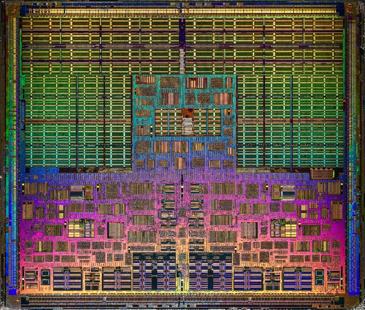 |
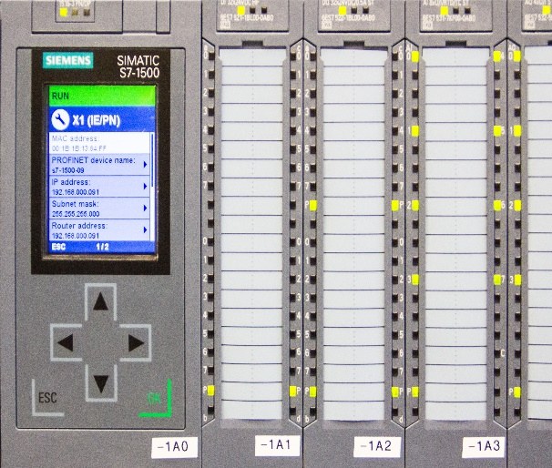 |
| c) Field-Programmable-Gate-Array (FPGA) | b) Micro-Controller (µC) und Signalprozessoren (DSP) |
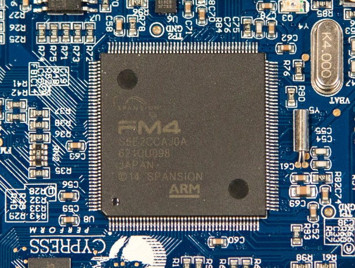 |
Durch den Abtastprozess entstehen Zahlenfolgen. Diese Zahlen können ähnlich wie analoge Zeitfunktionen betrachtet werden. Der Umgang mit Zahlenfolgen wird dargestellt und an Beispielen geübt. Dabei wird das Rechnen mit Impuls- und Sprungfolgen eingeführt und vertieft. Besonderer Wert wird auf komplexe Exponentialfolgen gelegt, die für das Einschwingverhalten digitaler Systeme von besonderer Bedeutung sind.
Digitale Systeme lassen sich wegen ihrer diskreten Signale nicht über Differentialgleichungen beschreiben. Deshalb wird die Beschreibung zeitdiskreter Systeme über Differenzengleichungen eingeführt. An Beispielen wird erläutert, wie diese Differenzengleichungen aufgestellt werden können. Abschließend werden grundlegende Systemeigenschaften wie Linearität, Zeitinvarianz, Stabilität und Kausalität diskutiert. Für lineare, zeitinvariante Systeme wird die Systemantwort über die Faltungssumme berechnet.
Die Zweiteilung von Signalen und Systemen zieht sich weiter durch das Skript. Zur Lösung von Differenzengleichungen wird die z-Transformation eingeführt. Sie ist das Pendant zur Laplace-Transformation zeitkontinuierlicher Signale und Systeme. Nach der Diskussion der z-Transformation für Signale werden Differenzengleichungen mit Hilfe der z-Transformation gelöst, und es wird der Begriff der Übertragungsfunktion zeitdiskreter Systeme eingeführt. An der Übertragungsfunktion können wichtige Systemeigenschaften direkt abgelesen werden, ohne die Systemantwort ausrechnen zu müssen. Die Interpretation der Übertragungsfunktion wird beschrieben und an Beispielen angewendet.
Anschließend wird der Begriff des Spektrums einer Signalfolge erläutert, und es wird die Fourier-Transformation von Signalfolgen vorgestellt. Mit der Fourier-Transformation für Signalfolgen wird einer Signalfolge ein Spektrum zugeordnet. Zeitdiskrete Systeme weisen einen Frequenzgang auf, der ebenfalls über die Fourier-Transformation von Signalfolgen bestimmt werden kann. Durchlaufen zeitdiskrete Signale zeitdiskrete Systeme, wird ihr Spektrum mit dem Frequenzgang des Systems multipliziert.
In technischen Produkten werden zeitkontinuierliche Systeme als Ersatz oder Ergänzung zu zeitdiskreten Systemen eingesetzt. Eine zeitdiskrete Realisierung wird sich im Detail immer von einer zeitkontinuierlichen Realisierung unterscheiden. Es stellt sich die Frage, wie ein zeitkontinuierliches System entworfen werden kann. Diese Frage wird am Beispiel des Filterentwurf beantwortet. Es werden unterschiedliche Verfahren zum Filter-Design für Filter mit endlicher Impulsantwort (FIR-Filter) und für Filter mit unendlicher Impulsantwort (IIR-Filter) beschrieben und an Beispielen verdeutlicht. Für die Realisierung von Filtern Filter werden oftmals feste Strukturen verwendet, die vergleichbar zu standardisierten Operationsverstärkerschaltungen für analoge Filter sind.
Zur Bestimmung des Spektrums eines gemessenen Signals wird die Diskrete-Fourier-Transformation verwendet. Sie wird am Ende des Skriptes vorgestellt und angewendet. Durch eine Analyse des Signalflusses von dem zeitkontinuierlichen Signal bis zum Spektrum der Diskreten-Fourier Transformation werden Effekte wie Fensterung, Leakage und Zero-Padding erläutert.
Die Darstellungen in diesem Skript werden mit Beispielen illustriert. Beispiele beginnen mit einem grauen Balken und enden mit einem kleinen Quadrat.
Example 1.1.
Erläuterung des Beispiels
Wesentlicher Erfolgsfaktor für das Verständnis und den praktischen Umgang mit den Methoden der Systemtheorie ist das selbstständige Rechnen von Aufgaben. Aus diesem Grund sind in das vorliegende Buch Übungsaufgaben integriert, die eine Semester begleitende Vertiefung ermöglichen. Musterlösungen sind online verfügbar.
2 Ergänzungen zum Buch
Das Fach Systemtheorie führt zu interdisziplinären Systembeschreibungen und bietet damit die Option, unterschiedliche Disziplinen und Fachrichtungen miteinander zu verbinden. Dies ist vor allem bei größeren Entwicklungsprojekten in Industrie und Wirtschaft von strategischer Bedeutung. Leider steht der hohen Bedeutung oft eine Abneigung der Studierenden gegenüber, die das Fach Systemtheorie als theoretisch und abstrakt empfinden. In einem Projekt Systemtheorie-Online, das von der Hochschule Karlsruhe und dem Land Baden-Württemberg gefördert wurde, wurden unterschiedliche Elemente entwickelt, mit denen die Praxisrelevanz des Stoffes verdeutlicht und die Motivation der Studierenden gesteigert werden soll.
1 Systemtheorie-Online
Eine Maßnahme ist die Online-Plattform Systemtheorie-Online. Bei der Online-Plattform handelt es sich um ein Internet-Portal zur Unterstützung des Vorlesungsbetriebs. Die Studierenden haben dort die Möglichkeit, das Skript als PDF-Dokument herunterzuladen oder es online mit mehreren Zusatzfunktionen durchzuarbeiten. Zu den präsentierten Inhalten werden themenbezogen Links zu Praxisbeispielen und Übungsaufgaben sowie sogenannte Applikationen und sogenannte virtuelle Versuche bereitgestellt.
Applikationen zur Systemtheorie
Für Sachverhalte und Zusammenhänge, die sich die Studierenden nur schwer vorstellen können, werden Applikationen zur Verfügung gestellt. Bei den Applikationen können Parameter beispielsweise per Schiebregler verändert und die Folgen dieser Modifikationen auf die Ausgabesignale beobachtet werden. Die Applikationen erlauben es einerseits, im Rahmen des spielerischen Ausprobierens ein Gefühl für Zusammenhänge und Abhängigkeiten verschiedener Systemparameter zu bekommen. In Video-Tutorials werden Studierenden in den Umgang mit den Applikationen eingeführt. Sie sollen dabei vor der Manipulation von Parametern Hypothesen über zu erwartende Effekte auf das Gesamtsystem abgeben, bevor unmittelbar darauf das Ergebnis-Feedback bezüglich des Zutreffens der eigenen Vorhersagen erfolgt.
Das Vorgehen bei den grafischen Animationen kann kurz an einem Beispiel erläutert werden: Ein PT2-Glied ist von den Parametern Zeitkonstante T, Dämpfung d und Verstärkung k abhängig (Bild 3). Die grafische Animation zeigt parallel die Eigenschaften des Systems im Zeit-, Laplace- und Frequenzbereich. Die Parameter können dabei durch Schieberegler variiert werden, sodass die Studierenden spielend ein Fingerspitzengefühl für das Übertragungsverhalten bekommen. Durch die Bereitstellung als Silverlight-Applikation benötigen die Studierenden keine zusätzliche Software, um das Programm auszuführen.
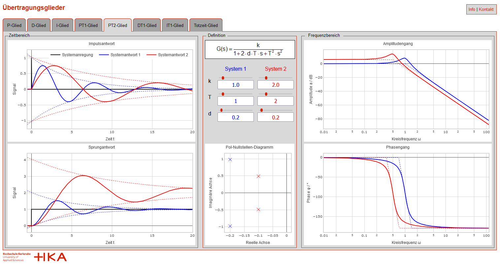
Virtuelle Versuche zur Systemtheorie
Darüber ermöglicht die Online-Plattform die Durchführung virtueller Experimente. Passend zu den Themen des Skripts werden Versuche mit dem Laborwagen auf Video aufgezeichnet und diese auf der Online-Plattform gemeinsam mit den entsprechenden Datensätzen zur Verfügung gestellt. Zusätzliche Erläuterungen zur Durchführung der Versuche und Auswertung der Daten fördern ein Grundverständnis für das wissenschaftliche Denken und Arbeiten.
Als Experimente zur Demonstration stehen bereits einige Versuche zum Laborwagen zur Verfügung. Bild 4 zeigt zum Beispiel einen Versuch zur Beschreibung des Einschwingverhaltens eines Lautsprechers. Weitere Experimente insbesondere zu den Themen diskrete Systeme und stochastische Systeme wurden aufgebaut und gefilmt, die Videos stehen als Datei zur Verfügung. Die Studierenden erhalten aber nicht nur den Video-Stream, sondern auch die einzelnen Versuchsergebnisse in Form von Daten-Files und können bei Interesse eigene Versuchsauswertungen erstellen.
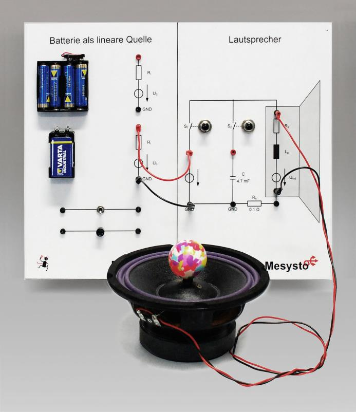
Das Portal Systemtheorie-Online bietet den Studierenden damit die Möglichkeit, theoretische Sachverhalte auf eine anschauliche Art aufbereitet und erklärt zu bekommen. Damit wird eine Forderung aus der Evaluation aufgegriffen, mehr Versuche in der Systemtheorie einzusetzen. Darüber hinaus haben die Studierenden die Möglichkeit, selbst aktiv zu werden und Versuche selbstständig auszuwerten und daran ihren eigenen Lernerfolg zu messen. Das Projekt bietet damit einen Beitrag zur praxisnahen Ausbildung von Studierenden und stellt wegen des freien Zugangs ein Weiterbildungsangebot dar, das Mitarbeitern aus Industrie und Wirtschaft offensteht. Der Aufbau dieses Portal wurde im Rahmen von Pro-Studium aus Studiengebühren und aus Mitteln des Landes Baden-Württemberg im Rahmen des Programms Willkommen in der Wissenschaft finanziert.
2 Teamorientierte Lehrmethoden
Parallel zu den Online-Aktivitäten wird die Vorlesung um unterschiedliche teamorientierte Lehrmethoden ergänzt. Kooperative Lernformen fördern den Zusammenhalt und tragen sozialen Bedürfnissen Rechnung. Sie wirken der sozialen Isolation entgegen, die Studierenden fühlen sich eingebunden. Nicht zuletzt spiegelt die Teamarbeit auch berufliche Anforderungen wider. Die Methoden des teamorientierten Lernens sind auf der Online-Plattform ausführlich dokumentiert.
Lange Nächte der Systemtheorie
Lange Nächte sind abendliche Veranstaltungen zur Vertiefung des Vorlesungsstoffs, passend zu einem bestimmten Vorlesungsthema. In entspannter Atmosphäre werden Übungsaufgaben und Experimente mit dem Laborwagen miteinander kombiniert. Der verfügbare Zeitrahmen erlaubt eine Beschäftigung mit komplexeren Fragestellungen. In erster Linie ist dieser Baustein als offener Lernraum konzipiert, in dem Wissen stressfrei vermittelt und vertieft wird. Erste lange Nächte wurden von den Studierenden sehr positiv bewertet. Besonders gelobt wurden das gemeinschaftliche Lernen in der Gruppe, das angenehme Arbeitsklima sowie der Praxisbezug und die Arbeit mit realen Messdaten.
Großer Preis der Systemtheorie
In Anlehnung an die Fernsehsendung “Der große Preis” wird mit den Studierenden eine Quiz-Show veranstaltet. Dabei bearbeiten die Studierenden in Gruppen Fragen zu Themenblöcken der Vorlesung. Die Punktzahl ist abhängig von Schwierigkeitsgrad. Die Abschätzung eines Einsatzes bei sogenannten Risiko-Fragen erfordert die Selbsteinschätzung der Studierenden. Durch sogenannte Glücksfragen zu fachfremden Themen können auch Gruppen mit mäßigem Fachwissen gewinnen. Die traditionelle Rangordnung innerhalb der Vorlesung wird aufgebrochen und die Motivation der Studierenden steigt. Studierenden zeigten bei erster Durchführung extrem hohe Motivation und hohes Engagement.
Zirkeltraining Systemtheorie
Erfolgreiches Lernen setzt ein Gleichgewicht zwischen Anspannung und Entspannung voraus. Zielsetzung dieses Zirkeltrainings ist es deshalb, sportliche Übungen oder Geschicklichkeitsspiele in den Lernprozess zu integrieren. Dazu wird ein Parkour aufgebaut, bei dem sich Übungsaufgaben und Spielstationen abwechseln. Bei der Veranstaltung stehen die Motivation und der Spaß an vorderster Stelle. Es wird eine angenehme Atmosphäre geschaffen, in der der Druck beim Bewältigen von Übungsaufgaben durch spielerische Anteile entlastet wird. Wegen des erforderlichen Platzbedarfs eignet sich das Zirkeltraining Systemtheorie insbesondere für die Sommermonate.
Die Evaluationsergebnisse zur Vorlesung zeigen, dass es durch den Einsatz teamorientierter Lehrmethoden gelungen ist, diese Abneigung gegen das Fach Systemtheorie zumindest teilweise abzubauen.
3 Danksagung
Wir bedanken uns bei den Studierenden und Assistenten Andreas Kühn, Erik Seiter, Sebastian Stiegler, Philipp Fetzer, Jaruwan Limsukhakorn, Doraemon Dedkum, Georg Bauer, Jochen Lang, Alex Schwin und Michael Holz für die Gestaltung und Ausarbeitung des wesentlichen Teils der Übungsaufgaben, Applikationen und Versuche.
Unser besonderer Dank gilt außerdem den Kollegen Prof. Dr. Beucher, Prof. Dr. Dussel, Prof. Dr. Quint und Prof. Dr. Weizenecker, die die inhaltliche und mathematische Darstellung in diesem Buch kritisch hinterfragt und damit zur besseren Verständlichkeit beigetragen haben.
In das Buch sind viele Hinweise von Studierenden der Hochschule Karlsruhe eingegangen. Wir haben versucht, den Hinweisen gerecht zu werden, die meisten Hinweise sind bereits in Überarbeitungen Korrekturen eingeflossen. Über weitere Hinweise zur mangelhaften Verständlichkeit und auf Fehler würden wir uns freuen.
Karlsruhe, 15.03.2025
Chapter 1 Signalabtastung und Rekonstruktion
Als Voraussetzung für die digitale Signalverarbeitung müssen die zeit- und wertkontinuierlichen Signale so gewandelt werden, dass sie abgespeichert und weiterverarbeitet werden können. Diese Wandlung wird Digitalisierung genannt.
Dazu muss das Signal einerseits zeitlich quantisiert werden, da nur endlich viele Werte verarbeitet werden können. Zu diskreten Zeitpunkten wird dabei der aktuelle Wert des Signals abgetastet. Die Abstände zwischen den Zeitpunkten, zu denen die Werte erfasst werden, sind üblicherweise äquidistant, sie sind also immer gleich groß. Die erfassten Werte werden Abtastwerte genannt. Außerdem muss die Amplitude des Signals bestimmt werden, was nur in einem begrenzten Bereich und mit einer definierten Auflösung oder Quantisierung möglich ist.
Nach einer kurzen Darstellung zum Umgang mit Quantisierungsfehlern bei der Amplitude wird in diesem Kapitel die Zeitdiskretisierung betrachtet, da eine falsche Zeitdiskretisierung fatale Auswirkungen auf die folgende Signalverarbeitung hat. Zunächst wird allgemein erklärt, wie die ideale Abtastung von Signalen mathematisch beschrieben werden kann. Hierbei wird deutlich, warum das Spektrum eines abgetasteten Signals immer periodisch ist. Anhand der Periodizität des Spektrums wird das Abtasttheorem von Shannon eingeführt. Es besagt, dass die Abtastfrequenz bei bandbegrenzten Signalen mehr als doppelt so groß sein muss, wie die größten Frequenzanteile im Signal. Mit dem Anti-Aliasing-Tiefpass wird eine Methode vorgestellt, wie Signale ohne Bandbegrenzung gefiltert werden können, um das Abtasttheorem zu erfüllen.
Da die ideale Abtastung von Signalen nur in der Theorie existiert und in der Praxis so nicht direkt angewandt werden kann, wird darüber hinaus die reale Abtastung mathematisch beschrieben und die dadurch entstehenden Signalverzerrungen erläutert. Auch hier gibt es die Möglichkeit, die Effekte durch die geschickte Anwendung von Filtern zu kompensieren.
1 Quantisierungsfehler der Amplitude
Bei der Digitalisierung von Signalen muss die Amplitude einer festen Quantisierungsstufe zugeordnet werden. Entscheidend für die Quantisierung des Signals ist die Auflösung des Analog-Digital-Wandlers (AD-Wandlers), die üblicherweise in Bit angegeben wird. Beispielsweise wird mit einem 12-Bit-AD-Wandler ein definierter Messbereich in Intervalle eingeteilt. Bei einem Messbereich von 5 V ergäben sich demnach bei einer Auflösung von 12 Bit Quantisierungsstufen von.
| (1) |
In der Praxis wird die Quantisierung der Amplitude gerne vernachlässigt, weil die entstehenden Fehler durch eine hohe Auflösung des verwendeten Analog-Digital-Wandlers klein gehalten werden können. Die existierende Abweichung zwischen dem wertdiskreten und wertkontinuierlichen Signal wird als Quantisierungsfehler modelliert. Bild 1 verdeutlicht den Quantisierungsfehler an zwei Beispielen.
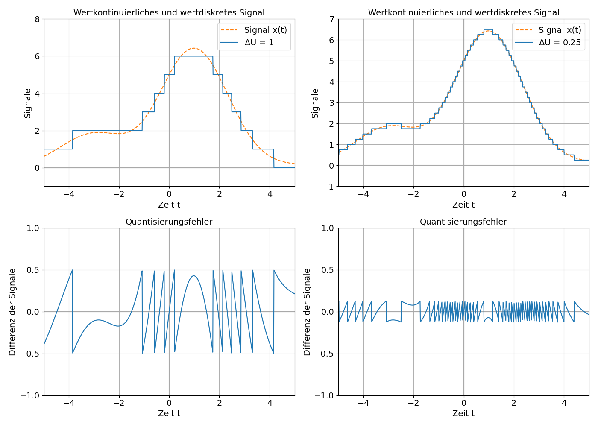
Der Quantisierungsfehler ergibt sich aus der Differenz zwischen dem wertkontinuierlichen und dem wertdiskreten Signal. Je feiner die Auflösung des AD-Wandlers ist, desto geringer ist der Abstand zwischen dem kontinuierlichen und dem quantisierten Signal. Da die Abweichung einen zufälligen Verlauf zu haben scheint, wird dieser Fehler als Quantisierungsrauschen bezeichnet und als zufälliger Fehler oder zufälliges Störsignal behandelt. Der Umgang mit zufälligen Signalen ist Gegenstand des Teils C dieser Buchreihe, der Quantisierungsfehler wird an dieser Stelle deshalb nicht weiter vertieft.
2 Vorüberlegungen zur zeitlichen Diskretisierung
Die grundlegende Frage bei der zeitlichen Abtastung von Signalen ist, in welchen Zeitabständen beziehungsweise mit welcher Abtastfrequenz ein Signal erfasst werden muss. Die Bedeutung dieser Frage wird an einem Beispiel erläutert.
Example 2.1.
Abtastwerte
Bild 2 zeigt Abtastwerte eines Signals, das mit unterschiedlichen Abtastzeiten abgetastet wird. Die Abtastwerte sind jeweils über Geradenabschnitte miteinander verbunden. Das Signal scheint davon abzuhängen, wie es abgetastet wird.
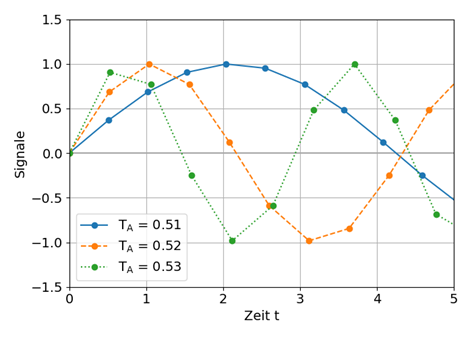
Das zugrunde liegende Signal ist sinusförmig und wird mit der Funktion
| (2) |
beschrieben. Der Vergleich der Abtastwerte mit dem Signal in Bild 3 zeigt, dass alle in Bild 2 dargestellten abgetasteten Signale falsch oder zumindest irreführend sind.
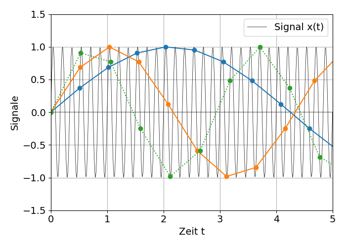
Die Abtastwerte liegen auf einer Schwingung mit wesentlich höherer Frequenz und geben nicht das eigentliche Signal wieder. Daraus kann die Schlussfolgerung gezogen werden, dass beim Abtasten Regeln eingehalten werden müssen, um das Signal richtig rekonstruieren zu können. Diese Überlegung wird zu dem Abtasttheorem führen.
Vor der allgemeinen Herleitung des Abtasttheorems werden die Abtastwerte eines harmonischen Signals mit einer Frequenz analysiert. Das Signal ist definiert als
| (3) |
Das Signal wird mit einer Abtastzeit abgetastet, sodass sich an den ganzzahligen Vielfachen k der Abtastzeit t = kTA die Werte ergeben zu
| (4) |
Die Abtastwerte der Signalfolge stimmen mit einer Signalfolge überein, die sich aus der Abtastung eines harmonischen Signals mit einer Frequenz und dem Vielfachen der Abtastfrequenz nfA ergibt. Einsetzen der Bedingungen ergibt
| (5) | ||||
| (6) |
Der Faktor nk ist dabei ein ganzzahliger Wert. Das bedeutet, dass die Abtastwerte, die ein Signal der Frequenz repräsentieren, genau dieselben sind wie diejenigen, die sich beim Abtasten eines Signals der Frequenz und einem Vielfachen der Abtastfrequenz ergeben. Nach der Abtastung kann also nicht zwischen Signalen der Frequenz und + nfA unterschieden werden. Bild 4 stellt die Signal- und Abtastwerte für ein Beispiel dar.
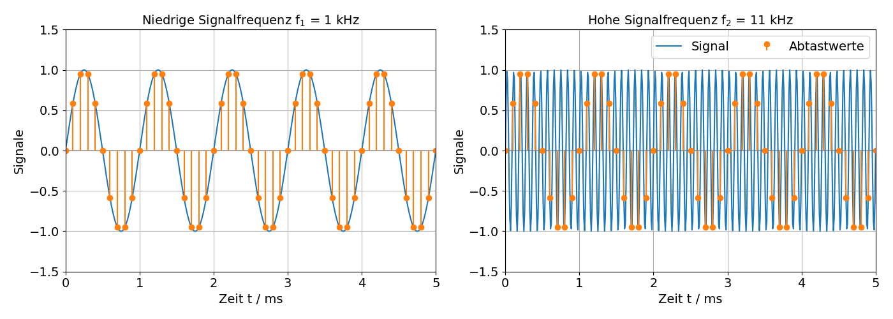
Das Signal wird mit einer Frequenz abgetastet. Die Abtastwerte sind für ein Signal mit einer Frequenz = 1 kHz und einem Signal mit einer Frequenz identisch.
Der hier für harmonische Schwingungen dargestellte Sachverhalt gilt auch für nicht harmonische Signale, da sie sich mit der Fourier-Transformation auf harmonische Signale zurückführen lassen. Dieser Effekt macht es erforderlich, den Abtastvorgang mathematisch zu beschreiben und Bedingungen für den Abtastvorgang zu definieren, unter denen ein abgetastetes Signal rekonstruiert werden kann.
3 Ideale Abtastung und ideale Rekonstruktion
Für die systemtheoretische Behandlung der digitalen Signalverarbeitung ist es erforderlich, die Abtastung und die Rekonstruktion des Signals mathematisch ideal zu beschreiben. Aus dieser Beschreibung wird anschließend das Abtasttheorem hergeleitet.
1 Mathematische Beschreibung der idealen Abtastung
Um die Abtastung eines Signals mathematisch beschreiben zu können, wird eine sogenannte Abtastfunktion definiert. Da bei der idealen Abtastung Werte des analogen Signals zu diskreten Zeitpunkten werden, bietet sich eine Folge von Impulsen als Abtastfunktion an. Diese Abtastfunktion ist mathematisch definiert als
| (7) |
Die Abtastfunktion wird mit dem analogen Signal multipliziert. Da die Impulsfolge nur zu den Zeitpunkten kTA ungleich null ist, genügt es, die Funktion nur zu diesen Zeitpunkten zu betrachten. Es ergibt sich als Darstellung für das ideal abgetastete Signal
| (8) |
Bild 5 verdeutlicht die mathematische Beschreibung der Signale grafisch. Dabei werden die unendlich großen Impulse als Pfeile dargestellt, ihre Höhe repräsentiert das Gewicht des jeweiligen Impulses.
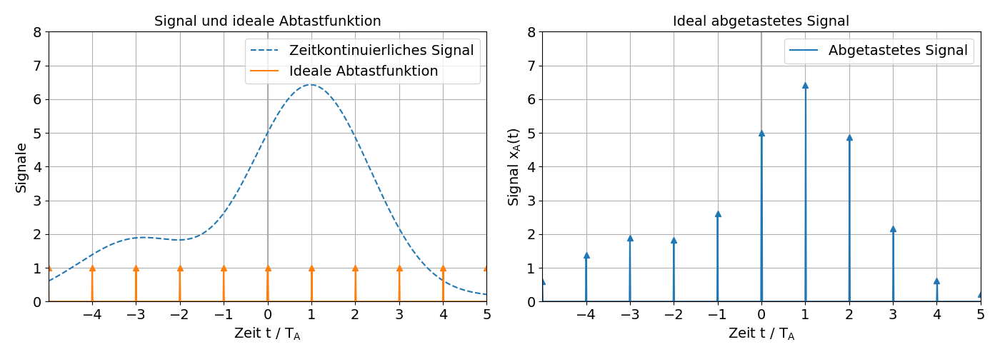
Im Zeitbereich wird das Signal mit der Abtastfunktion multipliziert. Der Multiplikation im Zeitbereich entspricht eine Faltung im Frequenzbereich. Damit muss im Frequenzbereich das Spektrum des Signals mit dem Spektrum der Abtastfunktion gefaltet werden. Hierfür wird zunächst das Spektrum der Abtastfunktion errechnet.
| (9) |
Die Gleichung kann als Fourier-Reihe dargestellt werden und in den folgenden Ausdruck umgeformt werden
| (10) |
Dies bedeutet, dass die Abtastfunktion auch im Frequenzbereich einer Impulsfolge entspricht, wobei der Abstand der Impulse proportional zur Abtastfrequenz
| (11) |
ist. Über die Faltungsbeziehung ergibt sich für die abgetastete Funktion im Frequenzbereich
| (12) | ||||
| (13) |
Eine Abtastung mit der idealen Abtastfunktion führt demnach zu einer in periodischen Fortsetzung des Spektrums des kontinuierlichen Zeitsignals und zu einer Multiplikation mit dem
Faktor 1/. Bild 6 stellt die Spektren im idealen Abtastprozess schematisch dar.
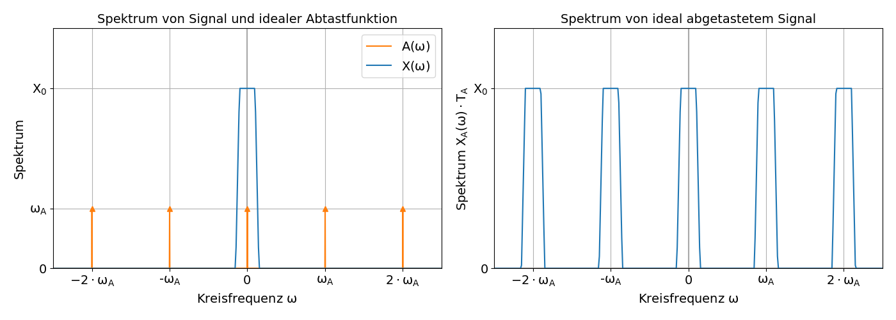
Die periodische Wiederholung des Spektrums ist dafür verantwortlich, dass die Abtastwerte von zu langsam abgetasteten Signalen mit den Frequenzen und + nfA nicht unterschieden werden können. Die mathematische Herleitung bestätigt damit den in Bild 4 dargestellten Sachverhalt.
Der ursprüngliche Frequenzbereich des Signals mit dem Frequenzbereich - ≤ ω ≤ wird als Basisband des Signals bezeichnet. Durch den Abtastvorgang wird das Basisband periodisch in wiederholt.
2 Ideale Rekonstruktion eines Signals
Da bei der idealen Abtastung das Spektrum eines Signals periodisch wiederholt und mit dem Faktor 1/ multipliziert wird, liegt es auf der Hand, die Wiederholung des Spektrums durch eine entsprechende Filterung zu eliminieren. Durch eine hier ideal angenommene Tiefpass-Funktion mit einer Grenzfrequenz von /2 kann das sogenannte Basisband, also das ursprüngliche Spektrum der Zeitfunktion, isoliert werden. Bild 7 verdeutlicht den Filterprozess.
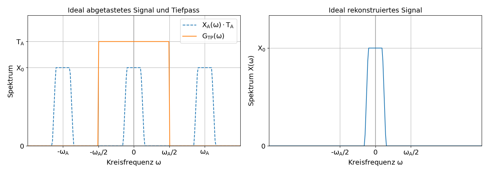
idealisierte Tiefpass-Funktion gestrichelt dargestellt
Mathematisch gesehen muss das Spektrum mit einer idealen Tiefpass-Filterfunktion und dem Faktor multipliziert werden. Das Spektrum ergibt sich damit zu
| (14) | ||||
| (15) |
Die ideale Rekonstruktion kann auch im Zeitbereich durchgeführt werden. Der Multiplikation im Frequenzbereich entspricht im Zeitbereich die Faltung der entsprechenden Zeitfunktionen. Die Impulsantwort der Filterfunktion ist nach den Rechenregeln der Fourier-Transformation
| (16) |
Die Impulsantwort des Tiefpasses ist in Bild 8 dargestellt. Zum Zeitpunkt ist die Funktion 1, zu den Zeitpunkten kTA ist die Funktion null.
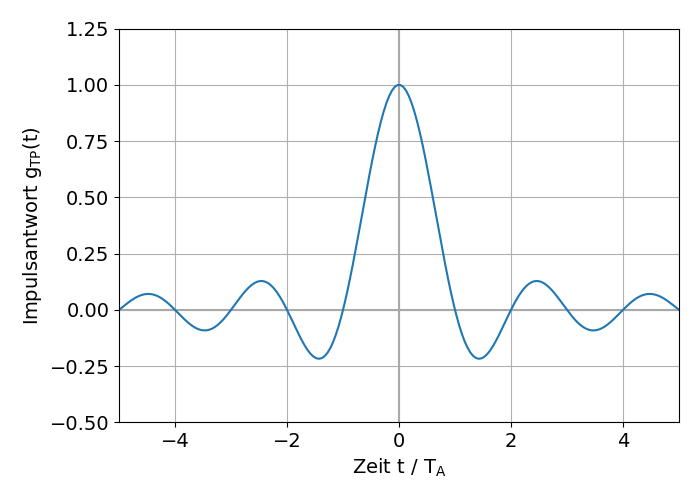
Das Signal berechnet sich über das Faltungsintegral. Da die Faltung einer Funktion mit einem Impuls an der Stelle die Funktion an die Stelle x(t - ) verschiebt, ergibt sich
| (17) | ||||
| (18) |
Das Signal setzt sich aus der Summe von Termen zusammen, die jeweils um kTA verschoben sind und mit dem Gewicht x(kTA) multipliziert werden. Bild 9 stellt die Rekonstruktion im Zeitbereich dar.
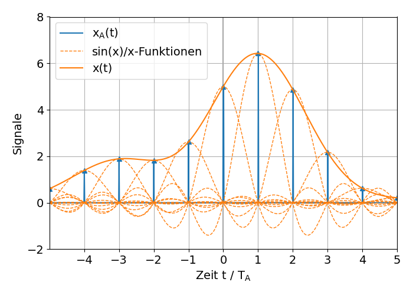
Das Ergebnis der Überlagerung entspricht erwartungsgemäß der ursprüngliche Zeitfunktion .
3 Abtasttheorem nach Shannon
In den vorangegangenen Abschnitten wird gezeigt, dass sich das Spektrum eines abgetasteten Signals periodisch mit der Abtastfrequenz fortsetzt. Diese periodische Wiederholung ist Grundlage für die Herleitung des Abtasttheorems nach Shannon.
Gegeben sei ein bandbegrenztes Signal , das abgetastet werden soll. Durch die Physik des Systems ist die Bandbreite des Signals auf Frequenzen ω ≤ begrenzt. Bei der Abtastung des Signals wird das Spektrum der Zeitfunktion, wie in Bild 7 dargestellt, periodisch in wiederholt. Durch eine hier ideal angenommene Tiefpass-Funktion kann das sogenannte Basisband, also das ursprüngliche Spektrum der Zeitfunktion, isoliert werden. Bild 7 verdeutlicht den Filterprozess.
Ist die Abtastzeit zu groß, wird zu klein und die einzelnen Spektren der abgetasteten Funktion überlagern sich. Signalverzerrungen, die sich beim Abtasten durch Überlagerung der Spektren ergeben, werden als Aliasing bezeichnet. Damit die einzelnen Spektren voneinander getrennt bleiben, muss nach Bild 7 die Bedingung
| (19) |
beziehungsweise
| (20) |
erfüllt sein. Dieses Ergebnis wird als Abtasttheorem bezeichnet. Die Abtastfrequenz muss mehr als doppelt so groß sein wie die Bandbreite des abzutastenden Signals. Damit muss für die Abtastzeit gelten:
| (21) |
Bild 10 zeigt die Spektren abgetasteter Signale für genügend große Abtastfrequenz, gerade ausreichende und zu kleine Abtastfrequenz.
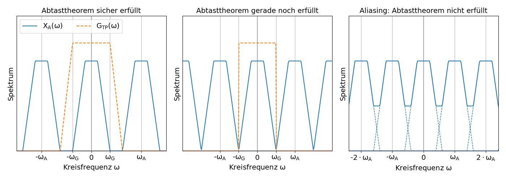
Abtastfrequenz XA2(ω) und für zu kleine Abtastfrequenz XA3(ω)
Im ersten Fall wird mit einer Abtastfrequenz gearbeitet, die deutlich größer ist als das Abtasttheorem vorschreibt. Dieser Fall wird als Oversampling bezeichnet. Durch die hohe Abtastfrequenz werden das Spektrum im Basisband und die nächsthöheren Spektren deutlich voneinander getrennt, sodass mit einem Tiefpass-Filter mit vergleichsweise flachem Übergang zwischen Sperr- und Durchlass-Bereich gearbeitet werden kann.
Im zweiten Fall wird das Abtasttheorem gerade eingehalten. Es zeigt sich aber, dass die Rekonstruktion nur mit einem idealen Tiefpass-Filter erfolgen kann, der technisch nicht realisiert werden kann. Dieser Fall entspricht dem theoretischen Grenzfall des Abtasttheorems.
Im Fall einer zu kleinen Abtastfrequenz überlagern sich die Spektren. Das Signal kann selbst mit einem idealen Tiefpass-Filter nicht fehlerfrei rekonstruiert werden. Es kommt zu Signalverzerrungen oder Aliasing.
Example 3.1.
Abtastrate einer Sound-Karte
Sound-Karten von Computern besitzen einen Analog-Digital-Wandler (ADC). Er wandelt das analoge Signal in ein digitales Signal um. Bei Sound-Karten ist zum einen die Auflösung des ADC wichtig, da sie die Quantisierungsfehler und damit das Rauschen bestimmt. Zweiter wesentlicher Faktor ist die Abtastrate.
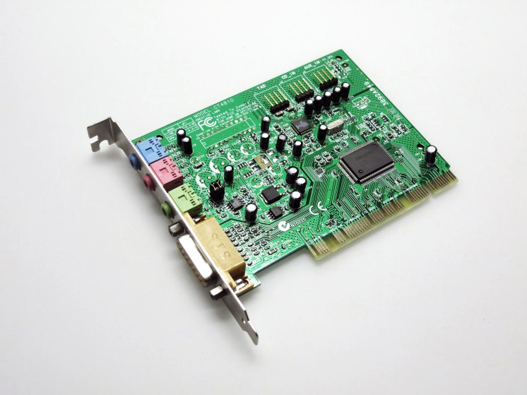
Eine Abtastfrequenz ermöglicht die Aufnahme und Wiedergabe bis zu einer theoretischen Bandbreite von
| (22) |
Mit der Sound-Karte können damit Musiksignale mit einer maximalen Frequenz von 22 kHz verarbeitet werden.
4 Bandbegrenzung des abzutastenden Signals
Das Abtasttheorem geht davon aus, dass das Signal bandbegrenzt ist. Reale Signale haben in praktischen Anwendungen aber im Allgemeinen keine harte Bandbegrenzung. Vielmehr ergibt sich ihre Bandbreite aus dem Tiefpassverhalten des Systems, das das Signal generiert, und dem Spektrum von überlagerten Störungen. Um den Einfluss der mangelhaften Bandbegrenzung zu reduzieren, kann ein analoger Tiefpass wie zum Beispiel ein RC-Glied zur Filterung eingesetzt werden. Er verhindert, dass sich in dem Spektrum höhere Frequenzanteile befinden als erwartet, und reduziert damit den Einfluss von Störungen. Das Tiefpass-Filter wird aufgrund seiner Funktion als Anti-Aliasing-Filter bezeichnet. Die Wirkung des Anti-Aliasing-Filters wird in Bild 12 veranschaulicht.
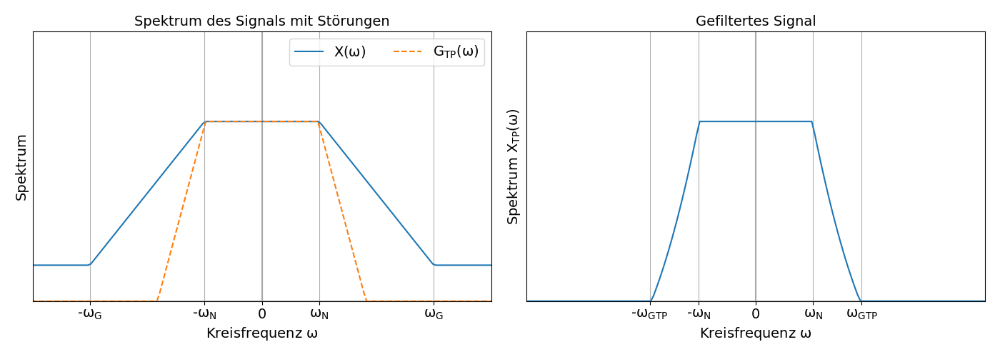
Das Signal hat ein Spektrum, dessen Information im Nutzbereich - < ω < liegt. Es besitzt aber zum Beispiel aufgrund von Störungen ein breiteres Spektrum. Damit existieren auch oberhalb der als maximal angenommenen Bandbreite Spektralanteile. Durch den Einsatz eines Tiefpass-Filters, das den Frequenzbereich ω < - und den Bereich ω > dämpft, ergibt sich bei dem neu entstandenen Signal ein Spektrum , das im Nutzbereich dem des ursprünglichen Signals entspricht, im übrigen Bereich aber stärker gedämpft ist. Dieses Signal kann wegen der geringeren Bandbreite < mit einer geringeren Frequenz abgetastet werden und der Rauschanteil wird durch die Bandbegrenzung reduziert.
In technischen Anwendungen wird deshalb praktisch immer ein Eingangstiefpass eingesetzt, das das Spektrum des Eingangssignals auf die notwendige Bandbreite begrenzt. Die Spezifikation von Filtern und ihr Entwurf werden im Teil A dieser Buchreihe diskutiert.
Example 3.2.
Abtastung Drucksensor im Steuergerät
Für die Regelung des Ladedrucks von Turboladern werden Drucksensoren eingesetzt.
Der Drucksensor, der den Ladedruck misst, besitzt laut Datenblatt eine Zeitkonstante . Das entspricht einer 3 dB-Grenzfrequenz von
| (23) |
Das Motor-Steuergerät tastet das Signal mit einer Abtastzeit von 1 ms ab. Es ergibt sich eine Abtastfrequenz von
| (24) |
Wird die Grenzfrequenz als maximale Frequenz angesehen, wird das Abtasttheorem nicht erfüllt. Außerdem sind dem Sensorsignal Störungen überlagert, die Spektralanteile weit oberhalb der Grenzfrequenz besitzen können. Zur Vermeidung von Aliasing-Effekten wird ein Anti-Aliasing-Filter eingesetzt. Es weist eine Zeitkonstante von auf, was einer 3 dB-Grenzfrequenz von
| (25) |
entspricht. Durch den Einsatz des Tiefpass-Filters wird bei derselben Abtastrate das Abtasttheorem eingehalten. Das Filter hat eine Dämpfung von - 20 dB pro Dekade. Die sich aus der endlichen Steilheit ergebenden Effekte werden in einer Übungsaufgabe diskutiert.
4 Reale Abtastung und Rekonstruktion
Die zuvor vorgestellte ideale Abtastfunktion ist nicht realisierbar, da ideale Impulse technisch nicht erzeugt werden können. Dies liegt an der unendlich kurzen Dauer sowie der unendlichen Steilheit und Höhe von Impulsen. Aus dieser Überlegung ergeben sich die reale Abtastung und die reale Rekonstruktion von Signalen.
1 Reale Abtastung eines Signals
Reale beziehungsweise technisch realisierbare Abtastsysteme brauchen eine Wandlungszeit , um aus dem analogen Signal ein zeitdiskretes Signal zu generieren. Die Wandlungszeit ergibt sich zum Beispiel aus einem Ladungstransport oder einem Approximationsprozess, bei dem das Signal als Mittelwert über einen Zeitraum durch Integration bestimmt wird. Das real abgetastete Signal wird deshalb mit dem Ausdruck
| (26) |
beschrieben. Es handelt sich um das Produkt von dem gleitenden Mittelwert und der idealen Abtastfunktion im Zeitbereich. Zur Berechnung des Spektrums müssen die Spektren der beiden Signale berechnet werden. Dazu wird das Integral in zwei Summanden zerlegt.
| (27) |
Mit der Integrations- und Verschiebungsregel ergibt sich das zugehörige Spektrum.
| (28) | ||||
| (29) | ||||
| (30) | ||||
Da der letzte Summand in Gleichung (30) null ist, gilt:
| (31) |
Mit dem Spektrum der idealen Abtastfunktion aus Gleichung (10) und der Multiplikationsregel kann das Spektrum des real abgetasteten Signals berechnet werden zu
| (32) | ||||
| (33) |
Wie bei der idealen Abtastung wird das Spektrum mit 1/ skaliert und periodisch in wiederholt. Allerdings wird das Spektrum des zeitkontinuierlichen Signals vor der periodischen Wiederholung mit einem Frequenzgang multipliziert, der sich aus der gleitenden Mittelung ergibt. Dieser Vorgang wird in Bild 14 für Wandlungszeiten von und .1TA dargestellt. Die Auswirkung auf das Spektrum im Basisband steigt mit steigender Wandlungszeit. In Analog-Digital-Wandlern wird der Effekt durch geringe Wandlungszeiten klein gehalten und durch den Einsatz inverser Filter kompensiert.
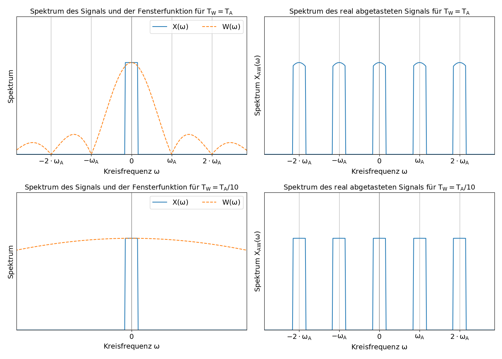
für unterschiedliche Wandlungszeiten und .1TA
2 Reale Rekonstruktion eines Signals
Nach der Abtastung liegen einzelne Abtastwerte vor, die das Signal zu den entsprechenden Abtastzeiten charakterisieren. Für einige Anwendungen ist es notwendig, diese zeitdiskreten Signale wieder in zeitkontinuierliche Signale zu wandeln. Die bereits diskutierte ideale Rekonstruktion eines Signals ist wegen des ideal angenommenen Tiefpass-Filters nicht kausal und kann deshalb technisch nicht realisiert werden. Eine technisch realisierbare Rekonstruktion des ursprünglichen Signals aus den Abtastwerten wird in zwei Schritten realisiert:
-
•
Erzeugung eines stufenförmigen Ausgangssignals mit einem Halteglied
-
•
Tiefpass-Filterung
Die beiden Schritte werden im Zeit- und Frequenzbereich beschrieben. Zur Übersicht stellt Bild 15 den Signalfluss einer realen Signalrekonstruktion bei idealer Signalabtastung dar.
Erzeugung eines stufenförmigen Ausgangssignals mit einem Halteglied
Die einzelnen Abtastwerte stellen das Signal zu den entsprechenden Abtastzeiten dar. Das
Halteglied H hält den aktuell gültigen Wert des digitalen Systems am Ausgang fest, bis der nächste Abtastwert zur Verfügung steht. Dadurch steht zu jedem Zeitpunkt t ein Ausgangssignal zur Verfügung und das Signal ist wieder zeitkontinuierlich. Bild 16 zeigt an einem Beispiel das abgetastete Signal und das Signal nach dem Halteglied.
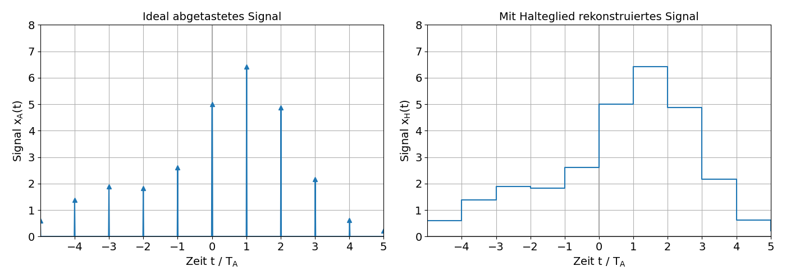
Im Zeitbereich kann das kontinuierliche Signal nach dem Halteglied analog zur realen Wandlung mit Rechteckfunktionen beschrieben werden.
| (34) |
Das Signal nach dem Halteglied kann wieder als Faltung ausgedrückt werden.
| (35) | ||||
| (36) |
Der Faltung der Signale im Zeitbereich entspricht die Multiplikation der Spektren im Frequenzbereich. Das Spektrum des Signals nach dem Halteglied ergibt sich damit aus dem Produkt des Spektrums und dem Frequenzgang des Halteglieds .
| (37) |
Bild 17 zeigt das Spektrum des abgetasteten Signals und dem Signal nach dem Halteglied.
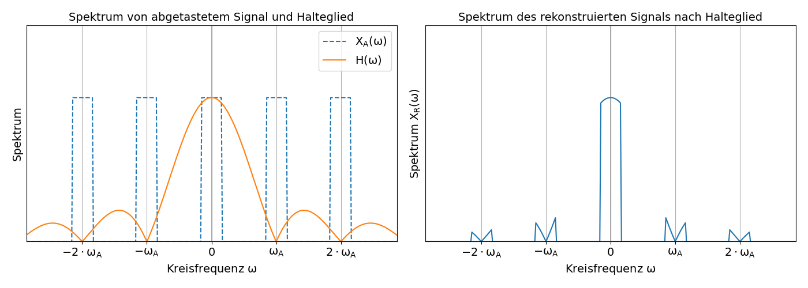
Durch das Halteglied wird das Spektrum gedämpft. Diese Dämpfung wirkt sich aber vor allem auf die periodische Fortsetzung des Spektrums aus.
Filterung des stufenförmigen Signals
Zur Vermeidung von Signalsprüngen im rekonstruierten Signal wird das Spektrum nach dem Halteglied mit einem geeigneten Filter gefiltert. Mit dem Frequenzgang des Filters ergibt sich der Frequenzgang des rekonstruierten Signals zu
| (38) |
Idealerweise würde das Filter die Abweichungen im Basisband des Nutzsignals - < ω < kompensieren und die Frequenzanteile ober- und unterhalb des Basisbandes vollständig eliminieren. Bild 18 verdeutlicht diesen Ansatz.
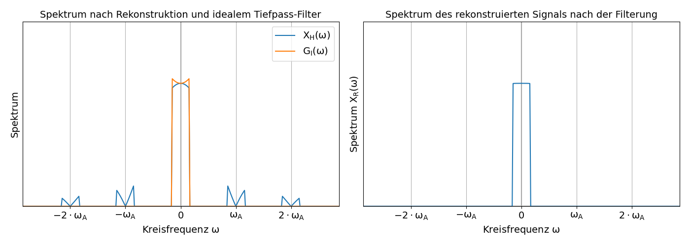
Dieses ideale Filter ist wegen der idealen Flankensteilheit nicht realisierbar. Reale Filter beschränken sich auf eine endliche Flankensteilheit. Eine Möglichkeit, die erforderliche Flankensteilheit zu senken, ist eine Steigerung der Abtastrate . Dieser Vorgang wird als Überabtastung oder Oversampling bezeichnet. Durch die höhere Abtastrate werden zwei Effekte erzielt:
-
•
Die Trennung der periodischen Spektren ist größer. Dadurch kann die Ordnung des Filters zur Signal-Rekonstruktion reduziert werden.
-
•
Mit höherer Abtastrate liegt der Nutzbereich des Signals immer mehr im flachen Bereich der Übertragungsfunktion des Halteglieds, sodass eine Kompensation des Frequenzgangs des Halteglieds nicht weiter notwendig ist.
Die zum Halteglied inverse Charakteristik im Durchlassbereich kann über ein digitales Filter erreicht werden, der als Teil der digitalen Signalverarbeitung realisiert wird.
3 Totzeit bei der realen Signalabtastung
In den vorangegangenen Abschnitten wird der Abtastvorgang hinsichtlich der Auswirkung auf den Betrag des Spektrums diskutiert. Die Übertragungsfunktionen weisen aber immer auch eine Phasenverschiebung auf. Die gesamte Phasenverschiebung ergibt sich bei der realen Abtastung nach den obigen Darstellungen aus den Totzeiten des Wandlers und des Halteglieds.
| (39) |
Dazu kommen die Phase des Anti-Aliasing-Filters und des Tiefpass-Filters zur Signalrekonstruktion, sodass gegenüber dem Eingangssignal eine teilweise erhebliche Signalverzögerung entsteht. Die Zeitverzögerung sowie das Einschwingverhalten des rekonstruierten Signals werden an einem Beispiel verdeutlicht.
Example 4.1.
Signalrekonstruktion
Ein Signal der Form
| (40) |
wird mit einer Abtastzeit von abgetastet, das System besitzt eine Wandlungszeit von . Es entstehen die in Tabelle 1 dargestellten Abtastwerte.
| T / | - 5 | - 4 | - 3 | - 2 | - 1 | 0 | 1 | 2 | 3 | 4 | 5 |
|---|---|---|---|---|---|---|---|---|---|---|---|
| x(kTA) | 0.607 | 1.392 | 1.889 | 1.828 | 2.621 | 5.000 | 6.428 | 4.875 | 2.176 | 0.628 | 0.214 |
Die Abtastwerte werden über ein Halteglied und einen Tiefpass mit einer Zeitkonstante rekonstruiert. Bild 19 zeigt das analoge Signal und das durch Abtastung und Rekonstruktion erzeugte Signal bei Verwendung eines Tiefpasses erster Ordnung.
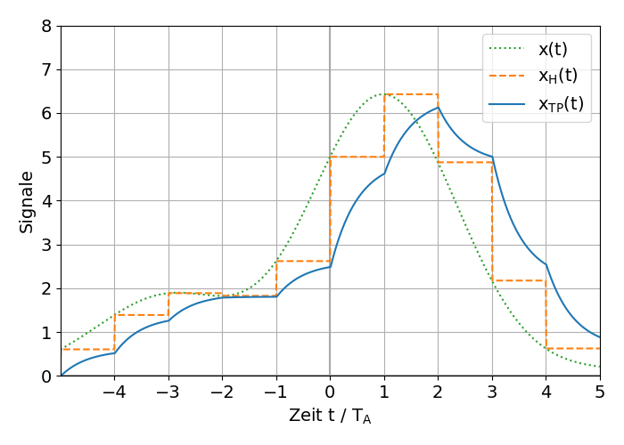
des abgetasteten Signals mit einem Tiefpass erster Ordnung
Das rekonstruierte Signal weist eine Verzögerung von
| (41) |
auf. Außerdem ist das Einschwingen des Tiefpasses nach jedem Quantisierungsschritt zu erkennen.
Diese Signalverzögerung ist insbesondere bei Regelungssystemen kritisch anzusehen. Auch in dieser Beziehung ist eine hohe Abtastrate, die wegen kleiner Abtastzeit und Wandlungszeit zu einer Verringerung der Totzeit führt, vorteilhaft. {application}Systemtheorie Online Im Online-Portal Systemtheorie Online verdeutlicht die Applikation Signalabtastung und Signalrekonstruktion grafisch, welche Effekte durch Anti-Aliasing-Filter, reale Abtastung und reale Rekonstruktion entstehen. \tcblowerh-ka.de/eit/digitale-signalverarbeitung/übungen/kapitel2
Chapter 2 Zeitdiskrete Signale
Die Systemtheorie beschreibt Systeme unter anderem durch den Zusammenhang von Signalen am Systemeingang und Systemausgang. In Teil A dieser Buchreihe sind Beispiele für unterschiedliche zeitkontinuierliche Signalformen dargestellt. Außerdem sind dort Eigenschaften und Rechenregeln für zeitkontinuierliche Signale beschrieben. In diesem Kapitel werden zeitdiskrete Signale behandelt.
Im ersten Abschnitt wird die Klassifizierung von zeitkontinuierlichen Signalen auf zeitdiskrete Signalfolgen übertragen.
Für die Charakterisierung von zeitdiskreten Systemen können Testfolgen als Eingangssignal eingesetzt werden, die eine besonders anschauliche Interpretation des Ausgangssignals ermöglichen. Bei zeitdiskreten Systemen ist dabei die Impulsfolge von großer Bedeutung, weil sie sich als reale Signalfolge darstellen lässt und eine anschauliche Interpretation der Systemantwort ermöglicht. Die Impulsfolge und ähnliche Folgen werden im zweiten Teil dieses Kapitels diskutiert und das Rechnen mit diesen Testfolgen an Beispielen erläutert.
Auch für zeitdiskrete LTI-Systeme gilt das Superpositionsprinzip. Kann ein Eingangssignal aus einer Linearkombination bekannter Signalfolgen beschrieben werden, ergibt sich das Ausgangssignal aus derselben Linearkombination der zugehörigen Ausgangssignale. Deshalb wird im dritten Teil dieses Kapitels das Rechnen mit Signalfolgen vorgestellt.
Die Reaktion eines zeitdiskreten Systems kann vielfach über Kosinus- und Exponentialfolgen beschrieben werden. Beide Folgen können zu komplexen Exponentialfolgen zusammengefasst werden. Komplexe Exponentialfolgen werden dazu verwendet, das Einschwingverhalten von Systemen effizient zu beschreiben. Der vierte Teil dieses Kapitels widmet sich daher harmonischen Schwingungsfolgen sowie reellen und komplexen Exponentialfolgen.
Die hier dargestellten Signaleigenschaften und Rechenmethoden sind denen im zeitkontinuierlichen Bereich sehr ähnlich. Sie sind hier trotzdem ausführlich aufgeführt, um einen Quereinstieg in das Thema der zeitdiskreten Systeme zu ermöglichen.
1 Klassen und Eigenschaften von Signalen
In Teil A dieser Buchreihe werden verschiedene Signalklassen dargestellt. Die dort vorgestellten Signalklassen und Eigenschaften beziehen sich auf zeitkontinuierliche Signale. Mit der Abtastung von Signalen werden Signale zeitquantisiert. Wie bereits in Kapitel 2 dargestellt wird, wird bei der Beschreibung der abgetasteten Signale die Amplituden-Quantisierung gerne vernachlässigt, sodass im vorliegenden Teil B dieser Buchreihe zeitdiskrete Systeme mit kontinuierlicher Amplitude behandelt werden. Diese Signale sind in Bild 1 oben rechts dargestellt.
Zeitdiskrete Signale sind nur zu bestimmten Zeitpunkten definiert. Es existieren keine Übergänge zwischen zwei aufeinanderfolgenden Werten. Im Fall der Abtastung eines zeitkontinuierlichen
Signals ergibt sich die Zahlenfolge des abgetasteten Signals zu
| (1) |
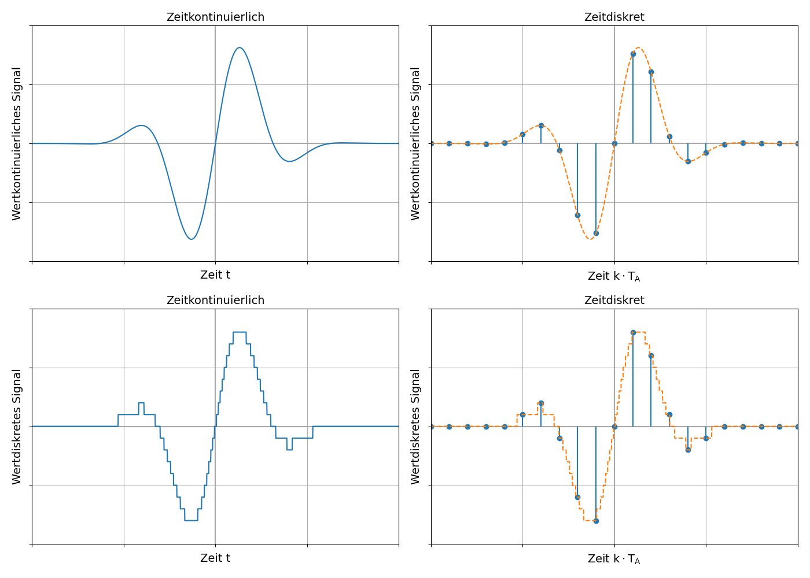
Da die Signale nicht mehr kontinuierlich sind, werden sie als Folgen oder Signalfolgen bezeichnet. Mit den eckigen Klammern wird der Unterschied zwischen zeitkontinuierlichen Signalen und Signalfolgen grafisch verdeutlich. Bild 2 zeigt ein Beispiel für eine Signalfolge.
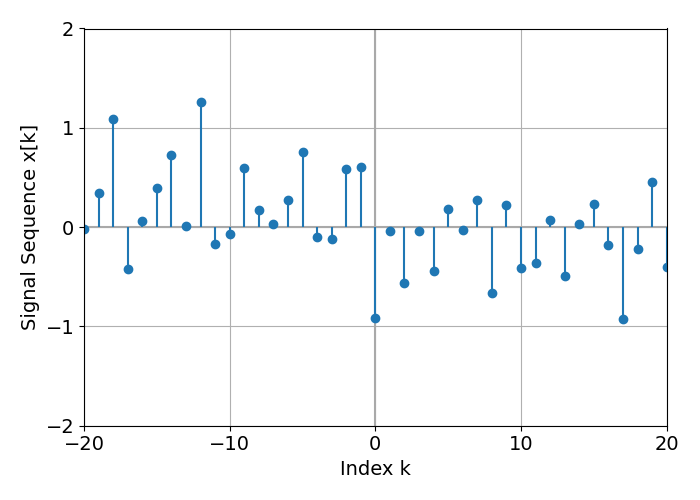
Da die Signalfolge nur zu definierten Zeitpunkten kTA definiert ist, können mathematische Operationen wie Integral und Differential nicht ausgeführt werden. Sie müssen durch entsprechende Operationen für Folgen ersetzt werden. Im ersten Abschnitt dieses Kapitels werden die wesentlichen bisher für zeitkontinuierliche Signale beschriebenen Signaleigenschaften und Rechenoperationen auf zeitdiskrete Signale übertragen.
1 Determinierte und zufällige Signalfolgen
Determinierte Signalfolgen lassen sich durch eine mathematische Vorschrift in ihrem zeitlichen Verlauf angeben. Sie können implizit oder explizit definiert sein. Bei einer explizit definierten Signalfolge lässt sich der zu einem Index k gehörende Wert direkt ablesen. Ein Beispiel dafür ist eine abklingende Sinusfolge (0 < r < 1).
| (2) |
Bei der impliziten Definition einer Signalfolge ist der Signalwert zwar eindeutig bestimmt, er muss aber zunächst durch weitere Umformungen bestimmt werden. Ein Beispiel für eine implizit definierte Signalfolge ist die Definition über eine Differenzengleichung
| (3) |
mit der Anfangsbedingung = und = . Zufällige Signalfolgen können nicht exakt angegeben werden, für sie sind lediglich statistische Eigenschaften bekannt. Sowohl Rauschen als auch Audio- oder Video-Signale sind zufällige Signale. Bild 3 zeigt jeweils ein Beispiel für ein determiniertes und ein zufälliges Signal. Zufällige Signale und Signalfolgen werden in Teil C dieser Buchreihe behandelt.
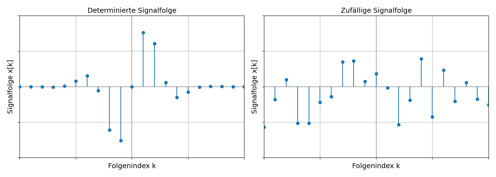
2 Zeitlich begrenzte und kausale Signalfolgen
Auch bei Signalfolgen wird oft mit einer zeitlichen Begrenzung gearbeitet, weil eine Signalfolge nur einen begrenzten Zeitraum lang beobachtet werden kann und weil zum Beispiel Impulsfolgen für die Charakterisierung von Systemen verwendet werden. Bild 4 zeigt zeitlich begrenzte Signalfolgen.
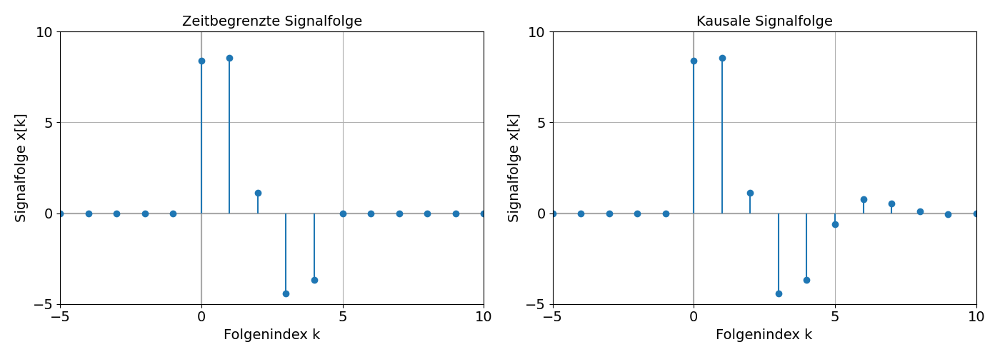
Beidseitig zeitbegrenzte Signalfolgen sind Signale, die nur für einen Bereich ≤ k < von null verschieden sind. Einige Signale sind nur einseitig begrenzt, zum Beispiel ist ein für stattfindender Sprung nur einseitig zeitbegrenzt. Da diese Signalfolgen rechts auf dem Zeitstrahl von null verschieden sind, werden sie als rechtsseitige Signalfolgen bezeichnet. Eine spezielle rechtsseitige Signalfolge ist die kausale Signalfolge, für die gilt:
| (4) |
Damit gelten die Definitionen zeitkontinuierlicher Signale sinngemäß auch für Signalfolgen.
3 Quadratisch summierbare Signalfolgen
Für die Existenz von unendlichen Reihen zum Beispiel bei der Fourier-Transformation von Folgen oder der sogenannten z-Transformation ist der Begriff der Leistungs- und Energiesignalfolge wesentlich. Wie bei zeitkontinuierlichen Signalen wird von der Vorstellung ausgegangen, dass die an einem Widerstand umgesetzte Leistung proportional zum Quadrat der anliegenden Spannung beziehungsweise proportional zum Quadrat des durchfließenden Stromes ist.
| (5) |
Für zeitkontinuierliche Signale wird damit die Energie eines Signals berechnet zu
| (6) |
und vereinfachend zu der normierten Beschreibung
| (7) |
übergegangen. Da für zeitdiskrete Signalfolgen keine Integration durchgeführt werden kann, wird für Signalfolgen die Summe
| (8) |
als Energie definiert. Mit dieser Definition können Signalfolgen wie zeitkontinuierliche Signale in Energiesignalfolgen und Leistungssignalfolgen eingestuft werden:
Energiesignalfolgen
Energiesignalfolgen haben eine von Null verschiedene und endliche Gesamtenergie in dem Intervall von - ∞ < k < ∞. Die mathematische Bedingung für Energiesignalfolgen lautet:
| (9) |
Diese Bedingung ist für jede zeitbegrenzte und amplitudenbegrenzte Folge erfüllt. Folgen, die gleichzeitig zeit- und amplitudenbegrenzt sind, sind damit immer Energiesignalfolgen.
Leistungssignalfolgen
Leistungssignalfolgen haben dagegen eine von Null verschiedene und endliche mittlere Leistung. Mathematisch ergibt sich folgende Definition für Leistungssignalfolgen:
| (10) |
Für Signalfolgen mit einer begrenzten Amplitude bedeutet das, dass sie nicht zeitbegrenzt sein müssen. Ihre Energie ist zwar unendlich, ihre Energie im Intervall von - K bis K ist aber begrenzt.
Signalfolgen, die weder Energie- noch Leistungssignalfolgen sind, spielen in der Systemtheorie praktisch keine Rolle, da technische Vorgänge grundsätzlich mit endlichen Größen verbunden sind.
4 Symmetrieeigenschaften von Signalfolgen
Die Bestimmung von Signaleigenschaften und Transformationen von Signalfolgen kann wie bei zeitkontinuierlichen Signalen durch Ausnutzen von Symmetrien vereinfacht werden. Deshalb werden Symmetrieeigenschaften diskutiert, mit denen Signalfolgen in gerade und ungerade Signalfolgen eingeteilt werden können. Gerade Signalfolgen sind für alle k symmetrisch zur Achse . Für eine gerade Signalfolge gilt deshalb die Bedingung:
| (11) |
Eine kosinusförmige Signalfolge mit einem Nullphasenwinkel ϕ = 0 ist ein Beispiel für eine gerade Signalfolge, denn es gilt:
| (12) |
Ungerade Signalfolgen sind für alle k punktsymmetrisch zu dem Koordinatenursprung (0|0). Dies kann mathematisch ausgedrückt werden als
| (13) |
Eine sinusförmige Signalfolge ist ein Beispiel für eine ungerade Signalfolge, denn es gilt:
| (14) |
Bild 5 zeigt Kosinus- und Sinusfolgen als Beispiele für gerade und ungerade Signalfolgen.
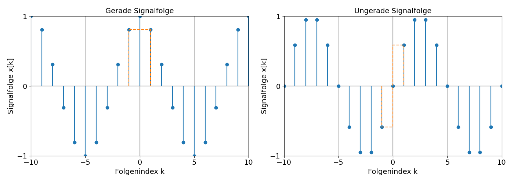
Es existieren Signalfolgen, die weder gerade, noch ungerade sind, sie weisen keine Symmetrie auf. Jede beliebige Signalfolge lässt sich aber in einen geraden und einen ungeraden Anteil aufspalten.
| (15) |
wobei sich die beiden Anteile ergeben aus
| (16) |
und
| (17) |
Bild 6 verdeutlicht die Zerlegung eines Signals in einen geraden und einen ungeraden Anteil an einem Beispiel.
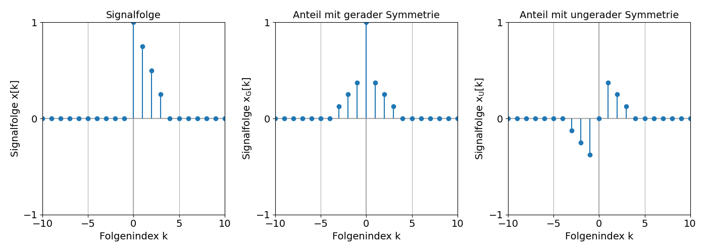
5 Zusammenfassung Eigenschaften von Signalfolgen
Zur besseren Übersicht sind in Tabelle LABEL:tab:3.1 die diskutierten Eigenschaften für Signalfolgen dargestellt.
[label=tab:3.1]Tabellarische Übersicht über Signaleigenschaften für Signalfolgen
| Signaleigenschaft | Mathematische Beschreibung | |||
|---|---|---|---|---|
| Explizit definierte Signalfolge | Folgenwert kann direkt abgelesen werden,
zum Beispiel
|
|||
| Implizit definierte Signalfolge | Folgenwert muss berechnet werden,
zum Beispiel
|
|||
| Begrenzte Signalfolge | ||||
| Kausale Signalfolge | ||||
| Energiesignalfolge | ||||
| Leistungssignalfolge | ||||
| Gerade Signalfolge | .. | |||
| Ungerade Signalfolge | ||||
| Gerader Anteil | ||||
| Ungerader Anteil |
2 Sprung- und Impulsfolgen
Auch bei der Beschreibung und Interpretation von zeitdiskreten Systemen werden Impuls- und Sprungantworten verwendet. Deshalb werden in diesem Abschnitt Sprung- und Impulsfolgen vorgestellt, weitere Signalfolgen daraus abgeleitet und das Rechnen mit Impulsfolgen vertieft.
1 Impulsfolge
Die Impulsfolge ist im Gegensatz zur Impulsfunktion nicht als Grenzwert definiert, sondern durch die Bedingung
| (18) |
Im Vergleich zur Impulsfunktion ist die Impulsfolge nicht unendlich hoch, sondern hat eine Höhe, die beim kontinuierlichen System dem Gewicht der Impulsfunktion entspricht. Diese Definition erleichtert das Rechnen mit der Impulsfolge im Vergleich zur Impulsfunktion. Bild 7 stellt die Impulsfolge grafisch dar.
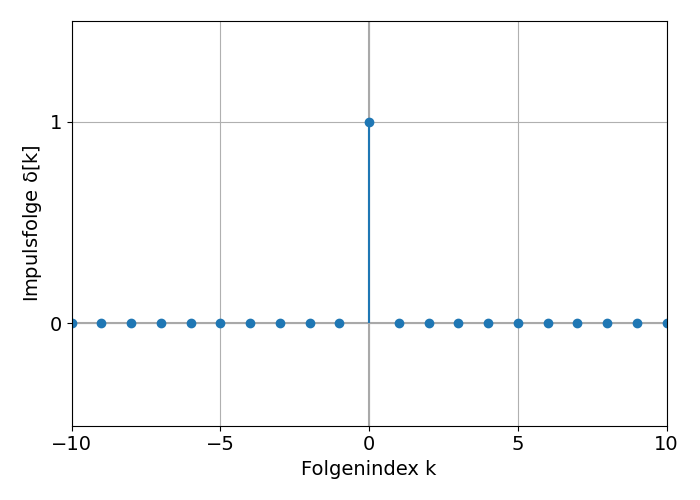
Die Impulsfolge wird für die Charakterisierung von Systemen verwendet. Die Impulsfolge ist sowohl zeitlich, als auch von der Amplitude begrenzt. Sie ist eine Energiesignalfolge. Da die Impulsfolge für k < 0 null ist, ist sie eine kausale Folge. Da praktisch alle Werte der Impulsfolge null sind bis auf den Wert, an dem das Argument der Impulsfolge zu null wird, ergibt sich die Summe über die Impulsfolge zu
| (19) |
Mit der Impulsfolge werden zwei wichtige Methoden realisiert, die für die Darstellung abgetasteter Signale notwendig sind.
Ausblendeigenschaft der Impulsfolge
Mit Hilfe der Impulsfolge können einzelne Werte einer Folge selektiert werden.
| (20) |
Diese Bedingung ergibt sich daraus, dass die Impulsfolge für alle Werte von k zu null wird, außer für den Wert . Für nimmt die Impulsfolge den Wert 1 an, die Folge hat für den Wert x[].
Periodische Impulsfolge
Insbesondere bei der Darstellung periodischer Signale wird die periodische Impulsfolge eingesetzt.
| (21) |
Jede Impulsfolge ist an allen Stellen null, bis auf die Stelle k = nK0. Durch die Summe entsteht eine in K periodische Impulsfolge, die in Bild 8 dargestellt ist. Sie wird auch als Impulskamm bezeichnet.
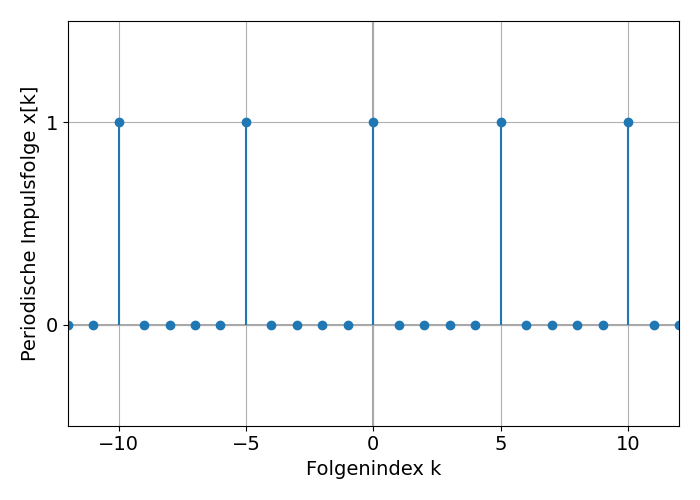
2 Sprungfolge
Die Sprungfolge ist identisch zur Sprungfunktion im zeitkontinuierlichen Bereich definiert als
| (22) |
Wie im zeitkontinuierlichen Bereich ist die Sprungfolge eine wichtige Testfolge. Bild 9 stellt die Sprungfolge dar.
Die Sprungfolge wird zum Beispiel dafür verwendet, ideale Einschaltvorgänge zu beschreiben. Die Sprungfolge ist zeitlich nicht begrenzt und ist damit keine Energiesignalfolge. Wegen ihrer begrenzten Amplitude ist die Bedingung für eine Leistungssignalfolge erfüllt. Da die Sprungfolge für k < 0 null ist, ist sie eine kausale Folge.
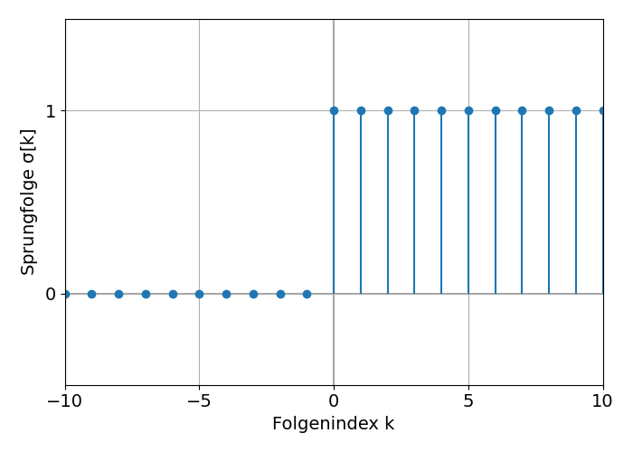
Sprung- und Impulsfolge können in Abhängigkeit voneinander dargestellt werden. So kann die Sprungfolge als Summe einzelner verschobener Impulse dargestellt werden.
| (23) |
Andererseits ist die Impulsfolge die Differenz zweier Sprungfolgen, die um einen Index gegeneinander verschoben sind.
| (24) |
Aus dem Vergleich mit der Abhängigkeit der zeitkontinuierlichen Sprung- und Impulsfunktion ergibt sich ein weiterer interessanter Aspekt: Die Sprungfunktion kann als Integral der Impulsfunktion dargestellt werden. Im zeitdiskreten Bereich wird das Integral durch die Summe ersetzt.
| (25) |
In zeitkontinuierlichen Bereich ist die Impulsfunktion die Ableitung der Sprungfunktion. Im zeitdiskreten Bereich wird die Ableitung durch den Differenzenquotienten ersetzt, sodass gilt:
| (26) |
Im zeitdiskreten Bereich gehen also das Integral in eine Summe und die Ableitung in einen Differenzenquotienten über.
3 Integral abgetasteter Signale
Ideal abgetastete Signale können als Summe gewichteter Impulse dargestellt werden.
| (27) |
Insbesondere bei der Berechnung des Spektrums abgetasteter Signale werden Integrale berechnet, in denen ideal abgetasteten Signale vorkommen. Als Vorbereitung dazu wird das Integral abgetasteter Signale berechnet.
| (28) |
Um von dem zeitkontinuierlichen Integralausdruck zu einer Summe zu kommen, wird die Zeitvariable normiert.
| (29) |
Aus der Substitutionsregel folgt
| (30) |
Für die Zeitpunkte t = kTA ergibt sich
| (31) |
Das Integral bewirkt, dass nur Werte aufsummiert werden, die kleiner oder gleich k sind. Damit kann der Ausdruck umgeformt werden zu
| (32) |
Der Vergleich zeigt, dass bei der Berechnung von Integralen ideal abgetasteter Signale neben der Summe der Abtastwerte die Abtastzeit berücksichtigt werden muss.
Tabelle 1 vergleicht die Definition und die Eigenschaften der Impulsfolge und der Impulsfunktion tabellarisch miteinander.
| Eigenschaft | Zeitkontinuierlicher Bereich | Zeitdiskreter Bereich |
|---|---|---|
| Definition des Impulses | ||
| Integration | ||
| Ausblendeigenschaft | ||
| Impuls als Ableitung des Sprungs | ||
| Sprung als Integral des Impulses | ||
| Integral eines abgetasteten Signals | ||
4 Rechteckfolge
Die Rechteckfolge ist abschnittsweise definiert als
| (33) |
Die Rechteckfolge ist eine Folge mit endlicher Amplitude und endlicher Dauer. Die Bedingung für eine Energiesignalfolge ist deshalb erfüllt. Die Rechteckfolge nach Gleichung (33) ist keine kausale Folge, da sie für k < 0 nicht null ist. Durch eine Verschiebung um K nach rechts wird die Folge kausal. Beide Folgen sind in Bild 10 dargestellt.
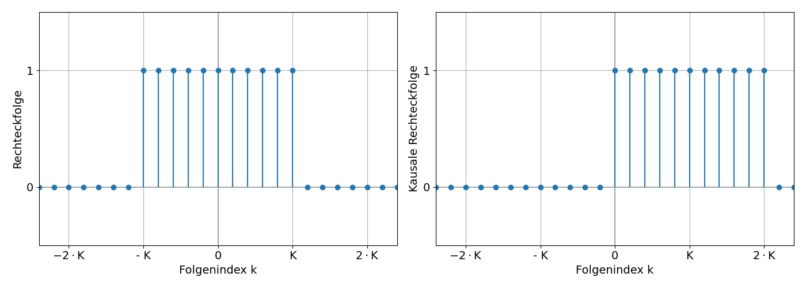
Die Rechteckfolge kann neben der abschnittsweisen Definition auch als Summe zweier Sprungfolgen dargestellt werden, die um - K beziehungsweise K + 1 verschoben sind.
| (34) |
5 Signum-Folge
Die Signum-Folge sgn[k] ist abschnittsweise definiert als
| (35) |
Auch die Signum-Folge kann mit Hilfe der Sprungfolge dargestellt werden.
| (36) |
Bild 11 stellt die Signum-Folge grafisch dar. Sie dauert unendlich lange an und ist deshalb keine Energiesignalfolge. Wegen ihrer konstanten Amplitude ist die Bedingung für eine Leistungssignalfolge erfüllt. Die Signum-Folge ist nicht kausal und kann durch eine zeitliche Verschiebung auch nicht kausal werden.
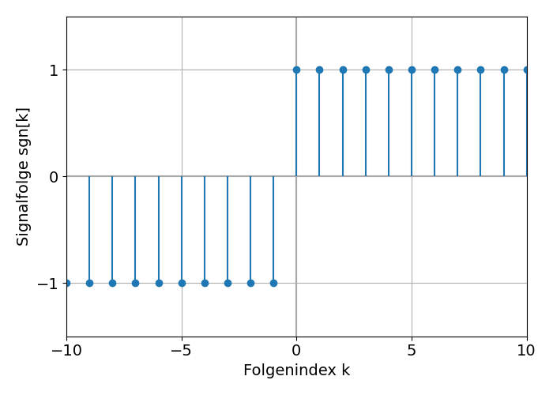
6 Rampenfolge
Die Rampenfolge ist wie im zeitkontinuierlichen Bereich definiert als
| (37) |
Bild 12 stellt die Rampenfolge grafisch dar.
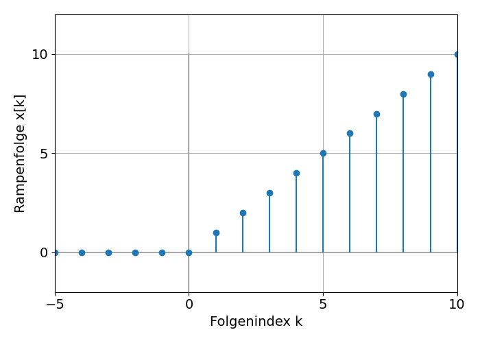
Die Rampenfolge kann als Summation über die Sprungfolge beschrieben werden. Dabei muss jedoch beachtet werden, dass die Rampenfolge an der Stelle null ist. Deshalb muss die Rampenfolge dargestellt werden als
| (38) |
Auswerten der Summengleichung führt zu der Darstellung
| (39) |
Die Rampenfolge hat weder eine begrenzte Amplitude noch eine begrenzte Zeitdauer, sie ist weder Energie- noch Leistungssignalfolge. Eine ideale Rampenfolge kann in realen Systemen deshalb nur für ein begrenztes Intervall realisiert werden. Da die Rampenfolge für k < 0 null ist, ist sie eine kausale Signalfolge.
7 Dreieckfolge
Die Dreieckfolge ist in Bild 13 dargestellt und definiert als
| (40) |
Die Dreieckfolge kann auf unterschiedliche Art aus den bereits dargestellten Folgen gewonnen werden, zum Beispiel durch Überlagerung von drei Rampenfolgen.
| (41) |
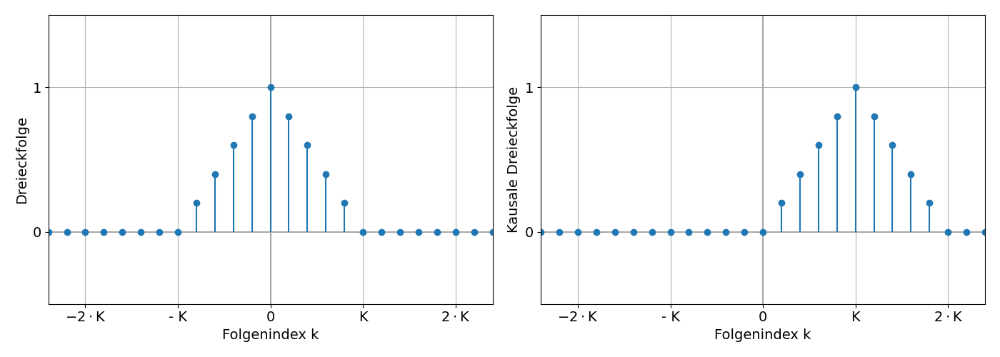
Die Dreieckfolge ist eine Folge mit endlicher Amplitude und endlicher Dauer. Die Bedingung für eine Energie- und Leistungssignalfolge ist erfüllt. Wie die Rechteckfolge beginnt die Rampenfolge bereits für k = - K. Sie ist deshalb nicht kausal, kann aber durch Verschiebung um K nach rechts in eine kausale Folge überführt werden.
8 Zusammenfassung Testfolgen
In Tabelle LABEL:tab:3.3 sind die wesentlichen Testfolgen und ihre Darstellungsmöglichkeiten mit der Sprungfolge zusammengefasst.
[label=tab:3.3]Tabellarische Zusammenfassung von Testfolgen und ihrer Beschreibung mit Sprungfolgen
| Testfolgen | Mathematische Beschreibung durch Sprungfolgen |
|---|---|
| Impulsfolge | |
| Sprungfolge | |
| Rechteckfolge der Länge 2K + 1 | |
| Signum-Folge | |
| Rampenfolge |
3 Rechnen mit Folgen
Die Berechnung der Ausgangsfolge eines linearen Systems kann auf bekannte Ausgangsfolgen zurückgeführt werden, wenn die Eingangsfolge auf bekannten Folgen basiert. Dazu ist es notwendig, die Folgen mit Hilfe der in diesem Abschnitt dargestellten Rechenmethoden umrechnen zu können.
1 Operationen mit Folgen
Für die Umrechnung von Folgen sind mathematische Operationen notwendig. Die wichtigsten elementaren Operationen sind im Folgenden zusammengefasst und an dem Beispiel der Folge
| (42) |
grafisch dargestellt.
Skalierung der Amplitude
Die Folge ax[k] ist gegenüber der Folge verstärkt (a > 1) beziehungsweise gedämpft (0 < a < 1). Bild 14 zeigt die Folge und die um einen Faktor 0.5 gedämpfte Signalfolge 0.5x[k].
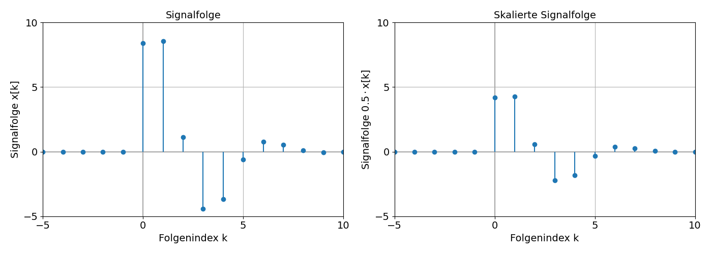
Zeitliche Verschiebung
Die Folge x[k - ] ist gegenüber der Folge nach rechts ( > 0) beziehungsweise nach links
( < 0) verschoben. Bild 15 zeigt die Folge und die um verschobene Folge .
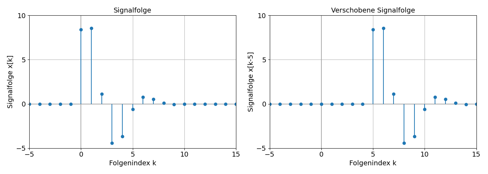
Das Vorgehen wird am einfachsten deutlich, wenn über den Folgenindex k argumentiert wird. Die Folge weist zum Zeitpunkt den maximalen Wert auf. Da der Index k in der Folge
um 5 verringert wird, weist die Folge erst an der Stelle den maximalen Wert auf.
Spiegelung
Die Spiegelung einer Folge an der Stelle kann mathematisch durch die Folge dargestellt werden. Bild 16 zeigt die Folge und die gespiegelte Folge .
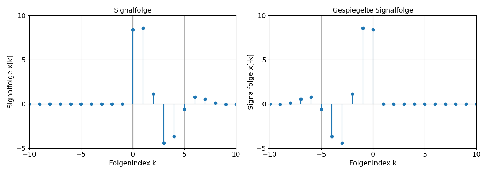
Auch hier kann über den Folgenindex argumentiert werden. Die Folge weist an der Stelle den Folgenwert = 7.6 auf. Die Folge besitzt denselben Folgenwert an der Stelle k = - 1.
Zeitliche Skalierung
Bei Signalfolgen kann eine Stauchung oder Dehnung des Signals nicht beliebig vorgenommen werden, da die dazu notwenigen Abtastwerte nicht vorliegen. Ohne zusätzliche Interpolationsschritte ist es bei der zeitlichen Skalierung nur möglich, ganzzahlige Faktoren a > 1 einzusetzen. Diese Skalierung führt zu einer Stauchung der Signalfolge. Bild 17 zeigt die Folge und die zeitlich skalierte Folge .
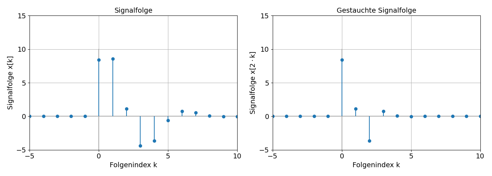
Wieder wird der Begriff der Stauchung am einfachsten deutlich, wenn über das Argument der Folge argumentiert wird.
2 Überlagerung grundlegender Folgen
Die vorgestellten Folgen und Rechenregeln ermöglichen die Synthese weiterer Testfolgen durch eine Überlagerung grundlegender Folgen. An einem Beispiel wird das Rechnen mit grundlegenden Folgen verdeutlicht. Die Signalfolge aus Bild 18 soll als Kombination grundlegender Folgen dargestellt werden.
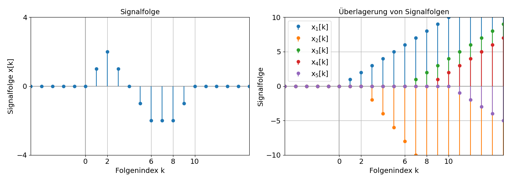
Bei der Beschreibung der Folge sind insbesondere die Stellen von Bedeutung, an denen sich die Steigung der Folge ändert. Aus Bild 18 kann abgelesen werden, dass das die Stellen 0, 2, 6, 8 und 10 sind.
An der Stelle beginnt die Folge mit der Steigung 1. Die Folge [k], die dieses Verhalten beschreibt, lautet:
| (43) |
An der Stelle ändert sich die Steigung der Folge um – 2. Der Faktor 2 ergibt sich dabei aus der Kompensation der vor dieser Stelle vorhandenen Steigung 1 und der nach der Stelle gewünschten Steigung – 1. Zu der Folge [k] muss die Folge [k] addiert werden, die aber erst an der Stelle einen Einfluss haben darf. Um die Folge für k < 2 auszublenden, wird die Sprungfolge verwendet.
| (44) |
Das Vorgehen wiederholt sich mit unterschiedlichen Steigungsänderungen an den Stellen 6, 8 und 10, und es ergeben sich die Folgen
| (45) | ||||
| (46) | ||||
| (47) |
Die Folge kann damit als Überlagerung der Teilfolgen [k] bis [k] dargestellt werden.
| (48) |
Durch den Einsatz der Sprungfolgen ist gewährleistet, dass die jeweilige Folge erst ab einem definierten Zeitpunkt berücksichtigt wird. Sie ermöglicht damit die sequenzielle Synthese der Folge .
3 Zusammenfassung Rechenoperationen mit Folgen
In Tabelle LABEL:tab:3.4 sind die besprochenen Rechenregeln zusammengefasst. Sie ermöglichen die Zerlegung von Signalfolgen in bekannte Signalanteile. Das Rechnen mit Folgen ist deshalb Grundlage für eine erfolgreiche Anwendung von Korrespondenztafeln der z- und Fourier-Transformation, die in Kapitel 03.5 und 1 beschrieben wird.
[label=tab:3.4]Tabellarische Zusammenfassung der Rechenoperationen für Folgen
| Operation | Mathematische Beschreibung |
|---|---|
| Skalierung der Amplitude | |
| Verschiebung um nach rechts | |
| Stauchung (a > 1 und ganzzahlig) | |
| Spiegelung | |
| Aktivieren an der Stelle |
4 Folgen zur Beschreibung von zeitdiskreten Einschwingvorgängen
Ausgangssignale zeitdiskreter Systeme lassen sich vielfach mit Hilfe von harmonischen Folgen und Exponentialfolgen beschreiben. Sie werden im Folgenden vorgestellt.
1 Periodische und harmonische Folgen
Periodische Folgen sind dadurch gekennzeichnet, dass sich der Folgenwert periodisch nach einem Intervall der Länge K wiederholt. Bild 19 zeigt eine einfache periodische Signalfolge:
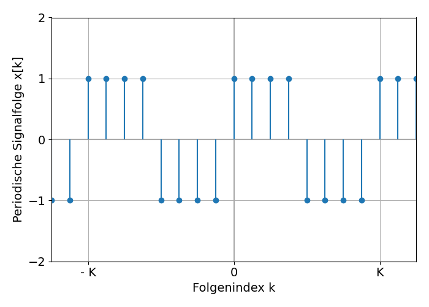
Für periodische Folgen und ganzzahlige Werte n gilt:
| (49) |
Neben den Folgen, die das Ein-, Aus- oder Umschalten modellieren, sind in der Systemtheorie periodische, harmonische Signalfolgen von großer Bedeutung. Als Beispiel soll hier eine Kosinusfolge diskutiert werden. Sie ist definiert als
| (50) |
wobei A die Amplitude der Schwingung, ϕ der Nullphasenwinkel und die normierte Kreisfrequenz ist. Die Normierung wird in Kapitel 2 ausführlich diskutiert. Die normierte Kreisfrequenz ergibt sich aus dem Ansatz, dass die Folgenwerte an den Zeitpunkten kTA mit der Funktion übereinstimmen sollen.
| (51) |
Ein Vergleich der beiden Kosinusfunktionen führt zu einer Normierung der Kreisfrequenz mit der Abtastzeit .
| (52) |
Da der Folgenindex k im Gegensatz zu Zeit t dimensionslos ist, besitzt die normierte Kreisfrequenz die Einheit rad. Bild 20 verdeutlicht diese Definitionen an einem Beispiel:
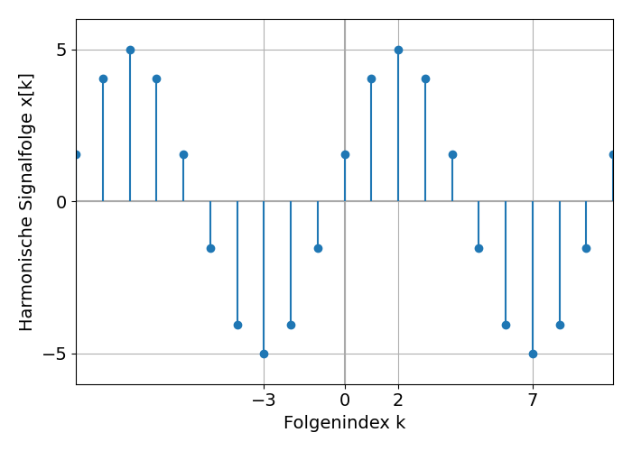
einem Nullphasenwinkel von - 2/5π
In dem Beispiel beträgt die Amplitude 5. Die Kosinusfolge hat zwei aufeinanderfolgende Minima bei k = - 3 und , woraus sich eine Periode von und eine normierte Kreisfrequenz
| (53) |
ergibt. Die Nullphase ϕ ist nicht unmittelbar aus dem Diagramm ablesbar. Sie wird über die Verschiebung berechnet:
| (54) |
Für das Beispiel ergibt sich damit der Nullphasenwinkel ϕ = - 2/5π.
Zeigerdarstellung von harmonischen Signalfolgen
In der Elektrotechnik hat sich für die Berechnung von harmonisch angeregten Schaltungen die Zeigerdarstellung durchgesetzt. Sie beruht auf der Eulerschen Formel.
| (55) |
Damit kann eine Kosinusfolge der Form
| (56) |
als Realteil einer komplexen Folge
| (57) |
aufgefasst werden. Diese mathematische Darstellung kann durch einen Zeiger der Länge A verdeutlicht werden, der in der komplexen Ebene um den Koordinatenursprung rotiert. Die Zeit für eine volle Umdrehung ist die Periode K. Die eigentlich interessierende Größe ist die Projektion des Zeigers auf die reelle Achse, sie stellt die Folge dar. Zum Zeitpunkt gilt
| (58) |
Zur Verdeutlichung zeigt Bild 1 die Zeigerdarstellung in der komplexen Ebene.
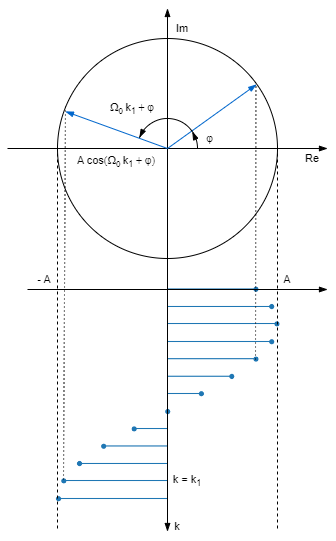
Bild .: Darstellung einer harmonischen Schwingungsfolge als Zeigerdiagramm
Darstellung von Signalfolgen als Überlagerung komplexer Schwingungsfolgen
Durch Umformung der Eulerschen Formel ergibt sich für Kosinusfolgen die Darstellung
| (59) |
Damit lässt sich die Kosinusfolge darstellen als
| (60) |
Der erste Summand beschreibt einen komplexen Zeiger, der sich in der komplexen Ebene mit einer normierten Kreisfrequenz in mathematisch positiver Richtung dreht. Der zweite Summand beschreibt einen zweiten komplexen Zeiger, der zu jedem Zeitpunkt konjugiert komplex zum Ersten ist. Er dreht sich mit derselben Winkelgeschwindigkeit wie der erste Zeiger, aber in entgegengesetzter Richtung.
Die komplexe Exponentialfolge stellt reelle Folgen mit Hilfe komplexer Zahlen dar. Es ist eine effiziente Beschreibungsform, die gleichermaßen Amplitude und Phase beschreibt. Physikalisch gesehen existieren komplexe Signale nicht. {application}Komplexe Exponentialfolge Im Online-Portal Systemtheorie Online verdeutlicht die Applikation Komplexe Exponentialfolge die Darstellung von harmonischen Signalen mit Zeigern, die in der komplexen Ebene rotieren. \tcblowerh-ka.de/eit/digitale-signalverarbeitung/übungen/kapitel2
2 Exponentialfolge
Bei der Diskussion von zeitdiskreten Systemen wird sich zeigen, dass die Exponentialfolge
| (61) |
die Einschwingvorgänge vieler linearer zeitdiskreter Systeme beschreibt. Bild 21 stellt das Verhalten der Exponentialfolge für unterschiedliche reelle Parameter und k > 0 dar:
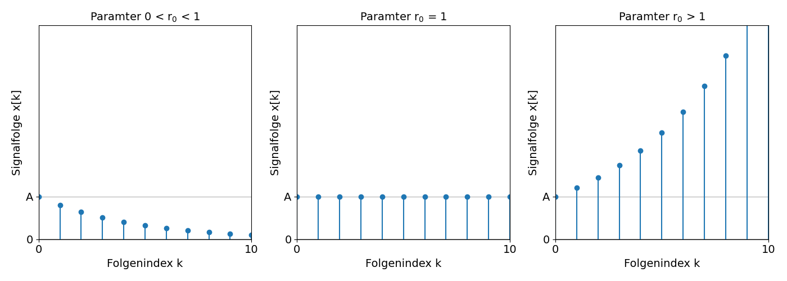
Die Exponentialfolge beginnt für alle Parameter an der Stelle = A. Für reelle Parameter
0 < < 1 nähert sich die Exponentialfolge der Asymptote . Für bleibt die Exponentialfolge konstant bei . Für > 1 steigt die Exponentialfolge mit wachsendem Folgenindex k.
Mit Exponentialfolgen der Form können harmonische Schwingungen beschrieben werden. Durch die Kombination beider Exponentialfolgen können Kosinusfolgen mit exponentiell abklingender Amplitude als Summe zweier Exponentialfolgen dargestellt werden.
| (62) | ||||
| (63) |
Die Kosinusfolge mit exponentiell abklingender Amplitude ist in Bild 22 dargestellt. Dabei sind die Einhüllenden der Kosinusfolge als gestrichelte Linie eingezeichnet.
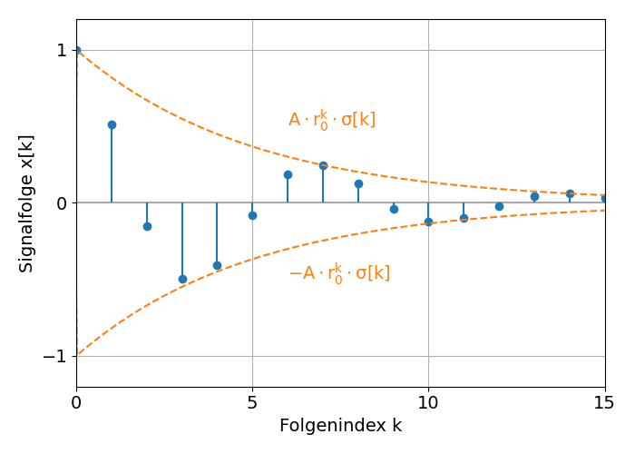
Je nach Lage des Wertes = in der komplexen Ebene ergeben sich ein charakteristisches Verhalten der komplexen Exponentialfolge. Bei der Diskussion von Systemeigenschaften linearer Systeme wird die Interpretation reeller und komplexer Exponentialfolgen weiter vertieft. {application}Komplexe Exponentialfolge Im Online-Portal Systemtheorie Online verdeutlicht die Applikation Komplexe Exponentialfolge den Zusammenhang zwischen der Lage des Wertes = in der komplexen Ebene und dem Verhalten der Schwingung. \tcblowerh-ka.de/eit/digitale-signalverarbeitung/übungen/kapitel2
3 Zusammenfassung zur Beschreibung von zeitdiskreten Einschwingvorgängen
Die Systemreaktion linearer zeitdiskreter Systeme ist in vielen Anwendungen eine abklingende harmonische Schwingungsfolge. Zur mathematischen Beschreibung werden in Tabelle 2 Folgen zusammengestellt.
| Folge | Mathematische Beschreibung |
|---|---|
| Periodische Folge der Periodendauer K | |
| Harmonische Folge | |
| Eulersche Formel | |
| Darstellung der Kosinusfolge über die Eulersche Formel | |
| Darstellung der Sinusfolge über die Eulersche Formel | |
| Exponentialfolge mit komplexem Argument | |
| Beschreibung einer gedämpften Schwingungsfolge über eine Exponentialfolge mit komplexem Argument | pandocbounded is unsupported. Please remove this! |
Chapter 3 Zeitdiskrete Systeme im Zeitbereich
Im zeitkontinuierlichen Bereich werden dynamische Systeme mit Differentialgleichungen beschrieben. Für zeitdiskrete Systeme geht die Differentiation in einen Differenzenquotienten über. Daraus resultiert die Beschreibung zeitdiskreter Systeme mit Differenzengleichungen.
Zu Beginn des Kapitels werden einige typische zeitdiskrete Systeme beschrieben und die Systemantworten mit numerischen Algorithmen bestimmt. Als Beispiele werden ein rekursives Filter, ein System mit einer gleitenden Mittelwertrechnung und eine Switched-Capacitor-Schaltung diskutiert. Für die Systeme werden die jeweiligen Differenzengleichungen aufgestellt, diskutiert und numerisch gelöst.
Lineare, zeitinvariante Systeme haben im zeitkontinuierlichen Bereich eine besonders anschauliche Lösung und Interpretation ermöglicht. Der Begriff des linearen, zeitinvarianten Systems existiert auch für zeitdiskrete Systeme. Im zweiten Abschnitt dieses Kapitels werden grundlegende Systemeigenschaften erläutert und Verfahren zum Nachweis der unterschiedlichen Eigenschaften vorgestellt.
Numerische Lösungen von Differenzengleichungen eignen sich nicht für eine analytische Bestimmung von Systemeigenschaften. Deshalb ist es erforderlich, analytische Lösungsmethoden zu diskutieren. Im dritten Abschnitt wird die analytische Berechnung der Systemantwort im Zeitbereich behandelt. Sie kann über eine sogenannte 4-Schritt-Methode bestimmt werden.
Für lineare, zeitinvariante Systeme gilt das Superpositionsprinzip. Danach ergibt sich die Systemantwort bei Anregung mit einer Überlagerung von Eingangssignalen aus derselben Überlagerung der zugehörigen Ausgangssignale. Das Superpositionsprinzip führt zur zeitdiskreten Faltung. Superposition und Faltung entsprechen weitgehend den Methoden für zeitkontinuierliche Systeme.
Verfahren und Eigenschaften zeitdiskreter Systeme werden an Beispielen erläutert. An einem Projekt wird aufgezeigt, wie zeitdiskrete Signalverarbeitung mit Switched-Capacitor-Schaltungen realisiert werden kann und welche Vorteile sich aus der Realisierung ergeben.
1 Beschreibung zeitdiskreter Systeme mit Differenzengleichungen
Zeitdiskrete Systeme ergeben sich aus unterschiedlichen Aufgabenstellungen. Zum einen existieren Aufgabenstellungen, die von ihrer Natur aus zeitdiskret sind. Beispiele dafür kommen aus unterschiedlichen Anwendungsbereichen, zum Beispiel werden Algorithmen zur digitalen Signalverarbeitung zeitdiskret beschrieben. Aber auch Schaltungen, die in Switched-Capacitor-Technik aufgebaut werden, können zeitdiskret beschrieben werden.
Zum anderen wird vielfach versucht, analoge Systeme digital nachzubilden, um ihr Verhalten zu emulieren. Lineare Differentialgleichungen N-ter Ordnung mit konstanten Koeffizienten beschreiben zeitkontinuierliche LTI-Systeme. Bei abgetasteten oder zeitdiskreten Systemen kann keine Ableitung bestimmt werden. Aus diesem Grund muss eine andere Beschreibungsform für Systeme gefunden werden. In diesem Abschnitt werden unterschiedliche Methoden vorgestellt, LTI-Systeme zeitdiskret zu beschreiben.
1 Beispiele für zeitdiskrete Systeme
Algorithmen zur digitalen Signalverarbeitung arbeiten typischerweise in einem festen Takt mit einer festen Abtastzeit. Der aktuelle Wert des Ausgangssignals wird als Funktion des aktuellen Eingangssignals und vergangenen Werten von Ein- und Ausgangssignal gebildet. Das Grundprinzip wird an Beispielen illustriert.
Example 1.1.
Rückgekoppeltes System
Bei vielen Geräten wird versucht, Filter mit wenig Rechenzeit und wenig Speicherelementen zu implementieren. Eines der einfachsten Filter ergibt sich aus der Gleichung
| (1) |
Dabei gilt für den Gedächtnisfaktor GF die Bedingung 0 < GF < 1. Das aktuelle Ausgangssignal ergibt sich aus dem aktuellen Eingangssignal und dem um einen Takt zurückliegenden Ausgangssignal. Für kleine Werte von GF folgt das Ausgangssignal dem Eingangssignal, für große Werte ändert sich das Ausgangsignal nur sehr langsam. Bild 4.1 zeigt diesen Zusammenhang für einen Sprung am Eingang.
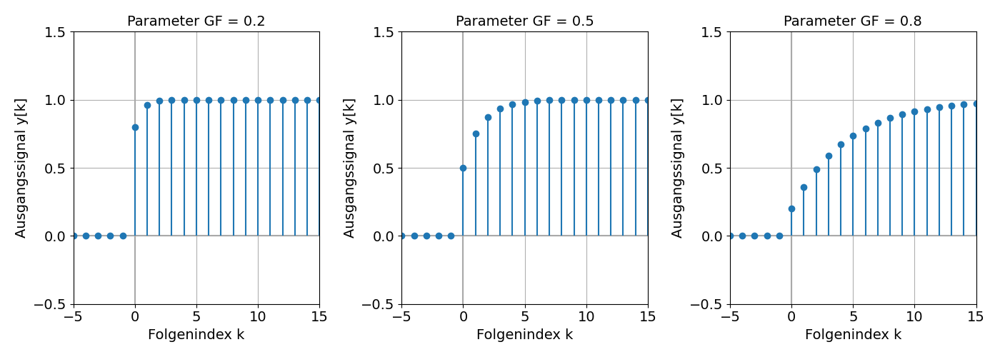
Die Systemantworten erinnern an das Ausgangssignal eines Tiefpasses. Es wird sich zeigen, dass diese rekursive Form die digitale Approximation eines Tiefpasses erster Ordnung ist.
Example 1.2.
Gleitender Mittelwert
Zur Verringerung von Störeffekten kann der Mittelwert einiger aufeinanderfolgender Folgenwerte gebildet werden. Dieses Vorgehen wird als gleitende Mittelwertbildung bezeichnet. Zum Beispiel wird über die Gleichung
| (2) |
ein gleitendes Mittelwertfilter mit 5 Abtastwerten beschrieben. Die Ausgangsfolge ist in diesem Fall nur von aktuellen und vergangenen Werten des Eingangssignals abhängig. Durch die Mittelwertbildung weist die Ausgangsfolge einerseits eine geringere Variation auf als die Eingangsfolge . Durch die Bildung des Mittelwertes von fünf Abtastwerten erreicht das Signal andererseits später seinen Endwert. Beide Effekte sind in Bild 2 verdeutlicht.
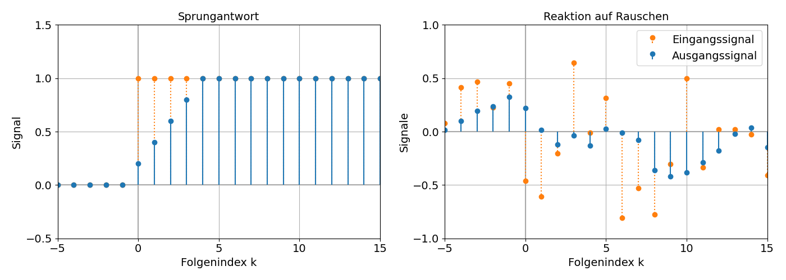
Zeitdiskrete Systeme Im Online-Portal Systemtheorie Online verdeutlicht die Applikation Zeitdiskrete Systeme die Wirkung eines rekursiven Tiefpass-Filters und eines Mittelwert-Filters auf ein verrauschtes Signal. \tcblowerh-ka.de/eit/digitale-signalverarbeitung/übungen/kapitel2 Die beiden vorangegangenen Beispiele sind Algorithmen, die zum Beispiel als Programm in einem Controller implementiert werden können. Ein weiteres Anwendungsfeld für zeitdiskrete Systeme sind Switched-Capacitor-Schaltungen.
Example 1.3.
Switched-Capacitor-Schaltung
Bei der Integration von CMOS-Schaltungen ist es aufwendig und teuer, präzise und temperaturstabile Widerstände herzustellen. Die Herstellung von stabilen Kondensatoren ist dagegen vergleichsweise günstig. Deshalb werden in der CMOS-Technik Switched-Capacitor-Schaltungen verwendet. Als Beispiel zeigt Bild 3 einen invertierenden Integrierer in Switched-Capacitor-Technik.
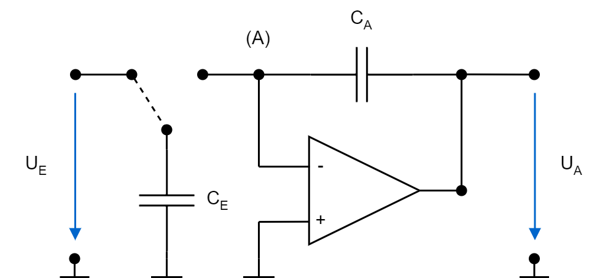
Zu Beginn jeden Taktes wird der Kondensator aufgeladen. Nach Umschalten des Schalters wird der Kondensator mit dem Knoten A des Operationsverstärkers verbunden, der auf Ground-Potential liegt. Der Kondensator wird dabei entladen. Da der Operationsverstärker einen sehr großen Innenwiderstand besitzt, fließt die Ladung nicht über den Operationsverstärker ab, sondern zum Kondensator . Bei jedem Takt wird also dem Integrierer eine Ladung der Größe [k] zugeführt.
| (3) |
Die aktuelle Ladung im Kondensator beträgt damit
| (4) |
Die aktuelle Ladung [k] ergibt sich aus der Ladung im Takt zuvor und der dazukommenden Ladung. Die Ladung wird damit aufsummiert. Das aktuelle Ausgangssignal ergibt sich zu
| (5) |
Wegen des Minuszeichens ist das System ein invertierender Summierer.
Alle hier behandelten Beispiele führen auf eine Differenzengleichung, die in allgemeiner Form geschrieben werden kann als
| (6) |
Die Lösung dieser Differenzengleichung ist Gegenstand des Abschnitts 06.
2 Zeitdiskrete Approximation zeitkontinuierlicher Systeme
Das Verhalten der Ein- und Ausgangsgrößen eines realisierbaren, zeitkontinuierlichen LTI-Systems wird durch eine lineare Differentialgleichung N-ter Ordnung mit konstanten Koeffizienten beschrieben. Nach den Ausführungen in Teil A dieser Buchreihe kann das System über Integrierer dargestellt werden. Beim Übergang von zeitkontinuierlichen zu zeitdiskreten Systemen kann die Integration nur approximiert werden. Eine Realisierungsmöglichkeit ist die Approximation mit einem Trapez. Bild 4 verdeutlicht die Integration und Approximation der Integration grafisch.
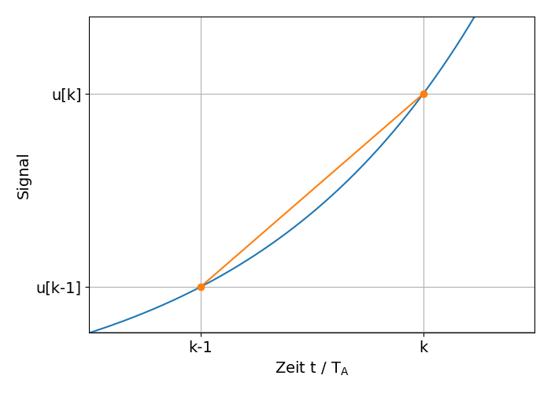
Aus einem Vergleich der Flächen unter der Funktion ergibt sich der Ausdruck
| (7) |
Die Approximation der Integration führt zu der gewichteten Summe aufeinanderfolgender Abtastwerte, die mit dem Faktor multipliziert wird. Für Integrale höherer Ordnung kann entsprechend verfahren werden. Es ergibt sich eine Summe von Folgenwerten, die jeweils um einen Abtastwert verschoben sind. Allgemein ist das aktuelle Ausgangssignal eine Funktion der vergangenen Ein- und Ausgangswerte und des aktuellen Eingangssignals.
| (8) |
Die Beschreibung linearer, zeitinvarianter Systeme führt zu linearen Differenzengleichungen mit konstanten Koeffizienten, die allgemein dargestellt werden können als
| (9) |
beziehungsweise mit = 1
| (10) |
Die Güte der Approximation verbessert sich mit sinkender Abtastzeit . Allerdings ist die Abtastzeit aus der Anwendung vorgegeben. Auch der Signalverlauf hat einen Einfluss auf die Approximationsgüte. Nichtlineare Kurvenverläufe und hochfrequente Signalanteile wirken sich negativ auf die Approximationsgüte aus.
Example 1.4.
RC-Tiefpass
Bild 1 zeigt einen RC-Tiefpass mit Spannungsquelle , Widerstand R und Kapazität C.
Die zugehörige lineare Differentialgleichung für die Ausgangsspannung lautet:
| (11) |
Eine Integration der Differentialgleichung führt bei zeitdiskreten Integrationsgrenzen zu
| (12) |
Mit den Signalen
| (13) |
und
| (14) |
und einer Approximation der Integrale über die Trapezregel ergibt sich
| (15) |
Zur Berechnung des aktuellen Ausgangssignals wird die Gleichung ausmultipliziert und nach [k] aufgelöst.
| (16) |
Die aktuelle Ausgangsspannung [k] berechnet sich aus dem aktuellen und einem vergangenen Wert der Eingangsspannung [k] und einem vergangenen Wert der Ausgangsspannung [k]. Bild 6 zeigt den Vergleich zwischen dem zeitkontinuierlichen und dem zeitdiskreten System bei unterschiedlichen Abtastzeiten.
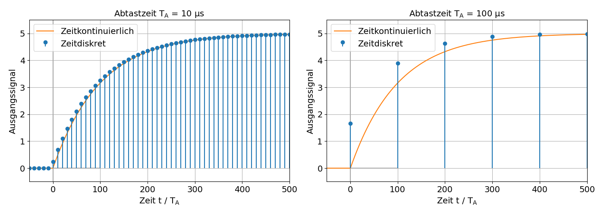
Die Abtastzeit von ist deutlich kleiner als die Zeitkonstante des Systems mit . Aus diesem Grund ist die Approximationsgüte im links dargestellten Fall hoch. Die im rechten Bildteil diskutierte Abtastzeit von entspricht der Zeitkonstante des Systems. Aus diesem Grund ist die Approximation der Ableitung mit einem Differenzenquotienten unzureichend, die Approximationsgüte ist deutlich schlechter als bei einer Abtastzeit von . Das Beispiel zeigt, dass zeitkontinuierliche Systeme zeitdiskret nachgebildet werden können. Die lineare Differentialgleichung erster Ordnung
| (17) |
geht dabei über in eine lineare Differenzengleichung erster Ordnung.
| (18) |
Die hier diskutierten Beispiele führen auf lineare Differenzengleichungen mit konstanten Koeffizienten.
| (19) |
Im Folgenden werden die Eigenschaften von Systemen diskutiert, die sich mit dieser Art von Differenzengleichungen beschreiben lassen.
2 Grundlegende Systemeigenschaften
Im Abschnitt 1 werden unterschiedliche Systeme beschrieben. Die Beschreibung führt zu linearen Differenzengleichungen mit konstanten Koeffizienten. In diesem Abschnitt werden grundlegende Eigenschaften von Systemen diskutiert. Sie entsprechen den Eigenschaften linearer, zeitinvarianter Systeme im zeitkontinuierlichen Bereich. Es wird sich zeigen, dass lineare Differenzengleichungen mit konstanten Koeffizienten zeitdiskrete, lineare, zeitinvariante Systeme (LTI-Systeme) beschreiben.
1 Linearität
Für den Linearitätsnachweis eines Systems müssen die Systemantworten [k] und [k] auf die Eingangsfolgen [k] und [k] bekannt sein. Ein System ist linear, wenn es auf eine Linearkombination von Eingangssignalen
| (20) |
mit derselben Linearkombination der entsprechenden Ausgangssignale reagiert.
| (21) |
Der Nachweis erfolgt über Einsetzen der Gleichungen in die Differenzengleichung.
Example 2.1.
Linearität eines rückgekoppelten Systems
Das Filter mit der Differenzengleichung
| (22) |
soll auf Linearität untersucht werden. Die Systemantworten [k] und [k] berechnen sich mit der Differenzengleichung zu
| (23) |
beziehungsweise
| (24) |
Wird das System mit der oben beschriebenen Linearkombination angeregt, ergibt sich das Ausgangssignal aus derselben Linearkombination wie die Eingangssignale.
| (25) | ||||
| (26) | ||||
| (27) | ||||
| (28) | ||||
| (29) |
Bild 7 zeigt Ein- und Ausgangssignale eines linearen Systems, das mit den Signalen [k], [k] und = [k] + [k] angeregt wird.
Auch das Ausgangssignal setzt sich aus der Summe der Ausgangsignale [k] und [k] zusammen.
Die Linearität des Systems kann auch daran abgelesen werden, dass alle Folgen nur in linearen Summen auftreten. Keine der Folgen besitzt eine Potenz ungleich 1 oder tritt als Produkt von Folgen auf.
2 Zeitinvarianz
Ein System reagiert auf ein Eingangssignal mit einer Systemantwort . Ist das System zeitinvariant, so reagiert das System auf das verzögerte Eingangssignal u[k - ] mit dem Ausgangsignal
y[k - ]. Zeitinvariante Systeme reagieren also unabhängig vom Startzeitpunkt der Beobachtung auf gleiche Eingangssignale mit gleichen Ausgangssignalen.
Example 2.2.
Zeitinvarianz eines rückgekoppelten Systems
Das Filter mit der Differenzengleichung
| (30) |
soll auf Zeitinvarianz untersucht werden. Dazu werden alle Ausdrücke k durch k – ersetzt. Es ergibt sich die Differenzengleichung
| (31) |
Wird das Eingangssignal um verschoben, wird auch das Ausgangsignal um verschoben.
Es kann gezeigt werden, dass zeitinvariante Systeme Differenzengleichungen mit konstanten Koeffizienten aufweisen. Ändern sich die Koeffizienten der Differenzengleichung mit dem Folgenindex k, ist das System zeitvariant.
3 Lineare, zeitinvariante Systeme (LTI-Systeme)
Die Darstellungen in diesem Skript beschränken sich bis auf wenige Ausnahmen auf Systeme, die linear und zeitinvariant sind und als LTI-Systeme bezeichnet werden. Für LTI-Systeme sind besonders anschauliche und einfach zu interpretierende Lösungs- und Interpretationsmethoden im Zeit-, Bild- und Frequenzbereich vorhanden. Sie entsprechen sinngemäß den Methoden zeitkontinuierlicher Systeme.
Systeme, die mit einer linearen Differenzengleichung mit konstanten Koeffizienten beschrieben werden können, erfüllen die Bedingungen nach Linearität und Zeitinvarianz. Ausgehend von der Differenzengleichung
| (32) |
werden die Eigenschaften der Linearität und Zeitinvarianz hergeleitet.
Linearität
Ausgangspunkt für den Beweis der Linearität sind zwei Signalkombinationen [k] und [k] sowie [k] und [k], für die gilt
| (33) | ||||
| (34) |
Für eine beliebige Linearkombination
| (35) |
gilt dann die Gleichung
| (36) | ||||
| (37) |
Für jede der beiden Summen kann der Ausdruck aus (33) beziehungsweise (34) eingesetzt werden, und es ergibt sich
| (38) | ||||
| (39) |
Eine Linearkombination von Eingangssignalen führt damit zu der identischen Linearkombination von Ausgangssignalen, sodass das System ein lineares System ist.
Zeitinvarianz
Wie oben bereits beschrieben sind lineare Differenzengleichungen mit konstanten Koeffizienten stets zeitinvariant. Wird in der Differenzengleichung
| (40) |
der Folgenindex sowohl bei Eingangs- als auch Ausgangssignalen um verschoben, bleibt die Differenzengleichung weiter gültig.
| (41) |
4 Kausalität
Wesentliche Voraussetzung für die Realisierbarkeit eines Systems ist die Forderung, dass die Werte der Ausgangssignale zu einem gegebenen Zeitpunkt nur von Werten der Eingangssignale zu diesem oder einem früheren Zeitpunkt abhängen, nicht jedoch etwa von zukünftigen Werten. Dieses Verhalten wird für zeitkontinuierliche Systeme als die Eigenschaft der Kausalität eines Systems definiert, die auch im diskreten Fall wesentlich ist. Liegt eine Systembeschreibung über eine Differenzengleichung vor, kann die Kausalität direkt bewertet werden.
| (42) |
Ist der Koeffizient ≠ 0, kann ohne Beschränkung der Allgemeinheit die Annahme getroffen werden. Ist das nicht der Fall, wird die Gleichung durch dividiert. Mit dieser Annahme kann die Differenzengleichung nach aufgelöst werden, und es ergibt sich
| (43) |
Da alle Indizes l und n größer gleich null sind, ist ein System, das durch eine lineare Differenzengleichung der Form aus Gleichung (43) beschrieben werden kann, ein kausales System. Ist in der Differenzengleichung (42) der Koeffizient , kann nicht nach aufgelöst werden. Wird nach
aufgelöst, ergibt sich die Gleichung
| (44) |
Damit ist der Ausgangswert von dem zukünftigen Eingangswert abhängig. Das System ist demnach für nicht kausal.
Durch die Kausalitätsforderung sind einige Systembetrachtungen der digitalen Signalverarbeitung aufwendig. Daher werden im Folgenden aus Vereinfachungsgründen auch nicht-kausale Systeme betrachtet. Diese Systeme können vielfach durch eine Verschiebung kausal und damit realisierbar gemacht werden.
Example 2.3.
Kausalität des gleitenden Mittelwertes
Bei der Beschreibung zeitdiskreter Systeme wird der gleitende Mittelwert vorgestellt. Er hat die Differenzengleichung
| (45) |
Weil das Ausgangssignal nur von aktuellen und vergangenen Eingangswerten abhängt, ist das System kausal. Es weist aber eine zeitliche Verzögerung auf, die bei der Berechnung von Frequenzgängen noch dargestellt wird. Ein System mit der Differenzengleichung
| (46) |
ist nicht mehr kausal, weist aber - wie später gezeigt wird - keine zeitliche Verzögerung auf. Oft werden in der Datenverarbeitung erst alle Messwerte aufgenommen und anschließend ausgewertet. In diesem Fall liegen auch zukünftige Werte vor. Die Kausalität von Systemen ist in diesem Fall nicht zwingend erforderlich. Bild 10 stellt die Sprungantwort eines kausalen und eines nicht kausalen Systems zur Berechnung eines gleitenden Mittelwertes dar.
zur Berechnung eines gleitenden Mittelwertes
Es ist deutlich zu erkennen, dass das nicht kausale System reagiert, bevor der Sprung des Eingangssignals stattgefunden hat, während das kausale Signal erst nach der eigentlichen Anregung reagiert.
5 Stabilität
Für zeitkontinuierliche Systeme wird in Teil A der Buchreihe folgende Stabilitätsdefinition eingeführt: Ein System ist asymptotisch stabil, wenn es nach einer zeitlich begrenzten Anregung mit endlicher Energie wieder seine Ruheposition erreicht. Es ist grenzstabil, wenn es nach einer zeitlich begrenzten Anregung mit endlicher Energie zu einem konstanten Ausgangswert konvergiert oder mit konstant schwingendem Ausgangssignal reagiert. Ein System ist instabil, wenn es auf eine zeitlich begrenzte Anregung endlicher Energie mit divergierendem Ausgangssignal reagiert. Diese Stabilitätsdefinition wird für zeitdiskrete Systeme übernommen.
Wie bei zeitkontinuierlichen Systemen erfolgt der Nachweis im Zeitbereich über die charakteristische Gleichung (Kapitel 3) oder die Impulsantwort (Kapitel 4). Alternativ kann die Stabilität mit der z-Transformation bewertet werden (Kapitel 3).
Example 2.4.
Stabiles, grenzstabiles und instabiles System
Als Beispiele werden rekursive Systeme untersucht. Das erste System hat die Differenzengleichung
| (47) |
Wird die Anregung nach einer endlichen Zeit zu null, wird der Wert [k] nur halb so groß wie der Wert [k – 1] im Takt zuvor. Aus diesem Grund konvergiert [k] für k → ∞ gegen null. Das System ist asymptotisch stabil. Das zweite System wird über die Differenzengleichung
| (48) |
beschrieben. Wird die Anregung zu null, bleibt der Wert [k] genauso so groß wie der Wert
im Takt zuvor. Aus diesem Grund ist [k] für k → ∞ konstant. Das System ist grenzstabil. Das dritte System wird durch die Gleichung
| (49) |
definiert. Bereits an der Differenzengleichung wird deutlich, dass auch nach Ende der Anregung der Wert einen Faktor 1.1 größer ist als der Werte im Takt zuvor. Die Systemantwort divergiert. Das System ist damit instabil. Bild 11 zeigt die Sprungantworten der unterschiedlichen Systeme. Alle Systeme werden mit einer Rechteckfolge
| (50) |
angeregt, die eine endliche Energie aufweist.
Bei dem asymptotisch stabilen System klingt die Systemantwort ab, wenn das Eingangssignal zu null wird. Bei dem grenzstabilen System bleibt die Systemantwort konstant, wenn die Anregung zu null wird. Bei dem instabilen System wächst das Ausgangssignal stetig an, auch nachdem die Anregung zu null wird.
Die Stabilitätseigenschaften lassen sich bei diesen einfachen Systemen bereits an der Differenzengleichung abgelesen, indem das Eingangssignal zu null gesetzt wird. Bei dem stabilen System ergibt sich der neue Ausgangswert aus einem Bruchteil des alten Ausgangswertes. Bei dem grenzstabilen System sind alter und neuer Ausgangswert identisch. Bei dem instabilen System ergibt sich der neue Ausgangswert aus einem Vielfachen des alten Ausgangswertes. Der Koeffizient vor dem Term entscheidet bei diesem System erster Ordnung offenbar über die Stabilität des Systems.
6 Zusammenfassung grundlegender Systemeigenschaften
Tabelle LABEL:tab:4.1 fasst die diskutierten Systemeigenschaften und ihre Bedeutung zusammen.
[label=tab:4.1]Zusammenfassung von Systemeigenschaften
| Eigenschaft | Bedeutung | ||||||
|---|---|---|---|---|---|---|---|
| Linearität | System reagiert auf Linearkombination
von Eingangssignalen
|
||||||
| Zeitinvarianz | System reagiert auf ein verzögertes Eingangssignal u[k - ] mit einem Ausgangsignal y[k - ] | ||||||
| Kausalität | System reagiert auf ein Eingangssignal erst nach Beginn der Anregung ≠ 0 | ||||||
| Asymptotische Stabilität | System erreicht nach einer Anregung mit endlicher Energie wieder seine Ruheposition | ||||||
| Grenzstabilität | System bleibt nach einer Anregung in der aktuellen Position | ||||||
| Instabilität | System reagiert nach einer Anregung mit endlicher Energie mit einer divergierenden Systemantwort |
3 Lösung linearer Differenzengleichungen mit konstanten Koeffizienten
Die dargestellten Beispiele haben ein Systemverhalten, das über lineare Differenzengleichungen N-ter Ordnung mit konstanten Koeffizienten beschrieben wird. Zur Berechnung des Ausgangssignals im Zeitbereich stehen unterschiedliche Methoden zur Verfügung, die in diesem Kapitel vorgestellt werden.
1 Rekursive Darstellung von Differenzengleichungen
Die Differenzengleichung N-ter Ordnung mit konstanten Koeffizienten lautet in ihrer allgemeinen Form
| (51) |
Ohne Beschränkung der Allgemeinheit wird die Annahme getroffen. Mit dieser Annahme kann die Gleichung umgeformt werden zu
| (52) |
Das aktuelle Ausgangssignal ergibt sich allgemein aus dem aktuellen Wert des Eingangssignals sowie den vergangenen Werten des Ein- und Ausgangssignals. Die Ausgangssignale der oben dargestellten Systeme werden mit Hilfe dieser rekursiven Darstellung berechnet.
Für numerische Berechnungen reicht dieses Lösungsverfahren für lineare Differenzengleichungen mit konstanten Koeffizienten vollständig aus. Die rekursive Form hat aber den Nachteil, dass keine geschlossene Form des Ausgangssignals angegeben werden kann. Sie ist deshalb nicht geeignet für eine Analyse von Eigenschaften wie Schwingungsneigung und Stabilität. Deshalb werden in diesem Abschnitt Verfahren zur analytischen Berechnung der Systemantwort beschrieben.
2 Explizite Lösung über die Vier-Schritt-Methode
Für die Diskussion von Systemeigenschaften ist es notwendig, eine geschlossene Darstellung des Ausgangssignals zu erhalten. Für die Lösung von linearen Differenzengleichungen mit konstanten Koeffizienten gibt es eine sogenannte Vier-Schritt-Methode. Sie besteht aus den Schritten
-
•
Berechnung der allgemeinen homogenen Lösung
-
•
Berechnung einer partikulären Lösung
-
•
Kombination von homogener und partikulärer Lösung
-
•
Bestimmung der Konstanten über Anfangsbedingungen
Berechnung der allgemeinen homogenen Lösung
Zur Berechnung der allgemeinen homogenen Lösung wird das Eingangssignal auf null gesetzt. Es ergibt sich die homogene Differenzengleichung
| (53) |
Mit dem Ansatz
| (54) |
kann die homogene Lösung gefunden werden. Einsetzen des Ansatzes führt zu der Gleichung
| (55) |
beziehungsweise
| (56) |
Sie wird als charakteristische Gleichung bezeichnet, weil mit ihr die für das System charakteristischen Parameter bestimmt werden. Da es sich bei dem System um ein lineares System handelt, ergibt sich die allgemeine homogene Lösung aus der Linearkombination der berechneten Nullstellen .
| (57) |
Die Lösungen der charakteristischen Gleichung müssen jedoch nicht die Vielfachheit von eins haben. Existiert ein -facher Wert , ergibt sich die allgemeine homogene Lösung
| (58) |
Example 3.1.
Sprungantwort eines Tiefpasses - Berechnung der allgemeinen homogenen Lösung
Das praktische Vorgehen wird am Beispiel des rekursiven Tiefpasses dargestellt. Es soll die Systemreaktion auf einen Sprung am Eingang des Filters berechnet werden. Die Differenzengleichung für den Filter lautet nach Gleichung (1)
| (59) |
Für die allgemeine homogene Lösung muss das Eingangssignal zu null gesetzt werden.
| (60) |
Mit dem Ansatz
| (61) |
ergibt sich
| (62) |
Die Gleichung ist zum einen für erfüllt. Diese triviale Lösung beschreibt aber das Ausgangssignal, das zu allen Zeiten null ist. Es ist deshalb nicht von Interesse. Die von null verschiedene Nullstelle dieser Gleichung ergibt sich zu
| (63) |
Die allgemeine homogene Lösung ergibt sich als Linearkombination der berechneten Lösungen und lautet
| (64) |
Die Konstante wird in Schritt 4 durch Anfangsbedingungen festgelegt.
Berechnung einer partikulären Lösung
Im nächsten Schritt muss eine partikuläre Lösung der Differenzengleichung
| (65) |
bestimmt werden. Als Ansatz für [k] wird ein Signal verwendet, das in Abhängigkeit vom Eingangssignal gewählt wird.
| Eingangssignal | Ansatz für die partikuläre Lösung [k] |
|---|---|
| Konstante | Konstante |
| Polynom | Polynom gleichen Grades |
| Exponentialfolge | Exponentialfolge ku0k |
| Harmonische Schwingung cos(Ωk) | Acos(Ωk + ϕ) |
Durch Einsetzen dieses Ansatzes in die Differenzengleichung ergibt sich eine partikuläre Lösung [k]. Ist das Eingangssignal eine Kombination der dargestellten Eingangssignale, muss als Ansatz für die partikuläre Lösung eine entsprechende Kombination von Ansätzen gewählt werden. Dabei ist es ausreichend, eine beliebige partikuläre Lösung zu finden.
Alternativ kann die partikuläre Lösung durch eine Variation der Konstanten durchgeführt werden. Dabei werden die Konstanten … der allgemeinen homogenen Lösung als Funktion des Index k variiert. Auflösen nach den variierten Konstanten führt zu der gesuchten partikulären Lösung.
Example 3.2.
Sprungantwort eines Tiefpasses - Berechnung einer partikulären Lösung
Für das Beispiel des rekursiven Tiefpass-Filters wird die partikuläre Lösung über Variation der Konstanten bestimmt. Der Ansatz für die partikuläre Lösung lautet
| (66) |
Einsetzen in die inhomogene Differentialgleichung führt unter Berücksichtigung des Eingangssignals
| (67) |
zu
| (68) |
Damit kann der Koeffizient rekursiv beschrieben werden als
| (69) |
Da nur eine beliebige partikuläre Lösung erforderlich ist, kann (- 1) = 0 gesetzt werden. Damit sind auch alle Konstanten mit k < 1 null. Für k > - 1 ergibt sich
| (70) | ||||
| (71) |
Eine wiederholte Berechnung führt auf
| (72) |
Mit der Summenformel für die endliche geometrische Reihe ergibt sich wegen der Definition des Gedächtnisfaktors mit |GF| < 1
| (73) |
und die partikuläre Lösung lautet
| (74) |
Kombination von allgemeiner homogener und partikulärer Lösung
Die komplette Lösung der Differenzengleichung ergibt sich als Summe aus der allgemeinen homogenen und einer partikulären Lösung.
| (75) |
Example 3.3.
Sprungantwort eines Tiefpasses - Kombination der beiden Lösungen
Die Summe von allgemeiner homogener und partikulärer Lösung errechnet sich zu
| (76) |
Bestimmung der Konstanten über Anfangsbedingungen
Die Werte für müssen durch Einsetzen von Folgenwerten ermittelt werden. Für jede Konstante ist ein Folgenwert als Randbedingung notwendig.
Example 3.4.
Sprungantwort eines Tiefpasses - Bestimmung der Konstanten
Für das vorliegende Beispiel wird vorgegeben, dass das Ausgangssignal für k < 0 null ist. Für
ergibt sich das Ausgangssignal mit = 0 direkt über die Differenzengleichung zu
| (77) |
Der Wert in Gleichung (76) muss über die Anfangsbedingungen = 1 - GF bestimmt werden.
| (78) |
Es ergibt sich die Konstante , und die Lösung der Differenzengleichung lautet
| (79) |
Bild 12 vergleicht das Ausgangssignal der rekursiven Berechnung mit dem der analytischen Berechnung.
eines rekursiven Tiefpasses für GF = 0.9
Erwartungsgemäß stimmen die beiden Berechnungen überein.
Das Vorgehen bei der Vier-Schritt-Methode zur Lösung linearer Differenzengleichungen mit konstanten Koeffizienten ist in Tabelle 2 zusammengefasst.
| Schritt | Beschreibung |
|---|---|
| 1 | Lösung der homogenen Differenzengleichung über Ansatz |
| durch Lösen der charakteristischen Gleichung | |
| Allgemeine Lösung in Abhängigkeit der Vielfachheit | |
| 2 | Bestimmung einer partikulären Lösung [k] - über einen Lösungsansatz je nach Eingangssignal - über die Methode Variation der Konstanten |
| 3 | Superposition von allgemeiner homogener und spezieller partikulärer Lösung |
| 4 | Bestimmung der nicht definierten Konstanten über Anfangsbedingungen |
3 Stabilität und charakteristische Gleichung eines Systems
Bei der Einführung des Begriffes der Stabilität in Abschnitt 3 wird ausgeführt, dass stabile Systeme nach einer Anregung mit endlicher Energie wieder in ihren Ausgangszustand zurückkehren. Das Verhalten des Systems nach der Anregung wird durch die homogene Lösung der Differentialgleichung beschrieben, die in Abschnitt LABEL:sec:4.3.2 berechnet wird. Sie setzt sich bei einfachen Lösungen aus einer Linearkombination von Potenzfolgen zusammen.
| (80) |
Damit die homogene Lösung zu null wird, müssen alle Lösungen einen Betrag || < 1 aufweisen. Besitzt ein Wert einen Betrag || > 1, divergiert der entsprechende Summand aus Gleichung (80), und folglich divergiert auch die Lösung der homogenen Differentialgleichung.
Liegt mit eine P-fache Lösung der charakteristischen Gleichung vor, weisen die zugehörigen Summanden der homogenen Lösung Terme der Form
| (81) |
auf. Da die Exponentialfunktion schneller fällt und wächst als jede Potenz von k, konvergiert diese Summe ebenfalls für einen Betrag || < 1, und sie divergiert für einen Betrag || > 1. Dabei ist es unerheblich, ob die Lösungen reell oder komplex sind.
Einen Sonderfall stellen Lösungen mit einem Betrag || = 1 dar.
| (82) |
Die Lösungen sind konstant beziehungsweise schwingen mit konstanter Amplitude. Für den Fall einfacher Lösungen liegt damit weder eine konvergente noch eine divergente Lösung vor. Der Fall entspricht dem diskutierten Fall der Grenzstabilität des zugehörigen Systems.
Besitzt eine Lösung mit einem Betrag || = 1 eine Vielfachheit von P > 1, entstehen Terme der Form
| (83) | ||||
| (84) | ||||
| (85) | ||||
Da die Exponentialfunktion die Terme nicht dämpft, divergiert der Ausdruck und damit die gesamte homogene Lösung. Das System ist instabil. Aus dieser Diskussion ergibt sich der in Tabelle LABEL:tab:4.7 beschriebene Zusammenhang zwischen der Stabilität von linearen, zeitinvarianten Systemen und den Lösungen der charakteristischen Gleichung.
| Eigenschaft | Lösungen der charakteristischen Gleichung |
|---|---|
| Asymptotisch stabiles System | Alle Lösungen besitzen einen Betrag || < 1 |
| Grenzstabiles System | Alle Lösungen besitzen einen Betrag || < 1, zusätzlich liegt mindestens eine einfache Lösung mit Betrag || = 1 vor |
| Instabiles System | Es existiert mindestens eine Lösung mit einem Betrag || > 1 oder eine mehrfache Lösung mit Betrag || = 1 |
4 Sprung- und Impulsantwort eines Systems
Das Ausgangssignal eines zeitdiskreten Systems ist von dem Anfangszustand abhängig. Sind die Anfangsbedingungen null, ist das System energiefrei. Wie im zeitkontinuierlichen Bereich wird die Reaktion eines energiefreien Systems auf eine sprungförmige Erregung als Sprungantwort bezeichnet.
Für das Beispiel des rekursiven Filters wird in Abschnitt LABEL:sec:4.3.2 die Antwort des energiefreien Systems auf einen Sprung der Höhe 1 mit der Bedingung = 0 berechnet.
| (86) |
Analog wird die Impulsantwort als Reaktion eines energiefreien Systems auf eine Anregung mit einem Impuls definiert. Im Kapitel 2 wird gezeigt, dass die Impulsfolge als Differenz zweier Sprungfolgen berechnet werden kann.
| (87) |
Wegen der Linearität und Zeitinvarianz errechnet sich die Systemreaktion eines energiefreien LTI-Systems auf einen Impuls am Eingang aus der Differenz zweier Sprungantworten zu
| (88) |
Die Systemantwort eines rekursiven Filters auf einen Impuls ergibt sich demnach zu
| (89) |
5 Berechnung der Systemantwort durch Superposition
Ist ein System linear und zeitinvariant, kann ein Ausgangssignal dadurch berechnet werden, dass die Eingangssignale zerlegt, ihre jeweiligen Systemantworten berechnet und anschließend addiert werden. Dieses Prinzip wird als Superpositionsprinzip bezeichnet. Als erste Anwendung dieses Prinzips wird in Abschnitt 4 die Impulsantwort als Differenz zweier Sprungantworten berechnet. Wird zum Beispiel ein rekursives Filter mit der Differenzengleichung
| (90) |
mit einer Rechteckfolge der Länge 10 und der Höhe 5 beaufschlagt, kann das Eingangssignal als Summe zweier Sprungfolgen dargestellt werden
| (91) |
Damit ergibt sich das Ausgangsignal aus der Summe der beiden Sprungantworten
| (92) |
Bild 14 stellt das Superpositionsprinzip für das Beispiel des rekursiven Filters bei Anregung mit einem rechteckförmigen Signal dar.
Mit der Kenntnis der Sprungantwort eines Systems kann demnach für Eingangssignale, die sich über die Sprungfolgen darstellen lassen, eine Systemantwort über Superposition berechnet werden.
▪
4 Berechnung der Systemantwort über die Faltungssumme
Das Superpositionsprinzip erlaubt eine Zerlegung des Eingangssignals in eine Linearkombination von Eingangssignalen, deren entsprechendes Ausgangsignal bekannt ist. Auf Basis des Superpositionsprinzips kann bei bekannter Impulsantwort das Ausgangssignal zu einem beliebigen Eingangssignal bestimmt werden. Der Vorgang wird wie bei zeitkontinuierlichen Systemen als Faltung bezeichnet. Im diskreten Zeitbereich geht das Faltungsintegral in eine sogenannte Faltungssumme über.
1 Herleitung der Faltungssumme
Mathematisch kann die Faltungssumme über das Superpositionsprinzip hergeleitet werden. Die Systemreaktion eines energiefreien Systems auf einen Impuls am Eingang ist die Impulsantwort . Ein beliebiges Eingangssignal kann mit der Ausblendeigenschaft der Impulsfolge als gewichtete Summe von Impulsen beschrieben werden.
| (93) |
Die Systemantwort auf ein solches Eingangssignal ergibt sich aus derselben Linearkombination von Impulsantworten
| (94) |
Diese Operation wird als Faltungssumme oder auch diskrete Faltung bezeichnet.
Example 4.1.
Berechnung der gleitenden Mittelung über die Faltungssumme
Der im vorangegangenen Abschnitt behandelte Algorithmus zur gleitenden Mittelung führte zu der Differenzengleichung
| (95) |
Durch Einsetzen der Impulsfolge als Eingangssignal ergibt sich die Impulsantwort zu
| (96) |
und das Ausgangssignal zu einem beliebigen Eingangssignal kann durch die Faltungssumme berechnet werden
| (97) | ||||
| (98) | ||||
| (99) |
2 Grafische Interpretation der Faltungssumme
Die direkte analytische Berechnung der Faltungssumme ist nur in Ausnahmefällen möglich und sinnvoll, da die Zusammenfassung der Summe aufwendig ist. Im Gegensatz zur zeitkontinuierlichen Faltung kann die zeitdiskrete Faltung aber numerisch ausgeführt werden. Die Faltungssumme ist damit eine Realisierungsform zeitdiskreter Systeme. Zum besseren Verständnis wird deshalb die Faltung an einem Beispiel zweier Folgen grafisch veranschaulicht.
Example 4.2.
Grafische Interpretation der Faltungssumme
Die Folge wird als Sprungfolge angenommen, die Impulsantwort ergibt sich in diesem Beispiel zu
| (100) |
Die Folgen sind in Bild 15 grafisch dargestellt.
Die Faltung ist über eine Summenformel definiert. Sie kann umgeformt werden zu
| (101) |
Mit dieser Darstellung fällt die Interpretation einfacher: Die Folge wird an der Achse gespiegelt und um k nach rechts verschoben. Dann wird das Produkt der einzelnen Folgenwerte addiert. Bild 16 stellt die unterschiedlichen Phasen der grafischen Faltung dar.
Für negative Folgenindizes k überschneiden sich die beiden Folgen nicht. Zum Zeitpunkt überschneiden sich die beiden Folgen an genau einer Stelle . Das Ergebnis ist damit = 2. Für
ergibt sich eine Überschneidung der ersten beiden Werte. Nach Bildung des Produktes werden die Ergebnisse addiert und es ergibt sich = 2 + 2 = 4. So wird für die übrigen Werte von k fortgefahren. Für k ≥ 3 überschneidet sich die Folge x komplett mit der Folge g, sodass sich der Wert des Ausgangssignals nicht weiter ändert.
Aus der Grafik kann abgelesen werden, dass das Signal ab konstant bleibt.
Die in diesem Beispiel dargestellte Methode zur Berechnung der Faltungssumme ist in Tabelle 4 zusammengefasst.
| Schritt | Beschreibung |
|---|---|
| 1 | Berechnung der Impulsantwort |
| 2 | Skizze von Eingangssignal und Impulsantwort |
| 3 | Skizze von einem der Signale oder über Spiegelung an der Achse und Verschiebung um k nach rechts |
| 4 | Aufteilen der Faltungssumme in sinnvolle Bereiche (Überlappungsbereiche, Sprungstellen, Definitionsgrenzen, …) |
| 5 | Lösen der Summen und Superposition der Ergebnisse |
Zeitdiskrete Faltung Im Online-Portal Systemtheorie Online verdeutlicht die Applikation Zeitdiskrete Faltung grafisch die Faltungsoperation für zeitdiskrete Signale. \tcblowerh-ka.de/eit/digitale-signalverarbeitung/übungen/kapitel2
3 Rechenregeln zur Faltungssumme
Zur Vereinfachung der Berechnung von Faltungssummen können Rechenregeln angewendet werden, die im Folgenden kurz dargestellt sind. Aus der grafischen Darstellung zur Faltung wird deutlich, dass die Faltung eine kommutative Operation ist. Der mathematische Nachweis ergibt sich aus einer Indextransformation.
| (102) |
Da sich die Summe von - ∞ bis + ∞ erstreckt, ist eine Verschiebung um k und eine Spiegelung nicht relevant, und es ergibt sich
| (103) |
Das Distributivgesetz ergibt sich aus der Linearität der Summe.
| (104) |
Das Assoziativgesetz wird hier nur genannt und nicht bewiesen. Es lautet:
| (105) |
Bei der grafischen Faltung wird gezeigt, dass der von null verschiedene Überlappungsbereich für kausale Folge immer im Zahlenbereich von 0 … k liegt. Aus diesem Grund muss die Faltung auch nur in diesem Bereich ausgeführt werden, sodass für die Faltung zweier kausaler Folgen gilt:
| (106) |
Aus der Eigenschaft folgt außerdem, dass die Faltung zweier kausaler Folgen zu einer kausalen Folge führt. Die Rechenregeln für die Faltung mit einer Impulsfolge werden in Abschnitt 1 bei der Einführung von Impulsfolgen behandelt.
[label=]Zusammenfassung der Rechenregeln zur Faltungssumme
| Rechenregel | Darstellung als Gleichung |
|---|---|
| Kommutativgesetz | |
| Distributivgesetz | |
| Assoziativgesetz | |
| Faltung kausaler Folgen führt zu einer kausalen Folge | |
| Faltung mit einem Impuls | |
| Faltung mit einem Impuls an der Stelle |
4 Impulsantwort und Stabilität
In Abschnitt 3 wird die Stabilität von Systemen aus physikalischer Sicht definiert. Mit dem Wissen, dass sich bei einem LTI-System die Systemantwort aus dem Faltungsintegral ergibt, kann die Stabilitätsbewertung auf die Impulsantwort zurückgeführt werden. Dabei wird davon ausgegangen, dass das System für den Zeitraum 0 < k ≤ angeregt wird. Für den Zeitraum k ≥ nach der Anregung wird das Verhalten der Systemantwort analysiert.
| (107) |
Aus der physikalischen Bedingung an Stabilität leitet sich die Forderung ab, dass bei einer zeitlich begrenzten Anregung das Ausgangssignal den Grenzwert
| (108) |
aufweisen muss. Ist der Betrag des Eingangssignals beschränkt, kann er mit || < abgeschätzt werden, und der Betrag des Ausgangssignals kann abgeschätzt werden mit
| (109) |
Es handelt sich um eine Summe von + 1 Folgegliedern. Die Summe wird zu null, wenn der Betrag der Impulsantwort gegen null konvergiert.
| (110) |
Ein System ist damit stabil, wenn die Impulsantwort gegen null konvergiert, es ist instabil, wenn die Impulsantwort divergiert. Einen Sonderfall stellen Impulsantworten dar, die für k → ∞ einem konstanten Wert zustreben. Bei diesen Systemen konvergiert das Ausgangssignal für k ≥ gegen einen konstanten Wert.
| (111) |
Systeme, deren Impulsantworten für k → ∞ einem konstanten Wert zustreben, entsprechen damit den Bedingungen grenzstabiler Systeme. Dasselbe gilt für Systeme, deren Impulsantwort für
k → ∞ mit konstanter Amplitude schwingt. Der Zusammenhang zwischen Impulsantwort und Stabilität linearer, zeitinvarianter Systeme ist in Tabelle LABEL:tab:4.7 zusammengefasst.
[label=tab:4.7]Zusammenfassung des Zusammenhangs zwischen Impulsantwort und Stabilität von LTI-Systemen
| Eigenschaft | Bedeutung | |||
|---|---|---|---|---|
| Stabiles System | ||||
| Grenzstabiles System |
|
|||
| Instabiles System |
Zur Stabilitätsbewertung von Systemen im Zeitbereich muss die Impulsantwort bekannt sein. Es wird sich zeigen, dass eine Bewertung der Stabilität im sogenannten z-Bereich praktikabler vorgenommen werden kann.
Chapter 4 z-Transformation von Signalen
Die Laplace-Transformation wird zur Beschreibung zeitkontinuierlicher Signale verwendet. Sie eignet sich zur Lösung linearer Differentialgleichungen mit konstanten Koeffizienten und wird zur Interpretation von linearen, zeitinvarianten Systemen mit Übertragungsfunktionen eingesetzt. Die Interpretation der Übertragungsfunktionen führt zu Aussagen wie Stabilität, Schwingungsneigung, Kausalität und Sprungfähigkeit von Systemen. Die z-Transformation ist für zeitdiskrete Anwendungen das Pendant zur Laplace-Transformation. Sie wird in diesem Kapitel eingeführt und ist eine wichtige Voraussetzung für die Beschreibung zeitdiskreter Systeme und den Entwurf zeitdiskreter Filter.
Nach der Definition werden einige Korrespondenzen über die Definitionsgleichung bestimmt, und es wird ein Zusammenhang zwischen der z-Transformation und der Laplace-Transformation hergestellt.
Die eher aufwendige Bestimmung von Korrespondenzen über die Definitionsgleichung kann vermieden werden, wenn die vorliegende Funktion mit Rechenregeln auf Funktionen mit bekannten Korrespondenzen zurückgeführt werden kann. Die dazu notwendigen Rechenregeln werden hergeleitet und ihr Nutzen an Beispielen aufgezeigt.
Die bei technischen Anwendungen entstehenden z-Transformierten sind typischerweise gebrochen rationale Funktionen. Die Rücktransformation vom z-Bereich in den Zeitbereich kann grundsätzlich über ein Umkehrintegral erfolgen. Da dieser Weg aufwendig ist und Kenntnisse in der Funktionentheorie voraussetzt, wird er in der Praxis umgangen. Stattdessen wird die z-Transformierte in Partialbrüche zerlegt, die mit Hilfe der angesprochenen Rechenregeln und einiger Korrespondenzen in den Zeitbereich transformiert werden können.
1 Grundlagen der z-Transformation
1 Definitionsgleichung der z-Transformation
Die z-Transformation ist das Äquivalent zur Laplace-Transformation. Zur Herleitung der Definitionsgleichung wird deshalb von der Laplace-Transformation ausgegangen. Wie bei der Laplace-Transformation werden nur kausale Signale betrachtet. Nach den Darstellungen zur Signalabtastung wird ein ideal abgetastetes kausales Signal über die Multiplikation des kontinuierlichen Signals mit einer Abtastfunktion dargestellt:
| (1) |
Bei handelt es sich um ein kontinuierliches Signal. Deshalb kann die Laplace-Transformierte berechnet werden zu
| (2) |
Da die Laplace-Transformation eine lineare Operation ist und der Term (kTA) nicht von der Zeit t abhängt, kann die Laplace-Transformierte umgerechnet werden in
| (3) |
Dabei ist die Variable s eine komplexe Zahl mit Real- und Imaginärteil. Durch die Substitution von
| (4) |
kann die Schreibweise vereinfacht werden zu
| (5) |
Diese Gleichung ist die Definitionsgleichung der z-Transformation für kausale Signale. Ähnlich wie bei den vorangegangenen Transformationen wird für die z-Transformation die Schreibweise
| (6) |
und für die inverse z-Transformation die Schreibweise
| (7) |
eingeführt. Alternativ kann das Hantel-Symbol verwendet werden.
| (8) |
2 z-Transformation grundlegender Signale
Wie bei der Laplace-Transformation werden zunächst einige Korrespondenzen der z-Transformation direkt über die Definitionsgleichung der z-Transformation berechnet. Dabei ergibt sich die z-Transformierte eines Signals durch Auswertung von endlichen und unendlichen Reihen.
Diskrete Impulsfolge
Aus der Definition der diskreten Impulsfolge
| (9) |
ergibt sich die z-Transformierte durch Einsetzen in die Definitionsgleichung zu
| (10) |
Ist der Impuls um verschoben, ändert sich die z-Transformierte zu
| (11) |
Der Vergleich der z-Transformierten von Impuls und verschobenem Impuls ist ein erster Hinweis auf eine Verschiebungsregel.
Diskrete Rechteckfolge
Für die Rechteckfolge mit der Definition
| (12) |
wird die Summe in der Definitionsgleichung der z-Transformation endlich. Es gilt
| (13) |
Die Auswertung der endlichen Summe mit den Rechenregeln für endliche geometrische Reihen
| (14) |
ergibt die z-Transformierte
| (15) |
Diskrete Sprungfolge
Die z-Transformation der Sprungfolge mit der Definition
| (16) |
errechnet sich direkt durch Einsetzen in die Definitionsgleichung zu
| (17) |
Die Berechnung der Reihe kann auf die unendliche geometrische Reihe zurückgeführt werden. Die geometrische Reihe ist definiert als:
| (18) |
Die Konvergenz der Reihe ist von dem Betrag der Größe q abhängig. Für einen Betrag |q| < 1 konvergiert die Reihe und kann berechnet werden zu
| (19) |
Die Summe aus Gleichung (17) ist eine geometrische Reihe, die für || < 1 konvergiert und dargestellt werden kann als
| (20) |
Auch an diesem Beispiel wird eine Verschiebung um untersucht.
| (21) |
Die Auswertung der Beispiele Impulsfolge und Sprungfolge legt die Vermutung nahe, dass die Verschiebung einer Folge um nach rechts generell einer Multiplikation der ursprünglichen z-Transformierten mit entspricht.
Diskrete Exponentialfolge
Die diskrete Exponentialfolge ist definiert als
| (22) |
mit
| (23) |
Analog zur Sprungfolge ergibt sich die z-Transformierte zu
| (24) |
Diese Gleichung kann für die Berechnung der Korrespondenz für die diskrete Exponentialfolge verwendet werden. Ist der Betrag von || < 1, konvergiert die Summe, und es gilt:
| (25) |
Die bislang berechneten z-Transformierten werden über die Definitionsgleichung berechnet. Zur Vereinfachung der Berechnung werden in Abschnitt 03 einige Rechenregeln der z-Transformation hergeleitet.
3 Existenz der z-Transformierten
Bei der Berechnung einer z-Transformierten wird eine unendliche Reihe ausgewertet. Die
z-Transformierte existiert nur dann, wenn diese Reihe konvergiert. Bei der Berechnung der
z-Transformierten müssen teilweise Bedingungen an die Variable z gestellt werden, um die Konvergenz der Reihe sicherzustellen. Das führt zu der Frage, unter welchen Bedingungen die
z-Transformierte mit der Definitionsgleichung
| (26) |
existiert. Für beidseitig begrenzte Signale mit begrenzter Amplitude konvergiert die Summe in Gleichung (26) immer. Zur Untersuchung der Konvergenz bei nur einseitig begrenzten Folgen werden die Folgen mit Hilfe einer Exponentialfolge nach oben abgeschätzt.
| (27) |
Konvergiert die resultierende geometrische Reihe, existiert auch ihre z-Transformierte . Mit der Abschätzung der Folge gilt für
| (28) |
Damit existiert die z-Transformierte, wenn für den Betrag der Basis gilt:
| (29) |
Diese Bedingung erfüllen alle Werte der z-Ebene, die außerhalb des Kreises mit dem Radius r liegen. Bild 1 zeigt den Konvergenzbereich in der komplexen z-Ebene.
In praktischen Anwendungen können unendliche Signalfolgen mit einer Exponentialfolge nach oben abgeschätzt werden, sodass die Konvergenz in den meisten Fällen gegeben ist.
4 Zusammenhang zwischen z-Transformation und Laplace-Transformation
Mit Hilfe der Laplace-Transformation lassen sich einige Signaleigenschaften bestimmen. Um an diese Interpretationsmöglichkeiten anzuknüpfen, wird ein Zusammenhang zwischen der s-Ebene der Laplace-Transformation und der z-Ebene der z-Transformation hergestellt. Bei der Herleitung der z-Transformation wird die Substitution
| (30) |
verwendet. Mit dieser Substitution wird die komplexe s-Ebene in die komplexe z-Ebene abgebildet. Bild 2 zeigt die beiden Ebenen.
Die imaginäre Achse der s-Ebene s = jω wird abgebildet in die Variable
| (31) |
Das entspricht dem Einheitskreis, der für - ∞ < ω < ∞ periodisch in 2π durchlaufen wird. Die imaginäre Achse der s-Ebene wird demnach auf den Einheitskreis der z-Ebene abgebildet. Bei der Abtastung von Signalen entsteht ein Spektrum, das periodisch in ist. Das Basisband reicht dabei von - /2 bis + /2, so dass der Einheitskreis genau einmal durchlaufen wird. Alle periodischen Wiederholungen des Spektrums werden mit der z-Transformation auf dem Einheitskreis übereinander abgebildet. Deshalb eignet sich die z-Transformation besonders für die Beschreibung abgetasteter Signale.
Eine Linie der s-Ebene mit konstantem Realteil wird auf einen Kreis abgebildet, der einen Radius
| (32) |
aufweist. Mit negativem Realteil ergibt sich eine Lage innerhalb des Einheitskreises, mit positivem Realteil eine Lage um den Einheitskreis herum. Daraus folgt, dass die gesamte linke s-Halbebene in den Einheitskreis abgebildet wird, während die rechte s-Halbebene um den Einheitskreis herum abgebildet wird. Tabelle LABEL:tab:5.1 fasst korrespondierende Elemente der s- und z-Ebene zusammen. {application}Transformation Im Online-Portal Systemtheorie Online verdeutlicht die Applikation Transformation den Zusammenhang zwischen Punkten in der Laplace-Ebene und Punkten in der z-Ebene. \tcblowerh-ka.de/eit/digitale-signalverarbeitung/übungen/kapitel2 {summary}[label=tab:5.1]Tabellarische Übersicht über korrespondierende Elemente der s- und z-Ebene
| s-Ebene | z-Ebene |
|---|---|
| imaginäre Achse | Einheitskreis |
| linke komplexe Ebene | Inneres des Einheitskreises |
| rechte komplexe Ebene | Äußeres des Einheitskreises |
| Ursprung | |
| halbe Abtastfrequenz jω = jωA/2 ± jkωA | z = - 1 |
Der Zusammenhang zwischen s- und z-Ebene wird bei der Diskussion der Signal- und Systemeigenschaften in den folgenden Abschnitten wieder aufgegriffen.
5 Pollage und komplexe Exponential-Folge
Im vorangegangenen Abschnitt wird die z-Transformierte der Exponentialfolge
| (33) |
berechnet zu
|
|
(5.34) |
| Pollage | Signalfolge |
|---|---|
Aus Gleichung (LABEL:eq:5.34) kann der zu der komplexen Exponentialfolge zugehörige Pol in der komplexen z-Ebene abgelesen werden. Liegt der Pol auf der reellen Achse, handelt es sich um eine reelle Folge, die bei negativem Realteil alternierend ist. Für einen Betrag von || < 1 ist die Folge konvergent, für
|| > 1 ist die Folge divergent und für || = 1 bleibt der Betrag der Folge konstant. Die Lage eines Poles in der z-Ebene kann damit einem Signalverhalten zugeordnet werden, das in Tabelle 1 skizziert wird.
Liegen z-Transformierte mit konjugiert komplexem Polpaar der Form
| (34) |
vor, handelt es sich im Zeitbereich um Folgen der Form
| (35) |
Für einen Betrag von || < 1 ist die Folge konvergent, für || > 1 ist die Folge divergent und für || = 1 bleibt der Betrag der Folge konstant. Die Frequenz steigt mit wachsender Phase des Pols, das Maximum wird erreicht für Pole mit einer Phase = ± π. Diese Interpretation entspricht bei entsprechender Umrechnung der Pole dem Zusammenhang zwischen der Pollage in der z-Ebene und der zugehörigen Zeitfunktion. Die Lage eines Poles in der z-Ebene kann damit einem Signalverhalten zugeordnet werden, das in Tabelle 3 skizziert wird.
| Pollage | Signalfolge |
|---|---|
Komplexe Exponentialfolge Im Online-Portal Systemtheorie Online verdeutlicht die Applikation Komplexe Exponentialfolge den Zusammenhang zwischen der Pollage in der komplexen Ebene und dem Verhalten der Signalfolge. \tcblowerh-ka.de/eit/digitale-signalverarbeitung/übungen/kapitel2
2 Rechenregeln der z-Transformation
Wie bei den bisher vorgestellten Transformationen besitzt die z-Transformation Rechenregeln, die das Rechnen und die Berechnung weiterer Korrespondenzen vereinfachen. Sie werden hergeleitet und ihr Nutzen an Beispielen verdeutlicht.
1 Linearität
Wie die Laplace- und die Fourier-Transformation ist auch die z-Transformation eine lineare Transformation. Durch Einsetzen in die Definitionsgleichung
| (36) |
und durch Anwendung des Distributivgesetzes
| (37) |
wird die Linearitätseigenschaft bewiesen.
Example 2.1.
Linearität
Gesucht wird die z-Transformierte der Folge
| (38) |
Die z-Transformierten der Sprung- und Exponentialfolge sind bekannt. Damit ergibt sich zu
| (39) |
2 Verschiebung der Folge nach rechts
Bereits bei der Herleitung der verschobenen Impuls- und Sprungfolge wird die Verschiebungsregel der z-Transformation angedeutet. Die allgemeine Herleitung für eine Zeitverschiebung nach rechts ergibt sich für den Fall, dass eine kausale Folge ist, aus
| (40) | ||||
| (41) |
Diskrete Systeme lassen sich über Differenzengleichungen beschreiben. Aus diesem Grund ist die Verschiebungsregel von vergleichbarer Bedeutung wie die Differentiationsregel der Laplace-Transformation.
Example 2.2.
Verschiebung nach rechts
Eine Rechteckfolge von 0 bis 4 kann im Zeitbereich dargestellt werden als
| (42) |
Daraus ergibt sich mit der Verschiebungsregel die z-Transformierte zu
| (43) |
3 Verschiebung der Folge nach links
Die Regel zur Verschiebung nach links kann ähnlich hergeleitet werden wie die Regel zur Verschiebung nach rechts.
| (44) |
Um die Summe bei beginnen zu lassen, müssen einige Summanden addiert und wieder subtrahiert werden. Damit ergibt sich die Verschiebungsregel für eine Verschiebung nach links.
| (45) | ||||
| (46) |
Bei der Diskussion von Systemen im z-Bereich wird sich zeigen, dass sich diese Verschiebungsregel zur Lösung von Differenzengleichungen mit Anfangsbedingungen eignet.
Beispiel: Verschiebung nach links
Die Differenzengleichung
| (47) |
soll für den Anfangswert = 5 gelöst werden. Dazu wird die Differenzengleichung umgeformt zu
| (48) |
und die Verschiebungsregel angewendet.
| (49) |
Auflösen nach führt zu der z-Transformierten
| (50) |
Mit Hilfe der bereits diskutierten Rechenregeln kann die z-Transformierte in den Zeitbereich zurücktransformiert werden.
| (51) |
▪
4 Modulation
Eine Modulation einer Folge mit der Exponentialfolge lässt sich im z-Bereich darstellen als
| (52) |
Example 2.3.
Modulation
Die Modulationsregel kann zum Nachweis der z-Transformierten der Exponentialfolge angewendet werden. Die z-Transformierte der Sprungfolge ist bekannt. Die Exponentialfolge ergibt sich aus
| (53) |
Nach der Modulationsregel ist damit die z-Transformierte der Exponentialfolge
| (54) |
5 Lineare Gewichtung
Die Eigenschaft der linearen Gewichtung ergibt sich durch Ableitung der z-Transformierten.
| (55) |
Multiplikation der Gleichung mit - z führt zu der gesuchten Rechenregel der linearen Gewichtung.
| (56) |
Example 2.4.
Gewichtung
Die lineare Gewichtung wird dazu verwendet, die z-Transformierte der Rampenfolge
| (57) |
zu berechnen. Mit der Regel für die lineare Gewichtung und der z-Transformierten der Sprungfolge ergibt sich
| (58) |
6 Differenz
Die Differenz zweier aufeinanderfolgender Werte entspricht der Ableitung im zeitkontinuierlichen Bereich. Ihre z-Transformierte ergibt sich direkt aus dem Verschiebungssatz zu
| (59) |
Example 2.5.
Differenz
Die Impulsfolge kann dargestellt werden als Differenz zweier Sprungfolgen:
| (60) |
Damit ergibt sich ihre z-Transformierte zu
| (61) |
Das Ergebnis stimmt mit der Berechnung über die Definitionsgleichung überein.
7 Summation
Dem Integral für zeitkontinuierliche Funktionen entspricht bei Folgen die Summation. Zum Beweis der Summationsregel wird die Folge dargestellt als Differenz zweier Summen:
| (62) |
Die z-Transformation der Gleichung ergibt
| (63) |
Durch Umstellen ergibt sich die Summationsregel der z-Transformation
| (64) |
Example 2.6.
Summation
Die Sprungfolge kann als Summe über die Impulsfolge dargestellt werden.
| (65) |
Entsprechend ist der Zusammenhang zwischen den beiden z-Transformierten
| (66) |
Auch die Rampenfolge lässt sich als Summe über die Sprungfolge beschreiben. Dabei ist zu beachten, dass die Rampenfolge für den Wert 0 besitzt. Damit ergibt sich für die Summe der Startwert
und die Summenformel der Rampenfolge lautet
| (67) |
Mit der Summations- und Verschiebungsregel ergibt sich die z-Transformierte zu
| (68) |
Das Ergebnis stimmt mit der Berechnung über die lineare Gewichtung überein.
8 Multiplikation
Die Multiplikationsregel wird im folgenden Abschnitt mit Hilfe der Rücktransformation hergeleitet. Sie wird hier der Vollständigkeit halber aufgeführt.
| (69) |
9 Faltung
Der Faltungssatz ist für die Berechnung von Systemantworten von großer Bedeutung und wird ausführlich in Kapitel 8 behandelt. Die z-Transformierte der Faltung zweier Folgen ergibt sich durch Einsetzen in die Definitionsgleichung der z-Transformation zu
| (70) |
Vertauschen der Summationsreihenfolge und Substitution ergibt
| (71) | ||||
| (72) | ||||
| (73) | ||||
| (74) |
Diese Rechenregel wird bei der Diskussion zeitdiskreter Systeme im Bildbereich aufgegriffen.
10 Anfangswertsatz
Analog zu den Grenzwertsätzen der Laplace-Transformation ergeben sich Anfangs- und Endwertsätze der z-Transformation. Die Definitionsgleichung der z-Transformation lautet
| (75) |
Im Grenzfall z → ∞ werden alle Summanden, die einen Faktor mit k > 0 besitzen, zu null. Übrig bleibt demnach der Ausdruck
| (76) |
Da bei der Herleitung des Anfangswertsatzes keine Einschränkung gemacht wird, kann diese Regel immer angewendet werden.
Example 2.7.
Anfangswertsatz
Die kausale Exponentialfolge besitzt die z-Transformierte
| (77) |
Für den Grenzübergang z → ∞ ergibt sich der Anfangswert zu
| (78) |
Das Ergebnis stimmt mit dem Wert im Zeitbereich überein.
11 Endwertsatz
Zur Berechnung des Grenzwertes der Folge für k → ∞ wird vorausgesetzt, dass dieser Grenzwert existiert. Zur Herleitung des Endwertsatzes wird die z-Transformierte des Signals dargestellt als ein Produkt zweier z-Transformierter
| (79) |
Diese Gleichung kann mit der Faltungsregel in den Zeitbereich transformiert werden.
| (80) |
Für den Grenzwert k → ∞ kann die Summe dargestellt werden als
| (81) |
Mit der Definitionsgleichung der z-Transformation
| (82) |
ergibt sich für der Endwertsatz der z-Transformation
| (83) |
Example 2.8.
Endwertsatz
Die kausale Exponentialfolge besitzt die z-Transformierte
| (84) |
Mit dem Grenzübergang z → 1 des Ausdrucks
| (85) |
ergibt sich der Endwert von für k → ∞ zu null. Das Ergebnis stimmt mit dem Grenzwert im Zeitbereich überein, wenn die Basis einen Betrag || < 1 aufweist, also wenn ein Grenzwert existiert.
12 Zusammenfassung der Rechenregeln zur z-Transformation
Zur besseren Übersicht stellt Tabelle 4 die wesentlichen Eigenschaften der z-Transformation noch einmal zusammen.
| Regel | Folge | z-Transformierte |
|---|---|---|
| Linearität | ||
| Zeitverschiebung nach rechts | ||
| Zeitverschiebung nach links | ||
| Modulation | ||
| lineare Gewichtung | ||
| Differenz | ||
| Summation | ||
| Multiplikation | ||
| Faltung | ||
| Anfangswert | ||
| Endwert |
13 Korrespondenzen der z-Transformation
Die Rechenregeln zur z-Transformation erlauben die Berechnung weiterer Korrespondenzen. Tabelle 5 stellt wichtige Korrespondenzen der z-Transformation zusammen.
| Nr. | Folge | z-Transformierte | Konvergenzbereich | ||
|---|---|---|---|---|---|
| 1 | |||||
| 2 | |||||
| 3 | |||||
| 4 | |||||
| 5 | |||||
| 6 | |||||
| 7 | |||||
| 8 | |||||
| 9 | |||||
| 10 | |||||
| 11 | |||||
| 12 | |||||
3 Rücktransformation
Für den Einsatz der z-Transformation bei der Lösung linearer Differenzengleichungen ist eine inverse z-Transformation für die Rücktransformation erforderlich. Sie lässt sich zunächst als mathematische Umkehrformel angeben. Alternativ kann die Rücktransformation mit der Partialbruchzerlegung auf bekannte Korrespondenzen zurückgeführt werden. Als weitere Variante kann ein Potenzreihenansatz für die Rücktransformation gewählt werden.
1 Definition der inversen z-Transformation
Die Berechnung einer Folge aus ihrer z-Transformierten ergibt sich ohne Beweis über ein Umlaufintegral [Foel03]
| (86) |
Gleichung (86) zur inversen z-Transformation wird an dieser Stelle genutzt, um die Rechenregel zur Multiplikation von Folgen zu beweisen. Die z-Transformierte ist definiert als
| (87) |
Wird die Folge als Umlaufintegral ausgedrückt, ergibt sich
| (88) |
Mit einigen Umformungen kann die Modulationsregel angewendet werden
| (89) | ||||
| (90) | ||||
| (91) |
Damit ist die Multiplikationsregel hergeleitet. Wie bereits bei der inversen Laplace-Transformation wird die Definition der Rücktransformation aber in der Praxis nicht verwendet. Stattdessen wird die Funktion so umgeformt, dass bekannte Korrespondenzen genutzt werden können. Dieser Ansatz führt zur Rücktransformation über eine Partialbruchzerlegung oder über einen Potenzreihenansatz.
2 Rücktransformation über Partialbruchzerlegung
In den bisher behandelten Beispielen und Rechenregeln sind immer gebrochen rationale Funktionen der Form
| (92) |
entstanden. Da es sich bei um ein kausales Signal handelt, ist der Zählergrad M maximal so groß wie der Nennergrad N (M ≤ N). Die Koeffizienten und sind reelle Koeffizienten. Damit sind die Polstellen und Nullstellen von entweder reell oder konjugiert komplex zueinander.
Diese gebrochen rationale Funktionen lassen sich nur in seltenen Fällen direkt über eine bekannte Korrespondenz zurücktransformieren. Im Allgemeinen ist eine Zerlegung der Funktion mit der Partialbruchzerlegung notwendig. Nach der Zerlegung liegen einzelne Partialbrüche vor, die auf bekannte Korrespondenzen zurückgeführt werden können.
Vorbereitung der Partialbruchzerlegung falls Zählergrad M gleich Nennergrad N
Falls der Zählergrad M und der Nennergrad N gleich groß sind, muss vor der Partialbruchzerlegung eine Polynomdivision durchgeführt werden. Dadurch entsteht ein konstanter Summand
| (93) |
Da die inverse z-Transformierte zu einer Konstanten die Impulsfolge ist, entspricht diesem Summanden im Zeitbereich der Folgenwert für k = 0
| (94) |
Das folgende Beispiel verdeutlicht diesen Zusammenhang.
Example 3.1.
Zählergrad gleich Nennergrad
Die z-Transformierte soll in den Zeitbereich zurück transformiert werden. Da der Zählergrad genauso groß ist wie der Nennergrad, wird eine Polynomdivision durchgeführt. Um auf einen Ausdruck der Korrespondenztafel zu kommen, muss der Restbruch mit z erweitert werden.
| (95) |
Damit kann die Folge im Zeitbereich aus der Korrespondenztafel und der Verschiebungsregel bestimmt werden zu
| (96) |
Partialbruchzerlegung für einfache Pole bei z ≠ 0
Besitzt die z-Transformierte nur einfache Pole, kann Sie mit Hilfe der Partialbruchzerlegung dargestellt werden als
| (97) |
Die Koeffizienten der einzelnen Partialbrüche können wie bei der Laplace-Transformation auf unterschiedliche Arten berechnet werden:
-
•
Ausmultiplizieren
Die Gleichung wird mit den Polstellen multipliziert. Anschließend werden die Polstellen eingesetzt, und es ergibt sich ein Gleichungssystem für die Koeffizienten . -
•
Residuensatz
Die einzelnen Koeffizienten werden über den Residuensatz berechnet, der grundsätzlich auf dem gleichen Verfahren basiert
| (98) |
Jeder einzelne Partialbruch hat die Form
| (99) |
Im Zeitbereich ergibt sich damit für jeden Partialbruch eine kausale Exponentialfolge, die um einen Folgenindex nach rechts verschoben ist:
| (100) |
Die Summe der einzelnen Partialbrüche entspricht deshalb im Zeitbereich der Folge
| (101) |
Example 3.2.
Partialbruchzerlegung für einfache Pole bei z ≠ 0
Die z-Transformierte soll in den Zeitbereich zurücktransformiert werden. Ihr Zählergrad ist kleiner als der Nennergrad, und sie hat zwei einfache Pole.
| (102) |
Ausmultiplizieren der Gleichung führt zu
| (103) |
Einsetzen der Polstellen = - 1 und = - 2 führt zu
| (104) |
und
| (105) |
Alternativ hätte der Residuensatz ergeben
| (106) |
und
| (107) |
Sind die Koeffizienten der Partialbrüche bestimmt, kann die z-Transformierte mit den bekannten Korrespondenzen in den Zeitbereich zurücktransformiert werden.
| (108) |
Es ergibt sich die Folge
| (109) |
Partialbruchzerlegung für mehrfache Pole bei z ≠ 0
Liegt ein P-facher Pol an der Stelle α vor, muss der Teil der z-Transformierten dargestellt werden als
| (110) |
Die Koeffizienten der einzelnen Partialbrüche können wieder auf unterschiedliche Arten berechnet werden:
-
•
Ausmultiplizieren
Die Gleichung wird mit den Polstellen multipliziert. Anschließend wird die Polstelle und P - 1 weitere Werte für z eingesetzt, und es ergibt sich ein Gleichungssystem für die
Koeffizienten . -
•
Residuensatz
Die einzelnen Koeffizienten werden über den Residuensatz berechnet
| (111) |
Die Rücktransformation kann mit Korrespondenz 9 angegeben werden zu
| (114) |
Example 3.3.
Partialbruchzerlegung für mehrfache Pole bei z ≠ 0
Die z-Transformierte soll in den Zeitbereich zurücktransformiert werden. Ihr Zählergrad ist kleiner als der Nennergrad und sie hat einen doppelten Pol an der Stelle . Damit lautet der Ansatz für die Partialbruchzerlegung
| (115) |
Ausmultiplizieren führt zu der Gleichung
| (116) |
Einsetzen der Zahlenwerte und ergibt
| (117) |
und
| (118) |
Alternativ könnte der Residuensatz verwendet werden:
| (119) |
und
| (120) |
Die Funktion kann damit in folgende Partialbrüche aufgeteilt werden:
| (121) |
Zur Rücktransformation werden die Korrespondenzen 5 und 6 sowie der Verschiebungssatz verwendet.
| (122) |
Alternativ ist eine Rücktransformation mit Korrespondenz 9 möglich.
| (127) | ||||
| (128) |
Da der zweite Summand für zu null wird, sind beide Lösungen identisch.
Sonderfall N-facher Pol bei
Wenn nur Pole an der Stelle vorliegen, so sind alle Koeffizienten bis auf den Koeffizienten . Damit gilt
| (129) |
Da bei kausalen Signalen alle Exponenten der komplexen Variablen z immer M - N < 0 sind, kann der Verschiebungssatz der z-Transformation für eine Verschiebung nach rechts angewendet werden. Die Folge im Zeitbereich ist damit
| (130) |
Example 3.4.
N-facher Pol an der Stelle
Die z-Transformierte soll in den Zeitbereich zurücktransformiert werden. Sie hat einen 4-fachen Pol an der Stelle .
| (131) |
Mit dem Verschiebungssatz der z-Transformation ergibt sich im Zeitbereich die Folge
| (132) |
Zusammenfassung der Ansätze für die Partialbruchzerlegung
Tabelle 6 fasst die Ansätze für die Partialbruchzerlegung zusammen. Dabei wird von einer
z-Transformierten
| (133) |
ausgegangen, bei der der Zählergrad M kleiner als der Nennergrad N ist. Die Koeffizienten und sind reelle Koeffizienten. Die Nullstellen und die Pole sind nicht gleich.
| Pollage | Ansatz Partialbruchzerlegung |
|---|---|
| Einfache reelle oder komplexe Pole | |
| p-facher reeller oder komplexer Pol | |
| Ausschließlich Polstellen an der Stelle |
3 Rücktransformation über Reihenentwicklung
Funktionen können über Potenzreihen beschrieben werden. Für gebrochen rationale Funktionen ergeben sich die Potenzreihen aus einer Polynomdivision von Zähler- und Nennerpolynom. Diese Division ist im allgemeinen Fall jedoch nicht endlich. Es kann ein Polynom mit unendlich vielen Summanden entstehen, die mit der Verschiebungsregel rücktransformiert werden können.
Die Darstellung von Funktionen über sogenannte Laurent-Reihen sowie die entsprechende Rücktransformation sind in [Oppe04] beschrieben.
Example 3.5.
Inverse z-Transformation über Reihenentwicklung
Die Funktion soll mit Hilfe einer Reihenentwicklung in den Zeitbereich transformiert werden. Durch Polynomdivision werden die Glieder der Potenzreihe berechnet zu
| (134) |
Rücktransformation ergibt mit Anwendung der Verschiebungsregel
| (135) |
An diesem Beispiel zeigt sich, dass die Potenzreihe nicht endlich ist. Für eine exakte Lösung von müssten unendlich viele Glieder berechnet werden.
Chapter 5 Zeitdiskrete Systeme im z-Bereich
In Kapitel 5 wird die z-Transformation von Signalen vorgestellt und an Beispielen vertieft. Die z-Transformation kann zur analytischen Lösung von Differenzengleichungen mit konstanten Koeffizienten eingesetzt werden. Es wird sich zeigen, dass die analytische Lösung von Differenzengleichungen mit Hilfe der z-Transformation einfacher und übersichtlicher ist als die Vier-Schritt-Methode im Zeitbereich.
Die Lösung von linearen Differenzengleichungen führt zu dem Begriff der Übertragungsfunktion für zeitdiskrete Systeme. Sie weist Parallelen zur Übertragungsfunktion zeitkontinuierlicher Systeme auf. Auch die Interpretation der Übertragungsfunktion ist ähnlich. So lassen sich zum Beispiel Stabilitätsaussagen und Aussagen zur Schwingungsneigung sowie zur Sprungfähigkeit an der Pollage der Übertragungsfunktion ablesen. Wesentlich dabei ist, den in Kapitel 5 beschriebenen Zusammenhang zwischen der s- und z-Ebene zu kennen.
Die Interpretation der unterschiedlichen Systeme führt zur Einteilung in Systeme mit endlicher und unendlicher Impulsantwort. Aufgrund ihrer Impulsantworten werden sie als Finite-Impulse-Response-Systeme (FIR-Systeme) beziehungsweise Infinite-Impulse-Response-Systeme (IIR-Systeme) bezeichnet. Bei dem Entwurf zeitdiskreter Systeme wird sich zeigen, dass FIR- und IIR-Systeme grundsätzlich unterschiedliche Entwurfsverfahren erfordern.
In der Praxis wird die Simulation und Interpretation zeitdiskreter Systeme mit Programmen wie MATLAB und Simulink durchgeführt. Die dazu erforderlichen Befehle und Methoden werden kurz vorgestellt und an Beispielen verdeutlicht.
1 Lösung von Differenzengleichungen mit der z-Transformation
Differenzengleichungen beschreiben das Verhalten zeitdiskreter Systeme ähnlich, wie Differentialgleichungen das Verhalten zeitkontinuierlicher Systeme beschreiben. Differenzengleichungen können im Zeitbereich gelöst werden. Das Verfahren dazu wird in Kapitel 02 vorgestellt. Es besteht aus mehreren Schritten und ist insbesondere bei Berücksichtigung von Anfangsbedingungen aufwendig. Eine effizientere Möglichkeit zur Lösung von Differenzengleichungen wird mit der z-Transformation erreicht. Das Vorgehen wird in Bild 1 skizziert.
Die Differenzengleichung wird mit Hilfe der z-Transformation in den z-Bereich transformiert. Aufgrund der Rechenregeln der z-Transformation ergibt sich eine algebraische Gleichung, die im
z-Bereich gelöst wird. Mit Hilfe der Rücktransformation über Partialbruchzerlegung wird die Lösung im Zeitbereich bestimmt.
1 Lösung linearer Differenzengleichungen ohne Anfangsbedingungen
Zur Lösung der Differenzengleichung wird von der allgemeinen Form ausgegangen
| (1) |
Mit der Verschiebungsregel nach rechts ergibt sich die z-Transformierte der Gleichung zu
| (2) |
Nach Ausklammern der beiden z-Transformierten und
| (3) |
kann die Gleichung nach der z-Transformierten des Ausgangssignals aufgelöst werden.
| (4) |
Die Lösung im z-Bereich ist eine gebrochen rationale Funktion, die mit Hilfe der Partialbruchzerlegung und den bekannten Korrespondenzen in den Zeitbereich zurück transformiert werden kann. Dieses Vorgehen wird an der Differenzengleichung eines rekursiven Tiefpasses verdeutlicht.
Example 1.1.
Rekursiver Tiefpass ohne Anfangsbedingungen
Es soll die Reaktion eines rekursiven Tiefpasses auf einen Sprung der Eingangsgröße von der Höhe berechnet werden. Das Eingangssignal besitzt die z-Transformierte
| (5) |
Das Übertragungsverhalten des rekursiven Tiefpasses wird mit der Differenzengleichung
| (6) |
beschrieben. Die Transformation der Gleichung in den z-Bereich ergibt
| (7) |
Auflösen nach der z-Transformierten des Ausgangssignals führt zu
| (8) |
Mit Hilfe der Partialbruchzerlegung kann dargestellt werden als
| (9) |
Die Darstellung mit Partialbrüchen ermöglicht die Rücktransformation in den Zeitbereich zu
| (10) |
Ein Vergleich mit der über die Faltungssumme berechneten Systemantwort in Bild 2 zeigt identische Ausgangssignale.
2 Lösung linearer Differenzengleichungen mit Anfangsbedingungen
Zur Lösung linearer Differenzengleichungen mit Anfangsbedingungen wird wieder von der allgemeinen Form der Differenzengleichung ausgegangen
| (11) |
Aufgrund der Zeitinvarianz kann das System um N nach links verschoben werden. Es ergibt sich die Gleichung
| (12) |
Da das Argument der Folge damit immer größer gleich k ist, muss bei der Transformation der Gleichung in den z-Bereich die Verschiebungsregel nach links angewendet werden. Im z-Bereich ergibt sich die Gleichung
| (13) |
Dieses Vorgehen ähnelt sehr der Lösung von Differentialgleichungen mit Anfangsbedingungen bei der Laplace-Transformation. In der allgemeinen Form erscheint es aufwendig. Bei praktischer Anwendung bestehen die Summen mit den Anfangswerten aber oft nur aus einzelnen Werten, sodass sich die Gleichung stark vereinfacht.
Example 1.2.
RC-Tiefpass mit Anfangsbedingungen
Das Vorgehen wird wieder an der Differenzengleichung eines rekursiven Tiefpasses verdeutlicht.
| (14) |
Es soll die Reaktion des Tiefpasses auf einen Sprung der Eingangsgröße von der Höhe und für die Anfangsbedingungen = 2 berechnet werden. Zur Berücksichtigung der Anfangsbedingungen muss bei der Transformation der Gleichung in den z-Bereich die Verschiebungsregel nach links angewendet werden. Eine Index-Transformation führt zu
| (15) |
Die Transformation in den z-Bereich ergibt
| (16) |
Durch Einsetzen von und = 0 sowie Umformung
| (17) |
ergibt sich die Lösung im z-Bereich
| (18) |
Der erste Term der z-Transformierten ist identisch zu dem Fall ohne Anfangsbedingungen in Gleichung (8). Der zweite Teil beschreibt das Systemverhalten aufgrund der Anfangsbedingung und kann mit der Korrespondenztafel in den Zeitbereich zurücktransformiert werden. Es ergibt sich das Ausgangssignal
| (19) |
Die Anfangsbedingung klingt ähnlich wie im zeitkontinuierlichen Bereich exponentiell ab. Bild 3 stellt die beiden Signalanteile dar.
bei einem Eingangssprung und Anfangsbedingung = 2
3 Vorgehen zur Lösung linearer Differenzengleichungen
Die beiden Abschnitte zeigen das Vorgehen zur Lösung linearer Differenzengleichungen ohne und mit Anfangsbedingungen, das in Tabelle 1 zusammengefasst ist.
| Schritt | Lösung einer Differenzengleichung | |
|---|---|---|
| ohne Anfangsbedingungen | mit Anfangsbedingungen | |
| 1 | Differenzengleichung | Verschobene Differenzengleichung |
| 2 | Transformation der Differenzengleichung in den z-Bereich unter Verwendung der entsprechenden Verschiebungsregel | |
| 3 | Berechnung der z-Transformierten | |
| 4 | Rücktransformation mit Hilfe der Partialbruchzerlegung und den bekannten Korrespondenzen | |
2 Übertragungsfunktion zeitdiskreter Systeme
Im zeitkontinuierlichen Bereich werden Systeme durch die Übertragungsfunktion charakterisiert. Sie ergibt sich aus der Laplace-Transformierten der Differentialgleichung bei verschwindenden Anfangsbedingungen. Dasselbe Verfahren wird auch bei zeitdiskreten Systemen angewendet. Zur Berechnung der z-Transformierten kann die Verschiebungsregel verwendet werden. Im Fall verschwindender Anfangsbedingungen ergibt sich aus der Differenzengleichung
| (20) |
die Darstellung im z-Bereich zu
| (21) |
Alternativ kann die Berechnung über die Faltungsregel durchgeführt werden. Aus der Faltung im Zeitbereich
| (22) |
folgt im z-Bereich
| (23) |
Durch einen Vergleich der beiden Darstellungen ergibt sich die Übertragungsfunktion für zeitdiskrete Systeme aus der Gleichung
| (24) |
Die Übertragungsfunktion beschreibt den Zusammenhang zwischen Ein- und Ausgangssignal im z-Bereich.
1 Bestimmung der Differenzengleichung aus der Übertragungsfunktion
Wie später gezeigt wird, ist das Ergebnis eines Filterentwurfs eine Übertragungsfunktion , die die definierten Filtereigenschaften besitzt. Um den Filter zum Beispiel in Form eines Mikro-Controller-Programms realisieren zu können, muss die Übertragungsfunktion
| (25) |
in eine Differenzengleichung umgeformt werden. Durch Ausmultiplizieren der beiden Brüche ergibt sich die Gleichung
| (26) |
Sie kann mit der Verschiebungsregel in den Zeitbereich zurücktransformiert werden.
| (27) |
Es wird deutlich, dass die Koeffizienten von Differenzengleichung und Übertragungsfunktion identisch sind. Zur Realisierung eines Filters wird der aktuelle Ausgangswert aus den vergangenen Ein- und Ausgangswerten berechnet. Dabei kann ohne Einschränkung der Allgemeinheit gesetzt werden.
| (28) |
Die Gleichung ist Grundlage für die technische Realisierung zeitdiskreter Systeme.
Example 2.1.
Systemrealisierung
Gegeben ist ein System mit der Übertragungsfunktion
| (29) |
Ausmultiplizieren
| (30) |
und Rücktransformation ergibt mit der Verschiebungsregel
| (31) |
Zur Realisierung des Filters als Algorithmus muss die Gleichung nach aufgelöst werden. Das aktuelle Ausgangssignal des Filters errechnet sich damit zu
| (32) |
Diese Gleichung kann zum Beispiel als Software in einem Controller oder als zeitdiskrete Schaltung realisiert werden.
2 Impuls- und Sprungantwort
Die Übertragungsfunktion ist die z-Transformierte der Impulsantwort. Das ergibt sich unmittelbar aus der Definitionsgleichung, wenn für die z-Transformierte des Impulses
| (33) |
eingesetzt wird:
| (34) |
Bei Anregung des Systems mit einer Sprungfolge mit der z-Transformierten
| (35) |
ergibt sich die z-Transformierte des Ausgangssignals zu
| (36) |
Diese Gleichung kann mit der Summationsregel rücktransformiert werden, und es ergibt sich
| (37) |
Die Sprungantwort ergibt sich aus der Summe der einzelnen Folgenwerte der Impulsantwort. Dieses Ergebnis entspricht sinngemäß den Eigenschaften zeitkontinuierlicher Systeme. Dort ist die Sprungantwort das Integral der Impulsantwort . Umgekehrt kann die Impulsantwort aus der Sprungantwort berechnet werden. Im z-Bereich gilt:
| (38) |
Diese Gleichung kann in den Zeitbereich zurücktransformiert werden.
| (39) |
Auch dieses Ergebnis entspricht sinngemäß den Eigenschaften zeitkontinuierlicher Systeme. Dort ist die Impulsantwort die erweiterte Ableitung der Sprungantwort . Für zeitkontinuierliche Systeme wird der Endwert der Sprungantwort als Verstärkung definiert. Um den Begriff der Verstärkung für zeitdiskrete Systeme zu definieren, wird der Grenzwert untersucht.
| (40) |
Die Verstärkung eines zeitdiskreten Systems ergibt sich aus dem Wert der Übertragungsfunktion an der Stelle . Tabelle 2 fasst die Zusammenhänge von Impuls- und Sprungantwort zusammen.
| Eigenschaft | Zeitbereich | z-Bereich |
|---|---|---|
| Impulsantwort | ||
| Sprungantwort | ||
| Verstärkung des Systems |
Zur Vertiefung des Begriffes der Sprungantwort werden ein zeitkontinuierliches und ein zeitdiskretes System verglichen, die an den Stellen t = kTA dieselben Werte aufweisen.
| (41) |
Die Sprungantwort des zeitkontinuierlichen Systems ergibt sich aus dem Integral
| (42) |
Die Sprungantwort des zeitdiskreten Systems ergibt sich aus der Summe
| (43) |
Während das Integral die Fläche unter der Impulsantwort bis zum Punkt t repräsentiert, nähert die Summe die Fläche über Rechtecke. Die Breite der Rechtecke ist bei zeitdiskreten Systemen auf den Wert eins normiert. Aus diesem Grund gilt:
| (44) |
Die Abtastzeit kann dadurch berücksichtigt werden, dass die Sprungantwort mit der Abtastzeit multipliziert wird. Damit wird die Breite der Rechtecke von 1 auf geändert.
| (45) |
Auch nach dieser Korrektur sind die Sprungantworten nicht identisch, da die Fläche unter der zeitkontinuierlichen Impulsantwort im zeitdiskreten Fall nur über Rechtecke approximiert wird.
Example 2.2.
Vergleich von Sprungantworten
Gegeben ist ein zeitkontinuierliches System mit der Impulsantwort
| (46) |
Das System wird mit einer Abtastzeit abgetastet. Es ergeben sich die Folgenwerte
| (47) |
Die Sprungantwort des zeitkontinuierlichen Systems lautet
| (48) |
Die Sprungantwort des zeitdiskreten Systems errechnet sich zu
| (49) |
Durch die Multiplikation der Sprungantwort mit der Abtastzeit ergibt sich die Näherung
| (50) |
Die Impuls- und Sprungantworten sind in Bild 4 dargestellt.
mit identischen Impulsantworten = g(kTA)
Es wird deutlich, dass die Sprungantworten nur näherungsweise gleich sind. Grund dafür ist die Approximation der Fläche unter der Impulsantwort mit den in Bild 4 eingezeichneten Rechtecken. Ein ausführlicher Vergleich zwischen zeitkontinuierlichen und zeitdiskreten Systemen wird in Kapitel 0LABEL:_Ref411155749 vorgenommen.
3 Interpretation der Übertragungsfunktion
Gebrochen rationale Übertragungsfunktionen charakterisieren lineare, zeitinvariante Systeme im z-Bereich. An der Übertragungsfunktion lassen sich auch ohne Rücktransformation in den Zeitbereich wichtige Systemeigenschaften ablesen. In diesem Abschnitt werden wichtige Zusammenhänge zwischen der Übertragungsfunktion im z-Bereich und dem Systemverhalten im Zeitbereich hergeleitet
1 Exkurs in die Darstellungsformen von Übertragungsfunktionen
Bei der Diskussion der Übertragungsfunktion werden unterschiedliche Darstellungsformen genutzt. Sie werden an dieser Stelle miteinander verglichen und ihre Bedeutung für die Systemtheorie herausgearbeitet.
Darstellungsformen zeitdiskreter LTI-Systeme
Die Übertragungsfunktion von zeitdiskreten LTI-Systemen kann auf unterschiedliche Art dargestellt werden. Die Beschreibung eines Systems mit der Differenzengleichung
| (51) |
ist direkt mit einer Übertragungsfunktion der Form
| (52) |
verknüpft. Um ein System mit Hilfe von Speichergliedern zu realisieren, wird die Gleichung nach aufgelöst.
| (53) |
Es ergibt sich die in Bild 5 gezeigte kanonische Darstellungsform von Systemen mit Speichergliedern.
Durch Erweiterung der Übertragungsfunktion (52) mit ergibt sich eine Übertragungsfunktion, bei der für ≠ 0 Zähler- und Nennergrad identisch sind.
| (54) |
Diese Darstellungsform wird bei der Rücktransformation einer z-Transformierten durch Partialbruchzerlegung eingesetzt.
Example 3.1.
Darstellungsformen von Übertragungsfunktionen
Gegeben ist ein System mit der Differenzengleichung
| (55) |
und der daraus resultierenden Übertragungsfunktion
| (56) |
Auflösen nach ergibt
| (57) |
Bild 6 zeigt die kanonische Darstellungsform des Systems mit Speichergliedern.
Die Übertragungsfunktion hat im Zähler eine Ordnung von und im Nenner eine Ordnung
. Erweitern der Übertragungsfunktion mit z² führt zu der Darstellung
| (58) |
Zähler- und Nennerpolynom haben denselben Grad . Nach Polynomdivision ergibt sich eine echt gebrochen rationale Funktion
| (59) |
Sie kann als Summe von Partialbrüchen dargestellt
| (60) |
und in den Zeitbereich zurücktransformiert werden.
| (61) |
Darstellungsformen zeitkontinuierlicher LTI-Systeme
Auch bei zeitkontinuierlichen Systemen kann die Übertragungsfunktion auf unterschiedliche Arten dargestellt werden. In Teil A dieser Buchreihe wird in Kapitel 5 ausgehend von einer Differentialgleichung N-ter Ordnung
| (62) |
die Übertragungsfunktion
| (63) |
bestimmt. Die Interpretation des Systems erfolgt anhand dieser Darstellungsform mit Zähler- und Nennerpolynom. Da die Differentiation im Zeitbereich nicht kausal ist, kann diese Darstellungsform jedoch nicht zur Simulation zeitkontinuierlicher LTI-Systeme verwendet werden. Deshalb wird im Abschnitt 3.5 von Teil A dieser Buchreihe die Differentialgleichung N-mal integriert. Analog zu Gleichung (52) ergibt sich der Ausdruck
| (64) |
Ausmultiplizieren der Gleichung
| (65) |
und Auflösen nach führt mit zu dem Ausdruck
| (66) | ||||
| (67) |
Um die Integrierer zusammenfassen zu können, wird die erste Summe zerlegt.
| (68) |
Damit können die beiden übrigen Summen zusammengefasst werden.
| (69) |
Es ergibt sich die in Bild 7 gezeigte kanonische Darstellungsform von Systemen mit Integrierern.
Example 3.2.
Darstellungsformen der Übertragungsfunktion für ein Feder-Masse-Dämpfer-Systems
Die unterschiedlichen Darstellungsformen für zeitkontinuierliche Systeme werden anhand eines Feder-Masse-Dämpfer-Systems mit der Differentialgleichung
| (70) |
verdeutlicht. Eingangssignal ist der Kraftverlauf , Ausgangssignal ist die Auslenkung . Transformation in den Laplace-Bereich ergibt bei verschwindenden Anfangsbedingungen die Gleichung
| (71) |
Damit lautet die Übertragungsfunktion
| (72) |
Auf Basis dieser Darstellung und den Polen des Systems
| (73) |
können die Systemeigenschaften diskutiert werden. Andererseits erfolgt die Systemsimulation über eine Darstellungsform
| (74) |
Sie kann nach aufgelöst werden
| (75) |
Es ergibt sich das in Bild 8 dargestellte kanonische Blockschaltbild.
Je nach Anwendungsfall wird die Darstellung mit Zähler- und Nennerpolynom oder die Darstellung über Integrierglieder mit der Laplace-Transformierten 1/s verwendet.
Zusammenfassung der Darstellungsformen von Übertragungsfunktionen
Übertragungsfunktionen werden damit sowohl bei zeitkontinuierlichen als auch bei zeitdiskreten Systemen in zwei Darstellungsformen behandelt. Sie sind in Tabelle 3 zusammen mit ihrer Anwendung dargestellt.
| Anwendung | Zeitkontinuierliche Systeme | Zeitdiskrete Systeme |
|---|---|---|
| Mathematische Diskussion der Übertragungsfunktion | ||
| Darstellungsform zur Realisierung der Systeme |
Die folgende Diskussion der Übertragungsfunktion zeitdiskreter Systeme bezieht sich damit auf eine Übertragungsfunktion der Form
| (76) |
2 Pol-Nullstellen-Diagramme
Die Interpretation der Übertragungsfunktion erlaubt Aussagen über Stabilität, Schwingungsneigung und Sprungfähigkeit von Systemen. Ein wesentlicher Schritt zur Interpretation des Systems ist die Analyse der unterschiedlichen Pole und der unterschiedlichen Nullstellen . Dazu wird die Übertragungsfunktion durch Linearfaktoren dargestellt.
| (77) |
Die Pole und Nullstellen können zur besseren Übersicht in der komplexen Ebene dargestellt werden. Dabei werden Nullstellen mit einem Kreis und Pole mit einem Kreuz dargestellt, ihre Vielfachheit und wird in Klammern angegeben. Die Diagramme werden als Pol-Nullstellen-Diagramme oder als Pole-Zero-Maps bezeichnet.
Example 3.3.
Pol-Nullstellen-Diagramm
Ein System mit der Differenzengleichung
| (78) |
weist eine Übertragungsfunktion
| (79) |
auf. Sie besitzt die Nullstellen = - 1.5 und , sowie die reellen Polstellen = - 0.3 und
. Es ergibt sich das in Bild 9 dargestellte Pol-Nullstellen-Diagramm.
Das Pol-Nullstellen-Diagramm bietet einen guten Überblick über die Lage der Pole und Nullstellen in der komplexen Ebene.
3 Übertragungsfunktion und Kausalität von Systemen
Zur Überprüfung der Kausalität eines Systems mit der Übertragungsfunktion
| (80) |
werden Zähler- und Nennerpolynom durch dividiert. Ausmultiplizieren und Auflösen der Summen führt zur Gleichung
| (81) |
Rücktransformation ergibt für verschwindende Anfangsbedingungen
| (82) |
Das System ist kausal, wenn nur von aktuellen und vergangenen Eingangswerten abhängt. Das ist der Fall, wenn die Bedingung M ≤ N erfüllt ist. Der Zählergrad der Übertragungsfunktion darf maximal so groß sein wie der Nennergrad, damit das System kausal ist.
Example 3.4.
Nicht kausales System
Gegeben ist ein System mit der Übertragungsfunktion
| (83) |
Der Zählergrad ist größer als der Nennergrad . Das System ist demnach nicht kausal. Umformen der Übertragungsfunktion führt zu
| (84) |
beziehungsweise
| (85) |
Rücktransformation führt bei verschwindenden Anfangsbedingungen zu der Differenzengleichung
| (86) |
Der aktuelle Ausgangswert
| (87) |
ist von dem zukünftigen Wert abhängig, das System ist damit nicht kausal.
4 Übertragungsfunktion mit Zählergrad M gleich Nennergrad N
Für kausale Systeme ist der Zählergrad M der Übertragungsfunktion kleiner oder gleich dem Nennergrad N. Für den Fall muss vor der Partialbruchzerlegung eine Polynomdivision durchgeführt werden. Dadurch entsteht im Ausdruck für die Übertragungsfunktion ein konstanter Summand. Da die inverse z-Transformierte zu einer Konstanten die Impulsfolge ist, entspricht diesem Summand im Zeitbereich der Folgenwert für k = 0
| (88) |
Alle weiteren Summanden der Partialbruchzerlegung werden im Zeitbereich mit Sprungfunktionen der Form multipliziert und sind erst für k > 0 von null verschieden. Damit ist ein System nur dann sprungfähig, wenn der Zählergrad M gleich dem Nennergrad N ist.
Example 3.5.
Sprungfähiges System
Die Übertragungsfunktion soll interpretiert werden. Da der Zählergrad genauso groß ist wie der Nennergrad, wird eine Polynomdivision durchgeführt. Um auf einen Ausdruck der Korrespondenztafel zu kommen, muss der Restbruch mit z erweitert werden.
| (89) |
Damit kann die Impulsantwort mit der Korrespondenztafel und der Verschiebungsregel bestimmt werden zu
| (90) |
Sie springt an der Stelle auf den Wert 2.
5 Partialbruchzerlegung mit einfachen reellen Polen
Besitzt die Übertragungsfunktion einfache reelle Pole ≠ 0, kann sie über die Partialbruchzerlegung dargestellt werden als
| (91) |
Jeder einzelne Partialbruch hat die Form
| (92) |
Im Zeitbereich ergibt sich damit für jeden Partialbruch eine Exponentialfunktion, die um einen Folgenindex nach rechts verschoben ist:
| (93) |
Die Summe der einzelnen Partialbrüche entspricht deshalb im Zeitbereich der Folge
| (94) |
Der Betrag der Pole entscheidet über die Frage, ob die Impulsantwort konvergent oder divergent ist und damit über die Stabilität des Systems.
Die Impulsantwort beginnt bei sprungfähigen Systemen bei und bei nicht sprungfähigen Systemen bei , und sie ist unendlich lang. Deshalb wird die Impulsantwort als Infinite-Impulse-Response und die Systeme als Infinite-Impulse-Response-Systeme (IIR-Systeme) bezeichnet. IIR-Systeme sind daran zu erkennen, dass zumindest ein Pol der Übertragungsfunktion nicht im Koordinatenursprung liegt.
Example 3.6.
Übertragungsfunktion mit einfachen reellen Polen
Die untenstehende Übertragungsfunktion soll interpretiert werden. Ihr Zählergrad ist kleiner als der Nennergrad, und sie hat zwei einfache reelle Pole. Die Übertragungsfunktion kann in Partialbrüche zerlegt werden.
| (95) |
Durch Rücktransformation errechnet sich die Impulsantwort zu
| (96) |
In Bild 10 sind die Lage der Pole und Nullstelle sowie die Impulsantwort des Systems dargestellt.
Der Pol an der Stelle liegt innerhalb des Einheitskreises, der korrespondierende Teil der Impulsantwort [k] ist konvergent. Der Pol an der Stelle liegt außerhalb des Einheitskreises und führt zu einem divergenten Anteil [k] an der Impulsantwort. Die Summe der Impulsantworten ist damit divergent. Sobald ein Pol der Übertragungsfunktion außerhalb des Einheitskreises liegt, divergiert die Impulsantwort, und das System ist instabil. Ausführlich wird die Stabilität von Systemen in Abschnitt 11 diskutiert.
6 Übertragungsfunktionen mit mehrfachen Polen
Liegt ein N-facher Pol an der Stelle α ≠ 0 vor, ergibt sich für die Partialbruchzerlegung dieses Teils der Übertragungsfunktion der Ansatz
| (97) |
Die Rücktransformation der einzelnen Summanden kann mit Korrespondenz 9 angegeben werden zu
| (100) |
Zum Beispiel ergibt sich für einen zweifachen Pol
| (103) |
Die Impulsantwort ist unendlich lang, es handelt sich also um ein IIR-System. Der Ausdruck
| (104) |
führt zu einem Polynom in k mit der Ordnung n - 1. Da die Exponentialfunktion für α ≠ 1 stärker steigt oder fällt als jede Potenz von k, ist die Stabilitätsbetrachtung von diesem Ausdruck unabhängig. Deshalb bestimmt auch in diesem Fall der Betrag des Pols α, ob die Impulsantwort gegen den Wert null konvergiert, und entscheidet damit über die Stabilität des Systems. Der Sonderfall eines Pols mit dem Betrag 1 wird in Abschnitt 11 diskutiert.
Example 3.7.
Übertragungsfunktion mit mehrfachen reellen Polen
Die untenstehende Übertragungsfunktion soll interpretiert werden. Ihr Zählergrad ist kleiner als der Nennergrad, und sie hat einen doppelten Pol an der Stelle α = - 0.5. Es ergibt sich die Partialbruchzerlegung
| (105) |
Zur Rücktransformation werden die Korrespondenzen 5 und 6 sowie der Verschiebungssatz verwendet.
| (106) |
In Bild 11 sind die Lage der Nullstelle und Pole sowie die Impulsantwort des Systems dargestellt.
Da der mehrfache Pol innerhalb des Einheitskreises liegt, ist das System stabil. Aufgrund des negativen Vorzeichens sind die beiden Teile der Impulsantwort alternierend, und es ergibt sich eine schwingende Impulsantwort. Besitzt die Übertragungsfunktion einen einfachen oder mehrfachen Pol mit negativem Vorzeichen,
| (107) |
wechselt das Vorzeichen der Impulsantwort des zeitdiskreten Systems. Die Impulsantwort schwingt mit der normierten Kreisfrequenz π.
| (108) |
Diese Systemeigenschaft besitzt im zeitkontinuierlichen Bereich kein Äquivalent.
7 Übertragungsfunktion mit konjugiert komplexem Polpaar
Im Fall konjugiert komplexer Polpaare weist die Übertragungsfunktion Partialbrüche der Form
| (109) |
auf. Damit das System reelle Koeffizienten und besitzt, müssen die Koeffizienten der Partialbrüche und ebenfalls konjugiert komplex zueinander sein. Die Impulsantwort errechnet sich zu
| (110) | ||||
| (111) | ||||
| (112) |
Die Folge ist eine gedämpfte harmonische Folge. Die Phasenlage ϕ des Polpaares definiert, mit welcher Frequenz die Folge schwingt. Der Betrag der Pole r ist für das Abfallen beziehungsweise Ansteigen der Amplitude verantwortlich. Die Koeffizienten A und A* bestimmen über die Amplitude und Phasenlage der Impulsantwort. Die Impulsantwort ist wieder unendlich lang, es handelt sich also erwartungsgemäß um ein IIR-System.
Example 3.8.
Übertragungsfunktion mit konjugiert komplexem Polpaar
Die z-Transformierte soll in den Zeitbereich zurücktransformiert werden. Ihr Zählergrad ist kleiner als der Nennergrad, und sie hat ein konjugiert komplexes Polpaar an der Stelle α = + 0.5 ± 0.5j. Es ergibt sich die Partialbruchzerlegung
| (113) |
Die Rücktransformation führt nach den Ausführungen oben zu der Impulsantwort
| (114) |
In Bild 12 sind die Lage der Pole und Nullstelle sowie die Impulsantwort des Systems dargestellt.
Die Impulsantwort eines zeitdiskreten Systems mit konjugiert komplexem Polpaar schwingt. Liegen die Pole innerhalb des Einheitskreises nimmt die Amplitude der Schwingung ab.
8 Übertragungsfunktion mit N-fachem Pol im Koordinatenursprung
Wenn die Übertragungsfunktion nur Pole an der Stelle besitzt, sind alle Koeffizienten
bis auf den Koeffizienten . Damit gilt
| (115) |
Bei kausalen Systemen ist der Zählergrad M kleiner oder gleich dem Nennergrad N. Damit sind alle Exponenten der komplexen Variablen z kleiner oder gleich null, und es kann der Verschiebungssatz der z-Transformation angewendet werden. Die Impulsantwort ergibt sich damit zu
| (116) |
Die Impulsantwort besteht aus N + 1 Impulsen. Die Koeffizienten der Impulse entsprechen den Koeffizienten der Übertragungsfunktion . Im Gegensatz zu den bisher behandelten Impulsantworten ist sie nur an N + 1 Stellen von null verschieden. Deshalb wird die Impulsantwort als Finite-Impulse-Response und die Systeme als Finite-Impulse-Response-Systeme (FIR-Systeme) bezeichnet.
Example 3.9.
N-facher Pol im Koordinatenursprung
Die Übertragungsfunktion soll in den Zeitbereich zurücktransformiert werden. Sie hat einen
4-fachen Pol an der Stelle . Das System besitzt eine endliche Impulsantwort.
| (117) |
Mit dem Verschiebungssatz der z-Transformation ergibt sich im Zeitbereich die Folge
| (118) |
Die Werte der Impulsantwort sind identisch zu den Koeffizienten des Filters. In Bild 13 sind die Lage der Pole und Nullstellen sowie die Impulsantwort des Systems dargestellt.
Die Impulsantwort hat N + 1 = 5 von null verschiedene Werte. Für k ≥ 5 bleibt die Impulsantwort null.
9 Übertragungsfunktion invertierbarer Systeme
Bei der Übertragung von Signalen ist es unter Umständen erforderlich, Verzerrungen einer Übertragungsstrecke zu kompensieren. Dazu wird ein System verwendet, das ein inverses Systemverhalten aufweist. Angenommen ein Signal wird über ein System übertragen, das die Form
| (119) |
aufweist. Zur Kompensation wird ein System verwendet, das im Idealfall folgende Bedingung erfüllt
| (120) |
In diesem Fall würden die Verzerrungen, die durch die Signalübertragung im System entstanden sind, ideal kompensiert. Auflösen der Bedingung führt zu der Übertragungsfunktion
| (121) |
Die Nullstellen der Übertragungsfunktion werden zu Polen der inversen Übertragungsfunktion . Das inverse System muss stabil sein, damit es realisierbar ist. Damit darf ein System, dessen Verhalten kompensiert werden soll, nur Nullstellen innerhalb des Einheitskreises besitzen. Bild 14 zeigt ein Beispiel für die Pol- und Nullstellenlage invertierbarer und nicht invertierbarer Systeme.
Beide Systeme sind stabil, da der Pol bei beiden Systemen im Einheitskreis liegt. Das linke System ist invertierbar, da die Nullstelle innerhalb des Einheitskreises liegt. Das rechte System ist wegen der Lage der Nullstelle außerhalb des Einheitskreises nicht invertierbar.
10 Zusammenfassung Interpretation der Übertragungsfunktion
Bei der Interpretation von Übertragungsfunktionen werden unterschiedliche Systemeigenschaften aufgezeigt. Tabelle LABEL:tab:6.4 fasst die an der Übertragungsfunktion ablesbaren Systemeigenschaften zusammen. Der Zusammenhang zwischen Pollage und Impulsantwort ist für einfache reelle Pole und für konjugiert komplexe Polpaare in Tabelle 4 dargestellt.
[label=tab:6.4]Tabellarische Übersicht der an der Übertragungsfunktion ablesbaren Systemeigenschaften
| Eigenschaft | Übertragungsfunktion |
|---|---|
| Kausalität | Zählergrad M ≤ Nennergrad N |
| Sprungfähigkeit | Zählergrad M = Nennergrad N |
| Schwingungsneigung | negative reelle Pole oder konjugiert komplexe Polpaare |
| System mit endlicher Impulsantwort Finite-Impulse-Response (FIR-System) | Alle Pole im Koordinatenursprung |
| System mit unendlicher Impulsantwort Infinite-Impulse-Response (IIR-System) | Mindestens ein Pol nicht im Koordinatenursprung |
| Stabile invertierbare Systeme | Pole und Nullstellen innerhalb des Einheitskreises, Zählergrad M = Nennergrad N |
| Verstärkung | Übertragungsfunktion G() |
| Pollage | Impulsantwort |
|---|---|
11 Stabilität und Pole der Übertragungsfunktion
Bei der Einführung des Begriffes der Stabilität in Abschnitt 4 wird gezeigt, dass asymptotisch stabile Systeme eine abklingende Impulsantwort aufweisen müssen. Die Übertragungsfunktion ist die z-Transformierte der Impulsantwort . Deshalb kann die Stabilitätsbetrachtung auch im
z-Bereich erfolgen. Liegen ausschließlich Pole mit einem Betrag || < 1 vor, konvergiert die Impulsantwort für k → ∞ gegen null. Das System ist asymptotisch stabil. Liegt mindestens ein Pol mit einem Betrag || > 1 vor, divergiert die Impulsantwort. Das System ist instabil. Bei einem Pol mit einem Betrag |α| = 1 entscheidet die Mehrfachheit über die Konvergenz. Zu der Übertragungsfunktion
| (122) |
gehört die Impulsantwort
| (125) |
Der Binomialkoeffizient zum Beispiel für zu einem Faktor
| (128) |
Der Faktor steigt linear mit dem Folgenindex k. Er wird mit einer Exponentialfunktion multipliziert, deren Betrag konstant ist. Damit divergiert die Impulsantwort für eine Vielfachheit N ≥ 2.
Example 3.10.
Stabilitätsnachweis über Pollage
Ein System mit der Übertragungsfunktion
| (129) |
soll auf Stabilität geprüft werden. Die Übertragungsfunktion des Systems kann in Linearfaktorschreibweise dargestellt werden.
| (130) |
Alle Pole weisen einen Betrag r < 1 auf, das System ist damit stabil.
Example 3.11.
Stabilitätsprüfung eines Systems mit doppeltem Pol
Ein System mit der Übertragungsfunktion
| (131) |
weist einen Pol an der Stelle und einen doppelten Pol an der Stelle = - 1 auf. Es ergeben sich die Partialbruchdarstellung
| (132) |
und die Impulsantwort
| (133) |
Wegen des letzten Summenden divergiert die Impulsantwort. Er ergibt sich aus dem doppelten Pol mit einem Betrag von || = 1. Das System ist instabil.
Die Analyse der Pollage führt zu einer Stabilitätsbewertung, die in Tabelle 5 zusammengefasst ist. Unter Berücksichtigung der in Bild 2 gezeigten Abbildung vom Laplace-Bereich in den z-Bereich entsprechen die Stabilitätskriterien denen zeitkontinuierlicher Systeme im Laplace-Bereich.
| Eigenschaft | Pole der Übertragungsfunktion |
|---|---|
| Asymptotisch stabiles System | Alle Pole besitzen einen Betrag || < 1 |
| Grenzstabiles System | Alle Pole besitzen einen Betrag || < 1, zusätzlich liegt mindestens ein einfacher Pole mit Betrag || = 1 vor |
| Instabiles System | Es existiert mindestens ein Pol mit einem Betrag || > 1 oder ein mehrfacher Pol mit Betrag || = 1 |
Diese Diskussion der Pollage entspricht der Diskussion von Lösungen der charakteristischen Gleichung in Abschnitt 3. Bei der Pollage werden die Pole der Übertragungsfunktion bestimmt:
| (134) |
In Abschnitt 3 werden die Lösungen der charakteristischen Gleichung analysiert.
| (135) |
Unter der Annahme, dass in der Übertragungsfunktion keine gemeinsamen Pole und Nullstellen auftreten, sind beide Gleichungen identisch, sodass die Diskussion der Lösungen zu identischen Aussagen führen muss. Damit haben aber auch beide Gleichungen das Problem, dass sie nur für Systeme mit einer Ordnung analytisch gelöst werden können. Für Ordnungen N > 3 kann eine Lösung nur numerisch bestimmt werden.
Chapter 6 Spektrum von Signalfolgen
Die Fourier-Transformation erlaubt es, zeitkontinuierlichen Signalen ein Spektrum und zeitkontinuierlichen Systemen einen Frequenzgang zuzuordnen. Die Fourier-Transformation von Signalfolgen ist für zeitdiskrete Anwendungen das Äquivalent zur bereits diskutierten Fourier-Transformation für zeitkontinuierliche Signale. Sie wird in diesem Kapitel eingeführt und ist wesentliche Voraussetzung für die Beschreibung zeitdiskreter Signale sowie die Analyse zeitdiskreter Systeme im Frequenzbereich.
Die Fourier-Transformierte von Signalfolgen kann über ihre Definitionsgleichung bestimmt werden. Wie bei der z-Transformation kann die eher aufwendige Bestimmung von Korrespondenzen über die Definitionsgleichung vermieden werden, wenn die vorliegende Signalfolge mit Rechenregeln auf Folgen mit bekannten Korrespondenzen zurückgeführt wird. Deshalb werden für die Fourier-Transformation von Signalfolgen die gebräuchlichen Rechenregeln hergeleitet und der Nutzen an Beispielen aufgezeigt. Weiterhin weist die Fourier-Transformation von Signalfolgen Symmetrien auf, die berechnet und an einem Beispiel verdeutlicht werden.
Abschließend wird ein Zusammenhang zwischen der Fourier-Transformation von Signalfolgen, der zeitkontinuierlichen Fourier-Transformation und der z-Transformation hergestellt.
1 Grundlagen
1 Eigenfunktionen zeitdiskreter LTI-Systeme
Lineare Differenzengleichungen mit konstanten Koeffizienten beschreiben zeitdiskrete LTI-Systeme. Die Lösungen dieser Differenzengleichungen setzen sich aus Exponentialfolgen zusammen. Eine besondere Stellung nehmen komplexe Exponentialfolgen der Form
| (1) |
ein. Sie werden als Eigenfolgen des Systems bezeichnet. Bei einer Anregung mit diesen Folgen reagiert das System mit einer Folge gleicher normierter Frequenz im Allgemeinen aber unterschiedlicher Amplitude und Phase.
Example 1.1.
Anregung eines Systems 1. Ordnung mit einer komplexen Exponentialfolge
Ein System mit der Übertragungsfunktion
| (2) |
wird mit einem Signal
| (3) |
angeregt. Das Eingangssignal hat die z-Transformierte
| (4) |
Die z-Transformierte des Ausgangssignals lautet nach den Darstellungen zur z-Transformation
| (5) |
Über Partialbruchzerlegung und Rücktransformation ergibt sich die Ausgangsfolge mit
| (6) | ||||
| (7) |
Das System reagiert auf die harmonische Anregung mit der Kreisfrequenz abgesehen von Einschwingvorgängen mit einem harmonischen Signal derselben Kreisfrequenz. Für den Fall einer harmonischen Anregung müssen demnach nur das Verhältnis der Ein- und Ausgangsamplitude sowie die Phasenverschiebung bestimmt werden. Beide Größen sind von der normierten Kreisfrequenz abhängig. Wie bei zeitkontinuierlichen Signalen wird das Verhältnis der Amplituden als Amplitudengang und die Phasenverschiebung als Phasengang ϕ(Ω) bezeichnet.
Das Ausgangssignal ergibt sich aus dem Produkt des Eingangssignals mit einem komplexen Faktor, der zu einer Änderung der Amplitude und der Phase führt. Die Amplitude ergibt sich aus dem Betrag der Übertragungsfunktion an der Stelle z = . Die Phase ergibt sich aus der Phase der Übertragungsfunktion an der Stelle z = . Die Systemreaktion kann damit bei Anregung eines Systems mit einer komplexen Exponentialfunktion vergleichsweise einfach bestimmt werden.
Auch nicht periodische Signale lassen sich als Linearkombination komplexer Exponentialfolgen beschreiben. Für jede einzelne Folge kann die Wirkung des Systems berechnet werden. Das Ausgangssignal ergibt sich aus der Linearkombination von komplexen Exponentialfolgen mit geänderten Amplituden und geänderten Phasen. Die Darstellung von Signalfolgen als Linearkombination komplexer Exponentialfolgen wird als Fourier-Transformation für Signalfolgen bezeichnet. Sie ist Gegenstand dieses Kapitels.
2 Definitionsgleichung der Fourier-Transformation von Signalfolgen
Das Spektrum eines zeitkontinuierlichen Signals wird nach den Ausführungen in Teil A des Skriptes berechnet über das Integral
| (8) |
Ein abgetastetes Signal
| (9) |
ist zu jedem Zeitpunkt definiert. Sein Spektrum berechnet sich mit Gleichung (8) zu
| (10) |
Die Reihenfolge von Summation und Integration kann vertauscht werden. Mit der Ausblendeigenschaft der Impulsfunktion kann der Ausdruck umgeformt werden zu
| (11) | ||||
| (12) |
Gleichung (12) weist der Folge von Abtastwerten ein Spektrum zu. Dabei tritt die Frequenz ω immer in Kombination mit der Abtastzeit auf. Deshalb wird bei Signalfolgen das Spektrum als Funktion der normierten Kreisfrequenz
| (13) |
dargestellt. Wegen der Periodizität der Exponentialfunktion mit imaginärem Argument ist jeder Summand der Summe in Gleichung (12) periodisch in 2∙π. Deshalb ist auch das Spektrum der Folge periodisch in 2∙π. Es ist damit ausreichend, das Spektrum in den Grenzen von - π … + π darzustellen. Durch die Normierung über die Abtastzeit
| (14) |
ergibt sich die in Tabelle 1 gezeigte Zuordnung zwischen der normierten Frequenz Ω und der Kreisfrequenz ω.
| Normierte Kreisfrequenz Ω | Kreisfrequenz ω |
|---|---|
| - π | - /2 |
| - π/2 | - /4 |
| 0 | 0 |
| π/2 | /4 |
| π | /2 |
Damit ergibt sich die Definitionsgleichung der Fourier-Transformation von Signalfolgen zu
| (15) |
Die Fourier-Transformation für Signalfolgen transformiert beliebige Signalfolgen in eine kontinuierliche, komplexe Funktion der reellen Variable Ω. Wie bei zeitkontinuierlichen Signalen wird die Funktion als Spektrum der Signalfolge bezeichnet. Auch die Schreibweise
| (16) |
sowie das Hantel-Symbol
| (17) |
werden von der Fourier-Transformation für zeitkontinuierliche Signale übernommen. Die Fourier-Transformierte kann in kartesischen oder Polar-Koordinaten dargestellt werden.
| (18) |
Bei der Darstellung in kartesischen Koordinaten wird die Fourier-Transformierte in Realteil und Imaginärteil zerlegt. Bei der Darstellung in Polarkoordinaten wird die komplexe Fourier-Transformierte mit Betrag || und Phase ϕ(Ω) dargestellt.
3 Fourier-Transformation von grundlegenden Signalfolgen
Wie bei der z-Transformation werden zunächst einige Korrespondenzen der Fourier-Transformation von Signalfolgen direkt über die Definitionsgleichung (15) berechnet. Dabei ergibt sich das Spektrum einer Signalfolge durch Auswertung einer in der Regel unendlichen, oft aber endlichen Reihe.
Impulsfolge
Aus der Definition der diskreten Impulsfolge
| (19) |
ergibt sich das Spektrum durch Einsetzen in die Definitionsgleichung zu
| (20) |
Bild 1 stellt die Impulsfolge und ihr Spektrum gegenüber. Wie bereits bei der zeitkontinuierlichen Fourier-Transformation werden zur Darstellung eines Impulses die Frequenzen im gesamten Spektralbereich benötigt.
Wird der Impuls um verschoben, ändert sich die Fourier-Transformierte zu
| (21) |
Eine Verschiebung des Impulses um > 0 nach rechts führt zu einer Multiplikation der Fourier-Transformierten mit z = . Diese Multiplikation ändert die Phase des Spektrums, sein Betrag bleibt dagegen konstant.
Kausale Rechteckfolge
Für die Rechteckfolge mit der Definition
| (22) |
wird die Summe in der Definitionsgleichung der Fourier-Transformation von Signalfolgen endlich. Mit der endlichen geometrischen Reihe
| (23) |
ergibt sich die Fourier-Transformierte
| (24) |
Zur übersichtlicheren Trennung von Betrag und Phase werden aus Nenner und Zähler Exponentialfunktionen ausgeklammert, sodass konjugiert komplexe Exponentialfunktionen entstehen. Sie werden zu einer Sinusfunktion zusammengefasst.
| (25) |
Bild 2 stellt die Rechteckfolge für und und den zugehörigen Betrag des Spektrums gegenüber.
Die erste Nullstelle des Spektrums liegt an der Stelle
| (26) |
Wird diese Nullstelle als Maß für die Breite des Spektrums angesehen, wird klar, dass das Spektrum mit sinkender Zahl K von Abtastwerten breiter wird. Im Extremfall liegt mit = ein einziger Abtastwert vor, und das Spektrum wird mit = 1 beliebig breit.
Kausale Exponentialfolge
Die kausale Potenzfolge ist definiert als
| (27) |
Ihre Fourier-Transformierte ergibt sich aus der Definitionsgleichung zu
| (28) |
Mit der Summationsformel für die geometrische Reihe
| (29) |
ergibt sich für |λ| < 1 die Fourier-Transformierte
| (30) |
Die Fourier-Transformierte der kausalen Exponentialfolge kann auf diese Art nur für |λ| < 1 berechnet werden. Für |λ| ≥ 1 existiert sie nicht. Bild 3 stellt die kausale Exponentialfolgen mit und λ = - 0.9 sowie den Betrag ihrer Spektren dar.
Sowohl für , als auch für λ = - 0.9 klingen die Signalfolgen ab. Wegen des negativen Vorzeichens handelt es sich bei λ = - 0.9 um eine alternierende Folge. Durch den schnellen Signalwechsel bei der alternierenden Signalfolge besitzt das Spektrum der Exponentialfolge mit λ = - 0.9 hohe Signalanteile bei den normierten Frequenzen Ω = ± π, die der Abtastfrequenz ± /2 entsprechen. Im Gegensatz dazu weist das Spektrum der Exponentialfolge mit wesentliche Spektralanteile an der Stelle auf.
4 Existenz der Fourier-Transformation von Signalfolgen
Bei der Berechnung der Fourier-Transformierten der kausalen Exponentialfolge ergibt sich die Bedingung |λ| < 1 für die Konvergenz der zu berechnenden Reihe. Daraus resultiert die Frage, unter welchen Bedingungen die Fourier-Transformation von Signalfolgen konvergiert. Bei der Berechnung über die Definitionsgleichung wird die Reihe
| (31) |
ausgewertet. Die Fourier-Transformierte existiert, wenn diese Reihe konvergiert. Eine hinreichende Bedingung für die Existenz der Fourier-Transformierten einer Folge ist ihre absolute Summierbarkeit.
| (32) |
Zwei Spezialfälle werden diskutiert, kausale Signalfolgen und zeitlich begrenzte Signalfolgen.
Kausale Signalfolgen
Bei kausalen Signalfolgen kann die Konvergenzbedingung aus der geometrischen Reihe abgeleitet werden. Dabei wird ihre Konvergenz auf eine Betrachtung des Betrages von q reduziert. Um diesen Ansatz anwenden zu können, ist es wie bei der z-Transformation erforderlich, den Betrag der Folge mit Hilfe einer Exponentialfolge nach oben abzuschätzen.
| (33) |
Mit der Abschätzung der Folge gilt für
| (34) |
Damit existiert die Fourier-Transformierte, wenn für den Betrag von r gilt:
| (35) |
Also kann die Fourier-Transformierte für alle kausalen Signale, deren z-Transformierte ausschließlich Pole innerhalb des Einheitskreises besitzt, über die Definitionsgleichung berechnet werden.
Zeitlich begrenzte Signalfolgen
Bei zeitlich begrenzten Signalfolgen mit endlicher Amplitude existiert immer eine Fourier-Transformierte. Zum Beweis wird die Definitionsgleichung der Fourier-Transformation nach oben abgeschätzt.
| (36) |
Da die Abtastwerte nur im Bereich ≤ k ≤ von null verschieden und ihre Werte begrenzt sind, ist die Summe endlich.
Bei der Berechnung der Fourier-Transformierten von Leistungssignalen in Abschnitt 6 zeigt sich, dass die Bedingung der absoluten Summierbarkeit eine hinreichende, aber keine notwendige Bedingung ist.
5 Inverse Fourier-Transformation diskreter Folgen
Das Spektrum einer Signalfolge ist eine in 2π periodische Funktion. Ähnlich wie bei periodischen Zeitsignalen kann diese Funktion mit Hilfe einer Reihe dargestellt werden. Es ergibt sich die Folge der Abtastwerte
| (37) |
Als Beweis wird gezeigt, dass die Fourier-Transformation von Folgen und ihre Rücktransformation invers zueinander sind. Dazu wird die Gleichung für die Fourier-Transformation von Folgen in die Gleichung zur Rücktransformation eingesetzt. Als Ergebnis muss sich die Folge ergeben.
| (38) |
Zum Beweis wird die Reihenfolge von Summation und Integration vertauscht, und die beiden Exponentialfunktionen werden zusammengefasst.
| (39) | ||||
| (40) |
Das Integral der komplexen Exponentialfunktion über eine volle Periode ist null. Nur für wird aus der komplexen Exponentialfunktion die Zahl eins. Das Ergebnis kann mit der Impulsfolge dargestellt werden. Mit der Ausblendeigenschaft der Impulsfolge ergibt sich
| (41) |
Der Umgang mit der Rücktransformation wird an einem Beispiel vertieft.
Example 1.2.
Inverse Fourier-Transformation diskreter Folgen
Zu einem rechteckförmigen Spektrum der Form
| (42) |
soll die zugehörige Signalfolge berechnet werden. Dazu wird die Gleichung zur Rücktransformation verwendet. Für k ≠ 0 ergibt sich
| (43) | ||||
| (44) |
Für errechnet sich der Wert zu
| (45) |
Wie bei zeitkontinuierlichen Signalen kann aus dem Spektrum eine eindeutige Signalfolge berechnet werden. Bild 4 stellt die Signalfolge und ihre Fourier-Transformierte gegenüber.
6 Fourier-Transformierte von Leistungssignalfolgen
In Abschnitt 4 wird eine hinreichende Bedingung für die Existenz der Fourier-Transformierten einer Signalfolge hergeleitet und diskutiert. Es zeigt sich, dass die absolute Summierbarkeit eine hinreichende Bedingung ist. Aus diesem Grund existiert für Energiesignalfolgen immer eine Fourier-Transformierte. Aber auch für Leistungssignalfolgen lässt sich eine Fourier-Transformierte bestimmen. Ähnlich wie im zeitkontinuierlichen Bereich wird dazu die Impulsfunktion im Frequenzbereich verwendet. Da bei zeitdiskreten Signalen das Spektrum periodisch in 2π ist, wird die Signalfolge zu dem Spektrum
| (46) |
berechnet. Mit der Definitionsgleichung der inversen Fourier-Transformation von Signalfolgen ergibt sich
| (47) |
In dem Bereich von - π ≤ Ω ≤ π liegt nur der Impuls an der Stelle . Damit ergibt sich mit der Ausblendeigenschaft der Impulsfunktion
| (48) |
Diese Folge ist nach den Ausführungen in Abschnitt 3 keine Energiesignalfolge, trotzdem besitzt sie eine Fourier-Transformierte. Bild 5 stellt die Einsfolge und ihre Fourier-Transformierte gegenüber.
Mit den Rechenregeln zur Fourier-Transformation von Signalfolgen lassen sich mit dieser Korrespondenz weitere Korrespondenzen herleiten.
Example 1.3.
Korrespondenz der Kosinusfolge
Bei der zeitkontinuierlichen Fourier-Transformation kann das Spektrum einer harmonischen Funktion über die Rücktransformation bestimmt werden. In diesem Beispiel wird diese Idee für Folgen aufgegriffen. Es wird die zu dem Spektrum
| (49) |
gehörige Signalfolge berechnet. Dabei liegt in dem Bereich 0 < < π. Für die Berechnung der entsprechenden Signalfolge wird die Gleichung zur Rücktransformation verwendet und der Ausdruck in zwei separate Integrale aufgeteilt.
| (50) | ||||
| (51) |
Jedes Integral kann mit der Ausblendeigenschaft der Impulsfunktion gelöst werden.
| (52) | ||||
| (53) |
Damit ergibt sich die Korrespondenz zur Kosinusfolge zu
| (54) |
Bild 6 stellt eine Kosinusfolge mit /3 und ihre Fourier-Transformierten dar.
Auf demselben Weg kann die Fourier-Transformierte der Sinusfolge hergeleitet werden.
7 Symmetrieeigenschaften der Fourier-Transformation von Signalfolgen
Bei der Anwendung der Fourier-Transformation können Symmetriebedingungen genutzt werden, um aus existierenden Korrespondenzen weitere Korrespondenzen abzuleiten. Insbesondere bei reellen Zahlenfolgen können die Symmetriebedingungen für eine schnelle Plausibilisierung von Ergebnissen verwendet werden.
Im Folgenden werden die wesentlichen Symmetrieeigenschaften für komplexe und reelle Signalfolgen zusammengefasst. Weitere Symmetrieregeln und ihre Herleitung sind in [Oppe04] zu finden. Dabei wird davon ausgegangen, dass zur Signalfolge das Spektrum gehört.
| Folge | Fourier-Transformierte |
|---|---|
| Gerade Folge | Reelles Spektrum |
| Ungerade Folge | Imaginäres Spektrum |
| Konjugiert komplexe Folge x*[k] | X*(- Ω) |
| Gespiegelte konjugiert komplexe Folge x*[- k] | X*(Ω) |
| Regel | Anmerkung |
|---|---|
| = X*(- Ω) | Fourier-Transformierte einer reellen Folge ist konjugiert symmetrisch |
| = (- Ω) | Realteil der Fourier-Transformierten ist gerade |
| = - (- Ω) | Imaginärteil der Fourier-Transformierten ist ungerade |
| || = |X(- Ω)| | Betrag der Fourier-Transformierten ist gerade |
| ϕ(Ω) = - ϕ(- Ω) | Phase der Fourier-Transformierten ist ungerade |
Die hier dargestellten Symmetrieregeln für reelle Signalfolgen werden an einem Beispiel verdeutlicht.
Example 1.4.
Fourier-Transformierten der kausalen Exponentialfolge
Es wird die Fourier-Transformierte der kausalen Exponentialfolge
| (55) |
diskutiert. Das Spektrum der kausalen Exponentialfolge berechnet sich zu
| (56) |
Die konjugiert symmetrische Fourier-Transformierte ergibt sich zu
| (57) |
Beide Transformierten stimmen erwartungsgemäß überein. Die Spektren der beiden Folgen sind in Bild 7 sowohl als Real- und Imaginärteil, als auch als Betrag und Phase dargestellt.
Der Realteil des Spektrums ist gerade, der Imaginärteil ist ungerade. Der Betrag des Spektrums ist gerade, die Phase ungerade. Damit entsprechen die Symmetrien den in Tabelle 3 dargestellten Symmetrieregeln.
2 Rechenregeln der Fourier-Transformation von Signalfolgen
Wie andere Transformationen besitzt die Fourier-Transformation von Signalfolgen Rechenregeln, die die Berechnung weiterer Korrespondenzen vereinfachen. Die Regeln werden im Folgenden hergeleitet und jeweils an einem Beispiel verdeutlicht. Sie entsprechen weitgehend den Rechenregeln für die Fourier-Transformation zeitkontinuierlicher Signale. Am Ende dieses Abschnittes sind alle Rechenregeln in einer Übersicht zusammengestellt.
1 Linearität
Wie die übrigen Integraltransformationen ist auch die Fourier-Transformation von Signalfolgen eine lineare Transformation. Durch Einsetzen in die Definitionsgleichung ergibt sich
| (58) |
Im Fall absolut summierbarer Reihen besitzen beide Folgen [k] und [k] eigene Fourier-Transformierte und . In dem Fall gilt das Distributivgesetz
| (59) |
Damit ist die Linearitätseigenschaft für Signalfolgen, die eine Fourier-Transformierte besitzen, bewiesen.
Example 2.1.
Linearität
Mit Hilfe der Linearität kann zum Beispiel die Fourier-Transformierte der Summe zweier kausaler Exponentialfolgen errechnet werden.
| (60) |
2 Verschiebung im Zeitbereich
Ist das Spektrum einer Signalfolge bekannt, ergibt sich das Spektrum der verschobenen Folge durch Einsetzen in die Definitionsgleichung zu
| (61) |
Da die Summation von - ∞ bis + ∞ durchgeführt wird, kann der Index k um verschoben werden. Es ergibt sich
| (62) |
Das Spektrum ändert nur seine Phase, der Betrag bleibt unverändert.
Example 2.2.
Verschiebung im Zeitbereich kombiniert mit Linearität
Als Beispiel wird die Fourier-Transformierte der in Bild 8 dargestellten Signalfolge berechnet. Sie berechnet sich aus der Differenz zweier Rechteckfolgen der Länge , von denen die erste um
nach rechts und die zweite Rechteckfolge um = - 5 nach links verschoben ist.
| (63) |
Entsprechend ergibt sich die Fourier-Transformierte zu
| (64) | ||||
| (65) |
Der Betrag des Spektrums ist in Bild 8 dargestellt.
Verschiebung im Zeitbereich kombiniert mit Linearität
3 Verschiebung im Frequenzbereich
Eine Verschiebung kann nicht nur im Zeitbereich, sondern auch im Frequenzbereich erfolgen. In diesem Fall ergibt sich die zugehörige Zeitfunktion aus
| (66) |
Example 2.3.
Frequenzverschiebung
Typisches Beispiel für eine Frequenzverschiebung ist eine Modulation. Dabei wird eine Folge mit einer harmonischen Folge multipliziert.
| (67) |
Durch die Multiplikation verschiebt sich das ursprüngliche Spektrum um nach links und rechts.
| (68) |
Das Spektrum wird damit aus dem ursprünglichen Spektralbereich in einen Spektralbereich um ± verschoben. Bild 9 stellt die Auswirkung einer Modulation auf den Spektralbereich grafisch dar.
4 Zeitliche Spiegelung
Ist das Spektrum einer Signalfolge bekannt, ergibt sich das Spektrum der Folge durch Einsetzen in die Definitionsgleichung zu
| (69) |
Example 2.4.
Zeitliche Spiegelung
Als Anwendungen der zeitlichen Spiegelung wird das Spektrum der Folge
| (70) |
für |λ| < 1 berechnet werden. Das Spektrum der einseitigen Exponentialfolge wird über die Definitionsgleichung berechnet.
| (71) |
Diese Folge wird achsensymmetrisch ergänzt. Das Signal ergibt sich durch die Summe einer kausalen Exponentialfunktion, der gespiegelten Funktion und einer Impulsfolge, die den Wert an der Stelle korrigiert.
| (72) |
Das Spektrum errechnet sich mit der Regel der zeitlichen Spiegelung und der Linearität zu
| (73) |
Die Folge und der Betrag des Spektrums sind in Bild 10 dargestellt.
5 Differenz von Folgen
Ist das Spektrum einer Signalfolge bekannt, ergibt sich das Spektrum der Differenz zweier aufeinanderfolgender Folgenwerte - durch Anwendung der Verschiebungsregel zu
| (74) |
Die Differenzregel ist damit eine Anwendung der Verschiebungsregel. Da die Differenz aber der Differentiation zeitkontinuierlicher Signale entspricht, wird sie als eigene Rechenregel dargestellt.
6 Summe von Folgen
Ist das Spektrum einer Signalfolge bekannt, ergibt sich das Spektrum der Summe aller Folgenwerte zu
| (75) |
Diese Regel wird ohne Beweis und Beispiel aufgeführt. Der Beweis wird über die Faltungsregel in Kombination mit der Fourier-Transformierten einer Sprungfolge in einer Übungsaufgabe geführt.
7 Differentiation im Frequenzbereich
Wird das Spektrum einer Signalfolge abgeleitet, wird die Folge im Zeitbereich linear gewichtet. Es ergibt sich die Rechenregel
| (76) |
Der Beweis ergibt sich aus einer Umformung der Definitionsgleichung.
| (77) |
Example 2.5.
Differentiation im Frequenzbereich
Die Rechenregel zur Differentiation im Frequenzbereich kann dazu verwendet werden, das Spektrum der Folge
| (78) |
zu berechnen. Mit der Regel für die Differentiation im Frequenzbereich und dem Spektrum der Rechteckfolge ergibt sich
| (79) |
8 Faltung im Zeitbereich
Das Ausgangssignal zeitdiskreter LTI-Systeme errechnet sich über die Faltungssumme.
| (80) |
Sind die Spektren der Signalfolge und der Signalfolge bekannt, errechnet sich das Spektrum des Ausgangssignals über das Produkt der beiden Spektren
| (81) |
Der Beweis kann wie bei der z-Transformation durch Einsetzen in die Definitionsgleichung geführt werden.
| (82) |
Vertauschen der Summationsreihenfolge und Substitution ergibt
| (83) | ||||
| (84) | ||||
| (85) | ||||
| (86) |
Die Faltungsregel ist eine wesentliche Rechenregel der Fourier-Transformation für Signalfolgen, da sich das Ausgangssignal eines linearen zeitinvarianten Systems aus der Faltung von Eingangsfolge und Impulsantwort ergibt. Die Faltungsregel wird im Kapitel 1 detailliert aufgegriffen.
9 Multiplikation im Zeitbereich
Neben der Faltung ist bei der digitalen Signalverarbeitung die Multiplikation im Zeitbereich eine wichtige Operation. Sie wird verwendet, um den Ausschnitt eines Signals zu beschreiben, indem das Signal mit einer sogenannten Fensterfolge multipliziert wird. Die Rechenregel zur Multiplikation im Zeitbereich ermöglicht die Berechnung des Spektrums des Signalausschnittes.
Sind die Spektren einer Signalfolge und einer Signalfolge bekannt, errechnet sich das Spektrum des Signals, das aus dem Produkt der beiden Signale
| (87) |
entsteht, durch Einsetzen der Signale in die Definitionsgleichung
| (88) |
Die Substitution der Folge durch ihre inverse Fourier-Transformierte
| (89) |
und Tauschen der Reihenfolge von Integration und Summation
| (90) |
führt unter Anwendung der Verschiebungsregel im Frequenzbereich zu
| (91) | ||||
| (92) |
Die Multiplikation zweier Folgen im Zeitbereich führt demnach zu einer Faltung der entsprechenden Spektren im Frequenzbereich.
Example 2.6.
Fensterung als Multiplikation im Zeitbereich
Als Beispiel wird eine Kosinusfolge betrachtet, von der ein Ausschnitt über zwei Periodendauern vorliegt. Der Signalausschnitt ist in Bild 11 dargestellt und kann mathematisch beschrieben werden als
| (93) |
Das Spektrum der Folge ergibt sich aus der berechneten Rechteckfolge und der Verschiebungsregel zu
| (94) |
Das Spektrum der Kosinusfolge wird berechnet zu
| (95) |
Die Multiplikation im Zeitbereich führt zu Faltung im Frequenzbereich. Die Faltung der beiden Spektren führt zu einer Verschiebung von an die Stellen der Impulse. Damit ergibt sich für das Spektrum
| (96) | ||||
| (97) |
Signal und Betrag des Spektrums sind in Bild 11 dargestellt.
Durch die Multiplikation der Folge mit einer Rechteckfolge wird das Signal ausgeschnitten. Im Frequenzbereich falten sich die Spektren der beiden Signale, wobei das Spektrum der Kosinusfunktion aus zwei Impulsen an den Stellen ± besteht. Durch die Faltung wird das Spektrum der Rechteckfolge an die Stellen ± verschoben. Der Effekt, der bei der Fensterung von Signalen entsteht, wird bei der Schätzung von Spektren in Kapitel 10 weiter vertieft. Zusätzlich wird das Spektrum wegen der Abtastung periodisch in 2π wiederholt.
10 Parsevalsche Gleichung
Die Parsevalsche Gleichung drückt aus, dass die Summe über dem Quadrat einer Folge gleich dem Integral über dem Quadrat ihrer Transformierten ist. Wie bei zeitkontinuierlichen Signalen wird es dazu verwendet, die Energie eines Signals im Zeitbereich oder im Frequenzbereich zu berechnen.
| (98) |
Der Beweis dieser Rechenregel ergibt sich aus der Faltungsregel. Der linke Teil der Gleichung entspricht der Faltungssumme von und x*[- k] an der Stelle .
| (99) |
Der Faltung im Zeitbereich entspricht die Multiplikation im Frequenzbereich. Mit den Spektren
| (100) |
und
| (101) |
sowie der Definitionsgleichung für die inverse Fourier-Transformierte an der Stelle ergibt sich
| (102) |
Der Ausdruck X(Ω)X*(Ω) entspricht dem Betragsquadrat ||2 und wird als Energiedichtespektrum bezeichnet. Es ist insbesondere bei der Berechnung stochastischer Prozesse von Bedeutung und wird in Teil C dieser Buchreihe wieder aufgegriffen.
11 Zusammenfassung der Rechenregeln zur Fourier-Transformation von Signalfolgen
Zur besseren Übersicht stellt Tabelle 4 die wesentlichen Eigenschaften der Fourier-Transformation von Signalfolgen noch einmal zusammen.
| Regel | Folge | Fourier-Transformierte |
|---|---|---|
| Linearität | ||
| Zeitverschiebung | ||
| Frequenzverschiebung | ||
| Zeitliche Spiegelung | ||
| Differenz | ||
| Summation | ||
| lineare Gewichtung | ||
| Faltung | ||
| Multiplikation | ||
| Parsevalsche Gleichung |
Mit Hilfe der zusammengestellten Rechenregeln lassen sich weitere Korrespondenzen bestimmen.
Example 2.7.
Fourier-Transformierte der Sprungfolge
Die Rechenregeln der zeitdiskreten Fourier-Transformation werden angewendet, um die Korrespondenz der Sprungfolge zu bestimmen. Die Sprungfolge kann in zwei Anteile zerlegt werden, in die konstante Folge
| (103) |
und die Folge
| (104) |
Die Summe der beiden Folgen ergibt die Sprungfolge. Für den Teil [k] kann die Fourier-Transformierte mit der Korrespondenz der Einsfolge und der Linearität angegeben werden zu
| (105) |
Zur Ermittlung der Fourier-Transformierten des zweiten Teils [k] wird die Impulsfolge verwendet. Sie kann dargestellt werden als
| (106) |
Die Fourier-Transformierte der Impulsfolge ist 1 und eine Verschiebung der Funktion um führt zur Multiplikation der Fourier-Transformierten mit . Damit ergibt sich für die Fourier-Transformierte
| (107) |
und durch Auflösen
| (108) |
Durch Superposition von Gleichung (105) und Gleichung (108) ergibt sich die Fourier-Transformierte des diskreten Einheitssprungs zu
| (109) |
Bild 13 stellt den diskreten Einheitssprung und den Betrag seiner Fourier-Transformierten gegenüber.
12 Korrespondenzen der Fourier-Transformation von Signalfolgen
Tabelle 5 stellt wichtige Korrespondenzen der Fourier-Transformation von Signalfolgen zusammen.
| Nr. | Folge | Fourier-Transformierte |
|---|---|---|
| 1 | ||
| 2 | ||
| 3 | ||
| 4 | ||
| 5 | ||
| 6 | ||
| 7 | ||
| 8 | ||
| 9 | ||
| 10 | ||
| 11 |
3 Fourier-Transformation von Signalfolgen und andere Integraltransformationen
Bei der Diskussion der Fourier-Transformation von Signalfolgen in den vorangegangenen Abschnitten wird auf die Ähnlichkeit zur Fourier-Transformation von Signalfolgen und der z-Transformation verwiesen. Zur Verbesserung des Verständnisses wird der Zusammenhang zwischen der Fourier-Transformation von Signalfolgen und den anderen Integraltransformationen weiter vertieft.
1 Zusammenhang zwischen Fourier-Transformation von Signalfolgen und Fourier-Transformation kontinuierlicher Signale
In Kapitel 2 wird die Definitionsgleichung der Fourier-Transformation für Folgen über die Fourier-Transformation von ideal abgetasteten Signalen hergeleitet. Der Zusammenhang zwischen den unterschiedlichen Signalen und ihren Spektren wird in diesem Abschnitt weiter vertieft. In Bild 14 sind die unterschiedlichen Signale und ihre Spektren dargestellt.
des abgetasteten Signals und der Fourier-Transformierten der entsprechenden Folge [k]
Das zeitkontinuierliche Signal besitzt ein Spektrum . Um das Abtasttheorem zu erfüllen, wird es mit einem Tiefpass bandbegrenzt. Es entsteht das Signal mit dem Spektrum . Wegen der Abtastung ist das Spektrum periodisch in und mit dem Kehrwert der Abtastzeit 1/ skaliert. Die Folge [k] der Abtastwerte besitzt das Spektrum , das für Ω = ωTA dem Spektrum entspricht. Das Basisband von dem Spektrum entspricht dem Spektrum und, wenn das Signal bandbegrenzt ist, auch dem Spektrum . Dieser Zusammenhang der verschiedenen Signale und ihrer Spektren wird an einem Beispiel illustriert.
Example 3.1.
Zusammenhang zwischen Spektren zeitkontinuierlicher Signale und Signalfolgen
Gegeben ist ein kausales, zeitkontinuierliches Signal
| (110) |
Das Signal besitzt die Laplace-Transformierte
| (111) |
Da die Laplace-Transformierte nur Pole in der negativen Halbebene besitzt, ergibt sich das Spektrum zu
| (112) |
Das zeitkontinuierliche Signal sowie der Betrag des zugehörigen Spektrums || sind in Bild 15 dargestellt.
Das Signal wird mit einer Abtastzeit /25 abgetastet. Dadurch wird das Spektrum periodisch in wiederholt und mit dem Faktor 1//π multipliziert. Das Spektrum des ideal abgetasteten Signals ist in Bild 16 dargestellt.
Das Spektrum der zugehörigen Signalfolge
| (113) |
ist kontinuierlich und errechnet sich über die Definitionsgleichung der Fourier-Transformation für Folgen zu
| (114) |
Da es sich um eine kausale Folge handelt, kann die Summe auf zwei geometrische Reihen zurückgeführt und berechnet werden.
| (115) | ||||
| (116) |
Bild 17 zeigt die Signalfolge [k] und den Betrag des Spektrums der Signalfolge || im Vergleich zum Spektrum des ideal abgetasteten Signals , wobei mit normierter Frequenz dargestellt ist.
Ein Vergleich der unterschiedlichen Spektren zeigt, dass mit der Fourier-Transformation der Signalfolge [k] das Spektrum des zeitkontinuierlichen Signals berechnet werden kann, wenn das Abtasttheorem eingehalten wird. Allerdings müssen dazu unendlich viele Abtastwerte [k] vorliegen, was normalerweise nicht der Fall ist. Die Bestimmung des Spektrums eines Signals bei einer endlichen Anzahl von Abtastwerten wird in Kapitel 10 diskutiert.
2 Zusammenhang zwischen z-Transformation und Fourier-Transformation kausaler Signalfolgen
Bei dem Vergleich der Definitionsgleichungen der z-Transformation
| (117) |
und der Fourier-Transformation von kausalen Folgen
| (118) |
fällt auf, dass die Variable z der z-Transformation bei der Fourier-Transformation von kausalen Folgen durch den Ausdruck ersetzt wird. Grafisch gesehen wird bei dem Übergang von der
z-Transformierten auf die Fourier-Transformierte das Spektrum über dem Einheitskreis abgewickelt.
Example 3.2.
Zusammenhang zwischen z-Transformation und Fourier-Transformation von Signalfolgen
Dieser Sachverhalt wird anhand eines Signals mit der z-Transformierten
| (119) |
anschaulich dargestellt. Bild 18 zeigt die Pol-Nullstellenverteilung der z-Transformierten .
Die z-Transformierte hat ein konjugiertes Polpaar an der Stelle ± 0.5j und eine doppelte Nullstelle . Beide Pole liegen innerhalb des Einheitskreises. Der Betrag der z-Transformierten und der Betrag der Fourier-Transformierten werden in Bild 19 verglichen.
In der linken Grafik ist der Betrag der z-Transformierten dargestellt. An den beiden Polen wird der Betrag der Übertragungsfunktion unendlich groß, in der Grafik wird er auf den Wert 4 begrenzt. Außerdem ist mit dem schwarzen Kreis der Betrag der Übertragungsfunktion über dem Einheitskreis dargestellt. Die Abwicklung dieses Kreises entspricht dem in der rechten Grafik dargestellten Betrag des Spektrums. Der Betrag des Spektrums ist nahe den Polen groß und sinkt mit steigendem Abstand zu den Polen ab.
Bild 20 stellt die Phase der z-Transformierten und die Phase der Fourier-Transformierten dar.
In der linken Grafik ist die Phase der z-Transformierten dargestellt. Zwischen der Nullstelle und den Polen im Koordinatenursprung ändert sich die Phase von - π auf π. Aufgrund der räumlichen Darstellung ist dieser Sprung leider verdeckt. Mit dem schwarzen Kreis ist die Phase der Übertragungsfunktion über dem Einheitskreis dargestellt. Die Abwicklung dieses Kreises entspricht der in der rechten Grafik dargestellten Phase des Spektrums. Die Phasenänderung des Spektrums ist nahe den Polen groß und sinkt mit steigendem Abstand zu den Polen ab.
Der Vergleich zeigt, dass die Fourier-Transformierte einer Folge aus der z-Transformierten über die Substitution z = gewonnen werden kann. Dazu ist es allerdings erforderlich, dass der Einheitskreis im Konvergenzbereich der z-Transformierten liegt. Nach den Ausführungen zur z-Transformation in Kapitel 1 ist das der Fall, wenn alle Pole der z-Transformierten im Einheitskreis liegen.
Example 3.3.
Berechnung der Fourier-Transformierten aus der z-Transformierten
4 Berechnung von Korrespondenzen der Fourier-Transformation von Signalfolgen
In den vorangegangenen Abschnitten werden unterschiedliche Methoden zur Berechnung von Korrespondenzen der Fourier-Transformation von Signalfolgen diskutiert. Zur besseren Übersicht stellt Bild 21 die unterschiedlichen Methoden zusammen und gibt die Bedingungen an, unter denen die entsprechenden Methoden angewendet werden können.
Korrespondenzen der Fourier-Transformation können über die Definitionsgleichungen der Fourier-Transformation und der inversen Fourier-Transformation berechnet werden, wenn die entsprechenden Integrale konvergieren. Bei Energiesignalfolgen ist das für die Definitionsgleichung der Fourier-Transformation generell der Fall. Bei Leistungssignalfolgen wird ausgehend von einer Fourier-Transformierten die zugehörige Signalfolge bestimmt.
Aus der z-Transformierten ergibt sich die Fourier-Transformierte durch Substitution, wenn die Signalfolge kausal ist und die Pole von im Einheitskreis (|α| < 1).
Chapter 7
Chapter 8 Frequenzgang zeitdiskreter Systeme
In Kapitel 4 und 6 werden Systeme im Zeit- und Bildbereich behandelt. Es wird gezeigt, wie Systemantworten berechnet werden können. Außerdem wird das Verhalten der Systeme mit Hilfe von Übertragungsfunktionen beschrieben.
Die Fourier-Transformation für zeitkontinuierliche Signale und Systeme ermöglicht es, die Änderung des Spektrums eines Signals beim Durchlaufen eines dynamischen Systems zu beschreiben. Die Änderung kann durch die Multiplikation des Spektrums vom Eingangssignal mit dem Frequenzgang des Systems beschrieben werden. Dieser Zusammenhang wird auf verschiedene Arten auch für zeitdiskrete Systeme hergeleitet.
Der Frequenzgang eines zeitdiskreten Systems kann wie bei zeitkontinuierlichen Systemen mit Ortskurven, Frequenzgangkennlinien und Bode-Diagrammen beschrieben werden. Alle Darstellungsformen werden eingeführt, wobei sich die Darstellungen im Wesentlichen auf Frequenzgangskennlinien und Bode-Diagramme konzentrieren.
Besonders anschauliche Darstellungen von Frequenzgangkennlinien ergeben sich für Systeme mit gebrochen rationalen Übertragungsfunktionen. Für die Darstellung der zugehörigen Frequenzgangskennlinien können die Übertragungsfunktionen in Linearfaktoren zerlegt werden. Damit lässt sich der Frequenzgang eines Systems auf die Summe der logarithmierten Amplituden- und Phasengänge von Linearfaktoren zurückführen. Dieses Verfahren wird vorgestellt und an Beispielen vertieft.
Systeme mit endlicher Impulsantwort (FIR-Systeme) weisen oft eine Symmetrie auf, die das Berechnen des Frequenzgangs vereinfacht. Erfüllt die Symmetrie bestimmte Kriterien, wird der Phasengang von FIR-Systemen linear. Die Anforderungen werden analysiert und Vorteile eines linearen Phasengangs werden an Beispielen verdeutlicht.
Das Kapitel schließt mit Übungsaufgaben zum Frequenzgang zeitdiskreter Systeme. Diese Übungsaufgaben verdeutlichen den Zusammenhang zwischen Zeitbereich, Bildbereich und Frequenzbereich.
1 Motivation und Herleitung
Der Begriff des Frequenzgangs eines zeitdiskreten Systems kann auf unterschiedlichen Wegen erklärt werden. Um das Wissen aus zeitkontinuierlichen Systemen, der Systembeschreibung im Zeit- und im
z-Bereich sowie die Fourier-Transformation von Signalfolgen miteinander zu vernetzen, werden an dieser Stelle unterschiedliche Motivationen und Herleitungen vorgestellt.
1 Berechnung des Frequenzgangs aus der Differenzengleichung eines Systems
Ausgangspunkt für die Herleitung des Frequenzgangs eines Systems ist die Differenzengleichung
| (1) |
Mit der Verschiebungsregel der Fourier-Transformation für Signalfolgen kann die Gleichung in den Frequenzbereich transformiert werden:
| (2) |
Durch Ausklammern von und ergibt sich
| (3) |
Die resultierende Funktion wird als Frequenzgang des Systems bezeichnet. In Abschnitt 3 wird sich zeigen, dass der Frequenzgang für kausale und stabile Systeme gleichzeitig die Fourier-Transformierte der Impulsantwort ist.
Example 1.1.
Rekursives Tiefpass-Filter
Das Vorgehen wird am Beispiel eines rekursiven Tiefpassfilters verdeutlicht. Die Transformation der Differenzengleichung
| (4) |
in den Frequenzbereich führt mit 0 < GF < 1 zu der Gleichung
| (5) |
Ein Auflösen der Gleichung führt zu der Übertragungsfunktion
| (6) |
Der Frequenzgang wird im Abschnitt 2 dargestellt und interpretiert.
2 Berechnung des Frequenzgangs aus der Übertragungsfunktion eines Systems
Die Berechnung der Übertragungsfunktion wird in Abschnitt 1 formal genauso durchgeführt wie die Berechnung der Übertragungsfunktion im z-Bereich. Ein Vergleich der Fourier- und der z-Transformierten der Differenzengleichung
| (7) |
zeigt, dass die beiden Transformierten und damit auch die beiden Übertragungsfunktionen übereinstimmen, wenn die Variable z durch den Ausdruck substituiert wird. Aus Kapitel 2 ist bekannt, dass diese Substitution nur dann durchgeführt werden darf, wenn der Einheitskreis im Konvergenzbereich der z-Transformierten liegt. Das ist bei asymptotisch stabilen Systemen der Fall, sodass für asymptotisch stabile Systeme gilt:
| (8) |
Example 1.2.
Rekursives Tiefpass-Filter
Das rekursive Tiefpass-Filter hat im z-Bereich die Übertragungsfunktion
| (9) |
Der Pol der Übertragungsfunktion liegt an der Stelle
| (10) |
Für 0 < GF < 1 liegt der Pol innerhalb des Einheitskreises. Da in diesem Fall das System stabil ist, ergibt sich für diesen Fall der Frequenzgang des Systems zu
| (11) |
3 Faltungsregel der Fourier-Transformation von Signalfolgen
Bei der Beschreibung von zeitdiskreten Systemen wird das Ausgangssignal eines Systems über die Faltung von Eingangssignal und Impulsantwort berechnet.
| (12) |
Mit der Faltungsregel der Fourier-Transformation ergibt sich im Frequenzbereich der Zusammenhang
| (13) |
Das Spektrum des Ausgangssignals errechnet sich aus dem Produkt der Spektren der Impulsantwort und des Spektrums des Eingangssignals . Charakteristisch für das System ist die Übertragungsfunktion , die sich aus dem Quotienten der Fourier-Transformierten von Aus- und Eingangssignal ergibt.
| (14) |
Sie entspricht gemäß der obigen Herleitung der Fourier-Transformierten der Impulsantwort .
Example 1.3.
Rekursives Tiefpass-Filter
Für ein rekursives Filter mit der Differenzengleichung
| (15) |
ergibt sich für 0 < GF < 1 die gegen null konvergierende Impulsantwort
| (16) |
Aus der Impulsantwort wird mit den Rechenregeln der Fourier-Transformation der Frequenzgang bestimmt zu
| (17) |
Alle Wege, den Frequenzgang des rekursiven Filters zu beschreiben, führen damit zu demselben Ergebnis.
4 Reaktion zeitdiskreter Systeme auf eine kausale, harmonische Anregung
Bei zeitkontinuierlichen, kausalen Systemen wird gezeigt, dass ein System bei Anregung mit einer kausalen harmonischen Anregung mit einem Signal antwortet, das sich aus einem Einschwingvorgang und einer harmonischen Antwort gleicher Frequenz zusammensetzt. Dieser Gedanke wird an dieser Stelle aufgegriffen und auf zeitdiskrete Systeme angewendet. Dazu wird zunächst die Systemreaktion auf ein Eingangssignal [k] der Form
| (18) |
berechnet. Da das System und die Eingangsfolge kausal sind, ist die Ausgangsfolge für k < 0 null. Für k ≥ 0 ergibt sich die Ausgangsfolge aus einer endlichen Faltungssumme.
| (19) |
Um auf die Gleichungen für die Fourier-Transformation zu kommen, wird die Summe erweitert:
| (20) | ||||
| (21) |
Analog ergibt sich für die Eingangsfolge
| (22) |
die Ausgangsfolge
| (23) | ||||
| (24) |
Mit der Eulerschen Formel kann damit die Systemreaktion auf eine kausale, harmonische Anregung der Form
| (25) |
berechnet werden. Es ergibt sich die Folge
| (26) | ||||
| (27) | ||||
| (28) | ||||
| (29) | ||||
Aufgrund der Symmetrieregeln der Fourier-Transformation ist
| (30) |
und kann vereinfacht werden zu
| (31) | ||||
| (32) | ||||
| (33) | ||||
Der erste Term beschreibt die Systemreaktion auf die harmonische Anregung. Sie besitzt die gleiche Frequenz wie das Eingangssignal. Die Amplitude wird mit dem Betrag des Frequenzgangs || multipliziert, die Phase ändert sich gegenüber dem Eingangssignal um die Phase des Frequenzgangs ϕ(Ω). Der zweite Term beschreibt das Einschwingen des Systems. Bei stabilen Systemen konvergiert die Impulsantwort für k → ∞ gegen null, sodass der zweite Summand bei stabilen Systemen gegen null geht. Damit gelten für zeitdiskrete Systeme bezüglich der Reaktion des Systems auf kausale, harmonische Anregungen dieselben Gesetzmäßigkeiten wie bei zeitkontinuierlichen Systemen.
2 Grafische Darstellung des Frequenzgangs
An dem Frequenzgang kann das Amplitudenverhältnis von Ein- und Ausgangssignal sowie die Phasenverschiebung als Funktion der normierten Kreisfrequenz Ω abgelesen werden. Die Beschreibung des Frequenzgangs erfolgt über den Amplitudengang und den Phasengang von Systemen. Sie werden in diesem Abschnitt berechnet und interpretiert. Der Frequenzgang zeitdiskreter Systeme entspricht der Fourier-Transformierten der Impulsantwort.
| (34) |
Wegen der Periodizität der Exponentialfunktion mit imaginärem Argument ist jeder Summand der Summe in Gleichung (34) periodisch in 2∙π. Damit ist der Frequenzgang eines zeitdiskreten Systems analog zu dem Spektrum von Signalfolgen periodisch in 2∙π. Deshalb ist es ausreichend, den Frequenzgang in einem Bereich von - π … + π darzustellen. Der Frequenzgang kann in kartesischen Koordinaten oder Polar-Koordinaten dargestellt werden. Bei der Darstellung in kartesischen Koordinaten wird der Frequenzgang in Realteil und Imaginärteil zerlegt. Bei der Darstellung in Polarkoordinaten wird der Frequenzgang mit Betrag || und Phase ϕ(Ω) dargestellt.
| (35) |
Der Betrag der Übertragungsfunktion wird als Amplitudengang und die Phase der Übertragungsfunktion ϕ(Ω) wird als Phasengang bezeichnet. Analog zu den Darstellungen des Frequenzgangs zeitkontinuierlicher Signale kann der Frequenzgang von Signalfolgen entweder als Ortskurve oder als Frequenzgangskennlinie dargestellt werden.
1 Ortskurven
Bei der Ortskurve wird der Frequenzgang in der komplexen Ebene abgebildet. Dazu werden für unterschiedliche Frequenzen - π ≤ Ω ≤ π Real- und Imaginärteil des Frequenzgangs bestimmt und die entsprechenden Punkte in die komplexe Ebene eingezeichnet.
Example 2.1.
Rekursives Tiefpass-Filter
In Kapitel 1 wird der Frequenzgang des rekursiven Tiefpasses erster Ordnung mit 0 < GF < 1 berechnet.
| (36) |
Der Frequenzgang kann durch eine konjugiert komplexe Erweiterung in Real- und Imaginärteil aufgeteilt werden.
| (37) | ||||
| (38) | ||||
| (39) |
Alternativ kann der Frequenzgang in Polarkoordinaten dargestellt werden, es ergibt sich der Betrag
| (40) |
und die Phase
| (41) | ||||
| (42) |
Für den Frequenzbereich - π ≤ Ω ≤ π ergeben sich für GF = 0.5 und GF = 0.9 folgende Ortskurven.
Für das Filter mit GF = 0.5 wird die Ortskurve diskutiert. An den Stellen Ω = ± π und wird der Imaginärteil zu null, der Frequenzgang ist an diesen Stellen reell. Für die normierte Kreisfrequenz
Ω = ± π wird der Betrag minimal /√7 und für maximal (). Das Verhalten entspricht damit einem Tiefpass-Verhalten.
2 Frequenzgangskennlinien
Ortskurven stellen Real- und Imaginärteil in einem Schaubild dar, allerdings geht die Frequenzinformation bei der Darstellung verloren. Aus diesem Grund ist ihr Frequenzverhalten schwer zu interpretieren und wenig übersichtlich. Alternativ zur Ortskurve wird deshalb der Frequenzgang mit Frequenzgangskennlinien dargestellt. Dabei werden Betrag und Phase in separaten Diagrammen als Funktion der normierten Kreisfrequenz - π ≤ Ω ≤ π abgebildet. Frequenzgangskennlinien haben den Vorteil, dass der Zusammenhang zwischen Betrag beziehungsweise Phase und Frequenz direkt abgelesen werden kann.
Example 2.2.
Rekursives Tiefpass-Filter
Wieder wird das Beispiel des rekursiven Tiefpasses mit dem Frequenzgang
| (43) |
aufgegriffen. Für den Frequenzbereich - π ≤ Ω ≤ π ergeben sich für GF = 0.5 und GF = 0.9 folgende Frequenzgangskennlinien.
Der Amplitudengang beider Filter weist bei der Frequenz Ω = 0 mit A(0) = 1 sein Maximum auf. Er fällt bis zu den Stellen Ω = ± π ab. An allen drei Stellen ist die Phase ϕ = 0, weil die Übertragungsfunktion einen positiven reellen Wert aufweist. Bei dieser Darstellung ist die Tiefpass-Charakteristik direkt ablesbar. Es zeigt sich, dass die Grenzfrequenz und die Dämpfung im Sperrbereich von dem Gedächtnisfaktor GF abhängen.
Die normierte Kreisfrequenz entspricht dabei der Kreisfrequenz und die normierten Kreisfrequenzen Ω = ± π entsprechen den Kreisfrequenzen ± /2. Die Übertragungsfunktion des Systems hat einen Pol an der Stelle z = GF ≠ 0. Bei diesem Beispiel handelt es sich demnach um ein System mit unendlich langer Impulsantwort. Es wird als Inifinite-Impulse-Response (IIR) System bezeichnet. Der Frequenzgang von IIR-Systemen höherer Ordnung mit rationaler Übertragungsfunktion wird in Abschnitt 3 weiter vertieft.
Example 2.3.
Gleitendes Mittelwertfilter
Als zweites Beispiel wird der gleitende Mittelwert einer Signalfolge betrachtet. Es besitzt die Differenzengleichung
| (44) |
Das System hat eine endliche Impulsantwort , die in Bild 2 dargestellt ist. Das Filter wird wegen der endlichen Impulsantwort als Finite-Impuls-Response (FIR) System bezeichnet. Mit der Verschiebungsregel der Fourier-Transformation ergibt sich die Darstellung im Frequenzbereich
| (45) |
Sie führt zu dem Frequenzgang des gleitenden Mittelwertes.
| (46) | ||||
| (47) | ||||
| (48) | ||||
| (49) |
Der Frequenzgang ist in Bild 3 als Frequenzgangskennlinie dargestellt.
Der Amplitudengang zeigt, dass die Spektralanteile mit niedriger Frequenz das Filter ungedämpft passieren können, während Spektralanteile mit höherer Frequenz deutlich abgeschwächt werden. Es handelt sich demnach ebenfalls um ein Tiefpass-Filter.
Der Phasengang besteht aus Abschnitten, die jeweils über eine Gerade beschrieben werden können. Das Springen der Phase um π ergibt sich aus Vorzeichenwechseln des Frequenzgangs. Die Sprünge finden bei diesem Beispiel immer dann statt, wenn der Amplitudengang den Wert 0 aufweist, sodass für alle relevanten Frequenzen eine eindeutige Phasenbeziehung gegeben ist.
Auf die Linearität der Phase und die Auswirkung auf das Ausgangssignal wird im Zusammenhang mit FIR-Systemen in Abschnitt 4 näher eingegangen.
3 Bode-Diagramme
Im zeitkontinuierlichen Bereich werden Frequenzgangskennlinien als Bode-Diagramme dargestellt. Dabei wird die Frequenzachse logarithmisch skaliert und der Amplitudengang in Dezibel
| (50) |
dargestellt. Diese Darstellungsform ist auch im zeitdiskreten Bereich gebräuchlich. Allerdings muss dabei berücksichtigt werden, dass der Frequenzgang periodisch in 2π ist. Außerdem kann er wegen des logarithmischen Maßstabs nur positive Frequenzen Ω dargestellt werden. Insgesamt beschränkt sich damit der Frequenzbereich auf 0 < Ω ≤ π.
Das Bode-Diagramm wird bevorzugt für einen Vergleich von analogen und digitalen Systemen eingesetzt. Dazu wird die normierte Frequenzachse Ω über
| (51) |
in eine Frequenzachse ω überführt. Damit können die Frequenzgänge des zeitkontinuierlichen und des zeitdiskreten Systems in einem Diagramm verglichen werden.
Example 2.4.
Vergleich eines zeitkontinuierlichen und zeitdiskreten Tiefpass-Filters
Ein rekursives zeitdiskretes Filter mit dem Frequenzgang
| (52) |
mit einem Gedächtnisfaktor GF = 0.9 wird mit einer Abtastzeit betrieben. Die Filterwirkung wird mit einem Tiefpass erster Ordnung verglichen, der eine Zeitkonstante aufweist.
| (53) |
Bild 4 stellt das Bode-Diagramm für die Tiefpass-Filter dar.
und eines zeitkontinuierlichen Tiefpass-Filters mit
Die Amplitudengänge sind insbesondere in dem niedrigen Frequenzbereich identisch, erst im Bereich der Abtastfrequenz /2 ergeben sich signifikante Abweichungen. Die Phasengänge sind bereits in niedrigen Frequenzbereich unterschiedlich.
3 Pol-Nullstellen-Diagramm und Frequenzgang eines Systems
Die bislang diskutierten linearen, zeitinvarianten Systeme führen zu linearen Differenzengleichungen mit konstanten Koeffizienten. Ihr Systemverhalten wird mit der z-Transformation durch die Übertragungsfunktion
| (54) |
beschrieben. Bei stabilen Systemen liegen die Pole der Übertragungsfunktion im Einheitskreis. In dem Fall ergibt sich der Frequenzgang zu
| (55) |
Der Amplitudengang des Systems kann logarithmisch in dB angegeben werden. Der logarithmische Amplitudengang ergibt sich mit den Rechenregeln des Logarithmus zu
| (56) | ||||
| (57) |
Abgesehen von dem ersten konstanten Term setzt sich der logarithmische Amplitudengang aus Summanden zusammen, die immer dieselbe Struktur aufweisen. Im Zähler stehende Linearfaktoren gehen positiv in den logarithmischen Amplitudengang ein. Linearfaktoren, die im Nenner stehen, gehen negativ in den logarithmischen Amplitudengang ein. Auch die Phase kann nach den Rechenregeln komplexer Exponentialfunktionen über eine Summe ausgedrückt werden.
| (58) |
Im Zähler stehende Linearfaktoren liefern positive und im Nenner stehende Linearfaktoren negative Beiträge. Aus diesem Grund ist die Interpretation des Frequenzgangs eines Linearfaktors der Form
| (59) |
von Interesse. Die Frequenzgänge aller stabilen LTI-Systeme können mit dieser Grundlage erstellt werden. {application}Komplexe Exponentialfolge Im Online-Portal Systemtheorie Online verdeutlicht die Applikation Komplexe Exponentialfolge den Zusammenhang zwischen der Pollage in der komplexen Ebene und dem Frequenzgang des zugehörigen Systems. \tcblowerh-ka.de/eit/digitale-signalverarbeitung/übungen/kapitel2
1 Frequenzgang eines Systems mit einer Nullstelle
Im Folgenden wird unabhängig von der Realisierbarkeit eine Nullstelle im Einheitskreis
| (60) |
diskutiert. Mit dieser Definition ergibt sich der Frequenzgang
| (61) | ||||
| (62) |
Der Frequenzgang hat einen Betrag von
| (63) |
und eine Phase von
| (64) |
Beide Größen können in der komplexen Ebene geometrisch interpretiert werden. Bild 5 verdeutlicht die Geometrie für eine feste Kreisfrequenz Ω.
für ein System mit einer komplexen Nullstelle im Einheitskreis
Der Betrag der Übertagungsfunktion ergibt sich nach dem Satz des Pythagoras aus dem rechtwinkligen Dreieck mit den Kantenlängen |1 - r0cos(Ω - )| und |r0sin(Ω - )|. Da der Einheitskreis periodisch durchlaufen wird, ergibt sich ein periodischer Amplitudengang. Die Phase des Frequenzgangs ϕ(Ω) kann ebenfalls über das rechtwinklige Dreieck berechnet werden. Um den Einfluss der Lage der Nullstelle zu verdeutlichen, wird das Systemverhalten anhand zweier Parameterstudien diskutiert.
2 Variation des Abstandes der Nullstelle vom Koordinatenursprung
In der ersten Parameterstudie wird der Abstand der Nullstelle vom Koordinatenursprung in den Schritten , und variiert und der Einfluss auf Amplitudengang und Phasengang diskutiert. Der Winkel , den die Nullstelle in der komplexen Ebene besitzt, bleibt konstant auf
/2. Zur besseren Übersicht stellt Bild 6 die Lage der Nullstelle bei Variation des Abstandes vom Koordinatenursprung in der komplexen Ebene dar.
Der Amplitudengang und der Phasengang berechnen sich für /2 zu
| (65) |
beziehungsweise zu
| (66) |
Für die verschiedenen Lagen der Nullstelle ergeben sich die in Bild 7 dargestellten Amplituden- und Phasengänge.
Der Amplitudengang weist sein Minimum bei der Frequenz = π/2 auf. In dem Fall wird das Argument der Kosinus-Funktion zu null und damit der Amplitudengang minimal. Der minimale Wert des Amplitudengangs beträgt
| (67) |
Je näher die Nullstelle am Einheitskreis liegt, desto kleiner wird der Amplitudengang an der Stelle
. Bei dem Radius wird der Amplitudengang zu null. Das Maximum des Amplitudengangs wird bei der Frequenz - π= - π/2 erreicht. Bei dieser Frequenz wird das Argument der Kosinus-Funktion zu π und damit der Amplitudengang maximal. Der maximale Wert des Amplitudengangs beträgt
| (68) |
Der Phasengang springt für den Radius an der Stelle = π/2, da das Argument der Arkustangensfunktion unendlich wird. Der Phasengang ist für damit unstetig, ist aber ansonsten linear. Je weiter die Nullstelle vom Einheitskreis entfernt ist, desto stärker wird dieser Sprung abgeflacht. Unabhängig vom Radius beträgt der Phasengang bei der Frequenz = - π/2
| (69) |
3 Variation des Phasenwinkels der Nullstelle
In der zweiten Parameterstudie wird die Phasenlage der Nullstelle mit , /2 und variiert. Der Radius bleibt konstant auf dem Wert . Zur besseren Übersicht stellt Bild 3 die Lage der Nullstelle bei Variation des Phasenwinkes der Nullstelle dar.
Bild .: Lage der Nullstelle bei Variation des Phasenwinkes der Nullstelle,
Der Amplitudengang und der Phasengang berechnen sich für zu
| (70) |
beziehungsweise zu
| (71) |
Für die verschiedenen Lagen der Nullstelle ergeben sich die in Bild 8 dargestellten Amplituden- und Phasengänge.
Durch die unterschiedlichen Phasenwinkel verschiebt sich der Amplitudengang um nach rechts, ansonsten bleibt Amplitudengang gleich. Der Phasengang verschiebt sich mit steigendem Phasenwinkel einerseits nach rechts, aber wegen des Summanden Ω in Gleichung (71) auch nach oben.
4 Interpretationsbeispiel
Die Berechnung und Interpretation des Frequenzgangs von Systemen höherer Ordnung wird an einem rekursiven IIR-System erläutert. Dabei wird außerdem der Zusammenhang von Zeitbereich, z-Bereich und Frequenzbereich vertieft.
Gegeben ist ein zeitdiskretes System, das mit einer Abtastzeit von arbeitet und die Übertragungsfunktion
| (72) |
besitzt. Das System hat damit zwei Pole und zwei Nullstellen. Da der Zählergrad genauso groß ist wie der Nennergrad, muss für die Berechnung der Impulsantwort zunächst eine Polynomdivision durchgeführt werden. Eine anschließende Partialbruchzerlegung führt zu
| (73) |
Damit lautet die Impulsantwort des Systems
| (74) | ||||
| (75) | ||||
| (76) | ||||
| (77) |
Da der Zählergrad genauso groß ist wie der Nennergrad, ist das System sprungfähig. Die Pol-Nullstellenverteilung sowie die Impulsantwort sind in Bild 9 dargestellt.
Die Pole des Systems haben einen Betrag von 0.7. Damit ist das System stabil, und der Frequenzgang kann durch die Substitution z = bestimmt werden.
| (78) |
Der Frequenzgang setzt sich aus vier Linearfaktoren zusammen. Nach den Darstellungen zum Frequenzgang ergibt sich der logarithmische Amplitudengang zu
| (79) | ||||
| (80) | ||||
und der Phasengang zu
| (81) | ||||
| (82) | ||||
Bild 10 stellt den Amplituden- und Phasengang des Systems dar.
Bei dem System handelt es sich um einen zeitdiskret realisierten Bandpass.
4 Interpretation des Phasengangs eines Systems
Der Frequenzgang eines Systems setzt sich aus Amplitudengang und Phasengang zusammen. Während der Amplitudengang anschaulich interpretiert werden kann, erscheint die Interpretation des Phasengangs kompliziert. In diesem Abschnitt wird deshalb der Phasengang von Systemen ausführlich diskutiert. Der Begriff der Phase wird im Zusammenhang mit Zeigerdiagrammen und harmonischen Anregungen eingeführt. Bei der harmonischen Anregung eines Systems entspricht die Phasenverschiebung einer zeitlichen Verschiebung des Signals. Der im Zusammenhang mit dem Frequenzgang berechnete Phasengang ergibt sich aus der Fourier-Transformation. Es wird an Beispielen gezeigt, dass mit dem Phasengang eines Systems die Verzögerung eines Eingangssignals verbunden ist, aus der der Begriff der sogenannten Gruppenlaufzeit resultiert. Einen Sonderfall nehmen Systeme mit linearem Phasengang ein. Sie besitzen eine konstante Gruppenlaufzeit.
1 Phasengang eines Totzeitgliedes
Zur Verdeutlichung des Begriffes der Phase wird ein ideales Totzeitglied hinsichtlich seines Phasengangs analysiert. Unter der Annahme, dass die Totzeit ein Vielfaches der Abtastzeit ist, hat das ideale Totzeitglied die Impulsantwort
| (83) |
Eine am Eingang angelegte Signalfolge bleibt in ihrer Form vollständig erhalten, sie wird lediglich um nach rechts verschoben. Der Frequenzgang des idealen Totzeitglieds ergibt sich aus
| (84) |
Er hat den Betrag von 1 und eine Phase von
| (85) |
Die Phase ϕ ist eine lineare Funktion der normierten Kreisfrequenz Ω. Bild 11 zeigt den Phasengang und die Sprungantwort des idealen Totzeitgliedes.
Die Sprungantwort zeigt, dass sich die Signalform bei einem idealen Totzeitglied mit linearem Phasengang nicht ändert.
2 Anregung eines Systems mit harmonischen Signalen
Ein LTI-System reagiert im Fall einer harmonischen Anregung mit einem Ausgangssignal gleicher Frequenz, aber gegebenenfalls unterschiedlicher Amplitude und Phase. Bild 12 zeigt ein Beispiel für Ein- und Ausgangsfolge bei harmonischer Anregung.
Die beiden Signale können mit den Folgen
| (86) |
und
| (87) |
beschrieben werden. Die Phase ϕ des Ausgangssignals kann über eine Verschiebung und der Frequenz dargestellt werden als
| (88) |
Bei der Anregung mit einer harmonischen Schwingung der Frequenz ist für die Berechnung des Ausgangssignals nur der Frequenzgang des Systems an dieser Stelle von Bedeutung. Deshalb hat eine Umrechnung der Zeitverschiebung mit der Frequenz im Fall einer harmonischen Anregung lediglich normierenden Charakter. Die Phase ist in dem Fall gleichbedeutend mit einer zeitlichen Verschiebung der harmonischen Funktion.
3 Anregung eines Systems mit zwei harmonischen Signalen unterschiedlicher Frequenz
Die Vorstellung der Phase als Maß für eine zeitliche Verschiebung wird am Beispiel zweier harmonischer Schwingungen weiter ausgebaut. Gegeben ist ein Signal, das aus der Summe zweier Folgen
| (89) |
und
| (90) |
besteht. Das Signal durchläuft ein System mit dem Frequenzgang . Das Ausgangssignal ergibt sich aus der Summe der Folgen
| (91) |
und
| (92) |
Damit ein Signal dieselbe Form behält, müssen die Signalanteile unterschiedlicher Frequenz um die gleiche Zeit verzögert werden. Unter dieser Bedingung ergibt sich für die beiden Signale
| (93) | ||||
| (94) |
und entsprechend für die beiden Phasen
| (95) | ||||
| (96) |
Dieser Gedankengang zeigt, dass ein System mit linearer Phase Signale nur um eine konstante Zeit verschiebt. Eine Phasenverzerrung des Signals, bei dem unterschiedliche Spektralbereiche zeitlich gesehen unterschiedlich weit verschoben werden, findet nicht statt.
4 Gruppenlaufzeit eines Systems
Die vorangegangenen Beispiele zeigen, dass der Phasengang für eine Verzögerung der Signale verantwortlich ist. Diese Verzögerung wird mit der sogenannten Gruppenlaufzeit beschrieben. Aus physikalischen Gründen ist sie als die normierte Ableitung des Phasengangs definiert.
| (97) |
Im Allgemeinen ist die Gruppenlaufzeit eines Systems eine Funktion der Frequenz Ω und damit nicht konstant. Ist der Phasengang linear, ist seine Ableitung konstant. Damit ist auch die Gruppenlaufzeit eines Systems mit linearer Phase konstant.
Example 4.1.
Rekursives Tiefpass-Filter
In Kapitel 1 wird der Frequenzgang des rekursiven Tiefpasses erster Ordnung berechnet.
| (98) |
Der Phasengang wird in Gleichung (42) berechnet zu
| (99) |
Die Ableitung nach Ω führt zu der Gruppenlaufzeit von
| (100) | ||||
| (101) |
Bild 13 zeigt die Gruppenlaufzeit eines rekursiven Filters 1. Ordnung für GF = 0.9 und eine Abtastzeit von .
Das Filter weist nur im Bereich kleiner Frequenzen ω eine konstante Gruppenlaufzeit auf, bei höheren Frequenzen ändert sich die Gruppenlaufzeit. Der in Bild 4 abgebildete Amplitudengang zeigt, dass es sich bei dem Filter um ein Tiefpassfilter handelt, das im niedrigen Frequenzbereich eine näherungsweise konstante Gruppenlaufzeit besitzt. Der Spektralbereich, der aufgrund der variablen Gruppenlaufzeit Phasenverzerrungen erfährt, wird gedämpft.
Example 4.2.
Totzeitglied
Das Totzeitglied besitzt nach Gleichung (88) einen Phasengang von
| (102) |
und damit eine konstante Gruppenlaufzeit von
| (103) |
Die konstante Gruppenlaufzeit führt auch bei der Anregung eines LTI-Systems mit zwei harmonischen Signalen unterschiedlicher Frequenz zu einer identischen Verzögerung der Signale.
Ist die Gruppenlaufzeit eines Systems konstant, findet keine Phasenverzerrung des Systems statt. Signalanteile aller Frequenzen laufen gleich schnell durch das System. Wie die Beispiele zeigen, wird diese Bedingung nicht von allen Systemen ideal erfüllt. Es zeigt sich, dass eine weitgehend unverzerrte Übertragung eines Signals gewährleistet ist, wenn die Gruppenlaufzeit innerhalb des Frequenzbereichs mit großer Amplitude konstant sind.
5 Beispiele für FIR-Systeme mit linearer und nichtlinearer Phase
Das in Abschnitt 4 diskutierte rekursive Filter besitzt keinen linearen Phasengang. Es kann gezeigt werden, dass keine rekursiven Filter (IIR-Filter) realisiert werden können, die über einen großen Frequenzbereich eine lineare Phase beziehungsweise eine konstante Gruppenlaufzeit aufweisen. An zwei Beispielen wird gezeigt, dass FIR-Systeme unter noch zu definierenden Bedingungen einen linearen Phasengang haben.
FIR-System mit linearer Phase
Als Beispiel wird ein FIR-System mit der Übertragungsfunktion
| (104) |
diskutiert. Das System hat ausschließlich Pole im Koordinatenursprung und Nullstellen auf dem Einheitskreis. Die Impulsantwort ergibt sich mit der Verschiebungsregel zu
| (105) |
Die Pol-Nullstellenverteilung des Systems sowie seine Impulsantwort sind in Bild 14 dargestellt.
Das System weist ausschließlich Pole im Koordinatenursprung auf und ist damit stabil. Der Frequenzgang ergibt sich damit aus der Übertragungsfunktion durch die Substitution z = zu
| (106) |
Statt der Aufteilung in einzelne Linearfaktoren kann es bei FIR-Systemen vorteilhaft sein, den Frequenzgang durch Umformungen in Betrag und Phase aufzuteilen. Dazu wird die mittlere Verzögerung des Filters, im Beispiel dieses FIR-Systems , ausgeklammert und die dadurch symmetrisch werdenden Exponentialfunktionen mit der Eulerschen Formel als Winkelfunktionen ausgedrückt. Für das System ergibt sich
| (107) | ||||
| (108) | ||||
| (109) | ||||
| (110) |
Der Klammerausdruck ist für alle Frequenzen im Bereich - π < Ω < π größer als null und hat demnach eine konstante Phase ϕ = 0. Da der Betrag der Exponentialfunktion mit imaginärem Argument eins ist, ergeben sich Amplituden- und Phasengang dieses FIR-Systems zu
| (111) |
beziehungsweise
| (112) |
Amplituden- und Phasengang sind in Bild 15 dargestellt.
Bei diesem FIR-System handelt es sich um ein Tiefpass-Filter mit einer linearen Phase.
FIR-System mit nichtlinearer Phase
Nicht jedes FIR-System ist ein System mit linearer Phase. Als Beispiel für ein System mit nichtlinearer Phase wird ein System diskutiert, das eine Übertragungsfunktion von
| (113) |
besitzt. Wie jedes FIR-System hat auch dieses System ausschließlich Pole im Koordinatenursprung. Im Gegensatz zu dem ersten System liegen aber die Nullstellen nicht auf dem Einheitskreis, sondern im Inneren des Einheitskreises. Das System besitzt eine endliche Impulsantwort von
| (114) |
Die Pol-Nullstellenverteilung des Systems sowie seine Impulsantwort sind in Bild 16 dargestellt.
Amplituden- und Phasengang ergeben sich nach den Rechenregeln zur Fourier-Transformation zu
| (115) |
Die Koeffizienten der Impulsantwort sind unsymmetrisch. Der Frequenzgang kann deshalb mathematisch nicht wesentlich vereinfacht werden. Amplituden- und Phasengang sind in Bild 17 dargestellt.
Offensichtlich existieren FIR-Systeme mit linearer und nichtlinearer Phase, sodass sich die Frage stellt, wann ein System die Forderung nach linearer Phase erfüllt.
6 Bedingungen an FIR-Systeme für einen linearen Phasengang
Die Ausführungen in Abschnitt 5 zeigen, dass einige FIR-Systeme eine lineare Phase aufweisen, während andere FIR-Systeme eine nichtlineare Phase besitzen. Aus den Beispielen ergibt sich damit die Frage, welche Bedingung für einen linearen Phasengang erfüllt sein muss.
Phasengang von Systemen mit Nullstellen auf dem Einheitskreis
Die Forderung nach einer linearen Phase kann in eine Symmetrieforderung für die Koeffizienten der Übertragungsfunktion von FIR-Systemen umgewandelt werden. Zu diesem Zweck wird exemplarisch eine Übertragungsfunktion mit achsensymmetrischen Koeffizienten gerader Ordnung diskutiert, bei der sich alle Nullstellen der Übertragungsfunktion auf dem Einheitskreis befinden. Es wird gezeigt, dass diese Systeme einen linearen Phasengang haben. Das Ergebnis lässt sich auf weitere Konstellationen verallgemeinern.
Im Fall einer geraden Filterordnung N und einer achsensymmetrischen Impulsantwort gilt die Beziehung
| (116) |
Für Filter mit endlicher Impulsantwort ergibt sich die Übertragungsfunktion direkt aus der Impulsantwort zu
| (117) | ||||
| (118) | ||||
| (119) |
Aufgrund der Stabilität von FIR-System ergibt sich der Frequenzgang durch die Substitution z = zu
| (120) | ||||
| (121) |
Der zweite Faktor in Gleichung (121) ist reell und kann positive und negative Werte annehmen. Da er stetig in Ω ist, weist er im Punkt seines Vorzeichenwechsels einen Betrag von null auf. Damit besitzt der Frequenzgang eine abschnittsweise lineare Phase, die bei Vorzeichenwechseln des Frequenzgangs um π springt. An diesen Stellen ist aber der Betrag der Übertragungsfunktion null. Das Filter weist damit im gesamten Durchlassbereich eine lineare Phase auf. Als Beispiel wird ein Filter mit der Impulsantwort
| (122) |
betrachtet. Bild 18 stellt Pol-Nullstellen-Diagramm, Impulsantwort, Amplituden- und Phasengang des Filters dar.
eines FIR-Filters mit gerader Ordnung und achsensymmetrischer Impulsantwort
Der Amplitudengang wird für Ω = ± 2/3π und Ω = ± 5/6π zu null, und es finden Vorzeichenwechsel statt. Deshalb springt der Phasengang an diesen Stellen um π. Der Phasengang ist abschnittsweise linear.
Die an dem Beispiel gewonnenen Ergebnisse lassen sich auf weitere FIR-Systeme verallgemeinern. FIR-Systeme, bei denen die Nullstellen ausschließlich auf dem Einheitskreis liegen, weisen einen linearen Phasengang auf.
Weitere Symmetriebedingungen für einen linearen Phasengang
In Abschnitt 2 wird der Frequenzgang zeitdiskreter Systeme mit gebrochen rationaler Übertragungsfunktion diskutiert. Er setzt sich aus den Frequenzgängen einzelner Linearfaktoren zusammen. Liegen die Nullstellen dieser Linearfaktoren auf dem Einheitskreis, sind die zugehörigen Phasengänge linear zur Frequenz Ω. Das Beispiel in Abschnitt 6 bestätigt diesen Zusammenhang.
Zusätzlich zu den Nullstellen auf dem Einheitskreis können Nullstellen-Konstellationen wie in Gleichung (124) auftreten.
| (123) | ||||
| (124) |
Die Nullstellen sind konjugiert komplex und haben einen Abstand und 1/ vom Ursprung. Da die Nullstellen nicht auf dem Einheitskreis liegen, finden keine Phasensprünge statt. Jede Nullstelle für sich hat damit keinen linearen Phasengang. Zur Berechnung des Phasengangs der gesamten Konstellation wird zunächst der Frequenzgang des Systems bestimmt.
| (125) | ||||
| (126) |
Ausmultiplizieren ergibt
| (127) | ||||
| (128) | ||||
| (129) | ||||
| (130) | ||||
| (131) | ||||
Die Summanden werden so sortiert, dass Paare von Exponentialfunktionen eine Kosinusfunktion bilden.
| (132) | ||||
| (133) | ||||
| (134) | ||||
| (135) | ||||
| (136) | ||||
| (137) | ||||
Der Faktor repräsentiert die lineare Phasenverschiebung. Der zweite Faktor ist reell. Um zu zeigen, dass in dem Intervall - π ≤ Ω ≤ π keine Phasensprünge auftreten, werden die Nullstellen berechnet. Unter Berücksichtigung von
| (138) |
ergibt sich als Bedingung für die Nullstellen
| (139) | ||||
| (140) |
Es handelt sich um eine quadratische Gleichung in cos(Ω). Die Lösung der quadratischen Gleichungen ergibt
| (141) |
Das Argument der Wurzel ist negativ.
| (142) |
Es existieren also keine reellen Nullstellen, sodass der Ausdruck nach der Exponentialfunktion keine Vorzeichenwechsel aufweist. Nullstellen-Konstellationen wie in Gleichung (124) besitzen damit eine lineare Phase. In Bild 19 sind Impulsantwort, Pol-Nullstellen-Diagramm, Amplituden- und Phasengang für ein Beispiel mit und /3π dargestellt.
eines FIR-Filters mit symmetrischer Lage von Nullstellen um den Einheitskreis
Die numerische Berechnung bestätigt, dass die mit Gleichung (124) beschriebene Nullstellenkonstellation ebenfalls zu einem System mit linearem Phasengang führt.
Zusammenfassung von Bedingungen an FIR-Systeme mit linearem Phasengang
Tabelle 1 fasst die Bedingungen für die Pol-Nullstellen für FIR-Filter mit linearer Phase zusammen, die in diesem Kapitel behandelt werden.
| Alle Pole an der Stelle | |
|---|---|
| Reelle Nullstellen auf dem Einheitskreis | |
| Konjugiert komplexe Nullstellen auf dem Einheitskreis | |
| Nullstellenkonstellation symmetrisch zum Einheitskreis |
7 Vergleich von Tiefpassfiltern mit linearer und nichtlinearer Phase
Die Diskussion der Beispiele im letzten Abschnitt zeigt, dass Systeme mit linearem Phasengang Eingangssignale zwar verzögern, jedoch nicht in ihrer Form verzerren. Im Folgenden wird analysiert, welcher Unterschied zwischen zwei Tiefpass-Filtern besteht, die eine lineare beziehungsweise eine nichtlineare Phase besitzen. Das Filter mit linearer Phase wird als FIR-Filter realisiert, das Filter mit nichtlinearer Phase als IIR-Filter. Beide Filter werden so entworfen, dass sie bei einer Frequenz von /5 eine Dämpfung von maximal 1 dB aufweisen und bei einer Frequenz von .1π/5 eine Dämpfung von mindestens 40 dB besitzen. Die Forderung führt zu Filtern hoher Ordnung, an denen die Unterschiede zwischen linearem und nichtlinearem Phasengang deutlicher zu erkennen sind. Amplituden- und Phasengang der beiden Filter sind in Bild 20 dargestellt.
Die Amplitudengänge entsprechen den Vorgaben aus dem Filterdesign. Die Phasengänge weichen stark voneinander ab. Das FIR-Filter hat einen linearen Phasenverlauf, dem an den Nullstellen des Amplitudengangs zusätzlich Phasensprünge überlagert sind. Im Gegensatz dazu hat das IIR-Filter einen nichtlinearen Phasenverlauf, dem ebenfalls Phasensprünge überlagert sind. Auch die Absolutwerte der Phase sind stark unterschiedlich.
Zunächst wird analysiert, wie zwei Wellenpakete mit unterschiedlicher Frequenz /50 und = π/15 das Filter durchlaufen. Bild 21 zeigt die Systemreaktion der Tiefpass-Filter auf die Anregung.
auf die Anregung mit zwei Wellenpakten unterschiedlicher Frequenz
Die beiden Wellenpakete werden mit einem Zeitabstand von 500 Abtastzeiten gesendet. Die Verzögerung der Wellenpakete entspricht der Gruppenlaufzeit. Sie ist wegen der linearen Phase unabhängig von der Frequenz und ergibt sich aus der Filterordnung. In diesem Beispiel beträgt die Filterordnung
und die Verzögerung ist
| (143) |
Das System mit linearer Phase weist eine große Gruppenlaufzeit auf, die gleichbedeutend mit einer großen Phase ist. Bei dem System mit nichtlinearer Phase ist insbesondere das zweite Wellenpaket verzerrt. Bild 22 zeigt die Systemreaktion des FIR- und IIR-Filters auf die Anregung mit Rechteckfolgen.
auf die Anregung mit Rechteckfolgen
Deutlich zu erkennen sind die größere Gruppenlaufzeit und die geringeren Verzerrungen des FIR-Filters mit linearer Phase. Das IIR-Filter mit nichtlinearer Phase besitzt eine kürzere Gruppenlaufzeit, aber das Ausgangssignal ist unsymmetrisch und damit stärker verzerrt. Da sich ein Signal im allgemeinen Fall aus vielen Spektralanteilen zusammensetzt, ist für die verzerrungsarme Übertragung ein Filter mit linearer Phase im Durchlassbereich notwendig.
Aus diesen Überlegungen ergeben sich zwei Forderungen an zeitdiskrete Filter. Sie müssen eine minimale Verzögerung besitzen und im Durchlassbereich einen zumindest näherungsweise linearen Phasengang aufweisen.
5 Allpässe und minimalphasige Systeme
In den Abschnitten 3 und 4 wird die Bedeutung der Phase eines Systems diskutiert. Es zeigt sich, dass eine große Phase einer großen Zeitverzögerung entspricht und umgekehrt. In der Regelungstechnik und Signalverarbeitung ist es gewünscht, das Ausgangssignal mit einer möglichst kleinen Verzögerung auszugeben. Das entsprechende System muss dazu eine minimale Phase aufweisen.
Systeme sind durch die Angabe ihres Amplitudengangs nicht eindeutig definiert. Aus der Forderung nach Stabilität folgt, dass die Pole der Übertragungsfunktion im Einheitskreis liegen müssen. Bei der Diskussion der Invertierbarkeit des Systems in Kapitel 9 wird gefordert, dass auch die Nullstellen der Übertragungsfunktion im Einheitskreis liegen müssen. Diese Forderung führt zu sogenannten minimalphasigen Systemen. Sie zeichnen sich durch eine Systemreaktion mit möglichst geringer Verzögerung aus.
Manche Systeme sind nicht minimalphasig, können aber in einen minimalphasigen Anteil und einen Allpass zerlegt werden.
1 Minimalphasige Systeme
Zur Veranschaulichung des Begriffes der Minimalphasigkeit werden zwei Systeme miteinander verglichen, die denselben Amplitudengang aber einen unterschiedlichen Phasengang besitzen. Sie haben die Übertragungsfunktionen
| (144) |
und
| (145) |
Ihre Pol-Nullstellen-Diagramme sind in Bild 23, Amplituden- und Phasengänge sind in Bild 24 dargestellt.
Die Systeme haben denselben Amplitudengang . Ihre Phasengänge ϕ(Ω) unterscheiden sich jedoch erheblich. Die unterschiedlichen Phasengänge führen erwartungsgemäß zu unterschiedlichen Signalverzögerungen, die zum Beispiel an den beiden Sprungantworten in Bild 25 abgelesen werden können.
Das in diesem Beispiel dargestellte Verhalten kann verallgemeinert werden. Systeme, die ausschließlich Nullstellen innerhalb des Einheitskreises besitzen, besitzen eine minimale Phase. Sie werden als minimalphasige Systeme bezeichnet.
Die Forderung nach Nullstellen innerhalb des Einheitskreises entspricht der Forderung nach Invertierbarkeit, sodass alle invertierbaren Systeme eine minimale Phase aufweisen und alle minimalphasigen Systeme invertierbar sind.
2 Allpässe
Übertragungsglieder, die Spektralanteile aller Frequenzen mit dem gleichen Betrag übertragen, werden als Allpass bezeichnet. Sie weisen einen Amplitudengang von
| (146) |
auf. Ein Beispiel für einen Allpass ist ein System mit einer Verzögerung um .
| (147) |
Der Frequenzgang des Systems mit zeitlicher Verzögerung hat einen konstanten Betrag von = 1 und eine Phase von ϕ(Ω) = - k0Ω. Allpässe wirken sich damit nur auf die Phase des Eingangssignals aus. Allpässe mit gebrochen rationalen Übertragungsfunktionen besitzen Nullstellen außerhalb des Einheitskreises. Sie haben die Struktur
| (148) |
Beim Allpass gehört zu jedem Pol innerhalb des Einheitskreises eine Nullstelle außerhalb des Einheitskreises mit gleicher Phase und reziprokem Betrag 1/. Sämtliche Nullstellen eines stabilen Allpass liegen außerhalb des Einheitskreises. Bild 26 stellt die Lage des Pols und der Nullstelle an einem Beispiel dar.
Der Frequenzgang ergibt sich mit
| (149) |
zu
| (150) |
Zähler und Nenner des Frequenzgangs sind konjugiert komplex zueinander, sie haben demnach denselben Betrag. Die Exponentialfunktion mit imaginärem Argument hat ebenfalls den Betrag 1. Der Amplitudengang hat damit den konstanten Betrag von . Der Phasengang ergibt sich zu
| (151) | ||||
| (152) |
Amplitudengang und Phasengang des Allpasses mit Pol- und Nullstelle aus Bild 26 sind in Bild 27 dargestellt.
Bild 27 zeigt, dass Allpässe nur die Phasenlage verändern und die Amplituden unverändert lassen.
3 Entwurf von minimalphasigen Systemen
Zur Transformation eines nichtminimalphasigen Systems in ein minimalphasiges System wird das System mit einem mit einem Allpass erweitert, der die Nullstellen außerhalb des Einheitskreises kompensiert und durch Nullstellen im Einheitskreis ersetzt. Weist ein System außerhalb des Einheitskreises die Nullstellen … auf, wird das System mit einem Allpass
| (153) |
gefiltert. Da die Nullstellen außerhalb des Einheitskreises durch die Pole der Allpässe kompensiert werden, besitzt das System
| (154) |
lediglich Nullstellen, die innerhalb des Einheitskreises liegen. Das System ist damit minimalphasig.
Zur Kompensation der Nullstellen außerhalb des Einheitskreises wird ein System eingesetzt, dass Pole außerhalb des Einheitskreises besitzt. Das resultierende System ist nur dann stabil, wenn sich Pole und Nullstellen außerhalb des Einheitskreises perfekt kompensieren. Ansonsten entsteht ein System mit Polen außerhalb des Einheitskreises, das instabil ist. Besondere Vorsicht ist bei Systemen geboten, die mit Fixed-Point-Format arbeiten. Diese ideale Kompensation wird zum Beispiel bei Kammfiltern realisiert [Oppe04].
Example 5.1.
Minimalphasiges FIR-Filter
Als Beispiel wird ein FIR-Filter mit der Übertragungsfunktion
| (155) |
diskutiert. Es hat Nullstellen bei und = -1/2. Die beiden anderen Nullstellen berechnen sich aus
|
|
Damit das System minimalphasig wird, müssen alle Nullstellen innerhalb des Einheitskreises liegen. Dazu wird die Übertragungsfunktion mit der Übertragungsfunktion des Allpass
| (156) |
multipliziert.
| (157) | ||||
| (158) |
Das minimalphasige System besitzt die Nullstellen bei = ± 1/2 und an den Stellen
/2 ± j1/2. Alle Nullstellen liegen innerhalb des Einheitskreises.
Chapter 9 Entwurf zeitdiskreter Systeme
Analoge und damit zeitkontinuierliche Systeme werden in zunehmendem Maß durch zeitdiskrete Systeme ersetzt. Deshalb ist der Entwurf zeitdiskreter Systeme ein wichtiges Feld der Systemtheorie. Die zeitdiskrete Approximation zeitkontinuierlicher Systeme ist nicht eindeutig, je nach Approximationsverfahren werden unterschiedliche Ergebnisse erzielt.
Eine Möglichkeit, zeitdiskrete Systeme zu entwerfen, ergibt sich aus der zeitdiskreten Nachbildung der Systemantworten. Zum einen kann die Impulsantwort des zeitkontinuierlichen Systems zeitdiskret nachgebildet werden. Das zeitdiskrete System wird so entworfen, dass die Impulsantwort an den Stellen t = kTA dieselben Werte aufweist wie die zeitkontinuierliche Impulsantwort . Alternativ kann das System so nachgebildet werden, dass die Sprungantworten von zeitdiskretem und zeitkontinuierlichem System an den Stellen t = kTA dieselben Werte aufweisen. Diese Verfahren werden als impuls- beziehungsweise sprunginvarianter Entwurf zeitdiskreter Systeme bezeichnet und im Folgenden vorgestellt.
Eine andere Möglichkeit ergibt sich aus einer Transformation der Übertragungsfunktion des zeitkontinuierlichen Systems in eine Übertragungsfunktion des zeitdiskreten Systems. Das Verfahren ist die sogenannte bilineare Transformation. Sie wird insbesondere zur Entwicklung rekursiver Filter eingesetzt. Die bilineare Transformation kann auch zur numerischen Lösung von Differentialgleichungen dynamischer Systeme eingesetzt werden.
Entwurfsverfahren für FIR-Filter unterscheiden sich von denen für IIR-Filter. Die analytischen Verfahren versuchen, ein ideales Filter bestmöglich nachzubilden. Das Verfahren ähnelt dem impulsinvarianten Entwurf für IIR-Filter. Zur Verbesserung der Filtercharakteristik können dabei Fensterfunktionen eingesetzt werden.
In der Praxis erfolgt der Entwurf von FIR-Filtern mit Hilfe von numerischen Optimierungsverfahren. Ein bekannter Vertreter der numerischen Entwurfsverfahren ist der Remez-Filterentwurf, der auf dem Remez-Austauschalgorithmus basiert.
Filter können mit unterschiedlichen Strukturen realisiert werden. Für die Realisierung rekursiver IIR-Systeme werden die Direktstruktur, die Kaskadenstruktur und die Parallelstruktur erläutert. Außerdem wird auf die Realisierung von FIR-Filtern als Kaskadenstruktur eingegangen.
1 Nachbildung von Impuls- oder Sprungantwort
1 Impulsinvarianter Entwurf zeitdiskreter Systeme
Eine Möglichkeit der zeitdiskreten Implementierung zeitkontinuierlicher Systeme ergibt sich aus der Abtastung der Impulsantwort . Technisch realisierbare zeitkontinuierliche Systeme sind kausal und stabil. Im Folgenden wird zur Vereinfachung angenommen, dass sie einfache Pole besitzen, die reell oder konjugiert komplex sein können. Da mit diesen Voraussetzungen der Zählergrad der Übertragungsfunktion bei realisierbaren Systemen kleiner oder gleich dem Nennergrad ist, lässt sich die Übertragungsfunktion als Summe einzelner Partialbrüche darstellen.
| (1) |
Diese Darstellung führt zu der zeitkontinuierlichen Impulsantwort
| (2) |
Die zeitkontinuierliche und die zeitdiskrete Impulsantwort soll an den Stellen t = kTA dieselben Werte aufweisen. Damit ergibt sich die Impulsantwort des zeitdiskreten Systems zu
| (3) |
Die z-Transformierte der Impulsantwort berechnet sich über die Definitionsgleichung der
z-Transformation zu
| (4) | ||||
| (5) |
Vertauschen der Summationsreihenfolge und Anwendung der Summenformel für die geometrische Reihe führt zu
| (6) |
Diese Übertragungsfunktion hat einen Konvergenzbereich von
| (7) |
Da die Polstellen zu einem stabilen zeitkontinuierlichen System gehören, liegen sie in der negativen Halbebene. Damit liegen die Pole der Übertragungsfunktion innerhalb des Einheitskreises. Beim impulsinvarianten Entwurf bleiben stabile Systeme demnach stabil. {application}Transformation Im Online-Portal Systemtheorie Online verdeutlicht die Applikation Transformation den Zusammenhang zwischen Punkten in der Laplace-Ebene und Punkten in der z-Ebene für unterschiedliche Transformationsverfahren. \tcblowerh-ka.de/eit/digitale-signalverarbeitung/übungen/kapitel2
Beispiel: Impulsinvarianter Entwurf eines Tiefpasses erster Ordnung
Um das Verfahren zu verdeutlichen, wird es an einem Tiefpass erster Ordnung angewendet. Das Übertragungsglied besitzt die Übertragungsfunktion
| (8) |
Es weist eine Verstärkung von G() = 1 auf und die zeitkontinuierliche Impulsantwort lauet
| (9) |
Mit dem Pol α = - ergibt sich die Übertragungsfunktion des zeitdiskreten Systems von
| (10) |
Das System kann mit der Differenzengleichung
| (11) |
realisiert werden und hat eine Verstärkung von G() = 1.103. Bild 1 vergleicht das zeitkontinuierliche und das zeitdiskrete System im Zeitbereich für und .
im Zeitbereich bei impulsinvariantem Entwurf für und
Die beiden Impulsantworten und stimmen erwartungsgemäß an den Stellen t = kTA überein. Die Sprungantworten weichen in ihrem Zeitverlauf und in ihrem Endwert voneinander ab. Bild 2 vergleicht die beiden Systeme im Frequenzbereich.
im Frequenzbereich bei impulsinvariantem Entwurf für und
Die beiden Amplitudengänge stimmen, abgesehen von dem unterschiedlichen Verstärkungsfaktor, im Bereich kleiner Frequenzen sehr gut überein. Die Abweichungen im Frequenzbereich π/2 < Ω < π sind auf die periodische Wiederholung des Spektrums zurückzuführen. Da der Amplitudengang an der Stelle noch nicht vollständig verschwindet, wird die periodische Fortsetzung in das Basisband gefaltet. Dieser Effekt sinkt mit steigender Zeitkonstante T des Systems, da damit die eigentlich erforderliche Bandbegrenzung des Systems besser realisiert wird. Alternativ kann die Abtastzeit reduziert werden.
Die beiden Phasengänge stimmen nur im Bereich sehr kleiner Frequenzen überein. Eigentliche Ursache für die hohen Abweichungen im Phasengang sind die durch den Abtastvorgang entstehenden zusätzlichen Nullstellen in der Übertragungsfunktion. Bild 3 vergleicht die Pol-Nullstellen-Diagramme des zeitkontinuierlichen und des zeitdiskreten Systems.
Beide Systeme weisen einen einfachen reellen Pol auf. Die zusätzliche Nullstelle im zeitdiskreten System führt bei normierten Frequenzen Ω = ± π zu einer Phase ϕ = 0.
▪
Das Vorgehen zum impulsinvarianten Entwurf zeitdiskreter Systeme ist in Tabelle 1 zusammengefasst.
| Schritt | Beschreibung |
|---|---|
| 1 | Entwurf eines zeitkontinuierlichen Systems |
| 2 | Darstellung des Systems als Summe von Partialbrüchen |
| 3 | Zeitdiskretes System besitzt die Übertragungsfunktion |
| 4 | Aufstellen der Differenzengleichung durch Rücktransformation der Gleichung in den Zeitbereich |
| 5 | Auflösen der Differenzengleichung nach |
Die Transformation der Laplace-Transformierten in den Zeitbereich, die Abtastung der Zeitfunktion und die anschließende Transformation in den z-Bereich wird auch als zusammengesetzte z-Transformation bezeichnet. Sie wir symbolisch dargestellt als
| (12) |
Der impulsinvariante Entwurf wird in der Regelungstechnik für die zeitdiskrete Nachbildung analoger Systeme verwendet. Liegt zum Beispiel ein analoger Reglerentwurf vor, kann der zeitkontinuierliche Regler in einen zeitdiskreten Regler überführt werden. Zeitdiskrete Filter lassen sich entwickeln, in dem ein zeitkontinuierliches Filter mithilfe des impulsinvarianten Entwurfs in ein zeitdiskretes Filter überführt wird.
2 Sprunginvarianter Entwurf zeitdiskreter Systeme
Eine weitere Möglichkeit der zeitdiskreten Implementierung zeitkontinuierlicher Systeme ergibt sich aus dem Ziel, die Sprungantwort nachzubilden. Ausgangspunkt für die Herleitung ist wieder die Darstellung der Übertragungsfunktion in Partialbrüchen. Wieder wird zur Vereinfachung angenommen, dass die Übertragungsfunktion einfache reelle Pole und konjugiert komplexe Polpaare besitzt.
| (13) |
Die Sprungantwort hat damit die Laplace-Transformierte
| (14) |
Damit lautet die Sprungantwort im Zeitbereich
| (15) |
An den Zeitpunkten kTA liegen die Werte
| (16) |
vor. Damit lautet die Sprungantwort des zeitdiskret nachzubildenden Systems
| (17) |
Die Sprungantwort hat die z-Transformierte
| (18) |
Aus ihr ergibt sich die Übertragungsfunktion des zeitdiskreten Systems zu
| (19) | ||||
| (20) |
Diese Übertragungsfunktion hat einen Konvergenzbereich von
| (21) |
Da die Polstellen zu einem stabilen zeitkontinuierlichen System gehören, liegen sie in der negativen Halbebene. Damit liegen die Pole der Übertragungsfunktion innerhalb des Einheitskreises. Beim sprunginvarianten Entwurf bleiben stabile Systeme demnach stabil.
Example 1.1.
Sprunginvarianter Entwurf eines Tiefpasses erster Ordnung
Der sprunginvariante Entwurf wird ebenfalls an einem Tiefpass erster Ordnung durchgeführt.
| (22) |
Mit dem Pol α = - ergibt sich beim sprunginvarianten Entwurf die Übertragungsfunktion des zeitdiskreten Systems zu
| (23) | ||||
| (24) |
Bild 1 vergleicht das zeitkontinuierliche und das zeitdiskrete System im Zeitbereich für und
.
Im Gegensatz zum impulsinvarianten Entwurf stimmen beim sprunginvarianten Entwurf die Sprungantworten überein.
Das Vorgehen zum sprunginvarianten Entwurf zeitdiskreter Systeme ist in Tabelle 2 zusammengefasst.
| Schritt | Beschreibung |
|---|---|
| 1 | Entwurf eines zeitkontinuierlichen Systems |
| 2 | Darstellung des Systems als Summe von Partialbrüchen |
| 3 | Zeitdiskretes System besitzt die Übertragungsfunktion |
| 4 | Aufstellen der Differenzengleichung durch Rücktransformation der Gleichung in den Zeitbereich |
| 5 | Auflösen der Differenzengleichung nach |
Das Verfahren wird auch als Zero-Order-Hold-Equivalence bezeichnet. Die Bezeichnung ergibt sich aus dem Ansatz, ein zeitkontinuierliches System mit zeitdiskreter Ansteuerung zeitdiskret zu simulieren. Bild 5 stellt den Signalfluss dar.
Um aus dem zeitdiskreten Wert ein zeitkontinuierliches Signal zu bekommen, wird das Signal konstant gehalten, bis der nächste Abtastwert vorliegt. Dieser Vorgang wird mit einem Zero-Order-Hold-Glied modelliert, das Ausgangssignal des Zero-Order-Hold-Glieds wird als bezeichnet.
| (25) |
Im Laplace-Bereich hat das Halteglied die Übertragungsfunktion
| (26) |
Das zeitkontinuierliche Signal ist das Eingangssignal des zeitkontinuierlichen Systems mit der Übertragungsfunktion . Das entsprechende Ausgangssignal wird ideal abgetastet. Es entsteht die Abtastfolge . Die dabei entstehende Übertragungsfunktion der abgetasteten Strecke berechnet sich zu
| (27) |
Umformen führt zu
| (28) |
beziehungsweise
| (29) |
Die Sprungantworten stimmen damit an den Abtastzeitpunkten überein, es handelt sich um einen sprunginvarianten Entwurf.
3 Korrespondenzen für den impuls- und sprunginvarianten Entwurf
In Korrespondenztafeln kann der Zusammenhang zwischen Übertragungsfunktionen im Laplace- und z-Bereich direkt nachgeschlagen werden.
| Nr. | Laplace- Transformierte | z-Transformierte | |
|---|---|---|---|
| Impulsinvarianter Entwurf | Sprunginvarianter Entwurf | ||
| 1 | |||
| 2 | |||
| 3 | |||
| 4 | |||
4 Impulsinvarianter Filterentwurf eines IIR-Filters
In Teil A dieser Buchreihe wird ein Butterworth-Filter 3. Ordnung mit einer Grenzfrequenz
und einer maximalen Durchlassdämpfung von - 3 dB entworfen. Das System besitzt die Übertragungsfunktion
| (30) | ||||
| (31) |
Das Filter soll zeitdiskret auf einem System umgesetzt werden, das mit einer Abtastrate von
arbeitet. Nach Gleichung (6) ergibt sich die z-Transformierte zu
| (32) |
Mit der indirekt angegebenen Abtastzeit von = s und der Grenzfrequenz = 2π10 kHz ergibt sich das Produkt
| (33) |
und die Übertragungsfunktion berechnet sich zu
| (34) | ||||
| (35) |
Bild 6 stellt das Pol-Nullstellendiagramm für das impulsinvariant entworfene Butterworth-Filter dar.
Die Pole liegen erwartungsgemäß im Inneren des Einheitskreises, das System ist demnach stabil. Die Verstärkung des zeitdiskreten Systems ist im Gegensatz zu dem Verstärkungsfaktor des zeitkontinuierlichen Systems ungleich eins. Er errechnet sich zu
| (36) |
Bei einem direkten Vergleich der beiden Systeme muss mit diesem Faktor entsprechend normiert werden. Der Frequenzgang berechnet sich zu
| (37) |
Bild 7 zeigt den normierten Frequenzgang des zeitdiskreten Systems im linearen Maßstab im Vergleich zu dem Frequenzgang des zeitkontinuierlichen Systems.
Der Amplitudengang ist für das zeitdiskrete und das zeitkontinuierliche Filter identisch. Die
3 dB-Grenzfrequenz des zeitdiskreten Filters beträgt 10 kHz und stimmt mit der 3-dB-Grenzgfrequenz des zeitkontinuierlichen Filters überein. Da der Amplitudengang für nahe null ist, wirkt sich die periodische Wiederholung nicht auf das Basisband aus. Der Phasengang stimmt bis zu der Frequenz
/2 gut überein. Bei größeren Frequenzen führt die periodische Wiederholung des Phasengangs zu einem Phasenanstieg.
Mit der Übertragungsfunktion kann das Filter als Differenzengleichung realisiert werden. Ausgehend von der Übertragungsfunktion ergibt sich nach der Division von Zähler und Nenner durch die höchste Potenz von z die Gleichung
| (38) |
und damit die Differenzengleichung
| (39) | ||||
| (40) | ||||
Bild 8 stellt die Impuls- und Sprungantwort des zeitdiskreten Systems im Vergleich zum zeitkontinuierlichen System dar. Wieder werden die zeitdiskreten Signale entsprechend normiert.
Charakteristisch für den impulsvarianten Entwurf ist das Übereinstimmen der zeitkontinuierlichen und der zeitdiskreten Impulsantwort. Da die Sprungantwort im zeitkontinuierlichen Bereich über ein Integral und im zeitdiskreten Bereich über eine Summe gebildet wird, sind sie trotz identischer Impulsantwort unterschiedlich.
2 Approximation des Systemverhaltens
Bei der Einführung der z-Transformation wird die zeitliche Verschiebung um mit der Variablen z beschrieben.
| (41) |
Dadurch wird einen Punkt der komplexen s-Ebene ein Punkt der komplexen z-Ebene zugeordnet. Um von der gebrochen rationalen Übertragungsfunktion zu einer Übertragungsfunktion zu kommen, müsste die Variable s substituiert werden durch
| (42) |
Damit wäre die Übertragungsfunktion aber keine rationale Funktion mehr. Die Realisierung des Systems mit einer Differenzengleichung wäre nicht möglich. Es muss demnach eine Abbildungsvorschrift eingesetzt werden, die eine gebrochen rationale Funktion in s in eine gebrochen rationale Funktion in z überführt. Ausgangspunkt für die Herleitung der Abbildungsvorschrift ist ein Integrator, der für kausale Signale zeitkontinuierlich mit der Gleichung
| (43) |
beschrieben wird. Im Laplace-Bereich besitzt er die Übertragungsfunktion
| (44) |
Zur Herleitung der Transformationsvorschrift vom Laplace-Bereich in den z-Bereich werden verschiedene zeitdiskrete Verfahren untersucht, mit denen der Integrator approximiert wird. Im Einzelnen sind das die Verfahren
-
•
Backward-Euler-Verfahren
-
•
Forward-Euler-Verfahren
-
•
Trapezregel oder bilineare Transformation
Bild 9 vergleicht die Grundidee der unterschiedlichen Verfahren.
Das Integral einer Funktion entspricht der Fläche unter der Kurve. Sind von der zu integrierenden Kurve nur die Stützstellen u(kTA) = bekannt, kann die Fläche mit diesen Punkten nur approximiert werden. {application}Transformation Im Online-Portal Systemtheorie Online verdeutlicht die Applikation Transformation den Zusammenhang zwischen Punkten in der Laplace-Ebene und Punkten in der z-Ebene für unterschiedliche Transformationsverfahren. \tcblowerh-ka.de/eit/digitale-signalverarbeitung/übungen/kapitel2
1 Backward-Euler-Verfahren
Das Backward-Euler-Verfahren verwendet zur Approximation des Integrals die Gleichung
| (45) |
Der aktuelle Wert des Ausgangsignals ergibt sich aus dem letzten Integrationswert und der Approximation der Fläche in dem neuen Segment über ein Rechteck der Breite und der Höhe
. Die Transformation der Gleichung in den z-Bereich führt zu der Übertragungsfunktion
| (46) |
Ein Vergleich mit der Übertragungsfunktion des Integrators im Laplace-Bereich nach Gleichung (44) führt zu der Transformation der Variable s des Laplace-Bereiches durch die Transformationsgleichung
| (47) |
Umgekehrt kann die Variable z des zeitdiskreten Systems ersetzt werden durch
| (48) |
Example 2.1.
Entwurf eines Tiefpasses erster Ordnung nach dem Backward-Euler-Verfahren
Für ein PT1-Glied ergibt sich mit dieser Transformation die Übertragungsfunktion
| (49) |
Das System könnte mit der Differenzengleichung
| (50) |
implementiert werden.
Der Zusammenhang zwischen Laplace- und z-Transformation wird in Kapitel 4 diskutiert. Der dort herausgearbeitete Zusammenhang
| (51) |
wird im Folgenden mit Zusammenhang
| (52) |
verglichen, der sich aus dem Backward-Euler-Verfahren ergibt. Durch Einsetzen der Bedingung
s = jω kann die Abbildung der imaginären Achse der s-Ebene auf die z-Ebene bestimmt werden.
| (53) |
Bild 10 stellt die Abbildung der imaginären Achse der s-Ebene auf die z-Ebene bei Verwendung des Backward-Euler-Verfahrens dar.
mit dem Backward-Euler-Verfahren
Nach der Definitionsgleichung der z-Transformation wird die imaginäre Achse der Laplace-Ebene auf den Einheitskreis der z-Ebene abgebildet. Mit dem Backward-Euler-Verfahren wird die imaginäre Achse der Laplace-Ebene im Gegensatz dazu auf einen Kreisausschnitt in der positiven Halbebene abgebildet. Die negative s-Halbebene liegt in beiden Fällen innerhalb des jeweiligen Kreises. Die beiden Transformationen führen damit zu unterschiedlichen Abbildungen der Variable s = jω in die
z-Ebene. Bei dem Backward-Euler-Verfahren wird ein stabiles zeitkontinuierliches System in ein stabiles zeitdiskretes System abgebildet. Dies gilt allerdings nicht für die Rücktransformation. Ein stabiles zeitdiskretes System wird nicht unbedingt in ein zeitkontinuierliches stabiles abgebildet.
2 Forward-Euler-Verfahren
Das Forward-Euler-Verfahren verwendet zur Approximation des Integrals die Gleichung
| (54) |
Der aktuelle Wert des Ausgangsignals ergibt sich bei dem Forward-Euler-Verfahren aus dem letzten Integrationswert und der Approximation der Fläche in dem neuen Segment über ein Rechteck der Breite und der Höhe . Die Transformation der Gleichung in den z-Bereich führt zu der Übertragungsfunktion
| (55) |
Wieder wird die Übertragungsfunktion mit der des Integrators im Laplace-Bereich (Gleichung (44)) verglichen. Die Variable s des Laplace-Bereiches entspricht
| (56) |
beziehungsweise
| (57) |
Example 2.2.
Entwurf eines Tiefpasses erster Ordnung nach dem Forward-Euler-Verfahren
Für ein PT1-Glied ergibt sich mit dieser Transformation die Übertragungsfunktion
| (58) |
Das System könnte mit der Differenzengleichung
| (59) |
implementiert werden.
Auch für das Forward-Euler-Verfahren wird die Abbildung der imaginären Achse der s-Ebene auf die z-Ebene untersucht.
| (60) |
Bild 11 stellt die Abbildung der imaginären Achse der s Ebene auf die z-Ebene bei Verwendung des Forward-Euler-Verfahrens dar.
mit dem Forward-Euler-Verfahren
Nach der Definitionsgleichung der z-Transformation wird die imaginäre Achse der Laplace-Ebene auf den Einheitskreis der z-Ebene abgebildet. Mit dem Forward-Euler-Verfahren wird die imaginäre Achse der Laplace-Ebene im Gegensatz dazu auf die Gerade 1 + jΩ abgebildet. Die negative s-Halbebene wird in den Bereich Re(z) < 1 abgebildet. Bei dem Forward-Euler-Verfahren kann ein stabiles zeitkontinuierliches System in ein instabiles zeitdiskretes System abgebildet werden. Aus diesem Grund wird dieses Verfahren im Folgenden nicht weiterverfolgt.
3 Trapezregel und bilineare Transformation
Bei der Trapezregel wird eine abschnittsweise lineare Funktion zur Approximation der Fläche unter der Kurve verwendet.
| (61) |
Der aktuelle Wert des Ausgangsignals ergibt sich bei der Trapezregel aus dem letzten Integrationswert über ein Trapez der Breite und den beiden Punkten und . Die Transformation der Gleichung in den z-Bereich führt zu der Übertragungsfunktion
| (62) |
Wieder wird die Übertragungsfunktion mit der des Integrators im Laplace-Bereich (44) verglichen. Die Variable s des Laplace-Bereiches entspricht
| (63) |
beziehungsweise
| (64) |
Es ergibt sich ein Verfahren zum Entwurf eines zeitdiskreten Systems mit der bilinearen Transformation, das in Tabelle 4 zusammengefasst ist.
| Schritt | Beschreibung |
|---|---|
| 1 | Entwurf eines analogen Systems mit der Übertragungsfunktion |
| 2 | Transformation des zeitkontinuierlichen Systems in ein zeitdiskretes System mit der bilinearen Transformation, Durchführung der Substitution |
| 3 | Aufstellen der Differenzengleichung durch Rücktransformation der Gleichung in den Zeitbereich |
| 4 | Auflösen der Differenzengleichung nach |
Example 2.3.
Entwurf eines Tiefpasses erster Ordnung mit der bilinearen Transformation
Für ein PT1-Glied ergibt sich mit der bilinearen Transformation die Übertragungsfunktion
| (65) |
Das System könnte mit der Differenzengleichung
| (66) |
implementiert werden.
Durch Einsetzen der Bedingung s = jω wird wieder die Abbildung der imaginären Achse der s-Ebene auf die z-Ebene untersucht.
| (67) |
Bild 12 stellt die Abbildung der imaginären Achse der s-Ebene auf die z-Ebene bei Approximation der Variable z über eine algebraische Gleichung in s dar.
bei Approximation der Variable z über eine algebraische Gleichung in s
Die bilineare Transformation bildet die imaginäre Achse der s-Ebene auf den Einheitskreis der
z-Ebene ab, die linke s-Halbebene wird in das Innere des Einheitskreises der z-Ebene abgebildet. Damit bleibt ein stabiles System bei der bilinearen Transformation ein stabiles System. Ein Vergleich mit dem bei der Herleitung gebrauchten Ausdruck
| (68) |
führt zu dem Zusammenhang zwischen der Kreisfrequenz ω des zeitkontinuierlichen Systems und der normierten Kreisfrequenz des zeitdiskreten Systems, das sich aus der bilinearen Transformation ergibt.
| (69) |
beziehungsweise
| (70) |
oder
| (71) |
Die Frequenz wird durch die bilineare Transformation nicht linear, sondern verzerrt abgebildet. In Bild 13 wird diese Verzerrung der Frequenzachse grafisch dargestellt.
Die Visualisierung der Verzerrung ist im Bereich kleiner Frequenzen gering und steigt mit steigender Frequenz an. Sie ist mathematisch eindeutig und kann beim Systementwurf berücksichtigt werden. Dazu erfolgt der Systementwurf mit einer Spezifikation, die die bei der Diskretisierung stattfindende Frequenzverschiebung berücksichtigt. Das Verfahren wird in Abschnitt 4 beschrieben.
Example 2.4.
Zeitdiskrete Beschreibung des Aufheizverhaltens eines Transistors
Das Aufheizverhalten eines Transistors kann über die Differentialgleichung
| (72) |
beschrieben werden. Dabei bezeichnet T die Temperaturdifferenz zur Umgebungstemperatur gemessen in K, ist die thermische Wärmekapazität, der thermische Widerstand und die elektrische Leistung in W, die den Transistor aufheizt. In der Anordnung beträgt die thermische Kapazität
Ws/K und der thermische Widerstand K/W.
Das Aufheizverhalten soll in Abhängigkeit der elektrischen Leistung zeitdiskret simuliert werden. Zum Zeitpunkt hat das System die Temperatur der Umgebung T(0) = 0. Für den Zeitraum
t < 0 ist die elektrische Leistung = 0, für t > 0 ist die elektrische Leistung zunächst eine beliebige Funktion der Zeit.
Transformation der Differentialgleichung in den Laplace-Bereich führt unter Berücksichtigung der Differentiationsregel und wegen der verschwindenden Anfangsbedingungen zu
| (73) |
Aus der Gleichung im Laplace-Bereich ergibt sich die Übertragungsfunktion
| (74) |
Mit der bilinearen Transformation ergibt sich aus der Übertragungsfunktion im Laplace-Bereich die Übertragungsfunktion im z-Bereich zu
| (75) | ||||
| (76) | ||||
| (77) | ||||
| (78) |
Nach dem Ausmultiplizieren
| (79) |
kann das System als Differenzengleichung dargestellt werden
| (80) |
Auflösen nach ergibt
| (81) |
Auf Basis der - 20 dB-Grenzfrequenz des analogen Systems wird die Abtastzeit bestimmt. Das zeitkontinuierliche System hat einen einfachen reellen Pol in der negativen Halbebene, es ist demnach stabil. Deshalb ergibt sich der Frequenzgang zu
| (82) |
Um die - 20 dB Grenzfrequenz ausrechnen zu können, wird zunächst der Amplitudengang an der Stelle bestimmt.
| (83) |
Daraus ergibt sich die Grenzfrequenz aus der Bedingung
| (84) |
Daraus ergibt sich die Bedingung
| (85) |
Die Grenzfrequenz muss positiv sein, damit ergibt sich mit den Zahlenwerten aus der Aufgabenstellung
| (86) |
Mit der berechneten Grenzfrequenz ergibt sich für die Abtastfrequenz
| (87) |
und damit für die Abtastzeit
| (88) |
Zur Berechnung des Ausgangssignals muss das Eingangssignal diskretisiert und die Differenzengleichung unter Berücksichtigung der Anfangsbedingung rekursiv berechnet werden. Es ergibt sich folgendes Einschwingverhalten.
/10 und /100
In der Grafik ist zum Vergleich das Signal dargestellt, dass sich bei einer 10-mal kleineren Abtastzeit ergibt. Mit sinkender Abtastzeit steigt die Genauigkeit der Simulation.
4 Bilineare Transformation mit Prewarping
Die in Abschnitt 3 beschriebene bilineare Transformation kann so modifiziert werden, dass sie die Frequenzverschiebung an einer Frequenz kompensiert. Sie ergibt sich aus der Substitution
| (89) |
Dabei ist V ein noch zu bestimmender Parameter. Die Frequenzverzerrung ergibt sich nach einer Transformation in den Frequenzbereich mit s = jω und z = zu
| (90) | ||||
| (91) |
Damit der Frequenzgang der zeitkontinuierlichen und zeitdiskreten Implementierung an der Frequenz übereinstimmen, muss damit die Bedingung
| (92) |
beziehungsweise
| (93) |
erfüllt werden. Es ergibt sich die bilineare Transformation mit Prewarping:
| (94) |
Auch die bilineare Transformation mit Prewarping bildet die imaginäre Achse der s-Ebene auf den Einheitskreis der z-Ebene ab, die linke s-Halbebene wird in das Innere des Einheitskreises der z-Ebene abgebildet. Damit bleibt ein stabiles System bei der bilinearen Transformation mit Prewarping ein stabiles System. Gleichung (91) wird dazu verwendet, den Zusammenhang zwischen der Kreisfrequenz ω des zeitkontinuierlichen Systems und der normierten Kreisfrequenz des zeitdiskreten Systems mit Prewarping zu bestimmen.
| (95) |
Auflösen nach der normierten Kreisfrequenz führt zu
| (96) |
An der Frequenz vereinfacht sich der Ausdruck zu
| (97) |
und die beiden normierten Kreisfrequenzen und sind identisch. In Bild 15 wird die Verzerrung der Frequenzachse bei der bilinearen Transformation mit Prewarping für /2 grafisch dargestellt.
Die nichtlineare Frequenzverzerrung wird mit Prewarping nicht generell aufgehoben, aber an der Stelle kompensiert.
Example 2.5.
Entwurf eines Tiefpasses erster Ordnung mit der bilinearen Transformation und Prewarping
Für ein PT1-Glied ergibt sich mit der bilinearen Transformation mit Prewarping die Übertragungsfunktion
| (98) |
Das System könnte mit der Differenzengleichung
| (99) |
implementiert werden. Der Faktor V wird so gewählt, dass die 3-dB-Grenzfrequenzen des zeitkontinuierlichen und des zeitdiskreten Filters identisch sind. Mit /2 rad/s und ergibt sich für V der Wert
| (100) |
Damit lautet die Übertragungsfunktion für das mit Prewarping entworfene zeitdiskrete Filter
| (101) |
Das Ergebnis kann mit der Berechnung der Amplitudengänge verifiziert werden.
ohne und mit Prewarping entworfenen Systeme
An der Grenzfrequenz /2 rad/s stimmen der Amplitudengang des zeitkontinuierlichen Systems und des über Prewarping entworfenen Systems exakt überein. Im Gegensatz dazu weist das über bilineare Transformation ohne Prewarping entworfene System eine Frequenzverschiebung auf.
Damit ergibt sich ein Verfahren zum Entwurf eines zeitdiskreten Systems mit der bilinearen Transformation und Prewarping, das in Tabelle 5 zusammengefasst ist.
| Schritt | Beschreibung |
|---|---|
| 1 | Entwurf eines zeitkontinuierlichen Filters |
| 2 | Bestimmung der Konstanten V über die Frequenz , bei der das zeitkontinuierliche und zeitdiskrete System denselben Wertz für den Frequenzgang aufweisen sollen |
| 3 | Transformation des zeitkontinuierlichen Filters in ein zeitdiskretes Filter mit der bilinearen Transformation, Durchführung der Substitution |
| 3 | Aufstellen der Differenzengleichung durch Rücktransformation der Gleichung in den Zeitbereich |
| 4 | Auflösen der Differenzengleichung nach |
Die bilineare Transformation mit Prewarping ist das zweite Verfahren, das in der Regelungstechnik für die zeitdiskrete Nachbildung analoger Systeme verwendet wird. Da die Genauigkeit der Transformation in regelungstechnischen Anwendungen an der Durchtrittsfrequenz wichtig ist, wird ein Prewarping mit dieser Frequenz durchgeführt. Auch bei der Berechnung zeitdiskreter Filter wird die bilineare Transformation mit Prewarping eingesetzt. Dabei wird das Prewarping mit der spezifizierten Grenzfrequenz durchgeführt.
Der Vorteil der bilinearen Transformation liegt in der einfachen Berechnung über die Substitution
| (102) |
Der Nachteil ergibt sich aus der groben Approximation des Integrals mit einer Trapezregel.
5 Entwurf eines IIR-Filters mit der bilinearen Transformation
Zur Verdeutlichung des Vorgehens wird das Beispiel des Butterworth-Tiefpasses aus Abschnitt 4 aufgegriffen. Zur Kompensation der Frequenzverschiebung wird die Grenzfrequenz gemäß Gleichung Fehler! Verweisquelle konnte nicht gefunden werden. umgerechnet zu
| (103) |
Das zeitkontinuierliche Filter hat die Übertragungsfunktion
| (104) | ||||
| (105) |
Mit der bilinearen Transformation wird das zeitkontinuierliche System in ein zeitdiskretes Filter mit der Übertragungsfunktion
| (106) | ||||
| (107) |
überführt. Bild 17 stellt das Pol-Nullstellendiagramm für das über die bilineare Transformation entworfene Butterworth-Filter dar.
entworfene Butterworth-Filter dritter Ordnung
Während die Pole eine ähnliche Lage haben wie bei dem impulsinvarianten Entwurf, liegt an dem Punkt z = - 1 eine Nullstelle dritter Ordnung. Dadurch weist der Amplitudengang an der Stelle Ω = ± π exakt den Wert 0 auf. Die Pole der Übertragungsfunktion liegen auch bei diesem Verfahren im Inneren des Einheitskreises, das System ist demnach stabil. Die Verstärkung des zeitdiskreten Systems errechnet sich zu
| (108) |
Der Frequenzgang ergibt sich durch die Substitution z = zu
| (109) |
Bild 18 zeigt den Frequenzgang des zeitdiskreten Systems im Vergleich zu dem Frequenzgang des zeitkontinuierlichen Systems im linearen Maßstab.
Butterworth-Filters dritter Ordnung
Der Vergleich des zeitkontinuierlichen Filters mit dem zeitdiskreten Filter zeigt erwartungsgemäß die die Frequenzverschiebung gemäß der Beziehung
| (110) |
Durch Prewarping sind die 3 dB-Grenzfrequenzen des zeitkontinuierlichen und des zeitdiskreten Filters identisch.
Mit der Übertragungsfunktion kann das Filter als Differenzengleichung realisiert werden. Ausgehend von der Übertragungsfunktion ergibt sich nach der Division von Zähler und Nenner mit der höchsten Potenz von z die Gleichung
| (111) |
und damit die Differenzengleichung
| (112) | ||||
| (113) | ||||
Bild 19 stellt die Impuls- und Sprungantwort des zeitdiskreten Systems im Vergleich zur Impuls- und Sprungantwort des zeitkontinuierlichen Systems. Wieder werden die zeitdiskreten Signale entsprechend normiert.
entworfenen Butterworth-Filter dritter Ordnung
Im Gegensatz zum impulsinvarianten Entwurf stimmen zeitkontinuierliche und zeitdiskrete Impulsantwort nicht mehr exakt überein. Auch die Sprungantworten unterscheiden sich.
3 Analytischer Entwurf von FIR-Filtern
Nichtrekursive Filter besitzen unter den in Abschnitt 6 beschriebenen Voraussetzungen eine lineare Phase. Die Vorteile, die sich daraus ergeben, sind in Abschnitt 7 dargestellt. In diesem Abschnitt wird der Entwurf nicht rekursiver Filter im Zeit- und Frequenzbereich dargestellt. Der Filterentwurf im Zeitbereich erfolgt über ein Abtasten der Impulsantwort. Der Filterentwurf im Frequenzbereich basiert auf der Approximation des gewünschten Frequenzgangs über eine Fourier-Reihe. Beide Verfahren führen zu demselben Ergebnis. Durch das Begrenzen der Impulsantwort auf einen endlichen Zeitbereich entsteht in Kombination mit dem Ziel, einen idealen Tiefpass zu realisieren, ein Überschwingen des Frequenzgangs. Der Effekt ist als Gibbscher Effekt bekannt. Zur Kompensation des Effektes kann eine Gewichtung der Abtastwerte vorgenommen werden, die als Fensterung bezeichnet wird.
1 Idealer Filtercharakteristiken
Bei der Herleitung des Frequenzgangs in Kapitel 3 wird gezeigt, dass sich das Spektrum des Ausgangssignals aus dem Produkt der Spektren von Impulsantwort und Eingangssignal ergibt.
| (114) |
Der Frequenzgang kann dazu genutzt werden, Spektralanteile zu unterdrücken oder zu verstärken. Die Verstärkung beziehungsweise die Unterdrückung von Frequenzbereichen kann am Amplitudengang abgelesen werden. Analog zu zeitkontinuierlichen Filtern ergeben sich vier unterschiedliche ideale Filter, nämlich Tiefpass, Hochpass, Bandpass und Bandsperre. Im Gegensatz zu zeitkontinuierlichen Systemen muss dabei auf die Periodizität des Frequenzgangs geachtet werden.
Idealer Tiefpass
Das ideale Tiefpass-Filter weist eine Übertragungsfunktion auf, die niederfrequente Anteile bis zu einer Grenzfrequenz ungedämpft durchlässt und hochfrequente Anteile oberhalb der Grenzfrequenz sperrt. Die Übertragungsfunktion des idealen Tiefpass-Filters lautet
| (115) |
Die Impulsantwort des idealen Tiefpass-Filters lautet
| (116) |
Amplitudengang und Impulsantwort des idealen Tiefpass-Filters sind in Bild 20 dargestellt.
Die Impulsantwort [k] ist nicht auf den Bereich k ≥ 0 beschränkt, sie ist demnach nicht kausal und besitzt eine unendliche Länge. Das ideale Tiefpass-Filter ist deshalb technisch nicht realisierbar.
Neben der Eigenschaft der frequenzselektiven Dämpfung muss das ideale Tiefpass-Filter zumindest im Durchlassbereich einen Phasengang von ϕ = 0 aufweisen. Es wird sich zeigen, dass kausale Systeme immer eine Phase ϕ(Ω) ≠ 0 aufweisen. Es wird sich außerdem zeigen, dass eine lineare Phase im Durchlassbereich nur zu einer Verschiebung des Signals führt und das Signal darüber hinaus nicht verzerrt wird. Dadurch kann die Forderung an den Phasengang abgeschwächt werden.
Idealer Hochpass
Das ideale Hochpass-Filter weist eine Übertragungsfunktion auf, die niederfrequente Anteile bis zu einer Grenzfrequenz sperrt und hochfrequente Anteile oberhalb der Grenzfrequenz ungedämpft durchlässt. Die Übertragungsfunktion des idealen Hochpass-Filters lautet damit
| (117) |
Die Übertragungsfunktion kann über die Übertragungsfunktion des Tiefpass-Filters ausgedrückt werden.
| (118) |
Die Impulsantwort des idealen Hochpass-Filters ergibt sich nach den Rechenregeln der Fourier-Transformation von Signalfolgen zu
| (119) |
Amplitudengang und Impulsantwort des idealen Hochpass-Filters sind in Bild 21 dargestellt.
Auch die Impulsantwort [k] ist nicht auf den Bereich k ≥ 0 beschränkt und deshalb technisch nicht realisierbar.
Ideale Bandsperre und idealer Bandpass
Neben dem idealen Hoch- und Tiefpass existieren die ideale Bandsperre und der ideale Bandpass. Die ideale Bandsperre sperrt in einem Bereich zwischen den Frequenzen und . Sie besitzt die Übertragungsfunktion
| (120) |
Der ideale Bandpass lässt Signalanteile in einem Bereich zwischen den Frequenzen und durch. Er hat folgende Übertragungsfunktion:
| (121) |
Die Übertragungsfunktion des Bandpasses kann über die Übertragungsfunktion der Bandsperre ausgedrückt werden.
| (122) |
Beide Amplitudengänge sind in Bild 22 dargestellt.
Die Impulsantworten können mit den Rechenregeln der Fourier-Transformation aus den Impulsantworten des idealen Tief- und des idealen Hochpass berechnet werden, sie sind Gegenstand einer Übungsaufgabe.
2 Impulsinvarianter Filterentwurf von FIR-Filtern
In Abschnitt 1 werden die Frequenzgänge und Impulsantworten idealer Filter diskutiert. Sie sind Ausgangspunkt für den impulsinvarianten Entwurf von FIR-Filtern. Der Entwurf wird am Beispiel eines Tiefpass-Filters hergeleitet. Mit den bekannten Frequenzgängen und Impulsantworten von Hochpass, Bandpass und Bandsperre kann das Verfahren auf die anderen Filtertypen übertragen werden.
Der Frequenzgang des zeitkontinuierlichen idealen Tiefpasses mit einer Grenzfrequenz ist definiert über seinen Amplitudengang
| (123) |
und seine lineare Phase
| (124) |
Die Impulsantwort des zeitkontinuierlichen idealen Tiefpass-Filters ergibt sich aus den Rechenregeln zur Fourier-Transformation und den angegebenen Korrespondenzen zu
| (125) |
Amplitudengang und Impulsantwort des idealen zeitkontinuierlichen Tiefpass-Filters sind in Bild 23 dargestellt.
mit einer Grenzfrequenz rad/s
Damit das Filter als zeitdiskretes FIR-Filter mit linearer Phase realisiert werden kann, müssen folgende Bedingungen erfüllt sein:
-
•
Die Impulsantwort muss kausal sein.
-
•
Die Impulsantwort muss endlich sein.
-
•
Die Impulsantwort muss eine geeignete Symmetrie aufweisen.
Die ersten beiden Bedingungen werden über das Ausschneiden der Impulsantwort über eine Fensterfunktion erreicht, die zu Zeitpunkt beginnt und zum Zeitpunkt T endet. Wegen der Achsensymmetrie der Impulsantwort kann die Bedingung nach Symmetrie erfüllt werden, wenn die Fensterung des Signals an der Stelle T = 2t0 endet.
| (126) |
Damit muss ein zeitdiskretes Filter der Ordnung N bestimmt werden, das an N + 1 Abtastwerten der Impulsantwort dieselben Werte aufweist wie die Impulsantwort des entsprechenden zeitkontinuierlichen Filters. Die Vorgehensweisen zur Bestimmung der Koeffizienten des Filters sind davon abhängig, ob die Filterordnung gerade oder ungerade ist. Beide Varianten werden an einem Beispiel verdeutlicht, bei dem ein Filter mit einer Grenzfrequenz von rad/s mit einer Abtastzeit von
realisiert werden soll.
Gerade Filterordnung
Für eine gerade Filterordnung N werden N + 1 Abtastwerte in das Intervall von 0 ≤ t ≤ 2t0 gelegt. Damit gilt für die Zeit die Bedingung
| (127) |
Für das oben beschriebene Beispiel ergibt sich bei einer Filterordnung die Zeit = 4TA = 4 ms, und die Abtastwerte der Impulsantwort berechnen sich für … 8 zu
| (128) |
Bild 24 stellt die Abtastwerte für das oben beschriebene Beispiel bei einem impulsinvarianten Filterentwurf und einer geraden Filterordnung von dar.
Aus der Impulsantwort kann die Übertragungsfunktion
| (129) |
und der Frequenzgang des Filters
| (130) |
bestimmt werden.
Bild 25 stellt Amplituden- und Phasengang des Filters dar. Zum besseren Vergleich des Ergebnisses mit der Spezifikation werden Amplituden- und Phasengang als Funktion der Kreisfrequenz ω und nicht der normierten Kreisfrequenz Ω dargestellt.
bei einem impulsinvarianten Filterentwurf und gerader Filterordnung
Das Filter erfüllt weitgehend das Spezifikationsziel, an der definierten Grenzfrequenz rad/s beträgt der Amplitudengang A() = 0.5, das erste Nebenmaximum hat eine Höhe von . Der Phasengang ist abgesehen von Sprüngen um ∆ϕ = - π an den Stellen, an denen der Amplitudengang Nullstellen aufweist, linear.
Die Differenzengleichung ergibt sich wie bei den Filterentwürfen zuvor aus der Rücktransformation der Übertragungsgleichung in den Zeitbereich.
Ungerade Filterordnung
Auch bei ungerader Filterordnung N werden N + 1 Abtastwerte in das Intervall von 0 ≤ t ≤ 2t0 gelegt. Damit gilt für die Zeit die Bedingung
| (131) |
Die Zeit ist damit selbst kein Abtastwert mehr. Für das oben beschriebene Beispiel ergibt sich bei einer Filterordnung die Zeit .5TA = 4.5 ms, und die Abtastwerte der Impulsantwort berechnen sich für … 9 zu
| (132) |
Bild 24 stellt die Abtastwerte für das oben beschriebene Beispiel bei einem impulsinvarianten Filterentwurf und einer ungeraden Filterordnung von dar.
Aus der Impulsantwort kann wieder die Übertragungsfunktion und der Frequenzgang des Filters bestimmt werden.
bei einem impulsinvarianten Filterentwurf mit den Ordnungen und
Erwartungsgemäß ist das Filter der Ordnung steiler als das Filter der Ordnung . Die Güte der Approximation des idealen Amplitudengangs wächst mit der Ordnung des Filters. Andererseits führt eine Steigerung der Filterordnung zu einem steileren Phasengang und damit zu einer höheren Gruppenlaufzeit. Die Gruppenlaufzeit steigt mit wachsender Filterordnung linear an.
| (133) |
Die Differenzengleichung ergibt sich wie bei den Filterentwürfen zuvor aus der Rücktransformation der Übertragungsgleichung in den Zeitbereich.
Zusammenfassung zum impulsinvarianten Entwurf von FIR-Filtern
Tabelle 6 fasst das Vorgehen zum impulsinvarianten Entwurf von FIR-Filtern zusammen. Dabei wird davon ausgegangen, dass die Filterordnung N und die Abtastzeit vorgegeben sind.
| Schritt | Beschreibung |
|---|---|
| 1 | Bestimmung der Impulsantwort des idealen Filters, Beispiel Tiefpass |
| 2 | Bestimmung der Zeitverschiebung aus Filterordnung N und Abtastzeit |
| 3 | Bestimmung der N + 1 Werte der Impulsantwort |
| 4 | Berechnung der Übertragungsfunktion |
| 5 | Aufstellen der Differenzengleichung durch Rücktransformation der Gleichung in den Zeitbereich |
Alternativ zu dem hier skizzierten Verfahren, bei dem die Gruppenlaufzeit über die Filterordnung N und die Abtastzeit bestimmt wird, ist auch die Vorgabe anderer Randbedingungen wie Gruppenlaufzeit und Filterordnung denkbar. Das Verfahren bleibt in diesen Fällen ähnlich.
3 Approximation des Frequenzgangs
In Abschnitt 1 werden FIR-Filter ausgehend von der Impulsantwort eines idealen Filters bestimmt. Der Umweg über den Zeitbereich ist nicht zwingend erforderlich. Alternativ können die Koeffizienten des Filters aus der inversen Fourier-Transformation für Signalfolgen bestimmt werden. Nach den Ausführungen in Kapitel 7 gilt
| (134) |
Dabei ist die Impulsantwort nicht zwingend kausal und besitzt außerdem eine unendlich große Länge. Um diese beiden Einschränkungen zu umgehen, wird die Impulsantwort für den Bereich
- N/2 ≤ k ≤ N/2 berechnet und anschließend um /2 nach rechts verschoben. Da der Wert ein ganzzahliger Wert sein muss, lassen sich mit dem hier beschriebenen Verfahren nur FIR-Filter gerader Ordnung implementieren. Das Verfahren wird an dem Beispiel aus Abschnitt 1 verdeutlicht, bei dem ein Filter mit einer Grenzfrequenz von rad/s mit einer Abtastzeit von und eine Ordnung realisiert werden soll. Die Grenzfrequenz entspricht der normierten Grenzfrequenz = . Damit berechnen sich die Koeffizienten zu
| (135) | ||||
| (136) |
Damit die Impulsantwort kausal wird, wird sie um N/2 = 4 verschoben, und es ergibt sich
| (137) |
Bis auf den Proportionalitätsfaktor 1/ entspricht die Impulsantwort der Impulsantwort in Gleichung (128), die nach dem impulsinvarianten Verfahren bestimmt wird. Beide Verfahren führen damit zu derselben Filterfunktion. Tabelle 7 fasst das Vorgehen zum Entwurf von FIR-Filtern über die Approximation des Frequenzgangs zusammen.
| Schritt | Beschreibung |
|---|---|
| 1 | Definition des idealen Frequenzgangs |
| 2 | Bestimmung der N + 1 Werte der Impulsantwort für - N/2 ≤ k ≤ N/2 |
| 3 | Verschiebung der Impulsantwort um /2 zur Generierung einer kausalen Impulsantwort |
| 4 | Berechnung der Übertragungsfunktion |
| 5 | Aufstellen der Differenzengleichung durch Rücktransformation der Gleichung in den Zeitbereich |
4 Fensterfunktionen zur Verbesserung der Filtercharakteristik
Bei der Berechnung der Impulsantwort [k] wird die Impulsantwort abgetastet und mit einer Fensterfunktion multipliziert.
| (138) |
Nach den Rechenregeln zur Fourier-Transformation für Signalfolgen in Abschnitt 9 ergibt sich bei Multiplikation zweier Signalfolgen im Zeitbereich eine Faltung der jeweiligen Spektren im Frequenzbereich.
| (139) |
Durch die Faltung des Spektrums mit dem Spektrum der Fensterfunktion wird der Frequenzgang verändert. Wäre das Fenster konstant und unendlich lang, ergäbe sich für das Spektrum eine periodische Impulsfolge δ(Ω - k2π). Im Frequenzbereich - π ≤ Ω ≤ π liegt der Impuls an der Stelle . Die Faltung eines Spektrums mit einem Impuls an der Stelle verändert das Spektrum nicht, sodass ein Filter mit einer unendlich langen Impulsantwort [k] zu dem eigentlich gewünschten Frequenzgang führen würde. Mit dieser Forderung ist allerdings bei der Implementierung ein unendlich hoher Rechenaufwand verbunden, sodass dieser Ansatz ausscheidet. Deshalb ist das Ziel, eine Fensterung zu finden, die bei einer endlichen Länge der Fensterfunktion ein möglichst schmales Spektrum besitzt, das der Impulsfunktion möglichst nahekommt.
Zur Diskussion unterschiedlicher Fensterfunktionen ist in Bild 28 das Spektrum des Rechteck-Fensters dargestellt.

Das Spektrum besteht aus einem Hauptschwinger (Main-Lobe) und den Nebenschwingern (Side-Lobes). Die Spektren realer Fensterfunktionen haben eine endliche Breite des Hauptmaximums, und es existieren Nebenmaxima mit endlich hohen Amplituden. Zur Charakterisierung von Fensterfunktionen werden folgende Bewertungskriterien verwendet.
-
•
Breite des Hauptmaximums
Die Breite des Hauptmaximums ist der Frequenzbereich zwischen und dem ersten Nulldurchgang des Spektrums . Eine gute Fensterfunktion hat eine geringe Breite des Hauptmaximums, da dadurch bei der Faltung das Spektrum der gefensterten Funktion weniger stark verbreitert wird. -
•
Relative Amplitude des ersten Nebenmaximums
Die relative Amplitude des Nebenmaximums ist das Verhältnis von Maximum des Nebenmaximums zu dem Hauptmaximum . Die relative Amplitude wird in dB angegeben.
| (140) |
Zielwert ist eine geringe Höhe des Nebenmaximums, also eine kleine relative Amplitude des Nebenmaximums.
Mit der Bestimmung des idealen Fensters beschäftigen sich viele Veröffentlichungen. Es zeigt sich, dass ein ideales Fenster nicht existiert, sondern dass ein Kompromiss zwischen endlicher Breite und relativer Amplitude des Nebenmaximums eingegangen werden muss. Einige Fenster werden im Folgenden beschrieben. Dabei wird zur Vereinfachung der Darstellung von einer Fensterfunktion ausgegangen, die symmetrisch zum Zeitpunkt liegt. Diese Fenster sind nicht kausal, können aber durch eine Zeitverschiebung in kausale Fenster überführt werden.
Rechteckfenster
Das Rechteckfenster wird bei gerader Filterordnung N im Zeitbereich über die Gleichung
| (141) |
beschrieben und hat als Spektrum den sogenannten Dirichlet-Kern
| (142) |
Das Rechteckfenster und der normierte Amplitudengang sind in Bild 29 dargestellt.

Das Hauptmaximum des Rechteckfensters hat eine Breite von ·π/N. Die relative Amplitude des Nebenmaximums beträgt = - 13 dB.
Dreieck- oder Bartlett-Fenster
Das Dreieckfenster wird im Zeitbereich über die Gleichung
| (143) |
beschrieben und hat das Spektrum
| (144) |
Das Dreieckfenster und der normierte Amplitudengang sind in Bild 30 dargestellt.
Das Hauptmaximum des Dreieckfensters hat eine Breite von ·π/N. Die relative Amplitude des Nebenmaximums beträgt = - 25 dB.
Hann-Fenster
Auch das Hann-Fenster weist am Beginn und am Ende der Beobachtungszeit keine Sprünge auf, sondern geht an diesen Punkten gegen den Wert 0. Der stetige Übergang wird mit einer Kosinusfunktion beschrieben.
| (145) |
Die Fensterfunktion ergibt sich aus dem Produkt von Rechteckfenster und der Kosinusfunktion. Das Spektrum des Hann-Fensters kann über die Faltungsoperation berechnet werden. Es ergibt sich zu
| (146) |
Das Hann-Fenster und sein Spektrum sind in Bild 31 dargestellt.

Das Hauptmaximum des Hann-Fensters hat eine Breite von ·π/N und ist damit doppelt so breit wie bei dem Rechteckfenster. Die relative Amplitude des Nebenmaximums ist mit = - 32 dB deutlich größer als bei dem Rechteckfenster.
Hamming-Fenster
Hamming- und Hann-Fenster unterscheiden sich nur geringfügig in der Definition.
| (147) |
Auch die Berechnung des Spektrums der beiden Fensterfunktionen ist ähnlich. Für das Hamming-Fenster ergibt sich das Spektrum
| (148) |
Das Hamming-Fenster und sein Spektrum sind in Bild 32 dargestellt.

Das Hauptmaximum des Hamming-Fensters hat eine Breite von ·π/N. Die relative Amplitude des Nebenmaximums beträgt mit = - 42 dB und ist nochmals deutlich größer als bei dem Hann-Fenster.
Vergleich der Fensterfunktionen
Tabelle 8 stellt die berechneten Kennwerte der unterschiedlichen Fenster zusammen.
| Fenster- Funktion | Breite des Hauptmaximums | Relative Amplitude der Nebenmaxima |
|---|---|---|
| Rechteck | 2·π / N | - 13 dB |
| Dreieck | 4·π / N | - 25 dB |
| Hann | 4·π / N | - 32 dB |
| Hamming | 4·π / N | - 42 dB |
Die Daten zeigen, dass es eine ideale Fensterfunktion nicht gibt. Das Spektrum des Rechteckfensters ist schmal, aber es weist vergleichsweise hohe Nebenmaxima auf. Demgegenüber haben die Spektren von Hann- und Hamming-Fenster relativ kleine Nebenmaxima, die Hauptmaxima sind aber breiter als bei dem Rechteckfenster. Für praktische Anwendungen bietet das Hamming-Fenster einen guten Kompromiss zwischen Breite des Hauptmaximums und relativer Amplitude des Nebenmaximums.
Example 3.1.
Entwicklung eines Tiefpass-Filters mit Hamming-Fenster
Das Verfahren wird an dem Beispiel eines Tiefpass-Filters mit einer Grenzfrequenz von rad/s und einer Abtastzeit von angewendet. Die Ordnung des Filters wird auf festgelegt. Damit ergibt sich eine Gruppenlaufzeit = 6 ms.
| (149) |
Die Impulsantwort wird mit dem um nach rechts verschobenen Hamming-Fenster multipliziert, und es ergibt sich die gefensterte Impulsantwort
| (150) |
Bild 33 vergleicht die Impulsantworten für die Filterentwürfe mit Rechteck- und Hamming-Fenster miteinander.
Tiefpassfilter mit einer Grenzfrequenz krad/s,
Die überlagerte Fensterfunktion des Hamming-Fensters verändert die Filterkoeffizienten. Anfangswert [0] und Endwert [12] werden dadurch zu null. Aus der Impulsantwort kann direkt die Übertragungsfunktion bestimmt werden. Das mit dem Hamming-Fenster entwickelte System hat die Übertragungsfunktion
| (151) |
Da FIR-Systeme immer stabil sind, ergibt sich der Frequenzgang zu
| (152) |
Die zu den Impulsantworten gehörenden Frequenzgänge werden in Bild 34 miteinander verglichen.
Tiefpassfilter mit einer Grenzfrequenz krad/s,
Es wird deutlich, dass durch den Einsatz des Hamming-Fensters die Welligkeit deutlich kleiner ist als bei dem Rechteckfenster. Dies betrifft sowohl den Durchlass als auch den Sperrbereich des Filters. Dafür weist das mit Rechteckfenster entworfene Filter einen deutlich steileren Übergang zwischen Durchlass- und Sperrbereich auf. Auch die Phasengänge unterscheiden sich, sind aber beide linear. Die Gruppenlaufzeit ist mit für beide Entwürfe identisch.
4 Numerischer Entwurf von FIR-Filtern
Bei dem analytischen Entwurf von FIR-Filtern wird typischerweise die in Abschnitt 3 beschriebene Methode der Fensterung verwendet. Oftmals wird jedoch ein Filter benötigt, das hinsichtlich definierter Merkmale optimal ist. Bei dem hier beschriebenen Filterentwurf sind das die Merkmale
-
•
Gleichwelligkeit im Durchlassbereich und im Sperrbereich
-
•
Minimale Filter-Ordnung
-
•
Minimierung des maximalen Fehlers
Insbesondere die Gleichwelligkeit ist eine Eigenschaft, die bei den analytischen Entwurfsverfahren für FIR-Filter nicht berücksichtigt wird. Bild 35 zeigt das Ergebnis eines Tiefpassentwurfs mit dem sogenannten Remez-Entwurf. Im Durchlass- und Sperrbereich verläuft der Frequenzgang gleichwellig in den Toleranzbändern. Die Toleranzbänder in Durchlass- und Sperrbereich können unabhängig voneinander gewählt werden.
Das in diesem Abschnitt beschriebene numerische Verfahren zum Entwurf von FIR-Filtern ist in der Literatur in unterschiedlichen Varianten und Namen zu finden, wie Equiripple-Design oder Remez-Entwurf. Zur Approximation des Frequenzgangs werden dabei sogenannte Tschebyscheff-Polynome verwendet, die auf harmonischen Funktionen basieren. Parks und McClellan haben das in diesem Kapitel beschriebene Verfahren durch den Einsatz der Lagrange-Funktion zur Approximation weiterentwickelt. Der Übersicht halber konzentriert sich diese Beschreibung auf den Remez-Entwurf eines Tiefpasses, der auf dem Alternantentheorem und dem Remez-Austauschalgorithmus basiert.
1 Alternanten und das Alternantentheorem
Eine Alternante ist ein Berührungspunkt eines Polynoms mit einem Toleranzbereich. An den Berührungspunkten muss das Polynom einen Extremwert aufweisen oder auf einem Eckpunkt des Toleranzbereichs liegen. Außerdem müssen die Punkte um eine Grundlinie alternieren.
Bild 36 zeigt ein Polynom und einen Toleranzbereich mit Grundlinie. Die markierten Punkte stellen Alternanten dar. Das eingezeichnete Polynom besitzt an diesen Punkten eine Ableitung von null und damit einen Extremwert, oder es verläuft durch einen Eckpunkt des Toleranzbereichs. Außerdem alternieren die Punkte um die eingezeichnete Grundlinie.
Der Remez-Entwurf nutzt das Alternantentheorem für einen Filterentwurfs. Der Amplitudengang des Filters wird beim Remez-Entwurf über Tschebyscheff-Polynome der Ordnung N beschrieben.
| (153) |
Die Abweichung des Tschebyscheff-Polynoms von einer definierten Zielfunktion wird mit einem Gewichtungsfaktor gewichtet, der in unterschiedlichen Teilbereichen unterschiedlich groß sein kann. Es ergibt sich die Fehlerfunktion
| (154) |
Nach dem Alternantentheorem ist der maximale absolute Fehler minimal, wenn die Fehlerfunktion mindestens N + 2 Alternanten aufweist.
Die vorgegebene Zielfunktion besteht aus konstanten Bereichen. Typischerweise weist sie im Durchlassbereich den Wert 1 und im Sperrbereich den Wert null auf, im Übergangsbereich zwischen Durchlass- und Sperrbereich ist sie nicht definiert. In Bild 37 links ist die Zielfunktion eingezeichnet. Die abschnittsweise definierten Geraden werden von ihrem jeweiligen Toleranzband mit einem Fehler von ± beziehungsweise ± umschlossen. Die Abschnitte und Fehler definieren den Bereich, auf den das Alternantentheorem angewendet wird. Nach dem Alternantentheorem müssen mindestens N + 2 lokale Minima und Maxima an den Stellen
| (155) |
existieren, bei denen die Fehlerfunktion ein wechselndes Vorzeichen hat.
| (156) |
Ist diese Bedingung erfüllt, ist der maximale absolute Fehler minimiert. Bild 37 zeigt den Amplitudengangs eines Tiefpasses, der mit einem Polynom der Ordnung realisiert wurde, und die dazugehörige Fehlerfunktion . An den Toleranzgrenzen des Tiefpasses ist zu erkennen, dass das Polynom N + 2 = 6 Alternanten aufweist. Das Polynom liegt gleichwellig in den jeweiligen Toleranzbereichen. Nach dem Alternantentheorem ist der kleinstmögliche Fehler gefunden.
2 Remez-Austauschalgorithmus
Das in Abschnitt 1 beschriebene Alternantentheorem liefert eine Bedingung für einen minimalen Fehler. Auch wenn das Theorem nicht explizit angibt, wie das optimale Polynom zu finden ist, dient es als Basis für einen Algorithmus zur Ermittlung eines solchen Polynoms. Aus dem Alternantentheorem geht hervor, dass das optimale Polynom N-ter Ordnung eine Fehlerfunktion besitzt.
| (157) |
Mit Forderung nach gleichwelligem Verhalten des Polynoms in den vorgegebenen Teilbereichen kann ein Gleichungssystem aufgestellt werden. An den Stellen der gesuchten Alternanten weist das Polynom den größten begangenen Fehler δ auf. Dieser alterniert um die vorgegebene Zielfunktion . Für die Alternanten mit den Indizes … N + 2 kann jeweils eine Gleichung
| (158) |
aufgestellt werden. Durch die Gewichtung kann der Fehler in allen Teilbereichen als gleich groß angenommen werden. Mit der Definition der Tschebyscheff-Polynome N-ter Ordnung
| (159) |
ergibt sich für jede Alternante eine Gleichung der Form
| (160) |
beziehungsweise
| (161) |
Unter Berücksichtigung der Stützstellen
| (162) |
kann ein Gleichungssystem in Matrizenschreibweise erstellt werden.
| (163) |
Das Gleichungssystem kann nach den gesuchten Koeffizient und der maximale Feher δ aufgelöst werden. Da weder die Frequenzstützstellen noch die Polynomkoeffizienten bekannt sind, erfolgt die Berechnung der Koeffizienten iterativ.
Schätzen der initialen Positionen für die Alternanten
Das Verfahren beginnt mit dem Schätzen von N + 2 Frequenzstützstellen in den Bereichen, in denen das Alternantentheorem angewendet werden soll. In Bild 38 ist der erste Iterationsschritt für ein Tschebyscheff-Polynom sechsten Grades dargestellt. Für die initiale Berechnung werden acht Frequenzstützstellen gleichmäßig auf die Bereiche verteilt. Es ergeben sich vier Alternanten, die auf den Rändern der Toleranzbereiche liegen. Das Alternantentheorem ist nicht erfüllt, das Minimum des Fehlers ist noch nicht erreicht.
Austausch der Stützstellen
Für den zweiten Iterationsschritt werden die zuvor geschätzten Frequenzen ausgetauscht. Die neuen Werte ergeben sich aus den Extremstellen des Polynoms sowie den beiden Eckfrequenzen und . Nach Austauschen der Frequenzen wird das Gleichungssystem aus (163) wieder aufgestellt, ausgerechnet und die Alternanten neu bestimmt. Dieses Schema wird so lange wiederholt, bis das Polynom acht Alternanten aufweist und das Alternantentheorem erfüllt ist. Das Ergebnis ist in Bild 39 dargestellt.
Ist das Alternantentheorem erfüllt, ist der maximale Fehler δ bekannt und das Tschebyscheff-Polynom ist definiert.
Ablauf des Remez-Austauschalgorithmus als Flussdiagramm
Das Flussdiagramm in Bild 40 fasst die Vorgehensweise für den Remez-Austauschalgorithmus zusammen.
3 Remez-Filterentwurf
Der Remez-Entwurf ist ein Filterentwurf, der auf dem Remez-Austauschalgorithmus basiert. Ausgangspunkt ist ein Toleranzschema, das von dem Filter erfüllt werden muss.
Der Durchlassbereich liegt beim Tiefpass in Bereich 0 ≤ Ω ≤ . In dem Bereich weist die Zielfunktion den Wert 1 auf. Die Zielfunktion wird von einem Toleranzbereich von ± umschlossen. Der Sperrbereich umfasst den Bereich ≤ Ω ≤ π und weist ein Toleranzband von ± auf. Das Toleranzschema spezifiziert den Verlauf des Amplitudengangs nur in den Teilbereichen des Durchlass- und Sperrbereichs. In dem Bereich zwischen den beiden Eckfrequenzen und kann die Approximationsfunktion eine beliebige Form annehmen. Es wird sich aber zeigen, dass das approximierte Polynom wegen der Kosinusfunktionen als Basis ein gutmütiges Verhalten aufweisen wird.
Die beiden Fehlergrenzen und ermöglichen unterschiedliche Fehlertoleranzen in Durchlass- und Sperrbereich. Sie führen zu einer Gewichtung des Fehlers.
| (164) |
Abschätzung der initialen Filterordnung
Kaiser hat eine Gleichung für die Abschätzung der erforderlichen Ordnung N des Tschebyscheff-Polynoms hergeleitet (Oppenheim, Zeitdiskrete Signalverarbeitung 2004). Für Tiefpässe führt die Abschätzung zu einer Filterordnung von
| (165) |
Anwendung des Remez-Austauschalgorithmus
Mit diesen Vorarbeiten liegen alle Informationen zur Anwendung des Remez-Austauschalgorithmus vor. Nach seiner Anwendung ist bekannt, welcher Fehler δ mit der vorgegebenen Ordnung N erreicht werden kann. Eine Prüfung der Toleranzvorgaben
| (166) |
und
| (167) |
entscheidet darüber, ob die Anzahl von Stützstellen in Durchlass oder Sperrbereich erhöht werden muss. Gegebenenfalls wird die Anzahl der Stützstellen angepasst und der Remez-Austauschalgorithmus erneut durchgeführt. Als Ergebnis liegt ein Amplitudengang vor, der aus Tschebyscheff-Polynomen besteht und das Toleranzschema erfüllt.
Bestimmung von Impulsantwort und Übertragungsfunktion
Aus der Darstellung des Amplitudengangs als Tschebyscheff-Polynom kann eine Realisierungsform abgeleitet werden. Der Amplitudengang wird dazu über komplexe Exponentialfunktionen dargestellt als
| (168) |
Es entstehen Summenden mit komplexen Exponentialfunktionen und Argumenten von – jΩN … jΩN. Durch Umsortieren ergibt sich die Darstellung
| (169) |
Sie kann als Fourier-Transformierte der beidseitig begrenzenten Signalfolge [k] interpretiert werden. Die Signalfolge [k] ist die Impulsantwort eines Filters mit dem Amplitudengang . Das Filter ist jedoch nicht kausal. Durch eine Verschiebung der Impulsantwort um N Takte nach rechts ergibt sich die gesuchte Impulsantwort des zu implementierenden Filters.
| (170) |
Aus der Impulsantwort errechnet sich die Übertragungsfunktion zu
| (171) |
Damit ist das spezifizierte Filter in Zeit-, und Frequenz- und z-Bereich beschrieben.
Ablauf des Remez-Filterentwurf als Flussdiagramm
Das Flussdiagramm in Bild 42 fasst die Vorgehensweise für den Remez-Filterentwurf zusammen.
Der hier gezeigte Ablauf ist in Programmbibliotheken hinterlegt, mit denen ein numerischer Filterentwurf schnell und unkompliziert umgesetzt werden kann. Dabei können Neben Tiefpässen auch andere Filtertypen umgesetzt werden, wie das folgende Beispiel zeigt.
Anwendungsbeispiel Equiripple-Hochpass-Filter
Als Anwendungsbeispiel für den Remez-Entwurf wird ein Hochpass-Filter entworfen, das dem Toleranzschema in Bild 43 genügen soll.
Der Sperrbereich liegt in Bereich 0 ≤ Ω ≤ ·π. In dem Bereich weist die Zielfunktion den Wert 0 auf. Die Zielfunktion wird von einem Toleranzbereich von ± = ± 0.1 umschlossen. Der Durchlassbereich umfasst den Bereich 0.3· ≤ Ω ≤ π und weist ein Toleranzband von ± = ± 0.29 auf. Die beiden Fehlergrenzen und führen zu einer Gewichtung des Fehlers.
| (172) |
Die erforderlichen Ordnung N wird geschätzt zu
| (173) |
Es ergibt sich eine Filterordnung von . Der Remez-Entwurf führt zu einem Filter, dessen Frequenzgang in Bild 44 dargestellt ist.
Der berechnete Frequenzgang stimmt aber nicht mit dem spezifizierten Toleranzschema überein. Der verwendete Algorithmus führt zu linearphasigen, symmetrische FIR-Filtern, je nach Länge entstehen verschiedene Filter der Typen I oder II:
-
•
Typ I: Filterordnung gerade
-
•
Typ II: Filterordnung ungerade
Beide Filter haben eine symmetrische Impulsantwort, Filter von Typ II haben aber eine feste Nullstelle bei der halben Abtastfrequenz /2. Für einen Hochpass sind sie damit nicht geeignet. Für Hochpässe werden deshalb immer gerade Filterordnungen verwendet. Eine Erhöhung der Filterordnung auf führt zu dem in Bild 45 gezeigten Frequenzgang.
Durch das Erhöhen der Filterordnung auf einen geraden Wert erfüllt der Frequenzgang das Toleranzschema. Aufgrund der Symmetrie der Filterkoeffizienten ergibt sich ein Filter mit linearer Phase.
5 Vergleich rekursiver und nicht rekursiver Filter
In den vorangegangenen Abschnitten sind einige Entwurfsmethoden für zeitdiskrete Filter beschrieben. Die unterschiedlichen Filter und Entwurfsmethoden eignen sich für unterschiedliche Aufgabenstellungen. Im Folgenden werden die Filter gegenübergestellt.
Rekursive Filter (IIR-Filter)
IIR-Filter basieren auf Filterentwürfen für zeitkontinuierliche Filter, diese Entwürfe sind standardisiert. Ausgehend von der Vorgabe eines Toleranzschemas erfolgt der Entwurf des zeitkontinuierlichen Filters nach einer klaren Prozedur. Anschließend kann das zeitkontinuierliche Filter mit Hilfe der impulsinvarianten Methode oder der bilinearen Transformation in ein zeitdiskretes Filter überführt werden. Der Filterentwurf ist damit geschlossen vorgegeben, es sind keine iterativen Verfahren zur Bestimmung der Filterkoeffizienten notwendig. Andererseits können aber auch keine spezifischen Modifikationen durchgeführt werden.
Das Verhältnis von Steilheit zur Filterordnung ist bei IIR-Filtern grundsätzlich höher als bei den beschriebenen FIR-Filtern.
Rekursive Filter ergeben sich aus der Spezifikation eines Amplitudengangs, der Phasengang bleibt während des gesamten Entwurfsverfahrens weitgehend unberücksichtigt. Rekursive Filter eigenen sich deshalb nicht dazu, linearphasige Filter oder Filter mit fest vorgegebenem Phasengang zu entwickeln.
Nicht rekursive Filter (FIR-Filter)
FIR-Filter werden nicht auf Basis eines Toleranzschemas entwickelt, sie besitzen keine geschlossenen Entwurfsgleichungen. Dadurch kann eine Iteration des Entwurfes notwendig sein, um die Vorgaben eines Toleranzschemas zu erfüllen. Bei dem Einsatz von Software für den Filterentwurf ist diese Iteration jedoch unkompliziert möglich. Durch den Einsatz von Optimierungskriterien im Entwurfsprozess wie zum Beispiel beim Remez-Entwurf können sehr spezifische Filter entwickelt werden.
Das Verhältnis von Steilheit zu Filterordnung ist grundsätzlich schlechter als bei IIR-Filtern, durch den Einsatz von Dezimierungsstufen und Cascaded-Interpolated-Comb-Strukturen (CIC-Filter) kann die Effizienz von FIR-Filtern jedoch gesteigert werden.
Wesentlicher Vorteil von FIR-Filtern ist ihr linearer Phasengang.
Tabellarischer Vergleich
Tabelle 9 fasst den Vergleich von IIR- und FIR-Filtern tabellarisch zusammen.
| Eigenschaft | IIR-Filter | FIR-Filter |
|---|---|---|
| Entwurfsverfahren | Geschlossenes Entwurfsverfahren | Approximations- verfahren |
| Einfluss auf den Filterentwurf | Wenig Freiheitsgrade, geschlossenes Entwurfsverfahren | Optimierungskriterien definierbar, zum Beispiel Remez-Entwurf |
| Effizienz | Hohe Effizienz bei Filtern, weitgehend ohne Phasenvorgaben | Grundsätzlich schlechtere Effizienz als bei IIR-Filtern |
| Lineare Phase | Nur in kleinen Frequenzintervallen annähernd lineare Phase | Filter mit linearer Phase realisierbar |
Entwurf Digitaler Filter Im Online-Portal Systemtheorie Online verdeutlicht die Applikation Entwurf Digitaler Filter den Filterentwurf für IIR- und FIR-Filter. \tcblowerh-ka.de/eit/digitale-signalverarbeitung/übungen/kapitel2
6 Strukturen und Blockschaltbilder digitaler Systeme
Die in diesem Kapitel entworfenen Systeme lassen sich über Differenzengleichungen und Übertragungsfunktionen charakterisieren. Die Realisierung zeitdiskreter Systeme kann bei gleicher Übertragungsfunktion aber auf unterschiedliche Art erfolgen. Zur Beschreibung der Realisierungsvarianten werden Blockschaltbilder verwendet. Sie sind Gegenstand dieses Abschnittes.
Nach einer Einführung in Blockschaltbilder zeitdiskreter Systeme werden drei grundlegende Strukturen zeitdiskreter Systeme dargestellt und diskutiert:
-
•
Direktstruktur
-
•
Kaskadenstruktur
-
•
Parallelstruktur
Die Strukturen stellen symbolisch den Aufbau von Schaltungsstrukturen oder Algorithmen dar. Sie lassen sich ineinander überführen und sind theoretisch gleichwertig. Durch die unterschiedliche Realisierung ergeben sich praktisch jedoch Unterschiede. Die Anzahl der benötigten Speicherzellen und der erforderlichen Rechenoperationen variiert. Damit ist auch der Realisierungsaufwand der Strukturen unterschiedlich. Außerdem führt bei der sogenannten Fixed-Point-Darstellung der Signale und Koeffizienten die Quantisierung zu Abweichungen. Dadurch wird das System nicht ideal abgebildet. Es entstehen Quantisierungsfehler, die im Extremfall sogar zur Instabilität von Systemen führen können. Die Auswirkung der Quantisierungseffekte ist abhängig von der Systemrealisierung.
1 Einführung in Blockschaltbilder zeitdiskreter Systeme
Zeitdiskrete Systeme können wie zeitkontinuierliche Systeme als Blockschaltbild dargestellt werden. Als Einführungsbeispiel dient das Blockschaltbild der Differenzengleichung
| (174) |
Wie bei zeitkontinuierlichen Systemen wird eine Verstärkung mit einem Faktor an der Linie dargestellt, Summationspunkte über Kreise und einzelne Übertragungsglieder in einem Rechteck. Pfeile geben die Flussrichtung des Signals an. Das Blockschaltbild ist in Bild 46 dargestellt.
Zu dem Eingangssignal wird ein um einen Takt verzögertes und mit dem Faktor a multipliziertes Ausgangssignal addiert. Das Ergebnis ist das Ausgangssignal . Das System beschreibt demnach obige Differenzengleichung.
2 Direktstrukturen
Die unterschiedlichen Strukturen von Blockschaltbildern ergeben sich aus unterschiedlichen Darstellungen von Übertragungsfunktionen. Generell werden bei Systemrealisierungen nur Verzögerungsglieder mit der z-Transformierten eingesetzt. Andernfalls ließe sich das System wegen der nicht gegebenen Kausalität nicht realisieren. Die Direktstruktur geht deshalb von einer Übertragungsfunktion aus, die als gebrochen rationale Funktion mit negativen Exponenten dargestellt wird.
| (175) |
Dabei kann der Koeffizient gewählt werden. Ist das nicht der Fall, wird der gesamte Bruch durch gekürzt. Mit dieser Voraussetzung errechnet sich die Ausgangsgröße im Bildbereich zu
| (176) |
Diese Gleichung führt zu der Direktstruktur 1 für zeitdiskrete Systeme, die in Bild 47 dargestellt ist.
Ein Vergleich von Gleichung (176) und des Blockschaltbildes zeigt, dass die Direktstruktur 1 und die Gleichung dieselbe Übertragungsfunktion besitzen. Bei der Darstellung dieser Struktur werden Zählergrad M und Nennergrad N gleichgesetzt. Ist das nicht der Fall, werden die entsprechenden Koeffizienten beziehungsweise zu null gesetzt und das Blockdiagramm gegebenenfalls vereinfacht.
Example 6.1.
Implementierung eines Systems als Direktstruktur 1
Als Beispiel wird ein System mit der Übertragungsfunktion in Direktstruktur 1 dargestellt.
| (177) |
Einsetzen der Koeffizienten aus der gebrochen rationalen Funktion führt zu dem in Bild 48 dargestellten Blockschaltbild.
Für die Realisierung werden 6 Speicher, 6 Multiplikationen und 5 Additionen benötigt.
Die Darstellung in Direktstruktur 1 erfordert im Allgemeinen N + M Speicherelemente, weil die Verzögerungsglieder für Eingangssignal und Ausgangssignal separat verwendet werden. Um Speicherelemente einzusparen, kann die Differenzengleichung umgeformt werden zu
| (178) |
Diese Gleichung führt zu einer Realisierungsform mit minimaler Anzahl von Speicherelementen. Die in Gleichung (178) beschriebene Struktur wird transponierte Direktstruktur 2 genannt und ist in Bild 49 dargestellt.
Example 6.2.
Implementierung eines Systems als transponierte Direktstruktur 2
Als Beispiel wird ein System mit der Übertragungsfunktion in transponierter Direktstruktur 2 dargestellt.
| (179) |
Einsetzen der Koeffizienten führt zu dem in Bild 50 dargestellten Signalflussgraphen.
Für die Realisierung werden nur noch 3 Speicher benötigt, die Anzahl der Multiplikationen und Additionen bleibt gleich.
3 Kaskadenstrukturen
Bei der Darstellung des Systems in Direktstruktur 1 oder 2 wird die gebrochen rationale Funktion als Ausgangspunkt betrachtet. Ändert sich ein Koeffizient der Übertragungsfunktion zum Beispiel wegen Quantisierungsfehlern, ändert sich die gesamte Übertragungsfunktion, weil sämtliche Koeffizienten in die Berechnung der Pole eingehen. Alternativ zu den Direktstrukturen werden deshalb Kaskadenstrukturen aufgebaut, die aus dem Produkt einzelner Teilübertragungsfunktionen zweiter Ordnung gebildet werden. Die Übertragungsfunktion wird dabei in das Produkt von Teil-Übertragungsfunktionen zerlegt.
| (180) |
Um Systeme mit reellen Koeffizienten zu erhalten, werden Systeme zweiter Ordnung verwendet. Jeweils zwei reelle oder konjugiert komplexe Pole und Nullstellen führen zu einem Nenner- oder Zählerpolynom zweiter Ordnung mit reellen Koeffizienten. Bei Systemen ungerader Ordnung wird die Struktur mit einem Teilsystem erster Ordnung ergänzt. Die einzelnen Teilsysteme werden als Biquad-Strukturen bezeichnet und in der transponierten Direktstruktur 2 dargestellt.
Der Vorteil der Biquads liegt darin, dass Änderungen der Koeffizienten sich nur auf das Pol- oder Nullstellenpaar auswirken, das mit ihm dargestellt wird. Dadurch wird das Gesamtsystem numerisch stabiler und übersichtlicher.
Example 6.3.
Implementierung eines Systems als Kaskadenstruktur
Als Beispiel wird wieder ein System mit der Übertragungsfunktion dargestellt. Die Übertragungsfunktion kann in zwei Faktoren zerlegt werden.
| (181) |
Die Darstellung führt zu dem in Blockschaltbild mit Biquads, das in Bild 52 dargestellt ist.
Wie bei der transponierten Direktstruktur 2 werden 3 Speicher benötigt, auch die Anzahl der Multiplikationen und Additionen bleibt gleich.
4 Parallelstrukturen
Alternativ zur Kaskadenstruktur kann ein Filter als Parallelstruktur realisiert werden. Dazu wird seine Übertragungsfunktion in Partialbrüche zerlegt und Partialbrüche mit konjugiert komplexen Polpaaren zu einem Biquad zusammengefasst. Es entsteht eine Übertragungsfunktion der Form
| (182) |
Für ein System vierter Ordnung ergibt sich damit eine Parallelschaltung zweier Biquads, wie sie in Bild 53 dargestellt ist.
Alle Biquads erhalten das Eingangssignal zum gleichen Zeitpunkt. Dadurch wird das parallele Rechnen der Systemantwort möglich.
Example 6.4.
Implementierung eines Systems als Parallelstruktur
Als Beispiel wird wieder ein System mit der Übertragungsfunktion dargestellt. Die Übertragungsfunktion kann in zwei Summanden mit reellen Koeffizienten zerlegt werden.
| (183) |
Die Darstellung führt zu dem Blockschaltbild mit Biquads, das in Bild 54 dargestellt ist.
Auch bei dieser Realisierungsform werden 3 Speicher benötigt und die Anzahl der Multiplikationen und Additionen ändert sich gegenüber der Direktstruktur 2 nicht.
5 Transversale Strukturen
Die in den vorangegangenen Abschnitten dargestellten Strukturen eignen sich für Systeme mit Rückkopplung und damit für Systeme mit unendlicher Impulsantwort (IIR-Systeme). Bei FIR-Systemen existieren keine Rückkopplungen und die Impulsantwort ist endlich. Aus der Übertragungsfunktion ist direkt ersichtlich, dass bei FIR-Systemen nur das Eingangssignal verzögert werden muss.
| (184) |
Es ergibt sich eine vergleichsweise einfache Realisierung, die als transversale Struktur bezeichnet wird. Sie ist in Bild 55 dargestellt.
Das Eingangssignal durchläuft die gesamte Signalkette, sodass Fehler durch gerundete Korrekturen bei jedem Summanden nur einmal vorkommen können und keine Fehlerkumulation auftritt.
Example 6.5.
Implementierung eines Systems als transversale Struktur
Als Beispiel wird der gleitende Mittelwert aus 4 Gliedern dargestellt. Er hat die Übertragungsfunktion
| (185) |
Es ergibt sich die in Bild 56 dargestellte Transversalstruktur.
6 Fixed-Point-Darstellung
<<< wird später ergänzt >>>
7 Bewertung der Realisierungsstrukturen unter Berücksichtigung der Fixed-Point-Darstellung
Quantisierung von Filterkoeffizienten Im Online-Portal Systemtheorie Online verdeutlicht die Applikation Quantisierung von Filterkoeffizienten die Auswirkung einer Fixed-Point-Darstellung bei Filtern. \tcblowerh-ka.de/eit/digitale-signalverarbeitung/übungen/kapitel2
Chapter 10
Chapter 11 Diskrete-Fourier-Transformation
In Kapitel 7 wird die Fourier-Transformation von Signalfolgen eingeführt. Mit ihr können die Spektren von Signalen und die Frequenzgänge von Systemen berechnet werden. In der praktischen Anwendung zeigen sich allerdings zwei Schwächen:
-
•
Die Fourier-Transformation von Signalfolgen eignet sich nur für analytisch definierte Signale, für die unendlich viele Folgenwerte vorliegen. Messergebnisse sind jedoch immer auf ein endliches Zeitintervall begrenzt, sodass das Spektrum des zugrunde liegenden Signals nur über den vorliegenden Signalausschnitt geschätzt werden kann.
-
•
Außerdem ist das Ergebnis der Fourier-Transformation von Signalfolgen ein kontinuierliches Spektrum , das numerisch nicht oder nur aufwendig bearbeitet werden kann. Für die digitale Signalverarbeitung im Spektralbereich wäre ein diskretes Spektrum vorteilhaft, das wie bei der Fourier-Reihe aus einzelnen Koeffizienten besteht.
In diesem Kapitel wird die Diskrete-Fourier-Transformation (DFT) eingeführt. Sie erlaubt die Schätzung von Spektren auf Basis von Signalausschnitten. Das Ergebnis der Diskrete-Fourier-Transformation ist ein diskretes Spektrum. Nach ihrer Definition wird ihre Berechnung an einführenden Beispielen erläutert.
Die Eigenschaften der Diskreten-Fourier-Transformation entsprechen weitgehend denen der Fourier-Transformation für Signalfolgen. Abweichungen dazu werden herausgearbeitet und an Beispielen veranschaulicht.
Bei der Schätzung von Spektren analoger Signale muss die gesamte Signalkette von der Wandlung bis zur Berechnung der Fourier-Transformierten analysiert werden. Dabei wird auf den sogenannten Leakage-Effekt sowie die Auswirkung unterschiedlicher Fensterfunktionen eingegangen.
Die Auflösung der Diskreten-Fourier-Transformation ist abhängig von der Anzahl der Messwerte der Signalfolge. Die Ergänzung der Messwerte mit Nullen (Zero-Padding) im Zeitbereich entspricht einer Interpolation des Spektrums im Frequenzbereich. Der mathematische Hintergrund dazu wird erläutert und die Grenzen des Verfahrens werden an Beispielen diskutiert. Auf ähnliche Weise kann durch das Einfügen von Nullen im Frequenzbereich eine Interpolation im Zeitbereich erreicht werden.
Für den praktischen Einsatz der Diskreten-Fourier-Transformation wird sie als Fast-Fourier-Transformation implementiert. Das Ergebnis der beiden Transformationen ist unter der Annahme einer Signalfolge mit einer Länge von N = identisch. Durch Ausnutzen von Periodizität und Symmetrien liegt das Ergebnis der Fast-Fourier-Transformation jedoch deutlich schneller vor als bei der Diskreten-Fourier-Transformation.
Die Fourier-Transformation erlaubt eine effiziente Implementierung der Faltung im Zeitbereich durch eine Multiplikation der diskreten Fourier-Transformierten im Frequenzbereich. Um Signale kontinuierlich zu bearbeiten, werden die Signale blockweise verarbeitet. Dazu kann zum Beispiel das Overlap-Add-Verfahren eingesetzt werden.
1 Grundlagen der Diskreten-Fourier-Transformation
1 Definition der Diskreten-Fourier-Transformation
Die Fourier-Koeffizienten der Fourier-Reihe eines in periodischen Signals ergeben sich aus
| (1) |
Mit der Diskreten-Fourier-Transformation wird das Spektrum abgetasteter Signale beschrieben. Mit den Ausführungen in Kapitel 2 kann ein ideal abgetastete Signal dargestellt werden als
| (2) |
Die Signalfolge wird für einen Zeitraum beobachtet.
| (3) |
Die zeitlich begrenzte Beobachtung wird mit einer Fensterfunktion beschrieben.
| (4) |
Zur Herleitung der Diskreten-Fourier-Transformation wird dieser Signalausschnitt periodisch in der Beobachtungszeit wiederholt. Das periodische Signal hat die Fourier-Reihe
| (5) |
mit den Indizes
| (6) |
Vertauschen von Summation und Integration sowie Anwendung der Ausblendeigenschaft der Impulsfunktion führt zur Fourier-Reihe der periodisch wiederholten Signalfolge [k]
| (7) | ||||
| (8) |
In Anlehnung an die Definitionsgleichung der Fourier-Transformation von Signalfolgen
| (9) |
wird die diskrete Fourier-Transformation definiert als
| (10) |
beziehungsweise kurz
| (11) |
Aus einem Vergleich von den Gleichungen (9) und (10) wird deutlich, dass die Diskrete-Fourier-Transformation an den Frequenzen
| (12) |
den Abtastwerten des Spektrums () entspricht. Wegen des diskreten Spektrums wird die Transformation als Diskrete-Fourier-Transformation (DFT) bezeichnet. Sie geht von einer endlichen Anzahl von N Abtastwerten eines Signals aus und ist als endliche Summe definiert. Damit lässt sie sich in technischen Systemen verarbeiten.
Über die Umrechnung der Definitionsgleichung ergibt sich
| (13) |
Die Diskrete-Fourier-Transformierte ist periodisch in N.
Example 1.1.
Rechteckfolge
Das Vorgehen bei der Diskreten-Fourier-Transformierten wird am Beispiel einer Rechteckfolge veranschaulicht. Sie besteht aus acht von null verschiedenen Abtastwerten und wird im Zeitraum von
0 … 15· beobachtet. Außerhalb dieses Zeitraums ist die Folge null. Dadurch entspricht das gefensterte Signal [k] dem Signal .
| (14) |
Die Frequenzen, an denen die Diskrete-Fourier-Transformierte berechnet wird, ergeben sich mit dem Index … 15 zu
| (15) |
Die Diskrete-Fourier-Transformierte errechnet sich an diesen Stellen zu
| (16) |
Die Berechnung muss nicht unbedingt als analytische Rechnung ausgeführt werden, sie kann wegen der endlichen Summe auch numerisch erfolgen. Das Signal und der Betrag des Spektrums sind in Bild 1 dargestellt.
Die Diskrete-Fourier-Transformierte wird mit dem Spektrum verglichen, das sich aus der Fourier-Transformation der Folge ergibt.
| (17) |
Beide Spektren sind in Bild 2 dargestellt. Die periodische Fortsetzung der Diskreten-Fourier-Transformierten und die Fourier-Transformierte der Folge sind an den Punkten identisch. Allerdings liefert die Diskrete-Fourier-Transformierte nicht den bislang interpretierten Frequenzbereich von - π … π sondern das Spektrum im Bereich von 0 … 2π. Wegen der Periodizität der Fourier-Transformierten können die Darstellungen jedoch ineinander überführt werden.
und Diskrete-Fourier-Transformation
2 Grenzen der Diskreten-Fourier-Transformation
Aufgrund der endlichen Beobachtungszeit = NTA und des Abtastvorgangs wird das Spektrum mit der Diskreten-Fourier-Transformation nur an endlich vielen Stellen berechnet. Von daher stellt sich die Frage nach der maximalen Frequenz und der Auflösung des berechneten Spektrums.
Maximale Frequenz des Spektrums der Diskreten-Fourier-Transformation
Die maximale Frequenz der Diskreten-Fourier-Transformation ergibt sich aus dem Abtasttheorem. Mit diskreten Abtastwerten eines kontinuierlichen Signals werden nur die Kreisfrequenzen dargestellt, die kleiner sind als die halbe Abtastkreisfrequenz
| (18) |
Die maximale Frequenz der Diskreten-Fourier-Transformierten wird deshalb schon mit dem Abtastvorgang festgelegt.
Spektrale Auflösung der Diskreten-Fourier-Transformation
Der Abstand zweier Frequenzwerte einer Diskreten-Fourier-Transformierten errechnet sich nach Gleichung (15) zu
| (19) |
Für eine gute spektrale Auflösung, also kleine Frequenzabstände Δω, muss die Anzahl N von Abtastwerten hoch gewählt werden. Wird für die Anzahl N nach Gleichung (19) das Verhältnis von Beobachtungszeit zur Abtastzeit eingesetzt, ergibt sich für die Auflösung
| (20) |
Die Auflösung kann demnach nur durch eine Verlängerung der Beobachtungszeit verbessert werden.
Example 1.2.
Interpretation der Impulsantwort eines Systems 2. Ordnung mit komplexem Polpaar
An dem Beispiel der Impulsantwort eines Verzögerungsglieds zweiter Ordnung wird der praktische Nutzen der Diskreten-Fourier-Transformation verdeutlicht. Das Signal wird durch Abtastung der Impulsantwort eines PT2-Glieds mit der Übertragungsfunktion
| (21) |
mit und erzeugt. Bild 3 zeigt die zeitkontinuierliche Impulsantwort.
Die Impulsantwort wird für eine Dauer von 2 s mit abgetastet. Die entsprechenden Folgenwerte werden mit Hilfe der Diskreten-Fourier-Transformation transformiert. Das Ergebnis ist die Diskrete-Fourier-Transformierte . Ihr Betrag ist in Bild 4 dargestellt.
Die Signale werden mit einer Abtastzeit von abgetastet. Wegen der Symmetrie des Spektrums ist die maximal auswertbare Frequenz die halbe Abtastfrequenz
| (22) |
Bild 5 zeigt den Amplituden- und Phasengang in dem Spektralbereich von 0 … /2 in logarithmischer Darstellung und zum Vergleich das Spektrum der zeitkontinuierlichen Funktion . Dabei wird das über die DFT berechnete Spektrum mit der Abtastzeit multipliziert, um die aus der Abtastung resultierende Skalierung zu kompensieren.
Vergleich von analytischer Rechnung und Diskreter-Fourier-Transformierter
Die Amplitudengänge stimmen in einem weiten Frequenzbereich überein, nur bei Frequenzen nahe der halben Abtastfrequenz ergeben sich Abweichungen aufgrund der periodischen Wiederholung des Spektrums durch den Abtastvorgang. Die Phasengänge des abgetasteten und des zeitkontinuierlichen Signals sind praktisch identisch.
Bei den beiden bislang diskutierten Beispielen stimmen Fourier-Transformierte der Signalfolge beziehungsweise die Fourier-Transformierte der Impulsantwort und die entsprechende Diskrete-Fourier-Transformierte gut überein. Diese gute Übereinstimmung wird nur erreicht, wenn einige Bedingungen an das Signal und die Wahl des Beobachtungszeitraums erfüllt sind. Auf diese Randbedingungen wird in Abschnitt 3 näher eingegangen.
3 Inverse Diskrete-Fourier-Transformierte
Zu der Diskreten-Fourier-Transformation existiert eine inverse Diskrete-Fourier-Transformation, mit der aus den Werten die abgetastete Folge berechnet werden kann.
| (23) |
Zum Beweis dieser Umkehrformel wird in Gleichung (23) die Gleichung zur Bestimmung der Fourier-Koeffizienten
| (24) |
eingesetzt. Daraus ergibt sich
| (25) |
Die Summe über die komplexen Exponentialfunktionen ist nur dann von null verschieden, wenn
ist. Für wird der Ausdruck
| (26) |
N-mal aufsummiert, das Ergebnis beträgt damit N. Für ein bestimmtes k existiert damit nur ein Element, das nicht null wird. Damit ergibt sich
| (27) |
Anhand der Gleichung (23) zur Rücktransformation wird deutlich, dass die zu dem diskreten Spektrum gehörende Folge ebenfalls periodisch in N ist.
| (28) |
Die Folge wird bei der Rekonstruktion über den Beobachtungszeitraum periodisch fortgesetzt.
4 Fourier-Reihe des periodisch wiederholten Signals
Bei der Herleitung der Diskreten-Fourier-Transformation in Abschnitt 1 wird von einem ideal abgetasteten, zeitlich begrenzten Signal ausgegangen. Es wird gezeigt, dass die Diskrete-Fourier-Transformierte bis auf Skalierungsfaktoren den Fourier-Koeffizienten des ideal abgetasteten Signals entspricht.
Die Diskrete-Fourier-Transformation wird aber auch zur numerischen Näherung der Fourier-Reihe des zeitkontinuierlichen Signals verwendet. Die Näherung ergibt sich dabei aus dem Abtastvorgang. Bei der idealen Abtastung des Signals wird das Spektrum des zeitkontinuierlichen Signals periodisch in wiederholt und mit 1/ skaliert. Das gefensterte Signal ist zeitbegrenzt und damit nicht bandbegrenzt. Deshalb vermischt sich das Spektrum im Basisband mit seinen periodischen Wiederholungen. Die Diskrete-Fourier-Transformation ist damit nur eine Näherung der Fourier-Reihe. Je schneller das Spektrum abfällt und je höher die Abtastfrequenz ist, desto besser ist die Näherung.
| (29) |
Der Faktor 1/N ergibt sich aus der Herleitung in Abschnitt 1, der Faktor 1/ ergibt sich aus dem Abtastvorgang.
5 Signalformen und ihr Spektrum
Der Zusammenhang zwischen kontinuierlichen und diskreten Signalen und ihren Spektren wird anhand eines dreieckförmigen Signals verdeutlicht.
| (30) |
Die Fourier-Transformierte des Signals ergibt sich mit den bekannten Korrespondenzen der Fourier-Transformation und zu
| (31) |
Das zeitkontinuierliche Signal und das Spektrum sind in Bild 6 dargestellt.
Das Signal wird in Abständen von ideal abgetastet. Es entsteht das Signal .
| (32) |
Nach idealer Abtastung des Signals im Zeitbereich liegen die Funktionswerte nur noch an den Stellen k· vor. Durch die Diskretisierung wird das Signal im Frequenzbereich in = 2π/ = 10π periodisch fortgesetzt und mit einem Faktor 1/ multipliziert. Damit ergibt sich das Spektrum des abgetasteten Signals.
| (33) |
Das ideal abgetastete Signal und das Spektrum sind in Bild 7 dargestellt.
Die Folge [k] ergibt sich aus den Gewichten des ideal abgetasteten Signals x(kTA).
| (34) |
Die Fourier-Transformierte entspricht grundsätzlich dem Spektrum , allerdings wird es als Funktion der normierten Kreisfrequenz Ω = ωTA dargestellt. Mit der Substitution / ergibt sich
| (35) |
Die diskrete Signalfolge und das Spektrum sind in Bild 8 dargestellt.
Die Signalfolge [k] wird über einen Zeitraum - 5 ≤ k ≤ 4 beobachtet. Mit den entsprechenden Werten [k] der Signalfolge wird eine Diskrete-Fourier-Transformierte berechnet. Es werden Abtastwerte verwendet. Deshalb berechnen sich die Frequenzen mit … 9 zu
| (36) |
Da das Signal sowieso zeitbegrenzt war, wirkt sich die Fensterung nicht auf das Spektrum aus. Das Spektrum der Signalfolge [k] entspricht damit an den Stellen den Werten der diskreten Fourier-Transformation X() = . Wegen der Abtastung im Frequenzbereich wird das Signal im Zeitbereich periodisch in N wiederholt. Die periodisch fortgesetzte Signalfolge und die Diskrete-Fourier-Transformierte sind in Bild 9 dargestellt.
Wird der Ausschnitt des zeitkontinuierlichen Signals für - 1 ≤ t < 1 periodisch mit wiederholt, kann das Spektrum als komplexen Fourier-Reihe berechnet werden. Die Fourier-Koeffizienten errechnet sich zu
| (37) |
Die Gleichung stimmt bis auf den Faktor 1/2 und ω = nω0 mit der Bestimmungsgleichung der Fourier-Transformation überein. Damit können die Fourier-Koeffizienten angegeben werden als
| (38) |
Sie sind in Bild 10 dargestellt.
Mit den Ausführungen in Abschnitt gilt zwischen Fourier-Reihe und diskreter Fourier-Transformation näherungsweise
| (39) |
Da das Spektrum des zeitkontinuierlichen Signals nicht bandbegrenzt und die Abtastfrequenz gering ist, ist diese Näherung nur im niedrigen Frequenzbereich ω << /2 sinnvoll. Tabelle 1 vergleicht die DFT der Abtastwerte und Fourier-Reihe des periodisch wiederholten Signalausschnitts numerisch.
| Index n | - 5 | - 4 | - 3 | - 2 | - 1 | 0 | 1 | 2 | 3 | 4 | 5 |
|---|---|---|---|---|---|---|---|---|---|---|---|
| Frequenz / rad/s | 15.71 | 12.56 | 9.424 | 6.283 | 3.141 | 0 | 3.141 | 6.283 | 9.424 | 12.56 | 15.71 |
| DFT von [k] | 0.192 | 0.000 | 0.298 | 0.000 | 2.088 | 5.000 | 2.088 | 0.000 | 0.298 | 0.000 | 0.192 |
| NAn von | 0.081 | 0.000 | 0.225 | 0.000 | 2.028 | 5.000 | 2.028 | 0.000 | 0.225 | 0.000 | 0.081 |
Das Beispiel zeigt, dass aus der Diskretisierung im Zeitbereich bei der Abtastung von Signalen eine periodische Wiederholung der Spektren im Frequenzbereich folgt. Umgekehrt führt eine Diskretisierung des Spektrums zu einer periodischen Wiederholung der abgetasteten Folge. Die Diskrete-Fourier-Transformation berechnet demnach nicht das Spektrum der Signalfolge im definierten Zeitfenster, sondern das Spektrum der periodisch fortgesetzten Signalfolge. Die sich daraus ergebenden Konsequenzen für nicht periodische Signale werden in Abschnitt 3 aufgegriffen.
6 Zusammenfassung Diskrete-Fourier-Transformation
Abschließend fasst Tabelle 2 die Eigenschaften der Diskreten-Fourier-Transformation zusammen.
| Eigenschaft | Mathematische Beschreibung |
|---|---|
| Diskrete-Fourier-Transformation | |
| Diskrete-Fourier-Transformation und Fourier-Transformation von Signalfolgen | |
| Frequenzen | |
| Maximale Frequenz | |
| Spektrale Auflösung | |
| Inverse Diskrete-Fourier-Transformation | |
| Fourier-Reihe des ideal abgetasteten und periodisch wiederholten Signals | |
| Fourier-Reihe des periodisch wiederholten Signalausschnitts |
2 Eigenschaften der Diskreten-Fourier-Transformation
Die Diskrete-Fourier-Transformation hat Eigenschaften, die zum großen Teil vergleichbar zur Fourier-Transformation für Folgen sind. Aufgrund der periodischen Fortsetzung der Signalfolge über das Beobachtungsfenster hinaus ergeben sich teilweise neue Aspekte. Da die Diskrete-Fourier-Transformation typischerweise nicht analytisch bestimmt wird, sind die Rechenregeln nur zum allgemeinen Verständnis und für die Herleitung effizienter Algorithmen wie der Fast-Fourier-Transformation von Bedeutung.
1 Linearität
Die Diskrete-Fourier-Transformierte einer Linearkombination von zwei Signalfolgen [k] und [k] gleicher Länge ergibt sich aus derselben Linearkombination und der jeweiligen Diskreten-Fourier-Transformierten und .
| (40) | ||||
| (41) |
Wie bei der Fourier-Transformation von Signalfolgen gilt also das Linearitätsprinzip.
2 Symmetrie der Diskreten-Fourier-Transformierten reeller Signalfolgen
Die Diskrete-Fourier-Transformierte reeller Folgen hat eine konjugiert komplexe Symmetrie. Die Symmetrie kann durch Umformen der Definitionsgleichung aufgezeigt werden.
| (42) |
Die übrigen Symmetrieregeln der Fourier-Transformation von Signalfolgen gelten sinngemäß. Sie sind in Tabelle 3 zusammengefasst.
| Folge | Diskrete-Fourier-Transformierte |
|---|---|
| Gerade Folge | Reelles Spektrum |
| Ungerade Folge | Imaginäres Spektrum |
| x*[k] | X*-n |
| x*[-k] | X*n |
3 Dualität der Diskreten-Fourier-Transformation
Die Definitionsgleichung der Diskreten-Fourier-Transformation
| (43) |
und der inversen Diskreten-Fourier-Transformation
| (44) |
sind sich mathematisch sehr ähnlich. Sie unterscheiden sich um einen Faktor 1/N und im Vorzeichen des Exponenten der Exponentialfunktion. Aus dieser Symmetrie ergeben sich weitere Interpretationsmöglichkeiten. Zum Beispiel errechnet sich bei bekannter periodischer Diskrete-Fourier-Transformierte einer periodischen Signalfolge das Spektrum der Signalfolge = zu
| (45) |
Statt eines Beweises wird die Dualität an einem Beispiel illustriert.
Example 2.1.
Dualität der Diskreten-Fourier-Transformation
Eine in N periodisch wiederholten Impulsfolge kann als Summe dargestellt werden.
| (46) |
Die Diskrete-Fourier-Transformierte wird über einen Signalausschnitt der Länge N berechnet.
| (47) |
Mit dieser Korrespondenz und der Dualität kann die Diskrete-Fourier-Transformierte der Folge
= 1 berechnet werden. Es gilt der Zusammenhang
| (48) |
Mit der Dualität der Diskreten-Fourier-Transformierten ergibt sich
| (49) |
Bild 11 stellt die Diskreten-Fourier-Transformierten für die periodische Impuls- und die Einsfolge als Beispiel für Dualität dar. Es werden Abtastwerte ausgewertet.
Diese Dualität existiert in analoger Weise für die Fourier-Transformation zeitkontinuierlicher Signale. Im Gegensatz zur Diskreten-Fourier-Transformation weist die Fourier-Transformation von Signalfolgen dieses Dualitätsprinzip nicht auf, da das Signal eine zeitdiskrete Folge und das Spektrum eine kontinuierliche Funktion ist.
4 Zeitverschiebung
Die Diskrete-Fourier-Transformierte einer verschobenen Folge x[k - ] kann aus der Diskreten-Fourier-Transformation der nicht verschobenen Folge berechnet werden.
| (50) | ||||
| (51) |
Sinngemäß entsprechen diese Regeln der Verschiebungsregel der Fourier-Transformation für Signalfolgen. Zu beachten ist, dass nicht die Folge in der Beobachtungszeit ist, sondern die periodische Fortsetzung dieser Folge. Wegen der periodischen Fortsetzung wird die Zeitverschiebung auch als zirkuläre Verschiebung der Folge bezeichnet.
5 Faltung und periodische Faltung
Bei den bislang diskutierten Transformationen entspricht die Faltung zweier Signale im Zeitbereich der Multiplikation der Fourier-Transformierten im Frequenzbereich. Diese Eigenschaft gilt auch für die Diskrete-Fourier-Transformation. Allerdings muss auch hier berücksichtigt werden, dass die Signale bei der Diskreten-Fourier-Transformation periodisch fortgesetzt werden. Die Auswirkung der periodischen Fortsetzung und Möglichkeiten zur Abhilfe werden an einem Beispiel diskutiert.
Example 2.2.
Periodische Faltung der Diskreten-Fourier-Transformation
Gegeben sind die beiden untenstehenden Folgen [k] und [k].
Die Faltung der beiden Signale
| (52) |
kann zum Beispiel als grafische Faltung ausgeführt werden. Für das Signal ergeben sich die in Tabelle 4 dargestellten Werte.
| k | 0 | 1 | 2 | 3 | 4 | 5 | 6 |
|---|---|---|---|---|---|---|---|
| 4 | 14 | 17 | 41 | 40 | 31 | 40 | |
| [k] | 44 | 45 | 57 | 41 |
Zur Berechnung der Faltung mit der Diskreten-Fourier-Transformation müssen die beiden Diskreten-Fourier-Transformierten berechnet werden. Die Diskrete-Fourier-Transformierte des Ausgangssignals ergibt sich aus dem Produkt von und . Tabelle 5 stellt die Werte dar.
| n | 0 | 1 | 2 | 3 |
|---|---|---|---|---|
| 11 | - 1 + 2j | - 5 | - 1 - 2j | |
| 17 | 1 + 6j | - 3 | 1 - 6j | |
| 187 | - 13 - 4j | 15 | - 13 + 4j |
Durch Rücktransformation ergibt sich das Signal [k], das bereits in Tabelle 4 eingetragen ist. Wie deutlich zu erkennen ist, stimmt das Ergebnis der beiden Verfahren nicht überein. Das liegt daran, dass bei der Berechnung der DFT implizit angenommen wird, dass das Signal im Zeitbereich periodisch fortgesetzt wird. Die über die Diskrete-Fourier-Transformation berechnete Faltung wird deshalb auch als periodische Faltung bezeichnet.
Bei der Faltung im Zeitbereich wird das Signal außerhalb der Messpunkte zu null angenommen. Dieser Rechenvorgang nennt sich aperiodische Faltung. Für periodisch fortgesetzte Signale wird auch das Ergebnis der Faltung periodisch. Die Periodizität tritt bereits nach vier Werten auf. Daher ist es auch nicht notwendig, mehr als vier Werte für die Faltung über die DFT zu berechnen.
Damit das Ergebnis der periodischen Faltung über die DFT dem Ergebnis der aperiodischen Faltung entspricht, müssen die beiden Signale jeweils mit mindestens N - 1 Nullen aufgefüllt werden, in diesem Fall also mit drei Nullen.
Die unterschiedlichen Arten der Faltungsoperation und ihre Implementierung im Frequenzbereich sind bei dem Einsatz der Diskreten-Fourier-Transformation Signalverarbeitung von wesentlicher Bedeutung und werden in Kapitel 6 wieder aufgegriffen.
3 Spektralschätzung über die Diskreten-Fourier-Transformation
Mit der Diskreten-Fourier-Transformation wird einer endlichen Signalfolge [k] ein Spektrum zugewiesen. Die Beispiele in Abschnitt 1 zeigen, dass unter günstigen Bedingungen das Spektrum der Signalfolge [k] dem Spektrum des zeitkontinuierlichen Signals weitgehend entspricht. Die Güte der Übereinstimmung ist von der Signalverarbeitung abhängig, die zwischen dem zeitkontinuierlichen Signal und den Eingangswerten der Diskreten-Fourier-Transformation [k] liegt. Dieser Zusammenhang wird in diesem Abschnitt analysiert.
1 Signalfluss und Einflüsse auf die Spektralschätzung
Bild 13 zeigt den Signalfluss, der bei der Spektralschätzung verwendet wird, mit den entsprechenden Signalbezeichnungen im Zeit- und Frequenzbereich.
Der Signalfluss beginnt mit dem zeitkontinuierlichen Signal und dem zu schätzenden Spektrum . Damit bei der Abtastung des Signals Aliasing vermieden wird, muss das Signal bandbegrenzt sein. Ist das nicht der Fall, wird das Signal mit einem Anti-Aliasing-Filter bandbegrenzt, damit das Abtasttheorem eingehalten wird. Das bandbegrenzte Signal weist das Spektrum auf.
| (53) |
Spektralanteile des Signals , die bei der Tiefpass-Filterung eliminiert werden, stehen nicht mehr zur Verfügung. Der folgende Prozess kann deshalb bestenfalls das Spektrum bestimmen. Nur wenn das Signal bereits bandbegrenzt ist, sind die Spektren und identisch.
Im nächsten Schritt wird das Signal abgetastet, wobei hier von der idealen Abtastung ausgegangen wird. Nach den Ausführungen in Kapitel 2 wird durch die Abtastung des Signals das Spektrum periodisch in wiederholt und mit dem Faktor 1/ multipliziert. Nach dem Abtasten ergibt sich damit das Spektrum
| (54) |
Im Fall einer nicht idealen Abtastung kann die dadurch entstehende Veränderung des Spektrums durch einen inversen Filter kompensiert werden.
Der Übergang des ideal abgetasteten Signals zur diskreten Signalfolge [k] ist formal. Unter der Bedingung Ω = ωTA ist das Spektrum identisch zu dem Spektrum der Signalfolge [k], das sich mit der Fourier-Transformation für Signalfolgen berechnet zu
| (55) |
Die Signalfolge [k] erstreckt sich im Allgemeinen von - ∞ ≤ k ≤ ∞, sie ist also unendlich lang. Für die Verarbeitung muss sie auf eine endliche Anzahl von N Abtastwerten reduziert werden. Dazu wird sie mit einer Fensterfunktion der Länge multipliziert. Sie ist ein Vielfaches der Abtastzeit .
| (56) |
Damit liegen von dem Signal N Abtastwerte mit den Indizes … N - 1 vor, und die Signalfolge ist zeitbegrenzt. Wird als Fensterfunktion ein Rechteckfenster verwendet, ergibt sich
| (57) |
Der Multiplikation im Zeitbereich entspricht die Faltung im Frequenzbereich. Durch die Fensterung wird das Spektrum mit dem Spektrum der verwendeten Fensterfunktion gefaltet. Das Spektrum der mit einem Rechteckfenster multiplizierten Signalfolge ergibt sich zu
| (58) |
Die Zeitbegrenzung führt zur Faltung des Spektrums mit dem sogenannten Dirichlet-Kern, was zu einer Veränderung des Spektrums führt. Die Veränderung des Spektrums durch die Faltung mit dem Spektrum der Fensterfunktion wird als Leck-Effekt (Leakage) bezeichnet. Dieser Effekt wird in Abschnitt 2 wieder aufgegriffen. Da nur N Abtastwerte vorliegen, kann die Fourier-Transformierte nur an N Stellen bestimmt werden.
| (59) |
Das Spektrum stimmt an diesen Stellen mit der Fourier-Transformierten der gefensterten Signalfolge [k] überein.
| (60) |
Die Herleitung zeigt, dass das berechnete Spektrum aus folgenden Gründen nicht dem Spektrum des Signals entspricht:
-
•
Es liegen nur einzelne Werte des Spektrums vor, ist eine kontinuierliche Funktion. Die kontinuierliche Funktion muss aus den Abtastwerten rekonstruiert werden.
-
•
Das Signal [k] ist gegenüber dem Signal zeitbegrenzt. Deshalb wird das ursprüngliche Spektrum mit dem Spektrum der verwendeten Fensterfunktion gefaltet.
-
•
Das Spektrum ist mit dem Faktor / multipliziert. Diese Multiplikation muss rückgängig gemacht werden.
-
•
Das Signal muss für die Abtastung ggf. bandbegrenzt werden.
Das berechnete Spektrum TA ist demnach eine Schätzung oder Approximation des zu bestimmenden Spektrums . Daraus ergibt sich die Bezeichnung Spektralschätzung.
2 Auswirkung einer Fensterung von Signalen – Leakage
Bei der Fourier-Transformation wird eine Signalfolge unendlich lange beobachtet. Im Gegensatz dazu wird bei der Diskreten-Fourier-Transformation die Signalfolge für einen endlichen Zeitraum beobachtet. Mathematisch kann die Beobachtung des Signals für einen endlichen Zeitraum über die Multiplikation mit einer rechteckförmigen Fensterfunktion beschrieben werden.
| (61) |
Das zeitlich begrenzte Signal hat damit die Beschreibung
| (62) |
Nach den Rechenregeln zur Fourier-Transformation berechnet sich das Spektrum des zeitlich begrenzten Signals [k] aus der Faltung der Spektren und . Das Spektrum wird als Dirichlet-Kern bezeichnet und berechnet sich zu
| (63) |
Der Betrag des Spektrums ist für unterschiedliche Beobachtungszeiten in Bild 14 dargestellt.
= 10TA und = 50TA
Der Effekt der Zeitbegrenzung ist von der Beobachtungszeit abhängig. Die ersten Nulldurchgänge liegen jeweils an den Stellen
| (64) |
Mit wachsender Anzahl von Abtastwerten N sinkt demnach die Breite des Spektrums. Das Spektrum nähert sich mit wachsender Anzahl N von Abtastwerten einer Impulsfunktion, die bei der Faltungsoperation das Spektrum unverändert lassen würde. Die Auswirkung der Fensterung wird am Beispiel eines harmonischen Signals diskutiert. {application}Leakage-Effekt Im Online-Portal Systemtheorie Online verdeutlicht die Applikation Leakage-Effekt den Zusammenhang zwischen Fensterung im Zeitbereich und Auswirkung der Fensterung auf den Frequenzbereich. \tcblowerh-ka.de/eit/digitale-signalverarbeitung/übungen/kapitel2
Beispiel: Diskrete-Fourier-Transformation einer harmonischen Signalfolge
Der Effekt der Fensterung wird am Beispiel einer harmonischen Signalfolge erläutert. Sie ist für eine Periodendauer definiert als
| (65) |
Die Signalfolge weist das Spektrum
| (66) |
auf. Signalfolge und Spektrum sind für /5 in Bild 15 dargestellt.
Zur Berechnung des Spektrums mit der Diskreten-Fourier-Transformation muss die Signalfolge begrenzt werden. Dazu wird das Signal mit einer Rechteckfolge multipliziert. Bei einer Begrenzung des Abtastvorgangs auf 2 volle Periodendauern ( = 2 N0) wird das Spektrum des Signals mit dem Spektrum der zugehörigen Fensterfunktion gefaltet. Weil das Spektrum des Signals aus zwei Impulsen besteht, wird das Spektrum der zugehörigen Fensterfunktion an die Stelle der Impulse gefaltet. Damit ergibt sich Bild 16.
Das Spektrum der Fensterfunktion hat keine Auswirkungen auf die berechnete Diskrete-Fourier-Transformierte, weil es an allen Stellen ≠ den Wert 0 aufweist. Weiterhin ist der Wert ein Vielfaches der Auflösung ∆Ω, die entsprechende Amplitude wird deshalb bei der Diskreten-Fourier-Transformierten wirklich berechnet. Bild 17 zeigt außerdem, dass eine periodische Fortsetzung der Signalfolge zur ursprünglichen nicht zeitbegrenzten Signalfolge führen würde.
Das ideale Ergebnis der Diskreten-Fourier-Transformation ist darauf zurückzuführen, dass in diesem Beispiel die Anzahl von Abtastwerten ein Vielfaches der Periodendauer ist. Führt die periodische Wiederholung von Signalausschnitten wieder zur ursprünglichen Signalfolge, entspricht die Diskrete-Fourier-Transformierte dem Spektrum der ursprünglichen Signalfolge [k]. Dieser Fall ist im Allgemeinen aber nicht zu erwarten, da das Signal [k] typischerweise kein harmonisches Signal mit einer bekannten Frequenz sein wird. Bild 18 zeigt Signalverläufe für den Fall, dass die Beobachtungsdauer kein Vielfaches der Periodendauer ist (). Die periodische Fortsetzung des Signals hat eine Sprungstelle und die Frequenzwerte , an denen die DFT berechnet wird, ändern sich aufgrund der geänderten Anzahl N von Abtastwerten.
| (67) |
Damit entspricht kein Wert dem eigentlich vorliegenden Wert , die DFT ist deshalb nur eine Näherung des erwarteten Spektrums.
Weil die ursprünglichen scharfen Spektrallinien des harmonischen Signals sich auf die vorhandenen Stützstellen an den Stellen verteilen, wird dieser Effekt als Leck-Effekt (Leakage) bezeichnet. Bei der Diskussion des Dirichlet-Kerns wird darauf hingewiesen, dass mit einer längeren Beobachtungsdauer die Breite des Dirichlet-Kerns reduziert wird. Das Spektrum der Diskreten-Fourier-Transformation wird schmaler. Deshalb zeigt Bild 19 die Signalverläufe für den Fall einer längeren Beobachtungsdauer, die kein Vielfaches der Periodendauer ist ().
Die einzelnen Werte der Diskreten-Fourier-Transformierten liegen auf dem Spektrum , das wegen der längeren Beobachtungszeit jedoch deutlich schmaler ist. Außerdem ist mit der längeren Beobachtungsdauer die spektrale Auflösung gestiegen, was in den reduzierten Abstand ∆Ω der Stützstellen resultiert.
▪
Der hier an dem Beispiel eines harmonischen Signals dargestellte Leakage-Effekt gilt sinngemäß für beliebige Signale. Die Beispiele in Abschnitt 1 sind so gewählt, dass sich bei der periodischen Wiederholung keine Sprungstellen ergeben und sich der Leakage-Effekt praktisch nicht bemerkbar macht.
3 Alternative Fensterfunktion zur Reduzierung des Leakage-Effektes
Der Leakage-Effekt kann darauf zurückgeführt werden, dass die Übergänge bei der periodischen Fortsetzung des zu analysierenden Signals nicht glatt sind. Eine alternative Methode den Leakage-Effekt zu verringern liegt darin, die Übergänge der Signalausschnitte künstlich zu glätten. Dazu zeigt Bild 20 die periodische Fortsetzung einer Signalsequenz mit Rechteck-Fenster und mit einem sogenannten Hann-Fenster.
Das zu analysierende Signal wird mit der Hann-Fensterfunktion multipliziert. Dadurch, dass die Fensterfunktion am Beginn und am Ende des Beobachtungszeitraums stetig auf den Wert null zugeht, wird der Übergang zwischen dem Signal und seiner periodische Fortsetzung geglättet.
| (68) |
Nach den Rechenregeln zur Fourier-Transformation berechnet sich das Spektrum des zeitlich begrenzten Signals [k] aus der Faltung der Spektren und . Ideale wäre ein Spektrum, das aus einem Impuls an der Stelle besteht, da die Faltung des Spektrums mit dem Impuls das Spektrum unverändert ließe. Allerdings entspricht dem Spektrum = im Zeitbereich die Fensterfunktion = 1, die unendlich lang ist und damit zu einer unendlich langen Beobachtungszeit führen würde. Es muss also eine Fensterfunktion gefunden werden, die zum einen endlich ist und zum anderen ein Spektrum aufweist, das einer Impulsfunktion möglichst nahekommt. Zur Diskussion unterschiedlicher Fensterfunktionen ist in Bild 21 das Spektrum des Rechteck-Fensters dargestellt.
Das Spektrum besteht aus einem Hauptschwinger (Main-Lobe) und den Nebenschwingern (Side-Lobes). Die Spektren realer Fensterfunktionen haben eine endliche Breite des Hauptmaximums, und es existieren Nebenmaxima, die endlich hohe Amplituden aufweisen. Zur Charakterisierung von Fensterfunktionen werden folgende Bewertungskriterien verwendet.
-
•
Breite des Hauptmaximums
Die Breite des Hauptmaximums ist der Frequenzbereich zwischen und dem ersten Nulldurchgang des Spektrums . Eine gute Fensterfunktion hat eine geringe Breite des Hauptmaximums, da dadurch bei der Faltung das Spektrum der gefensterten Funktion weniger stark verbreitert wird. -
•
Relative Amplitude des ersten Nebenmaximums
Die relative Amplitude des Nebenmaximums ist das Verhältnis von Maximum des Nebenmaximums zu dem Hauptmaximum . Die relative Amplitude wird in dB angegeben.
| (69) |
Zielwert ist eine geringe Höhe des Nebenmaximums, also eine kleine relative Amplitude des Nebenmaximums.
Mit der Bestimmung des idealen Fensters beschäftigen sich viele Veröffentlichungen. Es zeigt sich, dass ein ideales Fenster nicht existiert, sondern dass ein Kompromiss zwischen endlicher Breite und relativer Amplitude des Nebenmaximums eingegangen werden muss. Einige Fenster werden im Folgenden beschrieben. Dabei wird zur Vereinfachung der Darstellung von einer Fensterfunktion ausgegangen, die symmetrisch zum Zeitpunkt liegt. Diese Fenster sind nicht kausal, können aber durch eine Zeitverschiebung in kausale Fenster überführt werden.
Rechteckfenster
Das Rechteckfenster wird bei gerader Filterordnung N im Zeitbereich über die Gleichung
| (70) |
beschrieben und hat als Spektrum den sogenannten Dirichlet-Kern
| (71) |
Das Rechteckfenster und der normierte Amplitudengang sind in Bild 22 dargestellt.
Das Hauptmaximum des Rechteckfensters hat eine Breite von ·π/N. Die relative Amplitude des Nebenmaximums beträgt = - 13 dB.
Dreieck- oder Bartlett-Fenster
Das Dreieckfenster wird im Zeitbereich über die Gleichung
| (72) |
beschrieben und hat das Spektrum
| (73) |
Das Dreieckfenster und der normierte Amplitudengang sind in Bild 23 dargestellt.

Das Hauptmaximum des Dreieckfensters hat eine Breite von ·π/N. Die relative Amplitude des Nebenmaximums beträgt = - 25 dB.
Hann-Fenster
Auch das Hann-Fenster weist am Beginn und am Ende der Beobachtungszeit keine Sprünge auf, sondern geht an diesen Punkten gegen den Wert 0. Der stetige Übergang wird mit einer Kosinusfunktion beschrieben.
| (74) |
Die Fensterfunktion ergibt sich aus dem Produkt von Rechteckfenster und der Kosinusfunktion. Das Spektrum des Hann-Fensters kann über die Faltungsoperation berechnet werden. Es ergibt sich zu
| (75) |
Das Hann-Fenster und sein Spektrum sind in Bild 24 dargestellt.
Das Hauptmaximum des Hann-Fensters hat eine Breite von ·π/N und ist damit doppelt so breit wie bei dem Rechteckfenster. Die relative Amplitude des Nebenmaximums ist mit = - 32 dB deutlich größer als bei dem Rechteckfenster.
Hamming-Fenster
Hamming- und Hann-Fenster unterscheiden sich nur geringfügig in der Definition.
| (76) |
Auch die Berechnung des Spektrums der beiden Fensterfunktionen ist ähnlich. Für das Hamming-Fenster ergibt sich das Spektrum
| (77) |
Das Hamming-Fenster und sein Spektrum sind in Bild 25 dargestellt.
Das Hauptmaximum des Hamming-Fensters hat eine Breite von ·π/N. Die relative Amplitude des Nebenmaximums beträgt mit = - 42 dB und ist nochmals deutlich größer als bei dem Hann-Fenster.
Vergleich der Fensterfunktionen
Tabelle 6 stellt die berechneten Kennwerte der unterschiedlichen Fenster zusammen.
| Fenster- Funktion | Breite des Hauptmaximums | Relative Amplitude der Nebenmaxima |
|---|---|---|
| Rechteck | 2·π / N | - 13 dB |
| Dreieck | 4·π / N | - 25 dB |
| Hann | 4·π / N | - 32 dB |
| Hamming | 4·π / N | - 42 dB |
Der Vergleich zeigt, dass es eine ideale Fensterfunktion nicht gibt. Das Spektrum des Rechteckfensters ist schmal, aber es weist vergleichsweise hohe Nebenmaxima auf. Demgegenüber haben die Spektren von Hann- und Hamming-Fenster relativ kleine Nebenmaxima, die Hauptmaxima sind aber breiter als bei dem Rechteckfenster. Für praktische Anwendungen bietet das Hamming-Fenster einen guten Kompromiss zwischen Breite des Hauptmaximums und relativer Amplitude des Nebenmaximums.
Example 3.1.
Vergleich verschiedener Fensterfunktionen bei der Diskreten-Fourier-Transformation
Als Beispiel wird eine harmonische Funktion mit der normierten Kreisfrequenz ·π/7 abgetastet. Es werden Abtastwerte aufgenommen, wobei die Signale mit Rechteck-, Hann- und Hamming-Fenster multipliziert werden. Bild 26 zeigt die aufgenommenen Werte.
und Hamming-Fenster (Frequenz ·π/7)
Es ist deutlich zu erkennen, dass die Werte an den Rändern des Beobachtungszeitraums auf null reduziert werden. Mit den jeweils 32 Werten wird eine Diskrete-Fourier-Transformation durchgeführt. Bild 27 zeigt die Ergebnisse.
nach Gewichtung mit Rechteck- und Hann- und Hamming-Fenster (Frequenz ·π/7)
Kein Fenster führt zur Berechnung des Spektrums, das sich aus der analytischen Rechnung ergibt. Da an der entsprechenden Frequenz keine Stützstelle liegt, ist dies auch nicht möglich. Das Spektrum ist bei allen Fenstern ähnlich auf die beiden Stützstellen verteilt, die in direkter Nachbarschaft zum Impuls an der Frequenz liegen.
Bei dem Rechteck-Fenster fällt der Betrag des Spektrums nur langsam ab. Stützstellen, die sehr weit weg von der Frequenz liegen, weisen noch einen erheblichen Amplitudenwert auf. Bei Hann- und Hamming-Fenster fallen die Beträge des Spektrums deutlich schneller ab. Das Beispiel bestätigt damit die theoretische Betrachtung in diesem Abschnitt.
Zum Vergleich zeigt Bild 28 die über die Diskrete-Fourier-Transformation berechneten Spektren bei einer Frequenz ·π/8.
nach Gewichtung mit Rechteck- und Hann- und Hamming-Fenster (Frequenz ·π/8)
In diesem Fall wird das ideale Spektrum mit dem Rechteckfenster richtig identifiziert. Die beiden übrigen Fenster verbreitern das Spektrum aufgrund der größeren Breite des Hauptmaximums. Der Einsatz der Fensterfunktionen verbessert das Ergebnis offensichtlich nicht in allen Fällen.
Zusammenfassend können damit zur Reduktion des Leakage-Effektes folgende Maßnahmen ergriffen werden:
-
•
Anpassung der Abtast- und Beobachtungszeit an die Aufgabenstellung
Im Idealfall ist die Beobachtungszeit so gewählt, dass ein von sich aus periodisch fortgesetztes Signal entsteht. Die Maßnahme ist sehr wirkungsvoll, lässt sich aber in den wenigsten Anwendungen umsetzen, da die zu analysierenden Signale im Allgemeinen unbekannt sind. -
•
Vergrößerung des Beobachtungszeitraums
Eine Vergrößerung des Beobachtungsintervalls führt zu einer Verringerung der Breite des Hauptschwingers, wodurch die spektrale Auflösung der Diskreten-Fourier-Transformation ∆Ω verbessert wird. -
•
Anwendung von Fensterfunktionen
Durch Fensterfunktionen werden die bei dem Rechteckfenster vergleichsweise schwach gedämpften Nebenschwinger stärker gedämpft. Dieser Vorteil wird jedoch durch eine Verdoppelung der Breite des Hauptschwingers erkauft.
4 Frequenzauflösung der Diskreten-Fourier-Transformation – Zero-Padding
Das Einfügen von Nullen in die Signalfolge oder in das über die Diskrete-Fourier-Transformation berechnete Spektrum führt zur Interpolation des kontinuierlichen Spektrums beziehungsweise der entsprechenden kontinuierlichen Zeitfunktion. Beide Verfahren werden im Folgenden diskutiert.
1 Zero-Padding im Zeitbereich
In Abschnitt 1 wird gezeigt, dass die Auflösung der Diskreten-Fourier-Transformation von der Länge des Beobachtungsintervalls beziehungsweise der Anzahl von Abtastwerten N abhängt.
| (78) |
Liegen keine zusätzlichen Abtastwerte vor, können die vorhandenen Messwerte mit M Nullen ergänzt werden. Es entsteht eine Signalfolge der Länge N + M. Aufgrund der größeren Anzahl von Folgenwerten verbessert sich die numerische Auflösung zu
| (79) |
Dieser Vorgang wird als Zero-Padding bezeichnet. Um die Auswirkung des Zero-Padding auf die Diskrete-Fourier-Transformierte bewerten zu können, werden die Fourier-Transformierten unterschiedlicher Signalfolgen betrachtet. Es werden drei Fälle diskutiert.
-
•
Fall 1: Standard DFT mit Abtastwerten
Im ersten Fall wird die Signalfolge mit einem Fenster der Länge beobachtet und die Diskrete-Fourier-Transformierte berechnet. -
•
Fall 2: Zero-Padding
Im zweiten Fall wird die Länge der Signalfolge auf + verdoppelt, indem die gefensterte Signalfolge mit Nullen aufgefüllt wird. -
•
Fall 3: DFT mit Abtastwerten
Im dritten Fall wird die Beobachtungszeit auf Abtastwerte erhöht.
Bild 29 zeigt die Berechnungsergebnisse aller drei Fälle. Ein Vergleich der beiden ersten Fälle zeigt, dass durch die Erweiterung der Signalfolge mit Nullen das Spektrum erwartungsgemäß enger abgetastet wird. Da die Fensterung des Signals jedoch nicht verändert wird, ändert sich die Breite des Dirichlet-Kerns nicht. Aus diesem Grund wird das Spektrum nur mit einer höheren Auflösung abgetastet. Zero-Padding eignet sich damit zur Interpolation des Spektrums, es eignet sich nicht dazu, den durch die Fensterung entstehenden Leakage-Effekt zu reduzieren. Das Einfügen von Nullen führt damit nicht zu einem Informationsgewinn. Zero-Padding kann dazu eingesetzt werden, um das Spektrum besser darzustellen und um lokale Maxima genauer zu identifizieren.
Im Gegensatz dazu zeigt der Vergleich der Fälle 1 und 3, dass durch eine Vergrößerung des Beobachtungsintervalls die Breite des Dirichlet-Kerns verringert wird, was zu einer Reduzierung des Leakage-Effektes führt. Der Abstand der Stützstellen ∆Ω entspricht in Fall 3 dem Fall 2.
Fall 1: Signalfolge der Länge
Fall 2: Signalfolge der Länge mit Zero-Padding
Fall 3: Signalfolge der Länge = 2 N1 = 32
2 Rekonstruktion der Fourier-Transformierten für Signalfolgen aus der DFT
Zur Berechnung der Diskreten-Fourier-Transformation wird eine Signalfolge [k] verwendet, die ein abgetastetes Signal in einem Beobachtungsfenster darstellt. Durch die Berechnung der Diskreten-Fourier-Transformierten wird die Signalfolge periodisch fortgesetzt. Das Spektrum der periodisch fortgesetzten Signalfolge [k] ist die Diskrete-Fourier-Transformierte . Sie ist nur an den Punkten definiert und kann über Impulsfunktionen dargestellt werden als
| (80) |
Um das Spektrum der gefensterten Signalfolge [k] ohne periodische Wiederholung zu berechnen, muss von der Beschreibung im Zeitbereich auf den Frequenzbereich geschlossen werden. Im Zeitbereich gilt der Zusammenhang
| (81) |
Der Multiplikation im Zeitbereich entspricht die Faltung im Frequenzbereich. Das Spektrum der Fensterfunktion lautet
| (82) |
Da das Spektrum der periodisch fortgesetzten Folge ausschließlich aus gewichteten Impulsen besteht, wird durch die Faltung das Spektrum an die Stellen verschoben, an denen die Impulse liegen. Es ergibt sich
| (83) |
Das Spektrum des gefensterten Signals [k] besitzt das kontinuierliche Spektrum .
3 Zero-Padding im Frequenzbereich
<<< wird später ergänzt >>>
5 Fast-Fourier-Transformation
Die Berechnung der Diskreten-Fourier-Transformation ist Basis von Filteralgorithmen und der Spektralschätzung. Aus diesem Grund sind Algorithmen zur Berechnung der Diskreten-Fourier-Transformation notwendig, die hinsichtlich des Realisierungsaufwands optimiert sind. Sie werden als Fast-Fourier-Transformation (FFT) bezeichnet. Mit Hilfe der FFT-Algorithmen wird die Anzahl von Rechenoperationen von N² auf Nlog2(N) reduziert. Zum Beispiel wird durch Einsatz einer Fast-Fourier-Transformation für die Anzahl von Rechenoperationen gegenüber der Diskreten-Fourier-Transformation auf 1 % reduziert. Dieser Abschnitt stellt die Grundidee vor und beschreibt eine Implementierungsform.
1 Matrizendarstellung der Diskreten-Fourier-Transformation
Ausgangspunkt für die Fast-Fourier-Transformation ist die Matrizendarstellung der Diskreten-Fourier-Transformation. Dabei wird die Definitionsgleichung
| (84) |
in eine Matrizenschreibweise überführt. Die einzelnen Werte der Diskreten-Fourier-Transformation werden als Spaltenvektor X geschrieben. Er besitzt N Elemente.
| (85) |
Auch die Abtastwerte können als Spaltenvektor x mit N Elementen dargestellt werden.
| (86) |
Die Summe aus Gleichung (84) kann über das Produkt einer Matrix W mit dem Vektor x aufgefasst werden. Es ergibt sich
| (87) |
In der Matrix treten Exponentialfunktionen auf, die eine Drehung in der komplexen Ebene beschreibt. Er wird als komplexer Drehfaktor bezeichnet und zur Erleichterung der Schreibweise abgekürzt zu
| (88) |
Bild 30 stellt die komplexen Drehfaktoren für die Ordnung und in der komplexen Ebene dar.
Ist die Ordnung N einer Zweipotenz, weisen die komplexen Drehfaktoren eine Symmetrie auf. Diese Symmetrie ist ein Ansatz zur Reduktion des Rechenaufwandes bei der Fast-Fourier-Transformation. Mit der Definition des komplexen Drehfaktors kann die Matrizendarstellung überführt werden zu
| (89) |
Die Matrix F wird als Fourier-Matrix bezeichnet. Entsprechend gilt für die inverse Diskrete-Fourier-Transformation
| (90) |
in Matrix-Schreibweise
| (99) | ||||
| (108) |
2 Grundidee der Fast-Fourier-Transformation
Die Matrizenschreibweise zeigt, dass die Diskrete-Fourier-Transformation der Länge N mit NN komplexe Multiplikationen und N(N - 1) komplexen Additionen berechnet wird. Ein Kernpunkt der Aufwandsreduktion ist, die Periodizität der komplexen Exponentialfunktion beziehungsweise des komplexen Drehfaktors auszunutzen. Unter Berücksichtigung der Periodizität
| (109) |
kann im Fall einer Ordnung die Fourier-Matrix geschrieben werden als
| (110) |
Ziel ist es, die in rot eingezeichneten gemeinsamen Vektoren für eine Zusammenfassung zu nutzen. Das kann dadurch geschehen, dass die entsprechenden Variablen vorab addiert und erst dann mit dem komplexen Drehfaktor multipliziert werden. Der resultierende Signalfluss ist in Bild 31 dargestellt.
In der ersten Stufe werden die gewichteten Summen von Spalte 1 und 3 beziehungsweise 2 und 4 gebildet. In der zweiten Stufe wird die Multiplikation mit dem komplexen Drehfaktor vorgenommen. Es werden insgesamt 8 Multiplikationen und 8 Additionen benötigt. Mit diesem Vorgehen lässt sich sowohl die Anzahl der komplexen Additionen, als auch Multiplikationen von auf Nlog2(N) reduzieren. Diese Symmetrie ist allerdings nur vorhanden, wenn die Anzahl von Messwerten eine Potenz von 2 ist.
| (111) |
Kann diese Bedingung nicht erreicht werden, werden zu den vorhandenen Messwerten solange Nullen hinzugefügt, bis die entstehende Signalfolge eine Zweierpotenz aufweist. Eine weitere Aufwandsreduzierung lässt sich im Fall reeller Zahlenfolgen erreichen. Hierzu werden die in Abschnitt 2 dargestellten Symmetrieeigenschaften der Diskreten-Fourier-Transformation genutzt, um statt einer komplexen Signalfolge parallel zwei reelle Zahlenfolgen zu berechnen.
3 Radix-2-FFT-Algorithmus
<<< wird später ergänzt >>>